| 円環少女 ６太陽がくだけるとき (角川スニーカー文庫) | |
| 長谷 敏司 | |
| (2013) | |
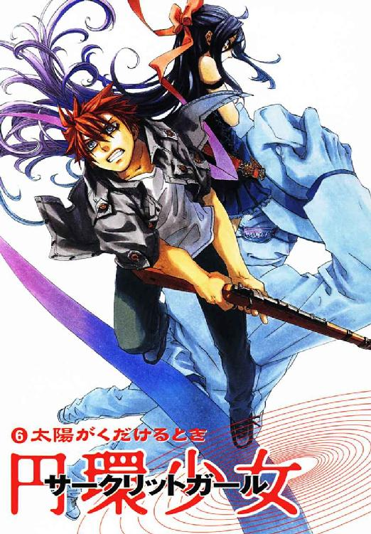
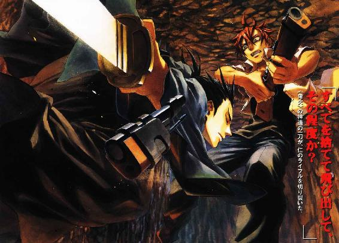
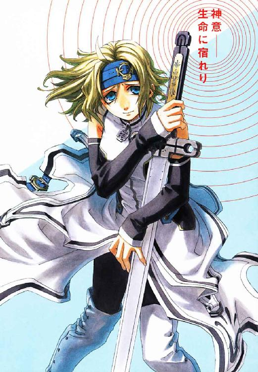
円環少女
⑥太陽がくだけるとき
長谷敏司
角川スニーカー文庫
本作品の全部または一部を無断で複製、転載、配信、送信したり、ホームページ上に転載することを禁止します。また、本作品の内容を無断で改変、改ざん等を行うことも禁止します。
本作品購入時にご承諾いただいた規約により、有償・無償にかかわらず本作品を第三者に譲渡することはできません。
本作品を示すサムネイルなどのイメージ画像は、再ダウンロード時に予告なく変更される場合があります。
本作品は縦書きでレイアウトされています。
また、ご覧になるリーディングシステムにより、表示の差が認められることがあります。
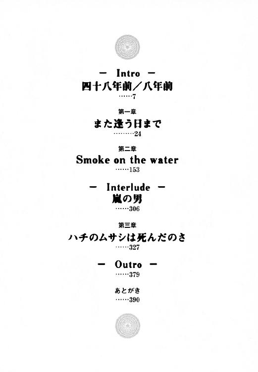
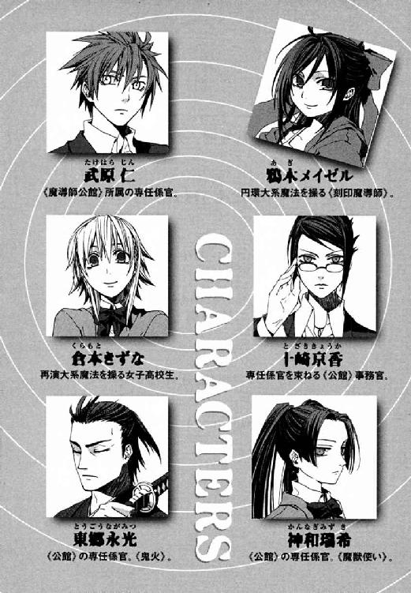
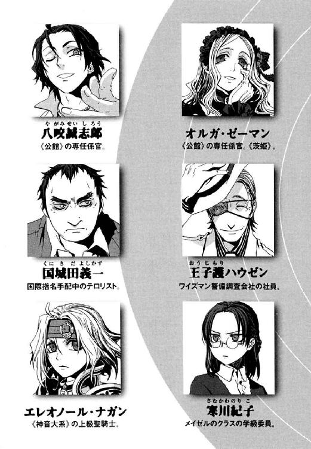
東京を核爆弾で脅すテロリスト、国城田義一が子どもだった一九五〇年代は、日本の変革期だった。この国にまだコンクリートの建物などほとんどなく、そのころ風景は土色だった。
彼は、第二次世界大戦が終わって兵隊に行っていた男たちが帰ってきた後の、第一次ベビーブームにうまれた。村は、古い世代とあたらしい世代がしずかに分離しはじめ、共同体の崩壊が静かにはじまっていた。ちいさな村でたくさんうまれても、地域の経済規模が一気に拡大するわけではない。だから、子どもたちが成長したとき働き口がないことは明白だった。そして戦後の焦土から復興を果たした高度経済成長期の東京には、仕事がたくさんあった。だから村の農業をささえる男たちまでが、もっとよい額をかせげる大都会へ出ていったのだ。
豪農の長男だった国城田の少年時代は、恵まれていた。村で運動も勉強も一番できた彼は、それなりの期待を背負っていた。
「よしかずくん、アメちゃんあげるから、こっちにおいで」
そのころ彼の家には、親戚の後家さんが居候していた。まっ白な肌をした、とてもきれいな人だった。昔のことだから、農家の居候は肩身がせまかった。彼女は本宅に入れてもらえず、離れの使用人用の家にひとりで住まわされていた。
「よしかずくん、東京に旅行に行った話、またシてくれない？」
彼女は、村から、昔は満洲と呼ばれた中国東北部へ十八歳で嫁いで二十歳で終戦を迎えた。そして、七年もかけて命からがら日本へ引きあげてきた。当時の国城田には、まだ七年という長すぎる時間を邪推する知識自体がなかった。子どもだった国城田は、〝彼女〟が好きだった。外国の話をしてくれたからだ。
「満州の話、してくれよ」
そのころの国城田は、終戦後の満蒙開拓団の惨状を知らなかった。だから引きあげの地獄を知るよしもなかった。ただ、村の母親たちが、子どもや夫を彼女から遠ざけたことを変だと思っただけだ。三十歳にもならない女ざかりだからこそ、彼女は村中から避けられていた。
「そんな話、あんまり楽しいことないよ」
彼女はただ、寂しそうな顔で裏山をながめた。離れは湿っぽくて、折鶴や女の子じみたものばかりがあった。外の世界を拒絶するような気配に、彼ははじめて異性を感じたのだ。
「ほら、よしかずくん、月光仮面はじまっちゃうよ」
国城田家には、村ではまだめずらしかったテレビがあったから、彼女はひとりになりたくなるとテレビ番組を口実にした。居場所がなく、離れからほとんど出ない彼女は、テレビを見たことがなかった。彼が何度説明しても、スイッチを押したらいつでも見たいテレビ番組をやっていると思っているほど無知だった。
どんどん人が東京へ流れてゆく村は、薄闇に包まれたように、なにもかもが色あせていた。
やさしかった後家さんを、国城田の家族もムラの人も、みんなで無視し続けた。命もぎりぎりで、ようやく日本に帰り着いた彼女は、いつも力のない微笑を浮かべていた。
「東京かぁ、いいねえ。おばさんも、いつか行ってみたいねえ」
後年になっても、国城田が彼女のことを思い出すとき、最初にあらわれるのは白い手だ。それは、彼女があっけなく自殺したとき、国城田が最初に見たものだからだ。
離れの和室の梁に帯締めの絹ひもを結んで、彼女は首を吊ったのだ。小学校から帰ってきた昼間のことで、死体を見つけたのは小学生だった彼だった。彼女の顔は、黄ばんだ障子紙ごしの逆光の向こうにあって、よく見えなかった。
低い梁に、彼女の体は、ぶらぶらと揺れていた。
なにもできない子どもだったから、彼は、死体を前に呆然とするしかなかった。いつまで待っても、なにひとつ状況はよくならなかった。
「あてつけにしても、屋敷の門の内側でやるこたぁないだあよ」
ものを考える能力を取り戻したのは、あたりが夕日の赤に染まる夕刻だった。彼の後ろには父がいた。そして、死んでしまった彼女の体を、勝手におろそうとしていた。
国城田少年はよく本を読んでいたから、勝手に死体にさわってはいけないのだと知っていた。父は、母がすぐそばの本宅にいるはずなのに、知らせようともしなかった。村の母親たちが、子どもや夫を彼女に近寄づけなかった理由もここにあるようで、おそろしかった。今、ここで行われようとしていることが〝悪〟だとわかった。
「駐在さんをよばないと！ 駐在さんをよばないと！」
しがみついた彼は、父のおおきな手に押しのけられた。
「なんもわからん子どもが、聞いたようなことを吐かすでねえぞ」
信次という若い庭師が呼ばれてやってきた。
「信次、裏山に吊るしてこ」
「そんなことしてもバレるよ！ お父さん、警察につかまっちゃうよ!!」
とてもやさしく、孝行息子をいつくしむように、父が国城田の頰に手を当てた。
「だぃじょうぶだ。駐在も、この村で、だれ守れば〝みんなのため〟になっかくらいわかる。お父さんはつかまったりしね」
それは国城田義一の、理不尽の原風景だ。どんなものにも負けない、おおきくて強い正義がほしいと思った。ムラの庭師や手伝いの若い衆まで、疑問すらはさまずそれに従ったからだ。その闇は彼ひとりの前でなく、時代を薄く覆っているかのように思えた。成長して大学生になっても、国城田たちが戦わねば世界はよくならないと焦り続けた。
──死んですら見捨てられる人間を〝みんな〟のためにつくることは、悪だ。そういう仕組みに荷担するものは、すべてが報いを受けるべき〝悪〟だ。
今、五十代もなかばになった国城田は、ビルの地下室の天井を見あげる。彼女が首を吊った梁は、ここの天井よりまだ低かったと思った。少年時代から彼は考え続けている。父が満州帰りで行き場のない若い親戚を愛人にしていたのだと、高校生くらいには理解できた。そして、屋敷の門の内側で死んだのでは体面が悪いから外に捨てたのだと。童貞だった国城田には、彼女がどうして父に体をひらいたのか不可解で、あの白い手を思い出して悶々としたものだった。
築七十年の古いビルの、かつてはコンクリートを流して封印されていた地下室に国城田たちはいた。裸電球のほのかなあかりの下、護衛の若い魔法使いが、褐色の手で銃の手入れを続けていた。魔法使いの狙撃手アナスタシア・タバタは若い娘だ。そして好奇心が強かった。
「なぜ......クニキダは、こんな勝ち目の薄い戦いをする。クニキダが......戦っても、だれも、よろこんでない」
国城田は、少年時代に〝悪〟に出会ったからテロリストになったのではない。〝悪〟は特別なものではなく、似たような悲劇も世界中で起こっていた。彼がここへ至る道を選んだのは、本当は、〝彼女〟を救ってやれたとわかったせいだ。だれかが行き場のないその人のために戦ってやっていたら、首をくくるまでは行かなかった。彼女は、本妻である国城田の母にうとまれながらも彼にやさしくし続けた。「よしかずくん」に助けてもらいたかったのだ。彼は、無力だったことを怒った。そして、〝悪〟は世界中にあるのだから、死んですら見捨てられる者も世界中にいるという事実に追い立てられた。
そして戦いの三十年を積み重ねた五十代の国城田から、瓦礫と灰の焦土の臭いはもう落ちない。ただ、怒り続ける彼の手には、〝恐怖〟で人を動かす力があった。
「......世界中の〝悪〟はな、みんなオレたちにつながってるんだ。オレたちは〝悪〟を盛る器だ。それでもすこしでも自由になりたきゃ、〝悪〟を量産する、あの一番頭のいい連中が作っちまう仕組みと戦うくらいしかねえよ」
国城田が長く戦い続けられたのは、理由が単純なところに行き着くためだ。
「〝悪〟ってやつは、いくらでもわいてくるんだ。戦うヤツは、ひとりじゃたりねえんだよ。百人でも、千人でも、十万人でも百万人でも人手がいるんだ。怒りを抱えたヤツがみんな立ちあがる世界が来ると、オレは思ってる。......だから、戦いはじめたばっかのヒヨッコじゃ手を出せない、そんなおおきな敵には、オレみたいに経験を積んだヤツが率先してぶつかるのさ」
そして彼は大学で、無政府主義者、蓮寺公直と出会った。寒川淳や、ガチケン、そして石原という友ができた。
国城田たちのうまれる直前、この国は戦場だった。そして、戦後の薄暗い闇と野放図な希望とのパッチワークを眼前にぶらさげられて、彼らは子ども時代をすごした。この国のそこかしこで、〝彼女〟のようなことはあった。おとなになろうとしたころ、この国は後ろ暗いものを埋め立てはじめたように思えて、国城田はいつも怒っていた。
そして五十代の国城田の目に、清潔なビルの林は、彼女の死体を裏山へ捨てたような嫌らしい作業を完成させたように映った。
†
八年前の冬、武原仁には妹がいた。
彼女、武原舞花は、魔導師公館という政府機関ではたらいていた。その仕事は、この世界で罪をおかした魔法使いを取り締まることだ。
この世界には神話の時代から魔法使いが訪れ続けていると、知る者はほとんどない。異世界人である彼らは、かつてこの世界の神話や伝説の源だった。関係者には《公館》と呼ばれる非公然機関で、妹は、この世界の法を無視する魔法使いから治安を守っていた。
仁は《公館》の、デキの悪い訓練生だった。彼にできることはそれだけだったから、いつまでも終わらないような夜の底で、仁はライフルをかまえていた。
魔法使いたちの文化では、人命は意志より軽い。だから、彼らはこの世界でも意志のまま簡単に人を殺すし、逮捕も殺しあいになる。優秀だった妹は、日夜、異世界人たちとの戦いの最前線にいたのだ。
武原仁がはじめて人を撃ったのは、高校一年生の冬だった。
まっ暗な、星のない夜で、空からは音を吸いこむような雪が降り落ちていた。
仁は、ライフルの狙いを正確につけるため照準鏡をのぞきこんだ、あの真夜中を覚えている。倉庫の前で、おとぎ話から抜け出たような灰色のローブ姿の男が、ドラム缶に木材を突っこんでたき火をしていた。仁がひそむ五階建てのビルの屋上から、そこは三百メートル離れていた。だが、十倍の照準鏡ごしに、老人の顔のしわまではっきりと見えた。
仁は、訓練教官である王子護ハウゼンに、この犯罪魔導師を撃てと命じられた。
彼の指は、凍ったように動かなかった。犯罪者だとしても、今、生きて動いている人間を彼が殺すということだからだ。彼がライフルの引き金を引けば、弾丸が音速の二倍の超高速で射出され、あの老人は頭を撃ち抜かれて死ぬ。高校のクラスメートは今ごろどうしているだろうと思った。同じ《公館》訓練生の八咬誠志郎は、銃を使わない。だから、こんなことをしなければならないのは彼だけであることを、恨んだ。
「俺が撃たなきゃ、舞花がやらなきゃいけないかもしれないんだぞ」
仁は、泣きそうになっていた。泣いていいのは、命を奪われようとしているあの老人のほうで、彼が弱音を吐くのは筋がちがうと思いなおした。
銃が重くて、捨ててしまいたかった。指の震えが止まらなかった。まっ暗な空から降る雪が、黒い銃身に積もりはじめていた。
それでも仁は、照準鏡に切り取られたせまい世界を凝視し続けた。一度目をそらしたら、もう二度とこの現実に直面できないと思った。
闇の奥で、魔法使いの老人はドラム缶のたき火に手をかざしていた。老人のローブは、黒と灰色のまだらだ。魔法使いたちは、この世界を《地獄》と呼ぶ。仁たちこの世界の住人が、観測した魔法や奇蹟を消去する性質を持つからだ。魔法使いたちにとって、六十億人の人口ほぼすべてが魔法の天敵である世界は、地獄だ。そして、魔法を消去するから奇蹟や神を生涯感じられない仁たちのことを、彼らは見捨てられた《悪鬼》とさげすむ。
照準鏡の向こうで暖を取る男の、節くれだった手は、血に汚れていた。仁は、のどの奥に酸っぱいものがこみあげてえずいた。老人のローブの下半身が黒いのは服のデザインではない。灰色の生地に、粘度の高い血液が大量にしみこんでいたのだ。ドラム缶から、切断された右手が宙をつかむように飛び出していた。ついさっき、犠牲者が解体されて死んだのだ。地獄礼賛派と呼ばれる魔法使いの一派は、《悪鬼》の体に魔法消去の秘密が宿ると考えている。だから、人間をさらって、心臓や眼球を魔法世界へ持ち去るのだ。伝説から現代まで続く神隠しの原型はこうした被害者だ。
彼は兄だ。だから、妹を助けてやりたかった。
「くそ、あんなのと戦ってるのかよ。くそ！」
仁は、口の中で何度も吐き捨てた。彼の知る舞花は、まじめで不器用な、甘えん坊だったのだ。
彼は魔法使いをじっと見た。体中の毛穴が開いて、汗がにじんだ。老人の目はガラス玉のように感情がないのに、口元だけに官能的な笑いを浮かべていたからだ。これは不吉な犯罪者の顔だと、仁の本能が告げていた。
「この引き金を引いたら、舞花を助けてやれるんじゃないか」
そう、思ってしまった。
今年の夏、妹の舞花は、一年ぶりに彼とすごしたアパートに帰ってきた。そして、「人を殺したの」と、さびしく笑った。妹は、今も人を殺し続けている。
仁は嫌で嫌で、ここから逃げたくてたまらない。だから一瞬、いつか危ない目にあった舞花を、彼が助けてやることを夢想してしまった。こんなふうに引き金を引いて。
──こんなふうに引き金を引いて。
音もなく、人形のように男は倒れた。
後になっても、仁はその銃声を思い出せなかった。
仁たちこの世界の人間は、ただ目で見、耳で聞き、観測するだけで、魔法使いたちが使う魔法を破壊する。だから、ライフルの照準鏡ごしに〝見る〟だけで、魔法使いの防御魔術はすべて砕け散る。
だから、奇蹟に愛された魔法使いは、ただ狩られた動物のように死んでいた。
仁は、はじめて人を殺してしまったのだと知った。彼自身を逃避させるためのきれいな夢は消え失せていた。
現実はスコープの中だ。そこに、人が死んでいる。彼が撃たなければ、あたりまえに生きていた人間が、薄く積もった雪の上に倒れていた。
ただそれだけのリアルが、舞花のためだと頭の中でこね回した言い訳を粉砕した。
仁は止めようなくその場に吐いた。体が冷えきっているのに、まだ胃の中にあたたかいものがあることが、違和感があってしかたなかった。
湯気をあげる吐瀉物の脇で、ライフルはただ非人間的な黒い光をたたえていた。
「なんて顔してるんデスか？ 上等な人殺しは、そんな世の中すねた顔してマセン。駄犬になるんじゃありませんヨ」
ビルの屋上に広がった汚物を呆然とながめていた仁に、背中から声がかけられた。振り返った仁の前に、雪の中、まっ白なスーツにまっ白な帽子のうさんくさい中年男がいた。不謹慎な笑みを顔に貼り付け、右目を銀の眼帯で覆ったその男が、彼を見おろしていた。
それが、彼の〝先生〟である王子護ハウゼンだった。
「なんだよ！ なんだよおまえ！ 人間ひとり死んだんだぞ。人が死んでるんだぞ！」
仁は、精密機械であるライフルを、コンクリートの床にたたきつけていた。殺したのは彼自身だということは棚にあげた。
だが、仁の決定的な矛盾には触れず、外見だけは四十代の怪物は言った。
「ボーイ、君が捨てたライフルの照準鏡は、レンズとレンズの間、まっ黒に塗りつぶしていマス。照準鏡は、筒の内側自体に色がついてると、狙撃のとき距離感が狂って、遠くを見る役を果たさナイのデス」
「なんだよ、俺は、道具かよ。くそっ、まわりくどいんだよ！ 俺の気持ちなんてどうでもいいんだろ！ もったいつけんなよ」
突っかかった仁の頰を、王子護が平手ではり飛ばした。
「落ち着きなさい。ボーイ、君が使っている道具の中に、まっ黒に塗りつぶされたものはいくつありマスか？」
殺人の嫌悪感と暗い興奮でのぼせた仁には、王子護のことばが理解できなかった。
「道具というのは、色がなければイイわけじゃありまセン。仕事を果たすために、適切な場所に適切な色をつけるのデス。自分の色を、他の誰かに塗ってもらえるつもりでイルのですカ？ 君の感情は、君自身が必要なときは使って、不要なときはスイッチを切るのデス。君自身が、仕事に一番役に立つ色を研究して、君自身が訓練してそういうものになってゆくンですヨ。
優秀な専門家とは、そういうものデス」
理解はできなかった。ただ、容赦ない正論の臭いだけを感じた。だが、仁は、納得してしまったら心が押しつぶされて洗脳されそうで、こわかったのだ。
「勝手すぎんだろ！ そんな都合よく、変えるのなんて無理に決まってるだろ」
王子護は、大事なことを言うときはいつも、口元だけを笑わせた苦い笑顔を作る。
「できなければ、君はいつか敵に殺されマス。君の大事なものは、一番むごたらしい方法で失われるでショウ。──君、『誰かを守りたい』から、戦うって決めたんじゃナイんですカ？ そのハードルの高さ、本当に理解できてマスか？」
雪は、いつまでも降り続けていた。
──そして、はじめて引き金を引いた冬から八年が経ち、この夏、仁は二十四歳のおとなだった。
妹の舞花は死に、彼の中では面影も薄れかけていた。彼女と暮らしたアパートには、その体の断片である魔法の泡がひとつぶ、迷いこんでいた。
武原仁は、魔導師公館で、かつて妹がつとめたのと同じ専任係官になった。学生時代はこの部屋でよくカップ麵を食っていた八咬誠志郎も、同じ職場ではたらいている。おさななじみで、なんでもできた十崎京香が、今は仁の上司だ。高校時代に想像もしなかったのは、彼の下に刻印魔導師がひとりついたことだ。
「せんせ、最近、よくうなされてるわ」
寝ぼけまなこだった仁が、体を起こすと、腹にかけていたタオルケットがなかった。かわりに、それを彼から剝ぎ取った少女がそばにいた。鴉木メイゼルは、まだ小学六年生で、《公館》史上最年少の刻印魔導師だ。
彼女が華奢な腕でそっとタオルケットを胸に抱いた。昼食前に帰ってきて体をやすめていた仁を、メイゼルが起こしてくれたのだ。
「ごめん。今、何時だっけ？ そろそろ仕事に出ないとな」
仁は、夕方四時に起こしてくれと頼んだことを思い出し、脂汗の浮いた顔をぬぐう。
「あたし、最近ごはんの時間がぐちゃぐちゃだから、せんせにお弁当をつくったげようと思うの」
少女のまっさらな肌が、カーテンごしの太陽の光を浴びて輝くようだった。ままごとのような彼女の物言いがくすぐったくて、仁は頭をかくふりをして目をそらした。
「気にするなよ。遊んだり宿題したり、いろいろあるだろう？」
刻印魔導師は、みんな魔法世界で神前裁判の極刑を受け、体に刻印を打たれてこの《地獄》に堕とされてきた。そして、魔法世界の巨大権力である《協会》の敵を百人倒すまで、自由になれない。彼が属する魔導師公館は、《協会》と日本政府を仲立ちする窓口だ。そして、メイゼルと同じ境遇の罪人たちを《協会》からさげわたされ、管理する。仁たち専任係官は、魔法使いからこの国の住民を守るために、刻印魔導師を道具として利用しているのだ。仁は、ちいさなメイゼルがなぜ苛烈な罰を受けたのかすら知らなかった。
そして歴史上、百人討伐を果たした刻印魔導師はいない。だからメイゼルも、順当にいけば遠くないうちに死ぬ。仁たち《公館》も、まだ小学生の魔女を殺す、残酷でおおきな仕組みに荷担しているのだ。
「せんせ？」
彼女が首をかしげたとき、長い黒髪が、重力に引かれてまっすぐ下へ垂れ落ちた。繊細なその頰の線が、触れてみなさいとばかりにくすぐったそうにしている。
「俺のことは、心配しなくたっていいんだよ。ここの部屋に住むようになったのだって、いろいろあってだから、ときどきいろんなことを思い出すんだ」
「せんせって、古いことでくよくよしすぎだわ。今はあたしがいっしょなんだから、もっとすごいことやひどいことだって、したげられるのよ？」
ちいさな魔女は、あどけない義俠心からか、仁を支えてくれようとする。問題は、彼女の嗜好がすこし嗜虐的な方向にゆがんでいることだ。
「俺は、おまえが元気にしててくれるだけで、けっこううれしいんだよ」
仁は、むき出しの肩に触れられず、飴色の瞳をうるませた彼女の頭をぽんとたたいた。リボンがすこしズレていたから、直してやる。妖精みたいにはかないメイゼルの、体温をそばに感じると、ほっとした。
だが、誇り高い魔女は、仁が子どもあつかいすると怒るのだ。
「元気にしてるのが仕事って、あたしに何も期待してないみたいだわ。足手まといみたい」
「俺は、おまえの小学校の先生もやってるだろ。先生が、生徒に一番してほしいのは、やっぱり無事に成長してくれることじゃないか」
「あたしはただの生徒？ せんせ、あたしがいなきゃ生きてけないって言ったのに」
少女が、家事くらいできるとばかりにタオルケットのほこりを払う。興奮すると、彼女の仕草は、無防備なくらい勢いよくおおきくなる。つり下げのワンピースの脇から肌が見えて、仁は薄汚れた天井へ目をそらした。
仁たち《公館》は、普通の小学生として暮らしてほしいと、彼女を小学校にかよわせた。それは、刻印魔導師を使い捨て続けている政府機関の欺瞞だ。子どもを死なせては寝覚めが悪いから、メイゼルだけを特別扱いしたのだ。だが、律儀で誇り高い少女は、年齢に甘えることを拒絶し、戦いの責務を果たそうとしている。
「俺は、おまえを助けてやりたいんだ」
仁は、壁にもたれて、すこし匂いが変わったこの部屋の空気を大きく吸いこむ。中学三年生のとき両親が失踪して、取り残された仁と妹は、このアパートで暮らしはじめた。すぐに妹は体を魔法に置き換えたせいで、この部屋を出られなくなった。仁は、妹を魔法消去で殺してしまわないよう、《悪鬼》としての消去能力を自分の意志で停止できるようになった。そして、奇蹟でもなければ助からない重症の妹を救ってもらうため、《公館》へ転がりこんだ。
ふうわりと、白とも金色ともつかない淡い光をはなちながら、魔法の泡が仁の鼻先をただよう。五年前、妹の武原舞花は死んだ。仁は、死体も返してもらえず、ただ殉職の事実だけを知らされた。体の断片ひとつだけが戻ってくるまでは、手がかりもなかった。
そして彼の前では、あのころの仁たち兄妹より年下のメイゼルが、運命と戦っている。
「おまえを、救ってやりたいんだ。そうしなきゃ、俺がおまえからもらってる信頼に、こたえられていない気がするんだ」
空はもう夕方の赤にそまり、また暗い夜が来る。仁は、この夢のようにあたたかな時間を、誰にも奪わせないと思った。
「俺は、おまえのことを、ただ命だけじゃなくて、もっと───────」
仁は声をつまらせた。高校時代の冬の夜、はじめて人を撃ったときの嫌悪が、吐き気になってよみがえったのだ。
「────もっとしっかり、守ってやる」
メイゼルが、興奮で沸騰寸前の表情で仁を見ていた。
女らしさを帯びだした頰を上気させ、荒い息を隠すようにタオルケットを抱きしめる。
「せんせも、本当の愛情ってものを受け取るべきだわ。......そうよ、せんせの胸にぽっかりあいてる穴に、このあたしをぎゅうぎゅう押しこんだげる。......せんせが泣いても叫んでも、穴が全部ふさがるまで、ぜったいやめたげないの」
あどけない魔女は、激しい刺激を想像したか、華奢な体をぶるりと震わせた。恥じらうように、桜色に血がのぼった顔に手をあてる。
「きずなだってすぐに帰ってくるわ。そしたら、今回の事件が終わったら、本当に、せんせの穴に、あ、あたしのことっ、......息ができなくなるくらいつめこんだげるんだからっ」
「......なんかやだなあ、その言われかた」
────だが、楽しくもつらい日々も終わった。
八月十三日の朝、メイゼルは凶弾をうけて倒れた。
三年前、《公館》を出奔した王子護ハウゼンの、新しい教え子による、ライフル狙撃だった。
日付は八月十四日に変わっていた。
武原仁は、すべての夢から取り残されて、早朝の駅のホームに立ち尽くしていた。
そこは、東京の地下に魔法使いたちが掘った知られざる地下鉄駅だ。古びたコンクリートのホームと木造の駅舎が、白熱灯の光に浮かびあがっていた。
仁の右手には、あの日とかわらずライフル銃がある。彼が、これから人を殺しに行くからだ。それが八年間ずっと彼の仕事で、追い詰められようと離れられるわけではなかった。
「ジン、君とは九年になりますか」
腐った木のベンチに、軽薄な白いスーツに身を包んだ中年男がもたれかかっていた。
この銀の眼帯で右目をかくすうさんくさい男は、王子護ハウゼン。かつて仁をこの世界に引きこんだ、元《公館》の専任係官で、彼の最初の〝先生〟だ。
「そうだな」
「奇蹟に見捨てられた君たちの感覚では、それなりに長い時間なのでショウね」
この王子護は、今は、経済力でこの世界に食いこもうとする魔導師企業、ワイズマン警備調査会社の社員だ。この男が隊長をつとめる戦闘部隊、ワイズマン狩猟魔導師中隊は、魔導師公館と現在も地上で交戦している。
外は真夏なのに、地底深くの駅は冷蔵庫の中のように空気が冷たい。この闇が地下何十メートルか仁にはわからなかった。ただ、もはや仁が太陽の下に戻れる可能性は、ほぼない。
「俺を、このまま行かせるつもりか？ 俺が殺しに行くのは、おまえの部下なんだぞ」
彼を奈落のような地底へ運んできた地下鉄車両を、仁は振り返る。東京の地下鉄網を大混乱におとしいれたのは、この車両に乗った王子護の部下たちなのだ。
「メイゼルを撃ったのは、おまえの部下のワイズマン狩猟魔導師中隊だ。あいつの傷には、もう医者も《公館》の魔導師もさじを投げたよ。それから、《協会》が知ってたみたいに接触してきた。あいつらは、メイゼルを治療するかわりに、俺にこの東京の地下にある地下都市を殲滅させろと言った。そこまでは、この戦いが最低だとしても理屈はとおってる──」
右手の銃がとてつもなく重かった。仁がこれから戦わねばならないものは、彼にとって最悪のものだ。
「──でもな、これから俺が殺す相手は、おまえの部下の狩猟魔導師中隊なんだぞ。おまえが俺をここまで運んでくること自体、部下を見捨てるってことだぞ？」
仁からの問いに、王子護は帽子のつばを引き下げてことばを返さなかった。八年前、はじめて人を撃ったときに似た吐き気が、腹の底に渦巻きだす。
「あの地下都市には、戦争中に大量に連れてこられた刻印魔導師が、自由を勝ち取って住んでるんだろ。その子孫に銃を持たせて狩猟魔導師中隊に仕立てあげたのだって、おまえらワイズマンだろ。人を撃ってカネを稼ぐことも、おまえらが教えたんだろ！ ......その隊長のおまえが、なんで仲間を家族ごと殺す手伝いなんだ？」
魔導師公館の仕事も決してきれいなものではなかった。それでも裏切りへの嫌悪で怒声になっていた。仁の声が、魔法で掘られた広いトンネルに反響した。
「気に入りまセンカ？」
「俺は、おまえのことが、ずっと前から嫌いだったよ」
武原仁は、メイゼルを救うこの戦いのため、すべてをなげうった。魔導師公館の規定では、作戦中に持ち場を離れて連絡を絶てば敵前逃亡とみなされる。刻印魔導師とそれを束ねる専任係官が行えば、処刑だ。仁に帰る場所はない。だからひらきなおれた。
「ジン、会わないうちに泣き言が減りまシタね。それに、説教くさくなりましタ」
仁の〝先生〟は、口元だけで笑った。それは、仁に解決すべき課題があるとき王子護がよくした表情で、見過ごせば命にかかわるという暗示だった。
もはや子どもではない仁は、ライフルの長い銃身を握りしめる。
「おまえがさらったきずなちゃんも、その地下都市にいるんだな」
仁の胸をうずかせるその名前に、王子護は反応しなかった。倉本きずなは、事情があってメイゼルといっしょに居候している女子高生だ。やさしいきずなも、メイゼルのことを、姉妹のようにかまってやっていたのだ。
「芝居はもういい。おまえが、地下都市で俺が何にぶつかるかに触れないってことは、きずなちゃんがそこにいるんだろ」
王子護は、トンネルに響く乾いた拍手で仁の疑いにこたえた。
「彼女をさらった張本人のぼくから、この期におよんで情報が出なきゃ、逆に、出せない理由を疑いマスネ。ジンの性格の悪いカマのかけかた、《鬼火》よりぼくの影響強いト思いマスヨ」
「おまえとはちがうよ。俺も、先生も、《公館》も、みんな普通より命を軽くあつかいすぎる。けど、ゆずれない最後の一線だけはちゃんと守ってる」
仁は、ドロドロして不誠実なものに背を向け、歩き出す。駅からのびるトンネルは一本で、選択の余地もない。明かりがない、まっ暗な迷路が彼に与えられた道だった。はるかな夏空と仁との間には、何万トンという土と岩がある。心が押しつぶされそうだった。
それでも仁は足を進める。彼の望みは、闇を踏みこえねばかなわないからだ。
「最後の一線デスか......そんなもの、本当に守れるつもりデスか？ そもそも、その一線ってドコにあるんデスカ？」
王子護の問いかけが、彼らしかいない駅に不吉に響いた。
「ジンは、ぼくらワイズマン警備調査会社のスカウト受けたほうがシアワセですよ。君は、《鬼火》のマネも、八咬誠志郎のマネも向いてナイ」
音を感じて振り返った仁の鼻先に、風を切って棒状のものが飛んできた。仁は左手でそれをつかみ取った。王子護ハウゼンが投げたのは、一本の鉄棒だった。
当の王子護自身が、一番驚いた顔をしていた。
「なんだこれは」
眼帯の魔法使いは、ホームのベンチから立ちあがり、脱いだ帽子で膝を払った。
「《剣》デスよ。ぼくからの、ちょっとした期待のアカシだと思ってクダサイ。謎に、──君は、ひょっとしたら触れることになるかもしれまセンからネ」
仁は手のひらの中のものの感触をたしかめる。円柱状で長さは約七十センチメートル、振り回しやすいサイズの鉄パイプだと思えば、役に立たないことはない。だが、どう見ても刃がないそれを、剣と呼ぶには違和感があった。
「ついでに、神話のあるじであるぼくから、おもしろい話を教えてあげマス。この世界の神話によく《剣》があらわれるのは、《神人》が執念深いくらい《剣》をのこしたせいデス。これは、そういう《剣》の一本なんデスよ」
「神人遺物だと？ こんなものまでよこして、何をたくらんでる？」
神人とは、この世界に太古にあらわれたという、高度な魔法を使う〝何者か〟のことだ。魔法使いたちですら、彼らがこの世界にのこした強力な魔法遺物──神人遺物をのぞいて手がかりすら持っていない。そもそも、魔法使いたちをこの世界へ導いた《門》も、遺物のひとつなのだ。
「それは、ただ頑丈なだけデスよ。けれど、数ある神人遺物の中で、《剣》だけがそなえている、最大の特徴デス。最高の剣は、折れず、曲がらず、切れ味をうしなわナイ。神人遺物の《剣》は、ほかのすべてがオマケのように、ただひたすら頑丈なのデス。いったいナニ斬るつもりだったんデスかネ？」
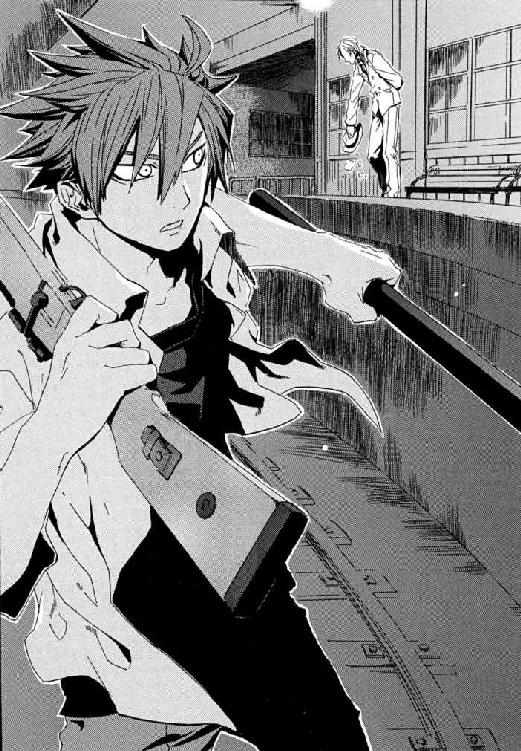
仁には、王子護の腹がまったく読めなかった。けれど、これからの戦いが絶望的なものだとわかっていたから、それを腰に差した。
「──ジン、本当におかしなことなのデスよ。ぼくら魔法使いが、君たちを支配するためにかたった神話や伝説に、《世界の終わり》がときどきまぎれこむんデス」
「神話は、何千年も前に、俺たちの祖先から世界を〝買う〟ために、おまえらが作ったものなんだろ。そっちの都合なんか知ったことか」
「ぼくらにとって、神話は、君たち《悪鬼》を支配してこの世界を経営するための道具だったのデスよ。おしおきの神話ならともかく、経営破綻して世界がほろびる神話なんか、魔法使いはひとつも作っちゃいねーデスよ。ぼくらにも、出所がわからないのデス」
これから向かうのは、仁自身をのぞいて誰にとっても最低な戦いだ。そう前だけ見るつもりだったから、仁はこんなことばで見送られる理由がわからなかった。ただ、そのとき隻眼の魔導師が、遠くを見通す昔話の賢者のように見えたのだ。
「──ジン。終末の神話では、創り手の御使いか、破壊者の、どちらかが《剣》を持つケースがたくさんありマス。剣は力や王権の象徴だから、君たち悪鬼の王が、《神話の終わりの神話》をつけくわえたって説明はつけれマス。でも、今は銃で撃ってるみたいニ、昔から君たちがぼくらと戦う武器は、弓矢や投げ槍みたいな飛び道具なのに、何で剣なんでショウ？」
†
武原仁は戦列を離れた。
それは、どんな理由であれ、十崎京香たち魔導師公館の戦場から彼がおりたということだ。
日本政府の非公然機関である《公館》は、八月十四日の午前五時現在、窮地にある。核爆弾を持ったテロリストが、首都を六十年前の、終戦の焦土へ返そうとしているからだ。
かつて、第二次大戦中、東京の地下には空襲にそなえたトンネルが数多くつくられた。その労働力として、魔導師公館から、陸軍の要請で刻印魔導師が多数動員された。その結果、首都の地下には、《公館》にも把握できない巨大な地下迷宮ができてしまった。王子護ハウゼンの支援を受けたテロリスト、国城田義一は、この迷宮を利用して警察を翻弄しているのだ。
だから専任係官のまとめ役である京香は、三時間前、ワイズマン狩猟魔導師中隊の後方基地の殲滅を命令した。補給と休息の場所をつぶすことで、神出鬼没の敵から継戦能力を奪い、自由に動けなくするためだ。京香は、《協会》から情報をもたらされた地下都市へ、《鬼火》と《茨姫》の、ふたりの専任係官をさしむけた。
十崎京香は、薄暗い医務室で体を起こした。服装はスーツのままだ。仮眠を取るために横になっていたが、眠れそうになかった。
「眠らなかったんすか」
公館本館の医務室のあるじ、織田笑美理がデスクから振り返った。
エアコンの音がかすかに響いていた。医務室が仮眠部屋になっているのは、老朽化した公館本館にあって、この部屋だけはよく空調がきいて快適だからだ。
京香は、枕の横に置いたクリップをとって、おろしていた髪をアップに結い直した。
「やっぱり、眠れる気分じゃなかったわ」
激務の高級官僚である彼女にとって、年の近い医師は話しやすい相手だ。武原仁がいない今では、公館職員でもっとも近い関係である。
織田笑美理が、コーヒーメーカーからビーカーをとりあげた。京香のために、紙コップを棚から引っ張り出してくれた。
「眠れなかったんすね」
京香の指は細かく震えていた。生き死にの現場に出たことがない笑美理は、それに気づかなかった。一昨日、京香は狙撃を受けて命を落としかけた。魔導師公館の運転手の浜勝彦が、殉職した。車内に充満した血の臭いを、京香は今でも覚えていた。だから、コーヒーの薫りが、こわさをやわらげてくれるようで、胸に染みた。
「武原さんのことっすけど......」
笑美理がなにを言いたいかはわかった。だから、即座に打ち切った。
「決まったことです」
京香は、地下都市の攻略へ向かう専任係官たちに、途中で武原仁を見つけたら処分するよう命じた。
理由はどうあれ、それは敵前逃亡で、専任係官の敵前逃亡は死刑だ。《公館》は、感情でルールを曲げることができない組織だ。死体を積みあげることが仕事だからこそ、感情で動けば際限なくテロリストや職業殺人者に近づいてしまう。《公館》は本質的に、自律の努力を捨てれば、最低限度の道徳すら保てなくなる組織なのだ。
「後悔しないんすか。武原さん、十崎さんのおさななじみなんすよね。メイゼルちゃんのことだって──」
「もうやめて。今は、そういうこと話すときじゃないでしょ」
京香は知っていた。彼女のおさななじみの武原仁は、孤立無援で死ぬ。
仁が姿を消したことも、おそらく地下都市にかかわってのことだ。地下都市に利害を持った者以外には、仁にこのタイミングで持ち場を離れさせる理由が見あたらないからだ。ただメイゼルを人質にして脅迫するなら、もっと時間をかけて仁を揺さぶるほうが効果は高かった。
だから、元同僚の専任係官に処刑されなくても、仁は地下で利用され尽くして捨てられる。
彼女のおさななじみ、彼女を「京香姉ちゃん」と呼んだ武原仁はもういない。魔導師公館にとっては、犬死にもいいところの無駄死にだ。
「でも、もしもメイゼルちゃんを人質にされたのなら、わたしたちだってそうするっす」
笑美理も京香も、専任係官以外の《公館》職員は、ただの公務員だ。だから、彼らは仕事に誇りを失わないため、欺瞞が必要だった。京香がメイゼルを引き取って居候させたのは、まだ小学生の子どもに死なれると公館全体の士気が落ちるせいだ。それは、急時には切り捨てる、ただの安全弁だった。ただ武原仁だけが、それのためにすべてを捨ててしまった。
京香は、泣いてよいのか、自嘲でも笑えばよいのかわからなかった。
「────織田ちゃん。もし仁がやっぱりダメで、メイゼルちゃんがひとりで帰ってきたら、あの子、しばらくあずかってくれない？」
笑美理が作り笑いに顔をかためたまま絶句した。だから、身勝手な彼女自身が嫌になった。
「あははははは。ごめん、じょうだんだって！」
京香はスーツの乱れを直すと、医務室のベッドからおりた。
「あんた倒れたら、わたしが責任押しつけられんだから、体こわすんじゃねっすよ」
彼女の今の顔を見られていい相手は、もう魔導師公館にはいなかった。悪い思い出ばかりでも、子ども時代から多くを共有したおさななじみは、二度とここへは帰らない。
十崎京香は、専任係官のまとめ役だ。彼女が現場指揮者としてくだした命令で、専任係官が動き、刻印魔導師が道具として消費されてゆく。その冷たい仕組みは、魔法使いたちからこの国の人々を守る血みどろの盾なのだ。
だから、これからまた京香は、暗くせまい事務室でひとりになる。仕組みの中で仕事をこなすことが、仁のそれとはちがう彼女の戦いだった。
────八月十四日、深夜四時二十五分。
夏の太陽が東の空を染めだしたころ、テロリスト国城田義一からの二つ目の檄文が、日本中に静かに広まりはじめた。報道機関を挑発するように、コンピュータネットワーク経由で、各社の朝一番のニュース番組の開始直前を狙っていた。
深夜に出た最初の檄文より、音声ファイルの論調は過激になっていた。
〈君たちは、テロリストのしかけた爆弾で、君たちの安穏な生活が砕けることはないとタカをくくっているだろう。人間の怒りなどその程度のもので、社会はそれを吸収できると錯覚しているだろう。
だから、われわれは、攻撃を、出会いがしらの事故のようには行わない。君たちには、〝怒り〟を今ある秩序が止め得ない証明として、恐怖と失望の姿を世界中にさらしながら破滅する責務がある。
この世には怒りが満ちていて、不平等のうえにあぐらをかく者はその鉄槌から逃げられないのだ。怒りそのものをなくすほか、自分たちが生きのびる道はないのだ。それがこの世界が瓦礫の中で悟るべき正義である。
八月十五日を最終期限として、われわれは、君たちがよりどころとするものを焼き払う。そのとき、君たちは、〝怒り〟こそがこの世界を照らすもっとも平等な太陽だと知るのだ〉
それは核爆弾の起爆スイッチを握ったテロリストからの、実質的な最後通告だった。
警察は、そのメッセージを、衝撃をもって受けとめた。国城田の最終刻限が、第二次世界大戦の終戦記念日だったからだ。この日は、首相をはじめ政財界の要人が、終戦記念式典に出席するために首都に集まる。警備を担当する警察にとって、最悪の舞台だった。
日本の警察は、刑事事件を担当する刑事警察と、治安を担当し国内の過激派などを取り締まる公安警察にわかれる。その公安警察を統括する警察庁警備局では、特に事態は重く受け取られた。過激派に対して諜報機関的にはたらくべき彼らにとって、国城田事件がここまで大きくなったこと自体が責任問題だったのだ。
警備局副局長、清水健太郎は、経歴の先が見えた五十代の幹部職員として、これを最後の事件にする覚悟を決めた。
「やってくれたものだな。準備の時間も与えないつもりらしい」
吐き捨てたのは、先日、狙撃された貫井正人にかわって警察庁警備局の局長についた龍堂巌だ。清水健太郎の同期入庁組で、出世レースの頂点をうかがっている男である。
執務机についた龍堂はちいさな爪切りで左手の爪を切っていた。清水は、歴戦であるはずの彼自身の判断も幕僚として冷静かわからなかった。
「警察に勝負をいどむような声明を出しながら、国城田が明日というアンフェアな刻限を切った意図は明白だ。ちいさな矛盾などどうでもいい規模の被害を出すつもりだということだ」
「清水君も、国城田は本気でやると思うか。君は、一時、国城田と友人としてつきあっていたことがあったな」
龍堂は切ったばかりの爪をティッシュペーパーにまるめて、机の隅に置いた。緊張しているとき爪の手入れをするのは、龍堂のくせだ。
「国城田は無軌道な男だった。恩師だった蓮寺公直の影響が強かったせいだ、理屈より自分の怒りを信じている。引き際をわきまえるタイプではなかった」
清水健太郎は、学生時代、国城田からガチケンとあだなをつけられた。三十数年前、大学から革命をはじめようと学生が暴力に手を染めた、熱く暗い時代があった。清水は、危険な思想家であった蓮寺公直の周辺をさぐるため、その男が講師をつとめる大学に近づいた。清水と国城田の間に奇妙な友人関係が築かれたのは、青春時代という魔法のせいだった。
「国城田義一、魔法使いの核爆弾、魔法使いでも撃てる《魔法使いの弾丸》、それにワイズマン狩猟魔導師中隊か......。これだけ狼藉をはたらかれても、国城田の身元以外はすべて秘密にすべき事項だ。理不尽だとは思わないか」
龍堂が爪を切り終えてしまった両手を、名残惜しそうにじっと見た。
警視総監を本部長とする最高警備本部が発令され、事態はもはや国家の危機として認識されている。核爆弾を積んだ幽霊列車が、地下鉄新橋駅で目撃されて、すでに三日たつ。翌日には警備局長が狙撃され、テロが進行中だと国民に露見した。なのに魔法使いにかかわることは公開できないため情報を運用できず、市民と協力関係も築けない。
早朝の陽光に洗われる東京が、霞ヶ関の中央合同庁舎二号館の窓からは、ひどくまばゆかった。街は、六十年前に焼け野原となって終戦を迎え、幾多の変革をはさんだ長い時間と膨大な労力をかけて高層ビルの林へと成長した。それが美しいかどうかはさておき、一千万の人々が暮らす彼らの守るべき風景だ。
開き直ることが苦手な龍堂は、すべての緊張を受け止めようとしていた。
「国会議員をとおして、警察に、地下鉄の運行を止めるべきだという突きあげが来ている。今日じゅうには内閣は事件への対処方針が決定せにゃならん。十五日の終戦式典は、中止か政府首脳を欠席させることになるだろうな」
龍堂は本来、頼りがいのある男だ。だが、今は浮き足だっていた。清水は、魔法使いたちとやりあう魔導師公館の狂気を見てきたからこそ、あえて正気から一歩逸脱した。
「地下鉄側に捜査協力を頼んだ以上、爆弾をのせた地下鉄のことは労働組合から情報が漏れる。半年以内には、党から国会質問が出る。我々が要人だけを逃がしたと知れたら、警察は国民の信頼をなくす」
市民の〝不安〟と、首都で厳戒態勢が続いている〝理由〟がつながることは、治安の危機だった。前世紀に進歩したゲリラ戦争の理念は、二十一世紀のテロリストたちにも受け継がれている。ゲリラは秩序を破壊し、安全という国民の信頼を現行の政府からひきはがす。不安と恐怖は、国民を守れない政府への怒りに転化される。続くのは、テロリストによる破壊にすら道理があったように錯覚する、不安から逃れるため道理が吹き飛ぶ無秩序状態だ。
学生スパイあがりの、公安警察でもっとも強硬な武闘派。それが清水にとっての警察での立ち位置だった。
「腹を決めよう。この我慢くらべがしたくて、国城田義一は、核を手に入れてすぐ爆発させなかったんだ。公安がオタついたら、このケンカ、負けるぞ」
それは治安の枠組みを最優先させた賭けだ。それどころか、八時からはじまる最高警備本部での会議でも通用しない、公安の論理かもしれなかった。
「......つまり、清水、......首脳に脱出せず踏みとどまってもらうということはだ。......それで私たちがしくじったら、日本という国は本当に死ぬぞ」
国家の保全を考えれば、首脳は守らねばならないからだ。
龍堂巌はたばこを吸わない。だが、清水の前に、来客用に用意してある灰皿をすべらせた。清水が一本吸ったら動きはじめるという、龍堂なりの礼だ。
「もし警察からの要望が国家に却下されたとしても、我々治安側の覚悟はすわる。組織としてはそれでいい。......それで、最後の最後まで我々の仕事ができる」
清水が、三十年もかわらず吸い続けているホープに火を点ける。その煙が広がってゆく間に龍堂が方策をまとめはじめていた。
「例の魔導師公館も押さえておこう。魔法使い事例の専門家を、野放しにはできん。あそこは、公安ＯＢのお歴々にも相当きらわれていた」
「彼らにはなにもできんだろう。警察とあそこじゃ規模に差がありすぎて、戦力に期待するのはむずかしいぞ」
龍堂は、眼前の仕事以外に興味がない清水とちがって、退官した公安ＯＢにはたらきかけて政治ができる。それは、龍堂が彼より出世レースで前を行っている理由でもある。
「魔導師公館は、今こそおちぶれたが、戦中は陸軍に協力して一時代を築いた連中だ。大戦後の東京裁判でも、責任を負って戦犯になったのは、当時専任係官をたばねていた官僚たったひとりだ。ＯＢの大物には、特高から大勢が戦犯として裁かれたのを忘れてない人もいる。あの〝神話の末裔〟どもは、精算もせずに今もこの国の裏側を食い荒らしていると、本気で思っている方もおられる」
神国だった戦前日本で、神話の末裔たちとの窓口の存在は一種の禁忌だった。その《公館》が陸軍に近しかったことは、禁忌の暗闇に巣くったゆがみだった。そして彼ら公安警察の前身である特高は、陸軍の軍警と犬猿の仲だった。清水は、断ちがたい過去がどこまでも足もとにまとわりついてくるのが、うとましくてならなかった。あの国城田義一が、ワイズマンなどという魔法使い集団にかかわっていることが、いっそう腹立たしかった。
「どこへ行っても歴史だ魔法使いだと......」
狙撃対策でブラインドをおろした窓の向こうには、彼らの暮らす東京があった。
国は国、治安は治安、魔導師公館は魔導師公館の立場、国城田もまた彼の立ち位置で社会という機械の歯車を回している。混沌とした状況の中、はっきりしているのはひとつだけだ。
──遅くともせいぜい三十六時間後、十五日の夜までには、核爆発は起こっている。
同じ朝の街を、テロリスト国城田義一は、地下室から二階へのぼって、窓から見ていた。
東京は、学生闘争から先の日本史を体験していない彼には、挫折のしるしだった。国城田は三十年以上前、米軍基地へ火炎瓶を撃ちこみ、国外逃亡した。国際テロリストとして活動をはじめて、彼が転戦しているあいだに日本は急速に繁栄した。中東で日の丸をつけた装甲車に衝撃を受け、戻ってみればこのありさまだった。
「この国はいったい、どこへ来ちまったんだ？ もういっぺんよ、なにがだいじだったのか、ゼロに戻って考えるべきなんじゃねえのか？」
国城田は、若かった学生時代と同じように、空き缶を灰皿にしてたばこを押しこむ。
テロリストの主張は、非社会的な過激さを抜けば青年の主張に似ていると、警察はしばしばいう。国城田は、五十代もなかばになり、腹は中年太りで髪も薄くなった。むしろ彼は、不満を持つ人間たちを成長させまいとする社会の〝悪〟が、今の東京をうんだのだと怒った。
彼の後ろに、かすかな足音があった。振り返ると、蜂蜜色のふわふわした髪を気にしている高校生くらいの少女が、廊下で待っていた。
「......見つかったら、ぜんぶムダになる」
小麦色の肌をして、体はすこしぽっちゃり気味にまるみを帯びた彼女は、優秀な兵士だ。このアナスタシア・タバタを、王子護ハウゼンは、狩猟魔導師中隊から彼を守る最後の盾としてつけたのだ。
「そいつはおじさんが悪かったな」
国城田は、王子護たちワイズマン警備調査会社にカネを払って、テロを手伝わせている。彼らは、魔法使いが安全にあつかえる銃弾──《魔法使いの弾丸》を宣伝するため、国城田のテロを利用している。現在、彼が日本をおどすのに使っている核爆弾は、彼女たちが米軍基地から奪取したものだ。警察を翻弄しているのも《魔法使いの弾丸》を使う魔法使いたちだ。国城田の核テロ成功の実績自体が、ワイズマンには商品宣伝なのだ。
「......あなたには、......仲間のかたきをうつの、助けてもらう」
アナスタシアは、たいせつそうに黄色いパンケーキを一口かじって、またポケットに入れた。
少女は、この数日の地上戦で、たったひとりの男に十人も仲間を射殺されている。昨日、その報復として、アナスタシアが男の連れていた子どもを狙撃した。まるで、国城田が歩いてきた戦場のような憎悪と報復の連鎖だった。
「それなら、次はもっとアンフェアにいこう。おじさん、そういうの得意なんだ」
国城田が、今、国家に仕掛けているゲームも、手がかりがすくなすぎて不公平なものだ。彼らと国家の間のゲームは、いつでもお互いに不公平だ。そう考えると、国城田は笑いがこみあげてきて止まらなかった。高層ビル街でせまい空を見るのは、まるで巨大な牢獄に閉じ込められた気分だった。ここに更地が戻ってきたらいいと思った。
東京を焼く核の炎が、歴史に残る被害とともに、教訓と国への不信を永遠に焼きつけるのだと、不謹慎な興奮がわいた。
「......どうして、あなたは、そこまでして自分のうまれたところを焼きはらいたい？」
朝焼けに洗われたアナスタシアが、まっすぐな視線を彼に向けた。国城田は、青春の日々がよみがえるようで胸が熱くなる。彼は、貧しい国々で爆弾闘争に従事したときも、子どもに問われるたび闘志をあらたにした。
「おのれをただすのは、自分自身の仕事だからだよ。この国が、人間の未来のためにならないなら、それを殺す引き金は、おじさんたち自身が引かなきゃならない」
†
武原仁は、東京の街とは隔絶した、朝になっても暗い地下をゆく。
そこには機能や意図のこもった建物はなく、色もない。魔法使いがつくった地下道は、幅三メートル高さ約三メートルと規格が一定だ。
単調な通路の風景に気が狂いそうになりながら、闇の底を歩く。懐中電灯の弱いあかりがかすかに反射する地下通路に、かたい足音が響いた。床や壁には、戦闘のあとのようなひび割れや切り裂いたあとがある。日本が戦争に負けて東京が占領されていた時期の傷だ。地下迷宮の最深部にあるという《協会》の最重要拠点、《門》を陥落させるべく、米軍と協力関係にある神聖騎士団が攻めこんできたのだ。そして、この迷宮は五年間で合計一万人を超える死者を出した激戦地になった。
東京の地下は、三つの歴史が層をなしている。
もっとも地上に近いのは、一九四五年の終戦後に、転換点を迎えた日本が、地下鉄や水道管などを縦横に走らせている層だ。仁が足を進めている、魔法使いが戦前に掘った照明のない地下迷路は、その下になる。このさらに下層には、この世界の者が見たことがない、《門》を中心とした《協会》中枢部があると言われていた。
そのせいか、何十分か前には、別の幽霊地下鉄でも近くに来たように暗闇の床が震えた。人間が知らない地下鉄は、仁をここまで運んできた一路線ではなかったのだ。武蔵野迷宮は、魔法の通路で寸断されていてこの世界の人間にはろくに進めない、聖騎士を斃す罠だらけの要塞だと思われていた。それが、いつの間にか交通の便利がよいよう拡充されていた。こんな幽霊地下鉄本当は何本あったのかと、あざむかれた気分になった。
「俺たちはどこまでモノを知らなかったんだ」
仁は、怒りが右手ににぎった狙撃用ライフルにしみてしまうようで、気持ちが悪かった。他の武器といえば、王子護が《剣》だという得体の知れない鉄棒と、肌身離さず持っている大ぶりのナイフが一本だけだ。彼は、それで地下都市を殲滅して核爆弾を奪取しろと送り出された。《協会》が、本当に期待をかけているならありえない装備だ。
現在、この地下迷宮にいるのはワイズマンだけではない。《協会》の宿敵である神聖騎士団の、機械装備を配備した機械化聖騎士隊も核爆弾を捜していた。組織から飛び出してひとりになった仁には、あらゆる意味でいずこも敵だらけだった。
王子護は、地下鉄駅から地下都市まで、長いがほぼ一本道だと言った。それは途中でなにとぶつかっても逃げられないということだ。立ちはだかったものが、たとえ絶望的な壁だったとしても、くぐり抜けるよりほかに道はなかった。
「──おぅ」
だから仁は、聞き慣れた声に呼び止められて、恐怖で全身の毛穴がひらいた。
闇に同化したように、まったく気配がなかった。その人は、地底の無明の中、灯火もなくそこに立っていたのだ。
だから仁は、動けなかった。その間合いはすでに、その人から二歩。隙をつくった次の瞬間、武原仁の首は胴から落ちるからだ。
仁の懐中電灯は床を照らしたままだった。だから見えたのは足袋をはいた足もとだけだ。それでも、《鬼火》東郷永光の圧倒的な存在感を、仁が間違えるはずがなかった。仁の師は、地下は寒くとも季節は夏だから、風流な着流しの和服を着ているはずだった。髪は総髪茶筅、腰には愛用の肥前国忠吉の大業物を差した、時代劇から抜け出たような姿にちがいなかった。視力のほとんどない目を閉じ、悠然と、地底も街とかわらぬかのように、剣鬼はきっとそこに立っている。
専任係官を十八年つとめた重鎮たる《鬼火》が、直々に、弟子である仁を斬りに来たのだ。
「なんで、魔法使いの道を使えない東郷先生が、俺より先回りしてるんです」
東郷は、魔法を破壊してしまうこの世界の人間だ。だから、魔法で運んでもらうことも魔法の抜け穴をくぐることもできない。仁は、魔導師公館より最低一時間は先行しているつもりだったのだ。
だが、目の前の武人は爽快なほどに〝逸脱〟していた。
「人知れずこれをつくった魔導師どもだ。位置さえわかれば、案外簡単に抜け道の一本や二本は掘れるものだぞ」
じとりと嫌な汗がわいた。仁は、彼自身の残酷な立ち位置を飛び越えたつもりだった。だが、東郷に簡単に追いつかれた事実が、厳しく突きつけていた。武原仁の器量は、ひとりきりになろうが、救い得ないものを救ってやる、求める遠さにまったく足りない。
「武原よ。────すべてを捨てて飛び出して、その程度か？」
仁は、全身の力をこめて後ろへ跳んだ。
「それでも、まだ俺は死ねないんだよ！」
空中で銃口を《鬼火》へと向けた。
──すでに、そこに気配はなかった。
あったのはただ、暗闇そのものが押し寄せてきたような、圧倒的な死の予感だった。
振るわれた剣の音より、師、《鬼火》の声が閉ざされた通路におおきく反響した。
「貴様は、あの幼子を、助けると言ったな」
仁の手の中のライフルが、軽くなっていた。合金製の長い銃身が、竹輪でも切るように両断されていた。金属音が、カランと軽く絶望を響かせる。仁は、数秒でも立て直す時間がほしくて、銃身を伐られた、もはや弾丸がまっすぐ飛ばないライフルを撃つ。
「憐れ。......死してなお、貴様のひとり相撲に巻きこまれたか」
仁の息が止まった。凶弾に倒れる数分前、メイゼルに、ふたりの答えはいっしょに見つけると言われたことを思い出したからだ。今はひとりである欠落の感覚が、彼をさいなんだ。
咆吼し、仁は用をなさない銃器を東郷へ向けて投げた。その一息でスラックスの腰からナイフを引き抜く。東郷永光は、間合いに入ったすべてを切り伏せる達人だ。この暗所で、剣の軌道など見えなかった。
雷鳴が、仁のかまえたナイフに墜ちたようだった。
「俺が知っているしあわせは、あいつのしあわせだとは限らない。わかってるよ！」
上段からの一刀を、仁は足を踏ん張って受け止めていた。仁は、右手のナイフと鍔ぜりの状態に持ちこんだこと自体が奇蹟だと理解していた。幾多の命を奪った仁の右手と、その十倍もの魔導師を殺めた東郷の手が、ともに刃物を握ったままぶつかり押し合う。
日本刀の刃の長さを利用して、東郷は仁の首筋へ人切り包丁を押しこんでくる。そう読んで半歩退いた仁の弱気をなじるようにいた仁の弱気をなじるように────。
「壊アアアアアァァッ 」
」
あの東郷の刃を受けた──つもりでいたナイフが、軽くなった。次の瞬間、スッと抜けたぬるい風が、身も世もなく跳び下がった仁の胸元をかすめた。
起こったことを理解した瞬間、仁ののどは悲鳴をあげていた。気合い一閃、頑丈なコンバットナイフを、刃と刃を合わせた状態から切断されたのだ。だが、長さが三分の一になった四センチメートルの刃渡りに、仁は命を託さねばならなかった。
神速の返し刃が、下段からの切り上げで彼のあごを断ち割ろうとせまっていたのだ。ちびた刃で受け流しきれたのは偶然だった。角度にして十五度だけ軌道のそれた剣筋が、仁の左頰をかすめて肉をえぐりとった。
「惰弱な性根で、この己の前に立つかッ」
ただ一合の斬り合いで仁は銃とナイフを失い、東郷は無傷だ。味方だったとき、この師ほど頼れる人はいなかった。《公館》の裏切り者として斬られようとしている今は、乗り越えかたがわからない巨大すぎる壁だ。
東郷永光は人を愛し、酒を愛し、自分を律し、剣に生きる。その剣鬼は、殴り合いや斬り合いを習った仁や八咬誠志郎のあこがれだった。
仁の左手の懐中電灯の光が、肥前国忠吉の地金を、まるで地底の月輪のように冴え冴えと輝かす。
「......俺は」
仁は全身を汗で濡らし、乱れた息の下から声をあげる。魔導師公館とかかわって、仁は多くを失った。だが、そこで戦い、妹に去られて立てた誓いから八年歩いてきた結果が、今の彼自身だ。ちいさなメイゼルを見捨てれば、それすら失うと思った。百万回問われ直しても、彼が彼自身であるため百万回ここへ来たと信じた。
「俺にできるのは、俺が何を捨てても助けてやりたいものを、助けてやるだけだ」
左手に懐中電灯を持ったまま、仁はナイフを王子護から受け取った《遺物》と持ちかえる手だてを考える。仁の取り柄など、魔法消去を停止することくらいだ。それも、純粋な《悪鬼》である東郷相手では意味がない。そして技倆の差にくわえて、元来視力のほとんどない《鬼火》は地底の無明でも行動に制約がないのだ。
「心が定まってもいないのに、えらそうな口をたたきおるわ」
東郷の怒声が、仁の、取りつくろった欺瞞の生皮を引きはがした。
「武原よ。貴様、地下都市にいる倉本とかいう娘を殺す覚悟はできたか！」
たった一言で、振り捨てられるはずもなく、覚悟を引きちぎられた。彼にとってきずなは、望みすらしなかったあたたかい家庭とおだやかな暮らしをくれた人だからだ。彼女がくれたものに、何かを返してやりたかった。そして、父親を殺して倉本きずなを天涯孤独の身にしたのは、仁自身だった。動揺した仁は、すこしでも時間がほしくて一歩さがった。
だがそれが、運命の分かれ目だった。
「女の命を背負った男が、気圧されて退がるかッ！」
《鬼火》の剣は風よりも速い。神速の踏みこみの後を、巻き起こった疾風が追うのだ。
一刃に続いて、降り積もっていた塵が嵐のごとく爆発する。
心地よい衝撃とともに、魂が半分持って行かれたように仁の体が軽くなった。
仁の右手が、二の腕のちょうど半分の場所で斬られて、床に転がった。
彼の右手──────────────彼の────右手が、ナイフを握ったまま、おもちゃのように────ごろりと。
東郷が、刀を血振りする。武器を失い無防備になった仁に、とどめの一撃をくれるためだ。仁は、血が噴き出す右手の傷口を、左手で押さえる。焼けるような激痛に、腕を失っていると判別できない脳が混乱して、頭がぐらぐらした。のたれ死にが彼の生きてきた結果かと、冷たい理解が理性を満たしていった。大量に噴き出すあたたかい液体が、左手の手のひらを押し返す。その感覚が、訓練時代に何度も死にかけた記憶を思い出させ、彼を正気に戻した。ぬるつく左手で右手の動脈を圧迫した。このまま血液を失えば、失血死するからだ。
大量出血のショック症状が、止まらない動悸と吐き気になって押し寄せてきた。内臓が機能不全を起こすのではないかと、恐怖にかられ、それを吹き飛ばしたくて仁は絶叫した。
天井が、ほんのわずかに揺れた気がした。
懐中電灯を取り落とした闇の中、血の臭いで頭がおかしくなりながら、仁は身を投げ出した。風を切り裂くかすかな音が、仁の心臓を恐怖で凍らせた。一片の容赦もなく、東郷は彼の首を落としにきたのだ。
みずからの血だまりで滑りながら、仁は足をもつれさせ立ちあがる。斬り合いのさなか、仁と東郷は位置を入れ替えていた。後ろも見ずに走ればあるいは逃げきれるのではないかと、一瞬、頭をよぎった。その甘い背中が、浅く切り裂かれる。
「振り向け、武原。──せめて、とどめは真っ向からくれてやる」
仁は荒い息を整えようと、のど元にせりあがった吐瀉物ごと大きく空気を飲みこむ。
「俺は──」
右手から垂れ落ちる鮮血にもかまわず、仁は残った左手を腰の後ろに回した。振り返りざま王子護が《剣》だと投げわたした、ただの鉄棒を引き抜いてかまえる。
仁の正面を覆う無明の闇から、目もくらむ裂帛の気合いが押し寄せてきた。
「俺はそれでも生きる！ 助けてやる!!」
仁は、理性も技もなく、体ごと〝それ〟へ鉄棒で打ちかかった。
手応えなどというものではなかった。車に正面衝突したように衝撃が全身に響き、息がつまった。失血のせいか恐怖のせいか、奥歯が鳴って止まらなくなった。
ただ、あたたかい光があった。静かな地下通路は、もう暗闇ではなかった。仁の前には炎が燃えさかっていたからだ。
それは魔炎──魔法消去で破壊された魔法が光のかたちで放散する現象だった。だが、《悪鬼》である仁と東郷は、破壊される魔法自体が使えない。魔炎は、王子護が彼へとわたした鉄棒からあがっていた。
炎の中心に、黒曜石のような刀身に火影をぬらりと映す漆黒の《剣》が現れていた。
それはまさしく《剣》だった。切り結んでいる東郷から、神人遺物は魔法消去を受けている。その消去が、これを鉄棒のかたちに封じていた形成魔術を破壊したのだ。本来の姿に戻った黒い《剣》は、刃渡り一メートル近い長剣で、鉄棒だったときより倍も重くなっていた。だが、技どころではない、一撃の重みに懸けるしかない仁には、それが救いに思えた。
「ああああああああああああああああああああああぁぁあぁぁあッ!!」
血をまき散らしながら、仁は東郷を力まかせに押し返した。力を一度ふりしぼっただけで、もう呼吸が整わなくなった。だが、見慣れたはずの魔炎の光に、闇をさまよった今日だけは勇気をもらった。
東郷が、刃を水平に寝かせ、急所を突きで貫かんと平青眼にかまえを変えた。死にものぐるいとはいえ瀕死の仁は、その一撃の速度についてゆけないと理解した。──だが、東郷が全神経を集中した、その間隙こそ奇蹟だった。
仁たちの頭上を覆う、通路の低い天井が砕けた。轟々と降り落ちる砂の雨とともに、巨大な炎のかたまりが落ちた。それもまた熱のない魔炎だ。全身を強力な魔法で包んだ男が、仁と鬼火の間に飛びこんできたのだ。
東郷が、精神を集中し仁以外のすべてを意識から追い出した刹那、魔法使いが上からここの天井をぶちやぶったのだ。
「信じるところへ行きたまえ、仁！ すくなくともここに、君を受け止める友がいる」
みずから友と名乗る男が、ここにいた。仁は、この背が高い旧友とも、地下へ飛びこんだとき別れたつもりだった。
その男は貴公子然とした品のある容貌の美男子で、胸元が大きくあいたシャツを着ていた。
その手は、ここまで掘り進んできたかのように、ぼろぼろで土まみれだった。
失血で頭がもうろうとしはじめた仁の、のどから、目から、激情がこぼれていた。
「八咬、八咬!! 八咬ぃぃぃッ！」
その名は《破壊》八咬誠志郎。《破壊》、感覚したすべてを破壊する最悪のカオティック・ファクター。魔導師公館が誇る、もうひとりの恐怖の象徴だった。
なぜここにいるのだという仁の疑問を読み取ったように、訓練漬けの高校時代、「二度とこんな暗いところに入らない」とぼやき続けた男が左目だけでウインクした。
「東郷先生なら、魔法使いに穴を掘らせて近道をしそうだと思ったよ。でも、このぼくは、そういうのが世界一得意な魔法使いなのさ」
八咬の手に付着した土が、見えない魔法の蟲に食われるように消滅し、その手がきれいになってゆく。着ていた洒落た服も、感覚したすべてを破壊するみずからの魔法で、ボロきれのようだった。八咬誠志郎は、三歳のちいさな子どもだったころから《鬼火》に師事していた。《破壊》という魔法は、魔法消去と同じで、感覚するだけで世界に影響をおよぼす。だから、自分の体すら破壊する最悪のカオティックファクターを背負って生きてゆくためには、八咬は身体感覚自体を極限まで摩耗させなければならなかった。《悪鬼》である秘書と看護師をはべらせているのも、自分の魔法を消去してもらって身を守るためだ。
剣鬼、東郷の刃は、二十年来の弟子にすら平等だ。
「八咬。──貴様、地上で、狩猟魔導師中隊にそなえることを申しつけられていたな」
命令を受けた状態の専任係官が持ち場を離れれば、死刑だ。だが、八咬はどこまでも真剣に不真面目な男だった。
「いやだなあ、東郷先生。戦略的に意味があったので、しかたなしの緊急判断ですよ。仁を行かせてやれと、こころに声が響いたのさ」
八咬を中心に広がる魔炎の海を、視力のない東郷の視線がつらぬいた。
「東郷先生。......ぼくは、友のこころの声を聞く魔法に開眼したのです！」
「ほざくなッ！」
東郷の一喝に、仁と八咬の背筋がのびた。
貴公子が、拳を握ってかまえをとる。全身の神経をとぎすませているあかしに、その身から噴きあげ続ける魔炎が勢いを増す。
八咬の魔法である《破壊》は、程度の差こそあれ魔法も自然物も破壊する、絶対の剣にして鎧だ。だが魔法消去は、その最悪の魔術すら打ち砕く。《鬼火》の前では、八咬はただの人間だ。しかも八咬は握った触覚で武器を壊してしまうから、東郷とも拳ひとつで戦うのだ。
圧倒的劣勢を引き受けようとする友が、仁を振り返って、にやりと笑った。
「仁、そんな顔をするのはやめたまえ。君は、ひとりじゃない。このぼくが信じてやるのだから、胸を張って行きたまえ！」
魔炎の劫火で照らされた地下通路にあって、八咬はあくまで不敵。──追うは、《鬼火》東郷永光。
「この己を、情で止められるつもりか」
武原仁の専任係官としての戦略眼は、行っても無意味だと告げていた。魔法も使えない男が進んでも、地下都市は敵地で、彼は瀕死で、武器は剣が一本で利き腕すら失っているのだ。
だが仁は、今、傷だらけでも立っていた。足を踏みしめて前に進めれば、それでよいと思った。八咬が、友がひとり、彼を信じて来てくれたからだ。だから、どんな運命が待っていたとしても、今このときの仁自身のようにメイゼルもよろこんでくれる気がしたのだ。
仁は、血を失いすぎた体を引きずって歩きだした。背中のことは八咬にあずけた。
「東郷先生。ぼくは情なんて詩的なことばはよくわからないけど、友情は魔法ですよ」
「──馬鹿弟子どもが。そろいもそろって、よくぞ吠えおった」
仁は、足もとに落ちていた自分の右腕を、口にくわえた。切断され感覚などあるはずもない手のひらを、前歯で思い切り嚙んだ。骨の感触が気持ち悪かった。声をあげたら、右手はまた床に落ちてしまう。だからかわりに、仁は血止めのため右腕動脈を圧迫したまま、左腕をあげた。ただ、「やってくる」と友へ伝えられるよう、親指一本だけを立てて。
そして、先へ進む仁の背後で、修羅のときははじまった。
時間の感覚など、すぐになくなった。腕の痛みすらだるさに置き換えられて、もはや疲れが何より重く仁にのしかかっていた。
魔炎のあかりはすでになかった。仁は、壁にもたれ倒れるように、ただ前に進んだ。黒い《剣》は、歩くことのほうが大事だからスラックスの腰に差した。右腕の傷口にはシャツの袖を止血帯がわりに結んだが、出血はまだ止まらなかった。暗闇の中、失血の恐怖がなけなしの勇気も覚悟も腐らせるようで、左手で右腕の血管を締め付け続けた。
すこし背筋をのばそうとしただけで、ぬれたスポンジから水がにじみ出るように、仁の全身から汗が浮いた。脂汗をかかずに、動くことができなかった。切断された右手をくわえていて閉じられない口から、生理現象でよだれがあふれた。嫌な苦みがするそれを、体からもう一ミリリットルでも無駄にしたくない水分だから、必死で飲みこんだ。
肺が、どうしようもなくおおきくあえいでいた。汗のかたちで失った水分を、体が空気で埋めようとしているかのように、何度も荒い息をついた。
死にかけた体に引きずられて、気持ちまで限りなく弱くなってゆくようだった。人間はただの動物で、心は体から自由になれない。健康なときの正しさも決意も、瀕死の今はすべてきれいごとに思えた。
仁は、無機質で荒廃した無明の地下道をよろめき歩く。重傷を負った体が、勝手に、遠い音やけはいに反応して震えた。ただ、反響する自分の足音にすらおびえた。彼がここにいると、遠くにいる敵に伝え続けているからだ。
暗いことが不安でたまらなかった。このまま、どこにも行き着けず野たれ死ぬのだと、敗北感ばかりがふくらんだ。失血でせん妄状態になって、時間の感覚すらなかった。走馬灯のようにめぐる思い出すら、つらいことばかりだった。
たぶん仁は、彼が死ぬときも簡単だと知っていたのだ。はじめて人を殺した後、自分を殺せる人間が世界に何人いてその何パーセントに自分を殺す理由があるか、計算したことを思い出した。その能力と理由をあわせもつ〝仁を殺す人間〟に会ってしまう日を思うと、眠れなくなって、気持ち悪くなって吐いた。今、二十四歳になった仁も嘔吐感に負けて、くわえていた右手を落として胃の中のものを床にぶちまけた。
歩くのはやめて横になりたいと、理屈ではない衝動が彼をおそった。もう眠りたくてたまらなかった。
ひとりきり、影の底で、仁はせめてメイゼルの顔を思い出そうとした。十崎家の団らんのあたたかい記憶に、しがみつこうとした。だが、《公館》を飛び出した仁は、決してそこに戻れないことを知っていた。きずなに顔向けもできないと、申し訳なかった。
だが、彼が倒れたら、メイゼルは、助かったとしても殺し合いが日常の暗い道を歩きだすとわかっていた。
「くそっ！ 畜生！ 畜生!!」
挫折の思い出ばかりよみがえる暗闇の中で、仁はまだ動く左手で、床に落ちた右手を拾いあげた。顎に鉛が入ったようで、嚙む力もなかった。この手はもう壊死して使い物にならないと思った。捨ててしまうべきだと、理性も本能も告げていた。だが斬り落とされ今は歯形だらけになった右手を、《剣》といっしょに服の間に押しこんだ。得体の知れない執念が、彼に戦いをあきらめさせなかった。
手入れのされていない、荒々しい地肌の壁面にもたれかかり、足がもつれた。この息苦しいほど閉ざされ、不安が押し寄せる東京地下で、彼の妹、武原舞花も死んだ。
「舞花」
自然に名前を呼んでいた。けれど、もう声は出なかった。妹がどうやって命を落としたか、彼は知らない。知っているのは、仁自身が、妹が殉職して人数が足りなくなった穴埋めで専任係官になったことだけだ。
「......なあ、............俺、......やっぱり、こういうの向いてないか」
つらくてどうしようもない脳が、「世界中のままならないことは、ひとつにつながっているのだ」とささやいた。武原仁は、都合よく現実が運ぶと期待することをやめていた。解決したはずの問いすら何万回でも問い直され、結局徒労になるのだと頭は知っていた。だが、それでも、肝には刻まれていた。戦いが〝人間〟を試すとき、もっとも厳しい瞬間は、戦場の狂騒にはあらわれない。真の地獄は、修羅場へどう飛びこむかと、そこで深傷を負って人間性がはぎとられた後、どう立ちあがるかだ。
まだ足は前に進んだ。人間ひとりにできることなんて、ちいさいものだとわかっていた。それでも、やめられなかった。
彼の足を動かしたのは、仁自身にも理解できない妄念だ。
────歩け。
彼の奥底で、人間性のかたい芯がささやくのだ。そして、恐怖から抜けるためにも進むしかないから、歩き続けた。仁は今でもひとりではないのだと、教えてくれた友がいた。だからこそ、ひとりでもやりきらずにいられなかった。力尽きかけた体で、背を丸めながら一歩一歩足を進めることは、つらくても、他の誰にも頼れない戦いだった。
†
──それは三十年以上も前の、古い話だ。
テロリストになった国城田義一は、のたれ死ぬ覚悟を決めて、長い戦いへと飛びこんだ。きっかけは、やはり〝悪〟だった。
一九七一年の十二月、国城田のかよう大学の講師、蓮寺公直が撲殺された。
国城田は、その蓮寺が主催した思想勉強会の部室にたむろする学生活動家のひとりだった。講師なのに年中ジーンズ姿だった蓮寺は、ただ無罪な被害者ではなかった。
「正しく怒れ」
蓮寺は、そう国城田たちをたきつけた無政府主義者だった。死んだのも、そのころよくあった学生運動家の内部抗争に巻きこまれてのことだった。
総括──大所高所から行動の位置づけを見直すことを、当時の彼らはさかんに行った。学生活動家だった国城田は、蓮寺の死が何だったか、彼なりの答えを出さねば前に進めない気がした。
国城田たちは、理論武装して足場をかためねば何もはじめられなかった。子どもが聞いたようなことを吐かすな──そう小学生だったころ死体を捨てる父に言われたように、彼らは学生運動家になっても〝悪〟をかかえる社会にたたかれたからだ。
それでも国城田たちは、急速に豊かになりつつある日本で、この国や世界のあるべき姿を問おうとした。だから、明日の社会を作ってゆく若者層として自分の位置づけを問いなおす、絶え間ない総括を要求された。「彼ら自身は何者か」という問いが、常に国城田たちの隣にあった。
──一九七二年正月、国城田は実家の山村に帰郷した。
東京での闘争に使うため、猟銃をこっそり持ち出すつもりだったのだ。
戦前は豪農だった国城田家は、終戦後の農地改革で小作地を失った。とはいえ、ムラでは草分けの旧家だった国城田の家は、当時も豊かだった。田舎のことだから、年末年始は親戚が集まってきて、銃を持ち出す隙はそうそうない。屋敷の中に人の気配がほとんどなくなったのは、正月も七日を過ぎてからだった。
それは国城田にとって、気まずい日々でもあった。国城田家の長男だった義一に、母親は家を継いでもらいたがっていたが、彼にその気はなかったからだ。
「義一は、大学を卒業したら、こっちに戻って来るんだぁろ」
母は、こたつでごろごろしていた国城田に、ことあるごとにそうたずねた。彼らが社会運動にあけくれた学生闘争の時代は、末期をむかえようとしていた。大学三年生だった彼も、卒業と就職を意識せねばならなくなっていた。国城田たち戦後うまれの若者たちが、社会のありようを問うた猶予期間は終わろうとしていたのだ。
「先のことはわからん」
「だったら、何のために今さら帰ってきたんだって」
母親は、こたつから立ちあがると、一日だらだらしている長男にあてつけるように家事をはじめた。彼も、猟銃を持ち出しに来たとは言えず、今年で実家も見おさめかとぼんやりながめていた。高校時代から、国城田と両親の仲は悪化の一途をたどっていた。彼は、父と母が〝彼女〟の首吊りなどなかったようにすごす家に、耐えられなくなったのだ。
十八畳敷の大きな居間には、ムラに三台しかないカラーテレビの一台があった。こたつにあたったまま、国城田の従兄弟の健一が、かじりつくように画面に見入っていた。
〈人間の自由のために戦う──〉
そんなことばが飛びこんできて、国城田は、従兄弟が熱心に見ているテレビ番組へ目をやった。テレビの中で、仮面の男が見得を切っていた。その男は、黒と緑の体をした異形だった。
「おい、ケン坊。最近の月光仮面はこんなになっとるんか？」
「ちがうよ。仮面ライダーだって」
疲れたように、絣の着物の母が台所へとさがっていった。
「似たようなもんだろうが」
こたつから体を起こした国城田へ、小学二年生のケン坊が自慢げに教えてくれた。『仮面ライダー』は去年はじまって、小学校で大人気のテレビ番組だという。仮面ライダー、本郷猛は、悪の組織〝ショッカー〟に改造人間にされてしまった。そして脳を改造される前に逃げ出し、世界征服を狙うショッカーと戦いはじめたのだという。
「こいつは、自分が仮面ライダーなのか、〝ショッカー〟の怪人なのか、迷わんのか」
国城田は、彼自身つまらないと思うことを聞いた。この冬に内部抗争で蓮寺が死に、人間が簡単に死ぬと思い知らされたばかりだったからだ。
「同じ組織にかかわったやつらの路線対立なら、これはショッカーって組織内部の、内ゲバの話じゃないのか？」
内部抗争の話だと考えると興味がわいてきた。みずからを漫画の『あしたのジョー』になぞらえる声明文を残したハイジャック事件を思い出したのだ。国城田たちは人々の心へ届くことばを求めていた。仮面ライダーが子どもの人気者なら、台詞のひとつも利用してやろうかとスケベ心がはたらいたのだ。
「よしかずにいちゃんの言うこたぁむずかしくてわからんって、お父さんが言ってた」
ムラで一番はやくはいったカラーテレビの中で、脱げない仮面をかぶった英雄が戦っていた。献身的で勇敢で何者にも屈せず、だが改造人間だから人間の枠からうまく半分だけ弾き出されてしまう。自己の矛盾と向き合いながら戦うしかない国城田には、理想的で都合がよすぎて見えた。だが、赤い瞳をした異形の男への嫉妬とあこがれで、目が離せなくなっていた。
「おい、ケン坊。おまえ、ライダー好きか」
「すきだ！ おれ、ライダーになる」
「大きく出たな。こいつはすごいヤツだが、こいつになれるヤツは世界中に誰もおらん。マネするんなら、俺たちンころの月光仮面のほうがまだマシだ」
国城田は、この異形の男がケン坊を弱くしてしまうのではないかと不安になった。仮面の男が〝正義の味方〟として完成されすぎていたからだ。
「月光仮面は、普通の生活に戻って就職や結婚だってできた。あの白タオルみたいな仮面さえ顔に巻かなきゃ『月光仮面』をやめられるんだからな。けど、こいつは一生、改造人間なんだぞ！ こいつがこいつでいるためには、五十歳になっても地下にもぐって仮面ライダーを続けるしかねえんだ」
「ライダーがいい！」
話の内容に心を動かされたわけではなかった。だが、国城田自身が驚いたほど、子ども相手なのに止まらなかった。
「無理だ無理だ！ 俺たちだって、生涯革命家なんて威勢のいいことを言っても、戦い続けられるかわからんのだぞ」
──国城田は、ケン坊がどんなおとなになるのか不安だった。
国城田は、地主という金持ち階層の長男で、彼ら学生運動家にとっては敵の一員だった。だから彼が運動家だと証明し続けるには、戦わねばならなかった。彼は、男が改造人間であり続けるしかない運命に、勝手な共感を持ったのだ。
だが、国城田の焦りは、小学生に伝わりようがないものだった。
「ショッカーとたたかう！」
国城田がケン坊と同い年くらいのころ、この家には満州帰りの未亡人がいた。〝彼女〟の死も苦しみも、せいぜい彼の記憶にあわく焼きついているだけだ。だが、そこには確かに〝悪〟があった。テレビも月光仮面も見たことがなかったあの人は、憎まず殺さず、父をゆるしていたようだった。この異形の男のようなおとながムラにいたら、彼女は救われたろうかと考えた。ケン坊は勇敢なおとなになるだろうかと、勝手な心配をいだいた。
「ケン坊。戦うなら今からはじめろ。先のばしにしたら、おまえはショッカー側だぞ。本物の〝悪〟はこんなわかりやすくねえぞ。パリッとしたスーツを着て、制服を着て、弱いモンを見捨てるときも、もっともらしい理由を用意してるんだ」
おまえはショッカー側だと言われ、ケン坊が顔をまっ赤にして立ちあがった。だが、ずっと体が大きい国城田にぶつかってこようとはしなかった。
「おまえのこの手は、なんのためについとるか。こいつでオレに殴ってこい！ 負けてもいいから殴ってこい！ でないと、おまえはちいさな〝悪〟とも戦えん男になるぞ」
「ぼくは正義のいかりだから、よしかず兄ちゃんが言ってる変なのとちがう」
「正義の怒りもなにもあるか。怒りは、怒りだ」
ついにケン坊は泣きだしてしまった。子どもの泣き声をきいて、サツマイモをふかしていた母が飛んできた。
「義一！ こンごくつぶしが。子どもといっしょに遊んでやるくらいもできんのか」
母が国城田を突き飛ばした。
「〝正しいこと〟は、遊びじゃできん。オレらが見てた月光仮面のころは、悪役はただの悪人だった。ショッカーなんて、こんなあいまいでただでかい悪なんて不吉なモンが、あたりまえに受け入れられとる！ 今は、おかしな時代なんだぞ！ ケン坊がおとなになって子どもを持つ二十年三十年後は、もっとおかしな時代かもしれんのだぞ!!」
なだめられても、ケン坊がわめき続けていた。テレビの画面では、彼と対照的に、ちいさな子どもたちが戦いから生還した仮面のヒーローを迎えていた。
国城田は、正しいことを教え諭したつもりだったから、その泣き声が理不尽に思えた。彼らの運動は最後まで人々に理解されないのではないかと、そらおそろしくなった。国城田は、何十年戦い続けても勝利がない予感がしたのだ。
──おとなとして、おまえはいったい何者になるのかと、問われている気がした。
「敵がでかくても、誰かが戦わねばならんのだ！ オレたちの国は、オレたちが正しくせんといかんのだ」
戦中世代の母が、彼の頰を平手で打った。
「バカこくな、このドラ息子が！ 戦争ンでも行くつもりか！ ムラのもんが、戦争でどんだけ亡うなったと思っとるか」
母が、唇をゆがめて鬼の形相で怒っていた。だが、国城田は、死んだ〝彼女〟が父から離れなかったのは、他に行き場がなく飢えるせいだと知っていた。
「それでも〝悪〟は、現実にあるだろうが」
国城田は改造人間ではなく、現実の〝悪〟はショッカーほど見た目でわからない。
「オレは、自分のかわりに誰かが戦ってくれると期待する人間にはならん！ オレは、最前衛で戦いに飛びこんで、最後まで戦い抜く男になるぞ」
国城田たちは、大学のそばにある米軍基地の周辺でよくデモをした。だが、世界が変わる手応えはなかった。だから、彼は本当に戦う男になるために、テロをそこに対して行うと腹を決めた。
次の日、国城田は猟銃を持ち出して、朝早くに実家を出た。
東京で、猟銃を火炎瓶の投射機に改造した。蓮寺がいなくなって皆が闘争をやめてゆく中、最後まで残っていた後輩の寒川淳と、しこたま酒を飲んだ。月光仮面が好きな後輩に仮面ライダーの話をしたら、最後には顔に白タオルを巻いた寒川と殴り合いになった。米軍基地に火炎瓶を撃ちこみ、王子護ハウゼンと出会って日本を脱出したのは、その一月の末だった。
そして、国城田がテロリストとして日本を飛び出して、三十年以上になる。
何度も折れ、ときにはみずから曲がることも選んで生き残ってきた。彼は、若き日と同じ純粋さで大きな敵と戦えてはいない。国城田はもはや五十歳をすぎたのだ。
東京の地下に核爆弾とともに隠れ、国城田は静かに〝そのとき〟を待っている。
彼は、大学生のころ一番きたなく見えた社会の指導者たちと、もう同年代だ。下腹はふくらみ肌はたるみ、髪は薄くなった。ケン坊がおとなになった時代は結局よくならなかった。
「オレはまちがってたか？ 〝悪〟は、結局、勝ったじゃねえか」
国城田はつぶやいた。闇の中で彼が声を発したものだから、護衛のアナスタシアがこちらを振り向いた。
「............まだ、手はずの時間、......来てない」
国城田は、褐色の彼女の表情に苦悩の影すらなかったことが、胸に引っかかった。
「おまえは、自分が何者になるのか、もう決めたのか」
ぽっちゃりした少女は、若い娘の鮮烈なにおいを振りまきながら、それを持てあますように狙撃銃を抱いていた。
「わたしは、......そういうの......まだ、わからないから」
少女がわからないままに人を撃っていることも、ひとつの地獄だ。彼は世界を回って、同じように子どもが武装して戦闘に参加するのを何度も見てきた。国城田を撃った魔導師公館の武原という若者も、小学生くらいの女の子を戦場へ連れ歩いていた。
国城田の手にはリモコンがある。そのボタンを押せば、ここにある核爆弾が爆発して歴史的な大惨事になる。
彼は、ときが来ればそれを押す。国城田は彼自身が正気だと知っている。そして、正気のままできるだけの〝理由〟があるこの世界を、地獄だと思った。希望がある者だけが、この世界では百万人を殺すボタンを押せるのだ。
国城田は、ゆがみ、かわいたみずからが、怪物になり果てていると気づかなかった。
「世界には悪がある。けれど、〝いつか〟は克服できる。悪をすこしずつつぶし続けりゃ、〝いつか〟そういう日がくるんだ」
†
同じころ、東京多摩市の寒川家では、一家そろって朝食のまっ最中だった。一家のあるじ、寒川淳の方針で、休みの日でもいつもと同じ時間に起きるのだ。
淳は、もう健康に気をつかわねばならない五十歳代だから、妻の洋子も早起きに大賛成だ。小学六年生になった娘の紀子は、もっと夜更かししたい様子だった。
「夏休みなのに、うちはどっこも行かないの？」
紀子が、朝ご飯のそうめんを飲みこんで言った。妻の洋子は、主婦として家計を切り盛りしてくれている。
「今年は、ひいおばあちゃんのお墓参りもないでしょ。旅行は春に北海道に行ったから、また来年ね」
テレビのワイドショーでは、インターネット上に流れていたというニュースが取りあげられていた。東京をねらったテロがあるかもしれないという話を、キャスターが深刻そうに話していた。
紀子は、洋子に似て線が細くて額が広い。眼鏡も同じ銀縁眼鏡をかけているものだから、妻のちいさいころの写真とそっくりだ。
「お父さん、どっか行かないの？」
ふと、テレビから流れてきた音声に、注意が引き寄せられた。それが彼にとっては忘れようがない人間の声だったからだ。
「お父さん？」
妻の洋子が、絶句した彼を不安そうに振り返った。若いころ、寒川淳は学生運動に関わった。そのテレビの中の声は、淳が運動家だったころの大学の先輩そのものだった。
〈この世には怒りがあって、不平等のうえにあぐらをかく者はその鉄槌から逃げられないことを、思い知らねばならない。怒りそのものをなくすほか、自分たちが生きのびる道はないのだと、瓦礫の中で悟らねばならない────〉
その人、国城田義一はいつも怒っていた。そして大学三年生のとき、米軍基地に火炎瓶を撃ちこむ事件を起こして、本当にテロリストとして海外逃亡してしまった。
寒川家の中で、そのことばに心ひかれたのは淳だけだった。だから淳は、空気を変えたくて、子どものころ好きだった月光仮面のように顔にタオルを巻く。家庭の危機を感じると、彼は、白い仮面の月光仮面のような家庭を守るヒーローになるのだ。
小学六年生になった娘の紀子は、父親が格好わるいことをするのを嫌がる。
「もうやめてよ！ お父さん、鴉木さんがほめたからって、最近調子のりすぎだよ」
洋子は、淳の昔の話が好きではない。だから全面的に彼の味方だ。年下の妻が、手拍子を打った。
「憎むな、殺すな、ゆるしましょう！」
紀子が機嫌悪そうに黙ってしまった。洋子も、もうこの場を切りあげたい様子だった。冷蔵庫の大きな野菜室から、スイカを抱えて取り出した。
「スイカ縛ってあげるから、このあいだきた鴉木さんのところに持って行ってあげたら」
鴉木メイゼルは紀子の小学校の友だちだ。まじめすぎる娘が、友だちを家に連れてきたのははじめてだった。淳たち夫婦は、活発なその女の子のことがいっぺんで好きになった。
すこし心配そうに、紀子が眉を寄せた。
「鴉木さん、昨日からメールつながらない。里帰りかなんかじゃないかな」
テレビからは、また東京でのテロをほのめかす国城田義一の声が流れていた。淳は、額ににじんだ汗を、顔に巻いたタオルでふいた。
「性格や価値観のちがう友だちは、大事にしなさい。苦労はしても、一生忘れられない友だちになるかもしれないから」
†
武原仁には、この地下迷路の暗さが、この世界と魔法使いの関係に似ている気がした。一センチ先も見えない地底には、人目などない。だから、この闇の中ではすべての社会的な安全装置を外した暴力が一番たしかなものだ。その狂った常識が、《協会》と魔導師公館と刻印魔導師から、人間らしい道理を奪っているように思えた。
だが、仁は、怒りと憎しみが幅をきかす暴力の世界を一方的に責められない。彼自身もその仕組みに荷担していたからだけではない。仁も、専任係官として仕事をして、知っていたのだ。彼ら兄妹も、中学校にあがるまでは魔法使いにおそわれた記憶はない。〝そういう世界〟に知らないうちに守られていた、これが仁の故郷なのだ。
──でも、お兄ちゃん。わたしたちを守ってくれてるのは十崎のおじさんたちや、お父さんやお母さんだけじゃないんだよ。
八年前、専任係官になった妹が、アパートから出て行く前に言ったのを思い出した。瀕死の乾ききった口が、自然に奥歯を嚙みしめた。
彼の足もとには今、暗闇を突き抜ける線路があった。歩いていた通路が、新しい線路トンネルと合流したのだ。仁は、限界の体を戦う態勢にしようと、地下都市でどう戦うかを考える。すこしでも、万全だった状態に心身を近づけねばならなかった。体温が低下して、握力もほとんど残っていなかった。目指す地下都市に銃器があると仮定して、それを奪わなければ戦いにならないのは明確だった。半死半生の仁には、人を斬る体力などなかったからだ。
仁の旅の終着点は、唐突におとずれた。一センチメートルも見通せなかった闇の底の、足もとの床がほのかに明るくなっていたのだ。行く手に光源があるあかしだった。
「魔導師公館の、《沈黙》武原仁ですね」
水晶の鈴を鳴らしたような、澄んだ声が聞こえた。仁は、目に入った汗をぬぐうこともできず、苦痛にあえぎ、仰ぎ見る。
運命が彼にとどめを刺すように、行く手に騎士が立ちふさがっていた。記憶よりも恐怖が、それが追放された聖騎士エレオノール・ナガンだと告げた。かつてバベル事件で出会った彼女は、見えない魔弾や《ゆらぎの化身》をはじめ強力な魔法をあやつる、世代最強の神音魔導師だ。すでに瀕死の仁に、勝算などあるはずもない。
次の瞬間、本能がとっさに魔法消去を発動させていた。
だが、憔悴しきった仁の知覚力では、エレオノールの魔弾を消去しきれなかった。自動車に轢かれたような衝撃が、彼の頭部を首から引き抜かんばかりにぶったたいた。
仁の意識は、たった一撃で消し飛んだ。
──覚醒は、衝撃と激痛だった。雷に打たれたような、全身のしびれが彼をしばっていた。全身の血管が悲鳴をあげていた。だが、暴れようとしても、武原仁の体はすさまじいちからで押さえつけられていた。肌色のもやりとしたものがあった。仁は痛みと恐怖で悲鳴をあげる。もうろうとしていた視界と意識がはっきりしてきた。仁は、薄暗いオレンジ色の照明で照らされた室内で、五人もの男たちに床に押さえつけられていたのだ。
エレオノールが、拘束された仁の前に、金槌を持って立っていた。
「現在、打っているのは造血魔術です。最低あと二発、同じ術式をおこなう必要があります」
エレオノールがハンマーを振りあげ、思い切り打ちつけた。たたきつけられた先は、仁の胸に深々と刺さった、極太の注射針に釘の頭がついたようなものだった。彼の胸の奥で、心臓を圧迫して締めつけるような激痛が走る。胸の奥、右鎖骨の下あたりが爆発したようだった。仁は全身の激痛と、内臓が血液にかきまわされる気持ちの悪さに大きく咳きこむ。半死半生のけが人から、断末魔の病人になったかのようだった。
青い瞳の少女が、〝もう一度〟ハンマーで金具の台尻をたたいた。仁は、再度内臓のすぐそばで爆発した圧迫感にのたうちまわった。これが魔法でつくられた疑似心臓の鼓動だと、ようやく悟った。「造血魔術」というエレオノールのことばが、仁の知識と結びついた。彼の胸の奥に魔法の心臓をつくったのは、神音大系の魔術楽器だ。この金具の尖端が腕頭動脈に刺さって、魔法で作り出した血液を仁の血管に注入しているのだ。
あせた金色の髪を、肩のあたりで切りそろえた清楚な少女が、ほっとしたように微笑んだ。清潔で血などものともせぬ強い彼女が、本職の看護師のように感じられて、仁も心強さを感じてしまった。
「《真血創造》の魔術は、大量出血した負傷兵の命を救うため、神聖騎士団が研究を重ねた成果です。魔法消去で変質しませんから、心配は無用です」
そしてエレオノールが、巨大な針を一気に引き抜いた。仁の胸から、噴水のように鮮血が噴きあげる。脇からのびた男の手が仁の胸の傷を押さえた。それだけで、失血が止まった。見事な治癒魔法だった。仁の切断された右腕の傷跡も、同じ処置で止血されていた。
「ただし血液を水増ししたので、免疫力がいちじるしく低下しています。医療機関にかかれる状態になったら、すぐに入院して検査したほうがよいでしょう」
「............ここ、......は？」
武原仁は、取り囲まれていた。今いる場所は建物の中で、広さは奥行きが五メートルに幅三・五メートル、天井までの高さは二メートルほどだった。部屋の内部を照らす光源は、出口のある壁に三個、奥側に二個の合計五個設置された赤みがかった魔法の炎だ。人間は六人いた。エレオノールと、銃を持った狩猟魔導師中隊の魔導師が五人だ。ここは真夏の地上に比べてかなり寒いせいか、着ているものもジャンパーやコートといった冬服だ。部屋の中にはとにかくモノがなく、がらんとしていた。仁にも、彼がさまよった地下通路とここの風景がまったくちがう理由が、だんだん理解できてきた。
「......地下都市か。......そりゃ......このザマじゃつかまるか」
選択肢がほかになかったとはいえ、目的の地下都市は狩猟魔導師中隊の後方拠点なのだ。周囲を警戒していないはずがなかった。瀕死の人間がふらふらしていれば捕獲されて尋問を受けるのは当然だった。
せまい部屋に仁もくわえて七人もの人間がいるから、血の生臭さと男くさい体臭が充満していた。うっすらと光はあっても熱はないから、ひどく寒かった。失血を強引な輸血でおぎなってもらえたおかげか、意識だけははっきりしていた。体力が戻るまで、どのくらいの時間が必要か冷静に計算する。眠れれば三時間でそこそこまで戻りそうだった。敵に捕獲された状態で可能だとは思えなかった。だが、使命を果たすには、彼は地下都市にいる全魔導師を殲滅し、核爆弾を奪取せねばならない。
「殺っちまおう。こいつがステファンたちにぶちこんだぶん、こいつにも《魔法使いの弾丸》をぶちこんでやる」
憎しみに唇をゆがませ、地下都市の男が三人、仁へと銃口を向けた。処刑されようとしている恐怖に、仁の体は自然にこわばる。だが、彼を蜂の巣にしようとしていた銃口のひとつが素手で押しのけられた。さっき仁の胸の傷をふさいだ魔法使いだった。
「こいつからは、話を聞く必要がある」
仁は長髪を後ろで一本に束ねたその男に、覚えがあった。一昨日の夜、ゲームセンターで撃ち合ったときにいた狩猟魔導師中隊の軍医だ。名前はクレメンスだった。
観察する仁の頰に、クレメンスの散弾銃の銃口が突きこまれた。穏和そうだったクレメンスが、今は目の下を暗く落ちくぼませていた。魔法医が、床から起きあがれない仁の頰に銃をねじこんだ。
「君は、我々のまわりで何が起こっているか知っているな。この街は、数えきれないほどの魔法使いに、かこまれかけている」
仁は、地下都市のそばだと思われる場所でエレオノールに遭遇したことを思い出した。だから、戦況を察した。
「おまえら、エレオノールに偵察をたのんだな。それは、とっくに、おまえらじゃ外に出られない状態だってことじゃないのか。そろそろ、もう包囲は完成してるんじゃないか」
仁の声は、かわききったのどのせいで、カラカラだった。だが、クレメンスが挑発に食いついた。
「言え！ 君はなにを知っている？ 君は！ あいつらの指揮をしているんだな！ 鏖殺戦鬼!!」
魔導師公館に敵対する魔法使いたちは、専任係官を鏖殺戦鬼と呼ぶ。仁たちの仕事は、日本の治安を乱す異世界人を鏖殺することだったからだ。だから、わかりやすい暴力のにおいが、住み慣れた故郷に帰ってきたように、荒れる内心と醒めた表層に武原仁を分離した。
「この街はどのくらいの広さがあって、何人が住んでいるんだ」
仁は、もう一度日没まぢかの夕暮れの色をしたせまい室内を確認した。ここが目指す地下都市だとして、この建物を出た外がどうなっているのか知りたかった。魔導師公館や《協会》がここを攻撃しようとしているなら、その前に、都市の状況を把握しておきたかったのだ。
クレメンスより先に、今度はまわりの男たちが暴発した。
「そんなことを知って、どうするつもりだ！ この悪鬼野郎」
男たちが、仁の腹や背中に、靴のつま先をめりこませた。仁は、彼自身に呆れていた。意志を振り絞ったときより、本物の憎しみを浴びて蹴られているほうが、簡単に戦う彼自身を取り戻せたからだ。
「くそ、こいつ、笑ってやがる」
「《公館》が、おれたちを嘲笑いやがった！ おれたちをわらいやがった」
銃を持った魔導師たちが、恐怖に顔をゆがめていた。ホテルの室内灯をつけたくらいの薄明かりの室内で、仁を袋だたきにする男たちのほうが追い詰められていた。
仁は口の中を切った血を、つばといっしょに吐いた。腹筋だけで、なんとか体を起こす。そして、大きく息をついた。
「おまえたちに、このままじゃ、逃げ場はないぞ」
仁は、そのことばがどんな波紋を立てるか、じっと観察する。仁には、すくなくとも狩猟魔導師たちの焦りだけは理解できた。この男たちにとっての地下都市も、帰るべき故郷だ。仁には、銃を持つ魔導師たちが、街を包囲されてはじめて生活の根をおびやかされる恐怖を味わっているように見えた。
《協会》は仁へと、使者をとおして、この街のすべての魔法使いを斃して核爆弾を奪取しろと命じた。魔導師公館も、狩猟魔導師中隊の後方基地とあらば、刻印魔導師を総動員してでも殲滅にかかる。エレオノールを追放した機械化聖騎士隊も、核爆弾を追って、そのうちここに来る。立てこもっても防ぎきれる戦力ではなかった。つまり、クレメンスたちの故郷も帰るべき日常も、数時間以内には焦土と化すのだ。
「おまえたちには、ここが大事な場所か？ 生き残るためにおまえらがすることは何だ？ 本気で戦う気があるなら、もうちょっとものを考えろ」
仁は、一センチ動かすのも苦痛な体を、無理やり起こした。息ができた。彼はもう一度戦えると思った。だが、仁がこれから何と戦うかという方針のほうが、ねじれつつあった。
それまでだまっていたエレオノールが、澄んだ声で彼に問うた。
「あの倉本きずなを助けに来たのですか」
本当のことを、ここで言えるはずがなかった。おのが浅ましさがはずかしくて、首を縦には振れなかった。きずなたちだけでもここから救いだして、同時にメイゼルを助けられる手段がないかと、腹の底では本気で考えていたのだ。
「きずなちゃんは、ここにいるのか」
「います。《魔獣使い》も、生存しています」
仁は、まだ年齢では高校生の彼女の青い瞳に、情念の嵐を見た。神聖騎士団を追放された歌姫が、いかなる心情を抱えてこの地下都市にたどりついたか、仁は知らない。それでも、ほんの三日前に出会ったときと比べて、エレオノールは確かに生き生きしていた。
「はじめて会ったときとは、おたがい、まるで別人だな」
だが、エレオノールが祈るように胸に手をそえた。騎士の鎧を失い、長かった髪は焦げたから肩で切りそろえ、肌も火傷だらけだ。それでも歌姫は、いつくしみ深く真摯で、魅力的に見えた。
「前へ進んだだけです。たいせつなものは、皆、胸のうちでともにいてくれるのですから」
泣きたいようなぼろぼろの仁は、彼の状況を考えればひどく破廉恥なことを言った。
「俺は、きずなちゃんを助けるんだ。俺は、それでも、救ってやりたいものはみんな救ってやる」
狩猟魔導師たちが、それぞれ彼へと銃口を向けていた。必死の熱気が、仁にも肌越しに伝わってきた。彼らが、自身のしたことを棚にあげて、怒号をあげた。
「だから我々を殺すのか！」
「今さら被害者面か。おまえらの隊長の王子護も言っただろ。戦う以上は強くなきゃ、いつか敵に殺されて大事なものも最低の方法で失われる。おまえらはそういう世界に踏みこんだんだ」
そして、仁と狩猟魔導師たちとエレオノール、他人の命を奪ったことがある罪人たちに重い沈黙がおりた。
「おじちゃん、おじちゃん。おかあさんが、よんでちゅ」
張りのあるかん高い声が、部屋の外からかけられた。
仁の呼吸が止まった。武器を手にした男たちも、エレオノールも、殺人を目撃された犯人さながら血の気を引かせていた。
「おーじーちゃーん」
「オヤジ！」
「クレメンスおじさん」
「ワイリーさん」
「あけてよ」
「お医者のおじさん」
「クレメンスさん」
部屋の外に、子どもの声が十人ぶんほども集まっていた。金属製のドアが、低い位置でノックされた。長髪のクレメンスが、散弾銃を肩にかけて入り口へ向かった。
クレメンスがドアをあけると、金髪とピンク色の服のちいさな女の子が、飛びこんできた。せいぜい四歳くらいで、背の高さはおとなの太ももくらいで、褐色のふっくらした頰はやわらかだ。地底にあって太陽を感じさせるぷっくりした手足と、ピンク色のワンピースの対比が、砂糖菓子のようにかわいらしかった。その子どもと、仁の目が合った。苦しみを知らないような、あどけない顔が恐怖でくしゃくしゃになった。ちいさな子どもが、猛獣ににらまれたように体を緊張させていた。仁の内臓は、引きちぎられるようにうずいた。
「きみは、何歳だ？」
大きな目から涙をぽろぽろこぼして、女の子が声をはりあげた。
「ナーディア・タバタです。よんさいです！」
「......ごめんな。こわいよな」
一番年下のナーディアを守るように、地下都市の子どもたちが次々に割ってはいってきた。肌の色も髪の色もまちまちで、着ているものはワゴンセールで買ったような色あせた冬物ばかりだ。年のころは小学校一年生から五年生くらいで、全員がメイゼルよりも年下だった。
「ごめんな。俺は、小学校の先生をしてるんだけど、教室でもよくこわがられるんだ。......いっつも、こんなふうでさ」
まだ四歳のナーディアが、泣きやむはずもなかった。
「そっか。こわいよな。傷だらけだし、血だらけだし、腕も一本ないしな」
暴力の臭いが、この部屋にはしみつきすぎていた。勢いよく飛びこんできた子どもたちも、罠に飛びこんだ子猫のように震えていた。けれど、たちこめた血臭すら消しようがなかった。
守られるべき、今回の事件に無罪なものがここにいた。だが、この地下都市はあと数時間で廃墟になる。大魔術の数発も撃ちこまれれば、街は瓦礫の山になり、この子どもたちは巻きぞえで死ぬ。
武原仁が地下へ飛びこんだのは、メイゼルを見捨てられなかったからだ。だからこそ仁は、この地底の子どもたちも殺せない。彼はもともと、子どもが戦場で無惨に斃れることを見ていられなくて、メイゼルを助けたいと思ったからだ。仁はどこかで甘く考えていた。地下都市住民は、せめて子どもたちだけは安全なところに退避させてくれているのではないかと、期待をしていた。
エレオノール・ナガンが、見かねたか仁と子どもたちの間に立った。
「おそれることはありません。この人に、あなたたちを泣かせるようなことは、絶対させません」
人間らしく子どもを助けようとして騎士団を追われた彼女が、同じ地下都市に流れ着いたことが、仁には奇妙な縁に思えた。世代最強の聖騎士とまでたたえられた彼女の、戦士としての格は仁にまさる。その背中に、心強そうに子どもたちはかくれた。
褐色の肌にピンクの服がかわいらしいナーディアが、エレオノールにしがみついた。そして、仁を指さした。
「おねえちゃん、こいつ、やっつけて」
仁の胸のどこかに、空虚な穴があいた。それがひどく深かったから、何もかもうち捨ててしまえば楽になれるだろうかと思った。
「......俺は、そう簡単に、やっつけられたりしないよ」
仁は目を閉じた。目の奥から熱いものがにじんでいた。この子どもたちにとって、彼は日常をこわす破壊者だ。彼女たちにとって仁は、地上の東京にとっての国城田と同じだ。あれほど取り戻したかった団らんのにおいが、他人のものだとつらくて、仁は薄暗い地底都市の一室で、耐えられなくて泣きたくなった。
「この子たちをあわれと思うなら、君は、自分の知っていることを話すべきだ」
魔法医クレメンスの声も、おびえて震えていた。子どもたちの前でも、おとなたちは仁へ銃口を向けたままだ。仁は、どうしようもなく疲れていた。メイゼルを救おうと決断したとき、仁はどこかでヒーロー気分だった。それが、元同僚と殺し合いになって、しかも負けて腕を切断され、たどりついた地下都市の子どもには「やっつけて」と憎まれている。
「おまえらがそこにつけこむか？ おまえらが核爆弾を使えば、地上の子どもが何十万人死ぬと思っている？ 銃の次は、子どもの後ろにかくれるのか？」
だからこそ、仁の口からは、理不尽にあおられて冷たい正論が出た。
「......核を出せよ。包囲側の目的は、この地下都市と、ここにある核だ。核爆弾を手放せば、おまえたちはそう厳しい追撃は受けない」
狩猟魔導師たちの表情が、薄闇の中、凶暴に引きつった。だが、引き金は引けない。気持ちが生活と日常の温度になってしまったから、彼らは子どもの前で仁を射殺できなかった。
「さっきの台詞をそのまま返してやる。......この子たちをあわれと思うなら、今すぐこの街を引き払って、核を返せ！ もうワイズマンに力を貸すな!!」
「ワイリー!! 子どもたちを外へ！」
クレメンスが、悲鳴のように指示を出す。彼らが助けを求めるようにエレオノールへ視線をやった。だが、追放されたとはいえ神聖騎士団に属した彼女が、ワイズマンが神聖騎士団から奪った核爆弾のことをどう思っているかは想像にかたくない。
吐いた血を飲みこみ直すように、歌姫はことばを飲みこんだ。そして、板ばさみのエレオノールが、ただひとことだけ絞り出した。
「......クレメンス殿」
「言っただろう。私は何も知らない。王子護とは昨夜から連絡がつかない！ こんな急場だというのに、隊長の王子護から指示がない！ 副隊長のステファンは、君が殺したんだ《沈黙》。私はただの軍医だ。作戦の詳細など、知っているはずがないんだ」
仁は、銃口を向けられても、王子護に地下へ連れてこられたと明かせなかった。ワイズマン警備調査会社は軍事組織ではない。この世界で不自由な暮らしをしている魔法使いによる、経済力で生きかたを勝ち取るための企業だ。王子護は、軍人ではないから、対価次第で味方を売り渡すことも十分ある。だが、狩猟魔導師中隊の訓練にかかった時間と費用をドブに捨てた理由はあるはずだった。彼はそれを見極めるまで、都市住民たちを追い詰めたくなかった。仁の人間性は、恐怖と怒りと氷の芯のような冷徹さの間におぼれていた。
「ワイズマンの目的は、国城田の核テロを成功させることだったはずだ。なのに、外の連中が核爆弾を取り戻そうとしてるってことは、肝心の核はこの街に置いてあるってことだ。なんで、この状況で、核を地下深くに置く？」
クレメンスが、この状況に荷担したことを棚にあげて叫んだ。
「私にもわかるものか！ 我々は、ただ子どもたちにいい生活をさせてやりたかったんだ」
もう一度、今度は部屋の外からドアをノックする音が響いた。
仁は、また彼がここの日常の敵だと思い知らされるのかと、腹の底がうずいた。
──カツッ、カツッと、硬い金属製のドアがたわんだ音を鳴らす。
仁は息を止めた。なにがあっても、心を強く持っていられるようにだ。
だが、現実は彼の想像を超えていた。
そこには、栗色の髪の少女がいた。連れ去られたときと同じ、キャミソールにミニスカート姿だった。すこし垂れ気味の目はやさしく、大きな濃紺色の瞳は変わらず澄んでいた。彼女がいれば、ここが十崎家の食卓とつながっているかのようだった。
倉本きずなが、そこにいた。
「あの、ステッラさんが呼んでます」
おずおずと、彼女が部屋の中をのぞきこんだ。彼女と目があった。きずなの表情が、ぱっと輝いた。
彼女が、部屋にはいってきた。高校生としてはできすぎなほどスタイルのよい彼女が現れただけで、殺伐としていた空気の色が変わった。
「武原さん？ 武原さんなんですか？」
きずなと仁の間から、銃を持った男たちがなぜか道をあけた。彼女の体のたしかな現実感に、仁はとまどった。仁は、ここに来てよかったと、ようやく心から思った。飛びこまなければ、きっと彼女には一生会えなかった。
きずなたちを王子護がさらってから、まだ三日しか経っていない。けれど、その三日であまりにも仁たちの状況は変わった。メイゼルは撃たれた。なにから伝えたらよいのか、次から次から出てきて、ことばにならなかった。
仁は、本当はきずなよりも二十センチほど背が高い。なのに、彼女の顔が仁と同じ高さにあった。重傷の仁には、まっすぐ立つことも背筋をのばすこともできていなかったのだ。
きずなが、彼の顔へ向けて手を伸ばした。その手は、地上にいたときよりすこし荒れていた。返り血か、キャミソールには赤茶けたしみがついていた。
「武原さん、すごいつかれた顔してる」
そのあたたかさに、仁は泣きそうになった。よろけた仁の頭を、きずながその豊かな胸にやさしく抱きしめた。
仁は、そのおだやかな闇の中でこのまま泣きたくなった。外から見れば、仁も追い詰められていたのだ。どうして地下道の男たちは仁を拘束しなかったのか、不思議だった。その必要も差し迫って感じないほど、片腕で半死半生の彼はひどい状態だったのだ。
「おなかすいてないですか？」
彼女の腕の中で、あたたかい体温に包まれて、仁は首を横に振った。
「このまま眠りたい。時間がないから無理だけど」
「......それじゃ、あ、あ、あのっ......時間ができたらゆっくりとっ！」
限界の体をもたせていたものが、一本切れた。踏ん張りがきかず、意識が混濁してゆく。脳に酸素を送りこもうと、大きく息を吸う。顔はきずなの胸に埋もれているから、彼女の甘いような匂いが思い切り肺に入ってきた。
それからのことを、仁は覚えていない。
意識が戻ると、彼はあおむけに横たわっていて、天井を見ていた。彼はあの部屋にいて、銃を持った男は三人に減っていた。エレオノールも出て行っていた。弾力があってしっかりした充実感のある何かが仁の頭の下にあった。
きずなに膝枕をしてもらって眠っていたのだ。仁は、意識を失って眠ってしまったのだと知った。部屋の壁に、疲れたのかきずなが体をもたれかけていた。呆れたように、地下都市の男たちが横になった仁に銃を向けていた。
「ごめん。最低だな、俺」
「いいんですよ。これはこれでっ......武原さんに甘えてもらうのも、新鮮でしたしっ」
キャミソールを押しあげる乳房ごしに、きずながあわてて手を振るのが見えた。その様子がいとおしくて、このままもう一度目を閉じたら、しあわせになれると確信した。けれど、彼には許されないことだった。
起きあがった仁の前に、雪のように白い肌の、作り物じみて整った顔があった。
「............最低」
きずなとともに消息を絶っていた専任係官、神和瑞希だった。長い黒髪を二本のポニーテールに結んで垂らした彼女は、生身のにおいを驚くほど感じさせなかった。三日前、五本の槍で壁に磔にされたばかりなのに、もはや傷ひとつ残っていない。
部屋が、前より明るくなっていた。仁のすぐそばに、燃えるものがなにもないのに炎があがっていたのだ。瑞希の魔法であるカオティックファクター《魔獣使い》は、ありとあらゆる自然物を魔法で作り出すことができる。
「神和さんは、武原さんが寝てる間、ずっと魔法で火をつくって部屋をあっためてくれてたんですよ」
笑顔できずなが教えてくれた。きずなと瑞希は、仲の良い高校のクラスメートでもある。礼を言おうとした仁を見下して、瑞希が吐き捨てた。
「............この......変態」
「ふざけんな！ はたらけ、ごくつぶし！ くそ、よく生きてたな」
怒っているのだか、絶望的な状況で生きていてくれたのがうれしいのか、仁にもわからなかった。瑞希が、仕事を忘れているようにしか見えないことに感謝した。
ついつい、瑞希の制服の胸ぐらをつかんでしまっていた。だから、見張りの目を盗んで、きずなを助けるという点では利害が一致している元同僚を引き寄せ、耳打ちした。
「とにかく、きずなちゃんはもらって帰るぞ」
漏れ聞こえたか、きずなの顔が、かっと赤くなった。
「えっえっえっ、そんなっ」
さっきまで表情のなかった瑞希が、突然、おびえたように跳びすさった。大事なものを取りあげられた子どものように、黒水晶の瞳をうるませていた。
「......かえせ！ かえせっ」
こんな涙目の神和を、一年半近いつきあいの仁も、はじめて見た。
「......だからなんでそうなるんだ」
ここが団らんの日常なのか、非日常の戦場なのかすらも、混沌としていた。ただ、地下都市と狩猟魔導師中隊が、きずなたちを好意的にむかえたとは思えなかった。きずなが自分らしくここですごせているなら、それは彼女が信頼を勝ち取ったということだ。
「きずなちゃん、本当にがんばったんだな......」
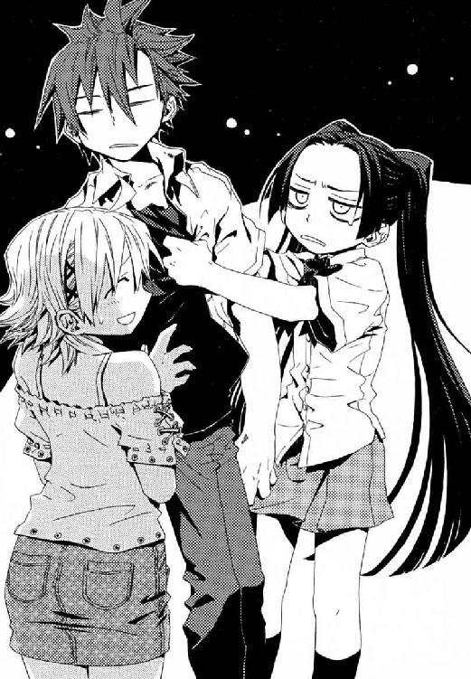
「武原さんも、こんなに────」
やさしいきずなは、ことばを詰まらせてしまった。彼女が、二の腕で切断された仁の右手を凝視していた。心配してくれている彼女を勇気づけたくて、仁は、精いっぱいに笑った。
「いいんだ」
それできずなを支えていた線も切れた。きずなが、仁のまだ血がかわいていない胸にしがみついた。
「いいわけないじゃないですか！ こんなになって、それでもいいなんて。わたしがつかまったせいで......」
「ごめんな。もっと早く来れなくて、もっと早く助けてやれたらよかったのにな」
今ここにあるものだけが彼らの現実で、過去を振り返ってもしかたないとわかっていた。それでも薄闇の中、ふたりしてお互いの体温になぐさめられた。再会を、涙を流してよろこんでくれたから、ここに来て良かったのだと思った。
「かえせー、かえせー」
瑞希は、きずなに止められるまで、仁の体を揺すり続けていた。彼ひとりでは殺伐としていた地下の闇が、こんなにもあたたかかった。きずなとメイゼルが、どんなに彼を救ってくれていたかと、感謝と執着が胸をしばった。それは息詰まる甘い痛みで、そこにおぼれていたくて、仁はままならない現実を呪いたくなる。
そんな仁たちを、クレメンスがもう気力も折れたような、うつろな目で監視していた。
「我々のこの街は、百人以上の魔法使いに包囲されている。ここから逃げる道はぜんぶどこかに見張りがいる」
「俺は何分寝てた」
クレメンスは壁にもたれかかっていた。仁は、死を前にした刻印魔導師が、幻想に視線をさまよわせるのを何度も見た。判断や決断をすること自体がつらいのか、クレメンスも即答だった。
「君がとった睡眠は、約三十分だ」
「そうか。なら、あと三十分もすれば状況が動きだすな」
「この期におよんでも、まだ君は、我々に情報をわたす気はないのか」
クレメンスは命のやりとりに一番向かない、善人だった。誠意を誠意で返してもらえると思っている、善人だ。
このちいさな部屋の外には地下都市があって、そこを殺す気満々の魔導師たちが包囲している。もはや仁ひとりでここを殲滅することは、良心以前の問題として不可能だった。核爆弾の奪取のほうは、望みがあった。「地下都市にいる魔導師がゼロになればいい」なら、都市住民を全員脱出させる手もあると思ったのだ。意図的な取り違えだ。それでも核の現物さえ押さえれば、《協会》と交渉できるはずだと信じた。
仁は、立ちあがり、柔軟運動をはじめた。もう、戦いはじめる頃合いだった。
「ここを包囲している連中は、包囲完了から三十分待ったんだな。それなら包囲の編制は《協会》勢力と魔導師公館の刻印魔導師だ。ここを落としたがってる勢力で、仕掛けに時間をかけるのは《協会》だけだ。刻印魔導師の残存は三百人とすこしだから、敵戦力の最大で三百人までは増える。そのうち神聖騎士団もここに着く。聖騎士はまず《協会》魔導師を追い払おうとするはずだから、遅くてもそれを〝きっかけ〟に状況は一気に動く」
クレメンスが、戦況を分析しだした仁に驚いて口を半開きにしていた。残りふたりの見張りも、死体が動いたさまでも目撃したように、ことばを失っていた。
「突入後にどんな状況になるか、予測を聞きたいか？ 刻印魔導師がこれだけの大人数なら、指揮をしてる専任係官は魔法使いだ。残存では、《茨姫》しかいない。だが《茨姫》はもともと《地獄》巡礼者で、集団戦の専門家じゃない。刻印魔導師は自由に行動する。要するに、街になだれこんできた刻印魔導師は、手当たり次第に殺して燃やすだけだ」
仁にしてやれるのは、地下住人が考えているだろう最悪より、現実が絶望的だと教えてやることだ。
「《協会》は、その戦況を安全だと思えるくらい離れたところから見る。それで、戦況が悪くなった地域に、刻印魔導師を巻きこんで大規模破壊魔術を撃ちこむ。相当地下深いんだろ？ 地上の東京の市民からの魔法消去は、よほど大きな魔術でないと影響がないはずだ。着弾地点から半径十メートルの円内は、強力な防御魔術がない限り全滅する」
武原仁は、一昨日の夜、狩猟魔導師中隊と戦った。クレメンスたち《銃を持った魔法使い》は、ひとつの〝専門家〟に磨きあげるには現状まだ遠い戦力だ。軍隊や兵科は、簡単につくりあげられるものではない。だが武原仁は、王子護に四年間の訓練を受け、五年以上の実戦を生き残った〝専門家〟なのだ。
「まとめると、こうだ。これから刻印魔導師が百人ほど街になだれこんできて、女も子どもも手当たり次第に攻撃してくる。おまえらが戦力を集めてそれを防ごうとしても、《協会》の高位魔導師が遠巻きの大魔術で一気に焼きはらってくる。
────おまえらならどう生き残る？」
クレメンスの反応は、仁が予想していたうち、よいほうから三番目だった。
「どうしたらいいんだ？」
重すぎる決断を、クレメンスは無意識のうちに放棄した。仁は、犯罪魔導師と戦うときのような、わかりやすい展開をどこかで望んでいた。だが現実はこうだった。仁は、自分よりちいさな子どもを殺して救われることを、メイゼルがよろこばないと知っていた。
だから、完全にはほど遠くとも、胸を張ってちいさな魔女へ言ってやれる答えを選んだ。
「核爆弾のありかを本当に知らないなら、全員ここから脱出しろ。それになら、力を貸してやる」
ぱっと、きずなが目を大きくひらき、頰を上気させた。
「武原さん！」
「............この......偽善...者」
だが、そう吐き捨てた瑞希ですら、地下都市の住民を斃してまで脱出はしなかった。
クレメンスたちは、まだ仁へと銃を向け続けていた。だが、すくなくとも地下都市の状況は、仁を射殺してもなにひとつ改善しない。改善しないのは、仁も同じだった。せめて銃器は、この地下都市でも調達できるだろうかと思った。利き手である右手を失ったことが、仁にとってあまりにも心細かった。彼の右手は、おもちゃのように床の隅に転がっていた。あれは、まだ壊死していないだろうかと思った。あれをもう一度つけられる魔法使いは、この地下都市にいるだろうかと、焦ってしかたなかった。
「核爆弾と、この地下都市と、おまえたちの命を、みっつにわけて考えろ。敵にとっては、おまえらの命が一番優先順位が低い。要するに、一番どうでもいいんだ」
「言いたいように言うものだな」
ひとりの魔法使いが、ドアをとおらず、直接部屋の中にあらわれた。黒のロングコートに身を包んだ、青白い顔の魔法使いだ。死体のように気配の薄いその男を前にして、きずなが身をこわばらせた。一昨日のゲームセンターで撃ち合った拳銃使いベルナー・ヒルタが、魔法で部屋の中に位置移動してきたのだ。
「だまされるな。こいつは敵だぞ」
「ベルナーと言ったな。王子護と連絡がついているのか？ 地上で狙撃手を運んだ移送役はおまえだな。魔法的転移で、狩猟魔導師中隊の連絡場所には行ったか？ 王子護はいたか」
ベルナーには、実力に見合うだけの誇りがあった。
「なめるな。子どもを撃たれておいて、オレたちをお遊び呼ばわりか」
「生き残りたいなら、俺に戦わせろ。俺は、このちいさな部屋に居続けるためにここへ来たわけじゃない」
ベルナーが、ごく自然にポケットに左手を突っこんだ。ポケットに隠蔽しやすい小型拳銃がはいっていて、仁を射殺するつもりなのだ。この黒衣の男は、本当に撃つのだとわかっていた。
「もうやめてくれ。たくさんだ！」
善人のクレメンスが顔を覆い、悲鳴をあげた。そして、仁ときずなとを見比べた。
「君が戦いたいのは、彼女を、助けるためか」
クレメンスの目が、そう言ってくれと懇願していた。振り回された彼らにも、理由が男女関係なら納得できるからだ。仁は、そう察して、正確とは言い切れない答えを返した。
「そうだ」
仁は、すぐそばに、体温が急上昇したようなおののきを感じた。
ぼろぼろと、涙を止められなくなったきずなが、うつむいて目元を手で押さえていたのだ。
ことばに一片の噓もなければ、彼女と泣けた。だが仁は、すべての事情は告げられなかった。仁が魔導師公館の討伐対象になっていると確定したら、専任係官である神和瑞希が敵に回るからだ。ごめんとあやまることもきずなに失礼なようで、ただ彼女の手をにぎった。
「きずなちゃん。かならず、生きて帰ろう。そうしたら、あとから、かならず全部話すから。そのとき、俺のことを怒ってくれていいから」
クレメンスが、胸の底から余分なものを吐き出すような、深い息をついた。
「ベルナー、私の家から赤のプラスチックのケースを持ってきてくれ」
クレメンスの頼みに、仁に敵意をむき出しにしていたベルナーが従った。あらわれたとき同様、一瞬で消えた男の口元に、酷薄な嘲笑が浮かんでいた。
そして、狩猟魔導師中隊の軍医が、きずなと瑞希を追い出した。
「君たちは、外に出てくれ。エレオノールさんがいたら、彼女だけここへよこしてくれないか」
魔法医は、仁の土気色になった右手を拾ってきた。そして、ズボンのポケットに入れていた金属製のフラスコのふたを片手でひねって開けた。その口からアルコール度数の高そうな酒をふりかけて、仁の右手の切断面を洗った。
黒衣のベルナーは、三十秒とたたずに戻ってきた。その自在な魔法的転移は、メイゼルと同じ円環大系の魔法だった。そしてクレメンスが、ベルナーからまっ赤な樹脂製の容器を受け取った。
ビール缶ほどの容器を、クレメンスが、不吉なものをあつかうように指でつまんでいた。
「魔導師公館は、《協会》にも関わっているから、《死の翼》のことは知っているね。《協会》が神聖騎士団の聖騎士をとらえたとき、逃亡を防ぐために背中へ植え付けるものだ。《死の翼》は一定時間経つか魔法消去にさらされるかするとガン細胞に変化し、犠牲者は二週間以内に苦しみのうちに死を迎えることになる」
仁は、《死の翼》で病死した聖騎士の遺体を見たことがある。清廉さと勇敢さで、仁たち《公館》の人間にも一目置かれた騎士は、焼かれた蚯蚓のように体を歪めてこときれていた。
「《死の翼》は本来、完全大系の魔法でつくられた医療用魔術だった。元の名前は、《原初の泥》と言って、魔法構造体で周辺の細胞の複製をつくる魔術なのだ。実用化すれば、塗るだけでどんな外傷もなおす万能の治療薬となるはずだった。だが、できあがったのは、傷はふさぐがごく短期間でガン細胞化して患者を殺してしまう失敗作だった」
医師の本能か、クレメンスは仁の体にほどこそうとしている治療のことを、話さずにいられない様子だった。仁は、「いいからやれ」と悲鳴をあげたくなるのをこらえた。
「このビーカーの中身は、私の祖母が、故郷の世界でそれをよみがえらせて完全なものにしようとした不完全な《原初の泥》だ。祖母は、数え切れないほどの患者で人体実験をした罪で、刻印魔導師としてこの世界に放逐されたのだ」
彼自身の祖母が、人を殺す医師だったことを、クレメンスは嚙みしめるように話した。彼の胸中を、仁にははかりきれない。ただ、そこまで吐露して、ようやくクレメンスは儀式が終わったようにビーカーのふたを開けた。
「これから、彼の右手を接合する。施術は切断面に《原初の泥》を塗布して彼の右腕の傷口に固定すれば完了する。祖母のノートを見る限り、切断した四肢の完全な接合にかかる時間は十五分程度だ。ただし、切断された右手の血管内には、血栓ができている可能性が高い」
仁は、心を決めたつもりで石材の床に正座した。そうすれば、逃げようがなくなるからだ。
「血栓への対応は、聖騎士の応急治療術の基本のひとつです。血中の酵素を不活性化して凝固作用を一時的におさえることになりますが、かまいませんね」
それはエレオノールの声だった。彼女がすぐそばまでやってきていたことに、仁はまったく気づかなかった。彼自身の動揺を見せつけられ、仁は落ち着けと頭の中でくり返すことで恐怖を追い出そうとした。彼の意思に反して、冷たい脂汗が全身にびっしりと浮いていた。
エレオノールが、さっき仁の胸深くに刺した神音楽器の台尻を引っ張った。人工の血を創った魔法楽器の内側から、今度は注射針のついたちいさな音叉があらわれた。
クレメンスは善人だ。だから、《泥》を塗って右手を仁の腕にひっつける、その単純な作業をためらった。
「完全大系の魔法治療は精密ではないが、これの効力は信用していい。もしも我々を助けてくれたら、ガン化した部分を私がとりのぞこう」
「俺を殺すかもしれないことが、こわいか？」
この右手は、仁をもう一度戦場に立たせ、そして彼の命を奪う。仁は、恐怖で肺が暴れて息が整わずあえいだ。今、クレメンスへと声をかけているのはただの偽善だった。だが、偽善から実になるものを引き出すため命をかけるのが、彼のこの三ヶ月の日常だったのだ。
「俺たちにつながりはあるんだよ。こんなかたちでも、これはおまえらとの目に見えるつながりだ。会ったばかりの俺を信じられなきゃ、《死の翼》を信じろ」
エレオノールが、耐えがたい沈痛に目を閉じた。一度その背に《死の翼》を背負ったことがある歌姫は、この泥がどれほど危険か知っている。死神ベルナーは、仁を冷笑していた。
「......これは《死の翼》ではなく《原初の泥》だ。祖母は、......ガン化した《泥》をとりのぞく方法をつくりだした。だから、君が我々を守ったら............」
クレメンスの声は揺れていた。魔法医は噓が下手だった。《死の翼》と同様のものなら、《原初の泥》も健康な組織に食いこんだあげくにガン化するのだ。右腕の至る所に生じたガン細胞を取り除ける技量があれば、腕の接合を《原初の泥》に頼る必要はない。クレメンスにそんな力はない。善人の土壇場の噓を、仁は腹の底にのみこんだ。
「もし地上に生還できても、俺は、この手をまた切除しなきゃ生きのびられないかもしれない。片腕じゃ、命がけの戦いを続けるのなんて無理だ。これが最後になるかもしれない。でもな、今ここを勝ち残らなきゃ、その先はないんだ。だから迷うな。やれ！ このとき救えなきゃ、次はないんだよ」
「......ここは、地獄だ」
クレメンスが、震える手で仁の右腕の肘をつかんだ。仁は、まぶたを閉じた。目を開けていたら、眼球が土壇場でおびえて情けなく揺れるのが丸見えだからだ。
「勝てば、地獄じゃなくなる。本当の地獄は負けたときだ。そうだろう？」
接合は、魔法のように簡単だった。覚悟を決めたはずだった。それでも仁は、魔法構造体が生身の体に食いこんでゆく違和感に悲鳴をあげそうになって、うめいた。急速に神経が結ばれた感覚は、猛烈なかゆみだった。そして、引っこ抜いて右手を捨てたいほどの激痛に変わった。そして、このすべてが、魔法消去の発動と同時に無数のガン細胞にかわるという事実に、あらためて〝恐怖〟した。それが必要だとわかっているのに、切断面から肘へ向けてはいあがってくることを止めたくて、仁は右腕をつかんだ。
決断の結果はいつも、取り返しがつかない。仁の右手はしっかりと傷口に接合されていた。右手が、開いた。思うままに握れた。指が動いた。そんな当たり前のことに、右手に爆弾をかかえこんだというのに感謝がわきあがった。
それでも武原仁は、今、戦えるのだ。
仁は、《死の翼》を右腕に受け入れたことで、ようやく部屋から出ることを許された。
扉の向こうの地下都市は、仁の想像とはずいぶんちがった。街は貨物コンテナのような箱形で同じ大きさの直方体が何百と並ぶ、倉庫のようだった。彼がいたのは部屋ではなく、一階建てのシンプルな家だったのだ。この無機質な住宅が、地底の街の構成単位だった。
街は家の中のオレンジ色とは対照的な、月夜のようにやわらかな薄青の光に照らされていた。街路の道幅は約三メートルに統一されている。もとは地下建設の職人を一時的に住まわせる場所だっただけに、機能最優先の碁盤の目構造をしていた。仁は視線を走らせた。すこし歩いただけで全体構造を想像できるほど、街の造りは規則正しかった。
街を構成する基本単位は、幅三・五メートル、奥行き五メートルほどの家だ。これが隙間なく六軒並ぶと、かならず街を横に貫く道路に交差する。交差した十字路に立つと、六軒並びの家の列自体も背中合わせに二列あったのだとわかった。六軒二列、計十二軒の家が、この地下都市で島のような大きな一区画を構成している。縦に約二十一メートル幅に約十メートルのこの街区が、縦には十個、幅には十六個並んでいるように見えた。だから都市自体の広さは、道路の幅を足せば縦二百三十メートル、幅二百十メートル程度だ。地下施設としては相当に大きかった。
「ここは『五─九─イ─五』......になるのか」
仁は、十字路でふと立ち止まった。金属製の古い標識プレートが、家でできた街区の壁につけられていたのだ。仁がとらえられていた家の街区は、歩いている道側に『五─九─イ』と表示されていた。だから、さっきまでいた家の住所は『五─九─イ─五』だ。
街灯がわりの魔法のあかりは、十メートルおきにしか設置されていない。色は青で光源自体も弱いから、街の中は、月光にしてはあかるいなとあやしむ程度の薄暗さでしかなかった。灰色の街を青空の色に近づけたかったかと思うほど、地下都市のあかりは青ばかりだった。真夏の地上とはちがって、風はなくともただ純粋に空気が冷たかった。
「立ち止まるな。さっさと歩け」
仁の背後で、地下都市の男が銃を向けていた。
「俺が戦闘に参加するなら、街の様子くらい見ないとダメだろ」
きずなは、仁の右手がつながったことをよろこんでくれた。彼女が、彼の抱えた病巣には気づかなかったことに、仁はほっとしていた。きずなは、六十年ぶりに確認された遺失魔術、再演大系の魔導師だ。きずなには仁の変調を発見できる魔法知識がなかったが、再演魔術はおそろしく強力な魔法なのだ。
「ごめんな。きずなちゃんは、ちょっと前まで自分が魔法使いだってことも知らなかったのに、ずいぶんいろんなことに巻きこんだな」
「いいんですよ。......いや、ほんとはちょっとカンベンしてほしいんですけど、なんか、わたしのほうが武原さんを巻きこんでるみたいな感じもありますし。......いえ、えっと......おたがいさまってことでっ」
彼女の、将来は度胸がすわった母親になりそうなマイペースぶりに、ほっとした。
「わたしも、西側の出口の先にある廃棄区画のほうにずっといて、街は来たばっかりなんですけど、ちょっとだけ案内できますよ」
仁たちが歩いているのが、その西側の出口に近い、『五─五』番地付近だった。交差点から西側の通路をうかがうと、突き当たりに街の出口らしい装飾された門があった。その先に広がっていたのは、大規模な戦闘の痕跡を残す崩れた市街だった。
彼にも、そこにとらえられていた間の彼女の不安が、身に染みた。だから、まだ高校生の彼女の手を強く握った。
きずなは、久しぶりに会えた反動か、表情が見えすぎない薄暗さのせいか十崎家にいたときより積極的だった。胸のゆたかなふくらみのぶんだけ彼女との間の空気が圧迫されているようで、こそばゆかった。
「あのですね。......上、見てください」
とっておきの宝物を見せるように、きずなが無邪気に指し示した。
空中に、無数の淡い光があった。白金色の《泡》が、地底の星のように地下都市の上を舞っていた。都市の存在する地下空洞の天井はドーム状で、中心部では屋根が高く、端へ行くほど低くなる。高さ十メートルほどの都市辺縁部から、一番高い中心区画では五十メートルほどまで一気に空間が広がっていた。その広大な天井付近に、星空のように光がまたたいていたのだ。仁の心臓は、鼓動をおだやかに打つことができなくなった。きずなは、この光る《泡》の正体が、武原舞花の破片だと知らない。そして、妹の魔法《蛇の女王》として分解された断片──《泡》は核爆弾に反応する。
「すごいですよね。地下のこんな深くに、なんか神秘的ですよね」
きずなが、無邪気にその光を目で追っていた。仁には、押し寄せる切なさをどうあつかっていいかわからなかった。
「わぁ」
仁のすぐそばで歓声があがった。地下都市の子どもが、母親に手を引かれて仁の脇を通り過ぎていった。母親が、血だらけの仁を見てぎょっとした表情のまま、我が子をこわがらせないようぎこちなく返事をした。
「そうだね。今日は、《星》があんなにたくさんきてるね。きれいだね」
包囲された地下都市の住民たちは、攻撃にそなえて中心部に集まっていた。街区の番地だと『八─五』『八─六』『九─五』『九─六』にあたる四区画には建物がなく、広場になっている。奥行き五十メートル、幅三十メートルの空間は、地上ならちょっとした駐車場程度だ。だが、その開放感が、地下では破格のものに感じた。男性は攻撃にそなえて外縁に布陣しているのか、女性と子どもばかりだった。暗さのせいで、人の顔は造作より皮膚の脂のてかりばかりが目立つ。まるで祭りの夜のように、奇妙な熱気が通りを満たしていた。
仁のそばに、すらりと細い体の黒色人種の少年がいた。メイゼルと同い年くらいで、緑色の目がきらきらした中性的な少年だ。
「オレはピエトロ。あんた、すげーよな。外は敵だらけなのに、きずなねーちゃんのこと、助けに来たんだろ」
ピエトロ少年にからかわれて、きずなは目に見えて照れだした。
「あ、武原さん、おなかすいてますよね。お肉、焼いてるから、みんなと食べませんか？」
「肉なんか、オレたち、はじめて食ったよ。ここ、動物なんていねーし。地上って、食い物うまいんだろ？ ああ、姉ちゃんがまたカネかせいできたら、今度は肉買ってもらおう」
うまそうな匂いが、行く手の広場からただよっていた。神和瑞希が《魔獣使い》の魔法で出したのだろう牛を、そこで解体していたのだ。切り分けられた巨大な肉を、地下都市のお母さんたちが薄くスライスして鉄板にのせてゆく。
「えっと、あの、......ピエトロくんのお姉さんのアナスタシアさんが、街のかせぎ頭なんだそうです。だから、母親のステッラさんはこの街で一番お金持ちで、ここの女の人たちの代表みたいなことをしてるそうです」
ピエトロに遠慮するように、きずながことばをにごした。子どもたちが鉄板に群がって、次々に手でかっさらってつまみ食いしていた。さっき仁をこわがって泣いたナーディアたちも、熱い肉をふぅふぅと吹いて冷ましていた。
「みんな、ちゃんと皿にのせて食えよ！ そんなんじゃ、地上に行ったらハジかくぞ」
ピエトロ少年が、仲間の子どもたちのもとへ駆け寄っていく。仁たちも、そのほほえましい光景を、ゆっくり歩いて追いかける。
近づくと、バーベキュー会場になっている広場が、家を撤去して無理につくったものだとわかってきた。このあたりの家は灰色の石材まるだしではなく、鮮やかな赤や黄色、緑色や青に塗られ、中には絵を描いた家もあった。
「このへんが街の一番まんなかです。絵をかいてある家って、ちょっとびっくりしますよね。けっこう上手なのもありますから、あとで見に行きましょうか」
色のない殺風景な地下の風景に、住民たちが彩りをつけくわえたのだ。仁は、核をのせた幽霊地下鉄に逃げられたとき、地下トンネルで一瞬見た、刻印魔導師たちが工事中に壁面に描いた絵を思い出した。よく生きようという工夫のあとがまぶしくて、仁は足を止めた。
「ここじゃ花を育てられないだろうに、みんな図鑑かなんかで見たのかな。あそこの壁のタンポポ、ひまわりと同じ大きさだな。縮尺がむちゃくちゃだ」
きずなは、たった二日ほどでなじんだのか、すっかり地下都市びいきだ。
「あ、でも去年くらいから、ちょっとだけ花を育てはじめたそうですよ。この街、百メートル以上も深いところの湖からくみあげてて、お水はたくさんあるみたいです」
たれ目気味の少女が、自分が誘拐されたことを思い出したか、ばつが悪そうに薄着の二の腕をさすった。彼女がそばにいると、地底の薄闇までやさしいもののように思えた。きずなに、また、いつの間にか快適な空気をつくってもらっていた。
「やっぱり、寒いですね。火のあるほうへ行きましょうか」
────ズシンとひとつ、地鳴りのように地面が揺れた。
広場の群衆が、日常にない響きに顔を見合わせた。ちいさな揺れは雪崩のような不吉な音をたてて、いつまでも止まなかった。男たちが人波をかきわけて、「建物に隠れろ」と大声をあげた。同時に、永遠の夜を裂いて飛んだ火の玉が、街区の屋根のひとつに当たって爆発した。彼らを包囲した《協会》と《公館》の魔導師群による、攻撃がついにはじまったのだ。
地底の人々がつくりあげた生活は、これから壊れる。
†
地下都市の西側、廃棄区画に集められた刻印魔導師たちが、肉の洪水のように街への門へ押し寄せてゆく。獣くさい脂と水気のにおいが、土ぼこりに乗ってただよっていた。
《協会》の調整官ベルニッチは、薄闇の底で、崩壊のときを見守っていた。かつて《協会》が旧時代の罪人たちに住処として保証した職人街跡地には、粗末な家が並んでいた。不便で、暗く、せまい街をながめながら、ベルニッチは角張った顎を指でなでた。
「人の生き方とはとても思えんな」
ベルニッチは、この《地獄》との交渉の最前線に立つ調整官という要職の魔導師だ。だから、刻印魔導師たちによる一斉攻撃にはくわわらなかった。一般的に、《協会》の高位魔導師は、その知と力を惜しんでめったに前線に立たない。
白い髪の、重甲冑と優美なドレスが合わさった騎士装束の女性が、ベルニッチの背後にあらわれた。
彼女は、人間が加齢する因果を魔法で止めた高位魔導師だ。《逆天》のユリア・シュバール。因果大系の呪われた魔法騎士団、応報騎士団の第二位である。
「調整官どの。《九位》様の真意は、やはり我々のほうでしょうな」
ベルニッチもまた豪奢な指輪がはまった指を組む。彼のところに、アラクネと名乗る魔女が伝令に現れたのは深夜だった。全身に装身具をじゃらじゃらとつけた魔女が、《九位》の意思を伝えた。壮年の彼の顔には、苦悩が彫りこまれていた。
「《三十六宮》の命とあらば、受けぬわけにはいかず。さて......、こちらも多少の意趣返しはさせてもらったが、どう回ることか」
《協会》の最高権力たる三十六世界の最高位魔導師《三十六宮》に、魔法世界で逆らえる者はない。《九位》は、その一角たる円環大系の最高位魔導師だ。地下都市の殲滅と核爆弾の奪取を命じられた以上、ベルニッチとて従うよりない。
ユリアは、感情を殺して報告した。
「《沈黙》が近くにいます。狙撃にそなえて前線からは離れたほうがよいかと」
「アラクネとかいう下賤の手引きか。ワイズマンとの取引といい、《三十六宮》ともあろうおかたが、下々とのおつきあいが広いことだ」
ベルニッチたちと別系統の指令で地下都市に到達している《沈黙》武原仁は、戦場をどう見ているだろうと、彼は考えた。モノ同然の悪鬼の心など、奇蹟に愛されたベルニッチにわかるはずもなかった。
「地底湖からくみあげた水が、都市を沈めはじめる頃合です」
彼女のことばどおり、じくりと眼前の都市に水があふれはじめていた。都市直下の地底湖には、街をまるごと水没させてあまりあるほどの水が存在する。
地下都市の家々の上を爆発の圧力が洗った。罪人である刻印魔導師たちによる、魔術の炸裂音だ。それに応じた破裂音は、《悪鬼》たちが使う銃器の発射音である。この《地獄》に根付いた子孫たちは、衰えた魔法技術を悪鬼の技術でおぎなっていた。突入した刻印魔導師たちと、古い刻印魔導師の子孫たちは、出会うなり殺しあいをはじめていた。
ベルニッチの中にも、戦争が人々をとらえるあの空恐ろしい高揚がしみこみつつあった。彼は、その狂騒に引きずられることを嫌悪した。こんな熱気にふりまわされることを、《地獄》の《悪鬼》たちは「魔法のようだ」という。だが、高位魔導師である彼に言わせれば、これは克服できない「人間という病」だ。
だから彼は、それを制御するため鎮静剤の葉巻をくわえて火をつけた。
「愚かだな、悪鬼どもは。こんなものが魔法だとしたら、この魔法をかけた魔法使いはいったい誰だというのだ」
世界はあまりに広く、争いの根はあまりに深い。
「水だ！ 隊長、《協会》のやつら、街ごと核を水に沈めるつもりだぞ」
《協会》と一万年の戦争を戦い続ける宿敵、神音大系の神聖騎士団もまた決戦の地に到達していた。
彼ら機械化聖騎士の第三試験小隊こそ、ワイズマンに核爆弾を奪われた当事者たちだった。だから彼らは焦っていた。神聖騎士団の正義は、この魔法使いたちに《地獄》と呼ばれる世界と住民たちを救うことだ。その彼らの核爆弾がテロに使われるなど、あってはならないことだった。
良心と責任感に追い詰められた仲間を、背の高い黒人騎士、隊長ジェイク・フェニックスが勇気づけた。
「クールに行こうぜ。焦るこたぁない、ドクを待て」
彼らは今、地下都市の存在する大地下空洞の、東側入り口の手前に布陣している。騎士たちは二日におよぶ根気強い探索の末、都市からのびるとおぼしき地下鉄線路を発見したのだ。
地下都市では、刻印魔導師たちの突入で、狩猟魔導師中隊とのはげしい衝突が起こっている。だが、神聖騎士団にとってこの出遅れは致命的ではない。神音大系では、移動魔術はありふれたものだからだ。その位置の神音を聞き取れさえすれば、神音魔導師はどこからでも〝そこ〟へ瞬間移動できる。先行した部隊が重要な位置の神音を記録して後方の味方へと伝えておくのは、神聖騎士団の基本戦術なのだ。
「隊長。《鋼鉄の巣箱》の師団長につながった。最高の増援だ」
眼鏡をかけた知的な風貌の騎士が、通路の奥から駆けてきた。戻ってきた騎士、ドクはひとりきりだ。〝増援〟の姿などない。その騎士、ドクが両手で持ってきた重いトランクケースを通路に置く。騎士たちが、おぉと、どよめいた。
トランクケースは、鎖を巻いて厳重に封印されていた。そして一枚のプレートが留められていた。
──《Holy Avenger No.3011》
ジェイクが、愛嬌のある大きな目をむいて振り向いた。
「リュリュ、封印解除だ！ 本ッ当に最高にクールな増援だぜ」
「のんびりしすぎです！ 隊長、早くしないと戦場が水中環境になってしまいます。鎧をつけたわたしたちは、水かさが増せば不利ですよ」
白金色のやわらかそうな髪を弾ませ、少女騎士が、追い詰められた表情のままケースに走り寄った。副隊長であるリュリュ・メルルは、十五歳にして上級聖騎士の叙勲を受けたエリートである。だからこそ、まじめすぎて余裕がない。
「みなさん、飛琴でケースを囲みます。場所をあけて！ はやく!!」
頰にあどけなさを残す猫っ毛の少女が、騎士甲冑の腰から六本の金属棒を抜いた。彼女は慣れた手つきで指で弾き、楽器を鳴らす。鉄琴の音色に似た雑味のない響きが、せまい地下通路に反響した。神音大系は、魔法使いが感覚した音を索引にして、世界から奇蹟を引き出す。リュリュたちにとって、音は、神と奇蹟につながる魔法そのものなのだ。
「三千十一人目の永遠の騎士──《一眼怒拳》デューガ。汝と契約せし、機械化聖騎士師団第三試験小隊が求める。鎖の誓約につながり、ともに神意をまっとうせんことを！」
リュリュが宣誓のことばを発し、鉄棒型の神音楽器、飛琴を宙へ投げる。見えないレールの上を走るように楽器が飛翔して、トランクを取り囲んだ。空中に浮かぶ六本の鉄琴の内側で音色が複雑に反響し、神音が鎖を切断してケースを開封した。
隊長ジェイクが、開いたケースの中に入っていた、剣に似た形状の楽器を手に取った。それは、複雑な歯車をそなえたオルゴールだった。神音魔術は音をきわめて正確に発しなければ発動しない。だから神音魔導師たちは、精密な魔法発動のため楽器を作ってきた。神音を複雑に組み合わせた神音楽曲を自動演奏する、《聖霊騎士》の召還楽器はその極致だ。
ジェイクは、ハンドルを規定の回数巻くと、汗の粒を黒い肌に浮かばせ、神音楽器の音に集中する。音を外さず聞き取れているようにと、この世界で買い求めた銀の鎖を胸元から引き出して握った。ジェイクはこの世界の音楽や文化を愛していた。ここが彼らの救うべきものでなかったとしても、この世界が好きだった。だから守らせてくださいと、祈った。
三十秒の神音楽曲の演奏で、魔法は発動した。
《聖霊騎士》の体は、神音によって構成された魔法構造体である。その身体は、高圧の大気で構成される。結果を押しつけることで原因を逆算する高等魔術──概念魔術の作用で、聖霊騎士はどん欲なまでに大量の大気を飲みこんでゆく。風が渦を巻くように〝その一点〟へと集中してゆく。
戦場の喧噪が、たしかに一瞬、止んだ。風がなぎ、嵐の王者は降臨した。
「吾は《一眼怒拳》デューガ。誓約の鎖でつながれし友よ、吾に求めよ！」
ジェイクの眼前に、鎧を身につけない半裸の騎士が作りだされたのだ。身長二メートル近い筋骨隆々たる全身に、男は入れ墨をほどこしていた。その見事な肉体には何百といういくさ傷が刻まれ、顔を縦に裂いた刀傷が左目をつぶしていた。《一眼怒拳》デューガは、三千年以上前、拳ひとつで魔法騎士団ひとつを壊滅させた戦場の鬼神である。
いつもは軽い隊長ジェイクが、正念場にあって《聖霊騎士》におとらぬほど堂々としていた。
「俺たちの聖務は、そこの地下都市から、奪われた爆弾を取り戻すことだ。この世界を一緒に救うぞ」
超常の騎士が、両の拳を合わせて快諾した。
〈吾は、いかなるときも友の助けとなることを望み、永遠の騎士に叙せられたり！ 現世の友よ、吾が力を貸そうぞ!!〉
眼前の地下都市は、彼らから核爆弾を奪った狩猟魔導師中隊の根拠地だ。そして《協会》の高位魔導師たちに水没させられつつあり、刻印魔導師によって攻めたてられている戦場だった。これから、彼ら機械化聖騎士隊と《聖霊騎士》は、わずか十三名でそこへ突入する。
ジェイクが剣を抜いた。水は、騎士隊の足鎧のかかとをひたすほど水位をあげていた。
「我ら、愚かな人なれば、神の心を知らず。ただ敬虔に祈りを積み、苦悩に倒れ、至高の意志を求むる旅人たり」
彼らは、いつの時代も節目には、神聖騎士団の発足から歌い継がれる旅立ちの聖句を唱える。リュリュも、古いつくりの名剣をかかげた。
「祈りを手わたし、あやまちを受けつぎ、我らついに神意をかいま見たり」
《聖霊騎士》すらもが、この祈りの鎖に参加した。
〈なれば人の身を捧げるに足る。そを守る、聖騎士の誓願を立つる〉
都市で炸裂した魔法で熱されたなまぬるい風が、街から騎士隊の顔にも吹きつけた。
「神意、生命に宿れり」
隊長ジェイクは心から、この神なき世界を愛す。副隊長であるリュリュがそれに応じる。
「神意、正義を導けり」
そして全員が、二度と生きて会えぬかもしれないからこそ、心をひとつに唱和した。
「「正義に一命、捧げし一刀。すなわち我らなれば、神意、我らが行く手にあり」」
機械化聖騎士隊の装備は、スピーカーや電子楽器といった新式装備だ。伝統的な聖騎士が使う神音楽器とちがって、ジェイクたちは機械装備のスイッチを入れることで魔法を即時発動できる。
ジェイクたちの足鎧がふわりと、リュリュ以外の騎士隊を宙に浮かせた。機械化聖騎士隊の切り札のひとつ、高機動魔術《閃輪》は、彼ら自身の体重を中和できるほど強力な気流を噴きあげさせる魔法の個人用エアカーだ。ジェイクを先頭に、床を滑る騎士隊が尻矢形の編隊をつくった。
「さあ、聖務をやりとげて、チームみんなで野球を見に行くぞ！」
「「Yeah!」」
轟音の中、床から三十センチ浮かんだジェイクが、少女騎士へと叫んだ。
「オレたちが都市に突っこんで核爆弾を捜す！ リュリュと《一眼怒拳》デューガは、《協会》の魔導師にしかけて水を止めてくれ！」
核を追尾する《蛍》の密度がもっとも濃いのは、地下都市の中枢部だ。《蛍》は核を追尾する。核爆弾はそこにある可能性が高かった。そして、リュリュが姉のように尊敬したかつての上級聖騎士、エレオノール・ナガンもあの地下都市にいるかもしれなかった。
猛烈な風と水煙を噴きあげて、人間の走行速度をはるかに超える高速で騎士隊が突撃する。伝統的な騎士甲冑のリュリュが、少女の脚力で速度に追いつけるはずがない。
「幸運を！」
リュリュは、水滴を跳ねあげ闇をゆく白い航跡を見送る。彼女の新しい仲間たちは、編隊を組んで戦場の中心へと突入していった。
†
刻印魔導師たちによる攻撃が開始したと同時に、地下都市に水が押し寄せはじめた。都市住民は、大混乱におちいった。一時間前はとらわれの身だった武原仁が戦闘に参加できたのは、彼らがそれほどの苦境に追いこまれたためだ。
闇の底の水が透明か濁っているのかも、仁にはほとんどわからなかった。ただ、水はまたたく間におとなの膝の高さまであがり、すべての家屋が床上浸水した。悪いことに、地底の水は、冬の海のような摂氏十度を割りこむ冷たさだった。なにも知らなかった子どもや女性たちも、事態が致命的であることだけは理解しはじめていた。
荷物はすべて箱形の家のたいらな屋根にあげられ、人々も寒さから逃れるためそこへのぼっていた。包囲されている住民たちにとって、高い場所はそこだけだった。中枢区画の広場にいた人々は、次々に近くの家の屋根に退避した。
仁は、ライフルを一丁借りて、水浸しの家屋のひとつに身を潜めていた。水温が低すぎて、水につかった両足がひび割れるように痛かった。体の震えからすこしでも意識をそらそうと、仁は歯の根が合わない口の中で考えたことを片っ端からつぶやいていた。
「住民のうち銃を持って戦えるおとなの男が約七十人、守る対象はおとなの女性が百二十人、子どもと老人も百人近く──。頭数はいても、戦況は最悪か」
この地下都市には、人口が少人数でありながら多数の魔法大系が混在する。その魔法大系の豊かさを六十年近くも保てたのは、社会自体が女性中心なためだ。魔法使いの子どもはたいてい母親の大系を受け継ぐ。だから、この街では女性の社会的地位が高い。家に秘伝した強力な魔法を身につけているのも、女性魔導師のほうだ。だが、戦闘経験がない人間を、元の世界で極刑を受けた刻印魔導師たちと戦わせるのは無茶だった。
そして、もちろん敵だった狩猟魔導師中隊が、仁の戦闘指揮にしたがうはずがない。彼が《公館》で経験してきたことといえば、敵を斃すことか、物を奪取することだった。だが、仁が二百人余りの非戦闘員を助けてやりたくても、到底ひとりでできることではなかった。
住民が避難した家屋の中、弱気に引きずりこまれそうな彼自身を叱咤する。
「兵隊根性は、なかなか体から落ちないな。......《公館》を飛び出したんだぞ。決断も責任も肩代わりしてもらえるはずないだろ」
彼に、残酷な命令であっても理由をくれた《公館》の事務官、十崎京香を思い出す。おさななじみの彼女は、いつもどんな気持ちで仁を死地へ送り、殺せと命じたか考えると、どうしようもなく胸が苦しかった。
頭上から、爆発音と弾き出された空気が、仁の顔にたたきつけられた。石材の破片が、雨のように水面に落ちた。爆炎がオレンジ色に周囲を照らした。妹のかけらである《蛍》が、死しても戦場にしばりつけられたようにただよっていた。
「けが人をこっちに回せ！」
「なにをしてるんだい！ あんたら男衆はいったいなにをやらかしたんだい」
クレメンスが叫び、地下の女性たちが怒声をあげていた。子どもの泣き声が、一秒ごとに大きくなっていた。
仁は、狩猟魔導師中隊の予備武器置き場から借りた歩兵用小銃に、予備弾倉が一個しかないことにため息をつく。《魔法使いの弾丸》は、魔法使いにとっては、銃器を暴発の危険なくあつかえる弾丸だ。だが、弾体を魔法でかためているため、仁が魔法消去しながら撃つと、反動の観測で弾丸がかならず崩れてしまう。そして都市住民たちは通常弾丸をほとんど貯蔵していなかった。仁は、避難民に近づく魔法使いを捜す。半裸の刻印魔導師が、体の周囲に何十本という剣を浮かせ、それを母親と子どもたちに投じようとしていた。距離は五十メートル──暗かろうがこごえていようが外しようのない距離だった。
「くそっ。......俺は、何をやってるんだ」
引き金を引く。胸を弾丸で撃ちぬかれた男の、苦悶のうめきが闇ににじんだ。
「刻印魔導師だぞ。あいつら、メイゼルと同じ刻印魔導師なんだろ」
仁は、ひどい寒さの中、意志に関係なく震える指を息であたためた。地底の冷たい水に体温を奪われていた。地下都市の子どもたちも守ってやると決めたから、それを脅かす者は撃つしかなかった。投げられた魔弾の炎に照らされる《魔獣使い》神和瑞希の姿を見た。瑞希は専任係官だから、刻印魔導師による作戦行動だと知れば、本来は魔導師公館側の指揮者に事情を聞いて任務に協力せねばならない。その彼女が、周囲に降り落ちた魔法攻撃の嵐を、見えざる盾で受け止めてくれていた。友だちである倉本きずなと、地底の無力な子どもたちを守るためにだ。魔法戦闘でむずかしいのは、攻撃ではなく防御だ。瑞希の強力な防御魔術がなければ、とっくに十人や二十人は犠牲者が出ていた。
狩猟魔導師のあつかう機関銃の、ハンマーを叩きつけるような銃声が、地下空洞の闇に轟いた。狩猟魔導師たちも必死だった。仁は、屋根伝いに子どもたちへなたで斬りかかった魔導師を撃ち落とす。
「《公館》は、この街の住人全員を《黒帳》に載せたのか。現地の状況がまったくわからないにしたってよ、容赦なさすぎだろ」
仁は、なぜ女性と子どもばかり狙われているのか理解した。刻印魔導師が自由になるには、《黒帳》と呼ばれるリストに載った人間を百人殺すか捕獲する必要がある。だから、同じ首数ひとつなら楽な標的から狙われる。都市住民全員が抹殺対象になったなら、刻印魔導師たちは安全に首の数をかせげる子どもから襲うに決まっているのだ。
冷静に判断している仁自身の論理が、どうしようもなく分裂していた。メイゼルを救うために地底へ飛びこんだ彼が、ちいさな魔女と同じ刻印魔導師を撃ち続けていた。
「何だこれは！ くそっ！ どこまで落ちるんだ俺は」
彼の銃口の先で、また大のおとながおびえる子どもに殺意を向ける。彼が撃つ、人間が斃れる。もっともつらい問いばかりが、何度でも切り口を変えてよみがえり、人間を試す。
銃火と魔法着弾の閃光が、地底をあかるくまたたかせた。悪い魔法にかけられたような狂騒が、包囲された都市をゆっくり狂わせつつあった。考えることも感じることもつらかった。もはや誰もが、頭の中を凍らせて引き金を引いているように思えた。
霧になった血の臭いがどこにいてもただよっていた。
「ぎゃぁあぁっぁぁぁぁぁぁっ！」
屋根の上から、正気が危機にさらされたような悲鳴が聞こえた。
なにが彼らの正気を突き崩したかは、すぐにわかった。川となった道に浮かんでいた死体が、次々に立ちあがりはじめたのだ。頭から脳漿、胸から血、腹から内臓をたれ流しながら、泥水をかきわけて手近な人間をおそいだした。
仁は、死体が動きだす現象に会ったのは三度目だった。魔法使いたちは、屍鬼や死者の行列といった〝生きた死体〟の伝承の原型でもある。完全大系の魔法は、観測者が想起したイメージに《魔力》をみいだす。高位の完全魔導師は、人間であるとイメージできる対象を、生きているかのごとく動かすこともできるのだ。
だが、この惨状を導いた元凶、完全魔導師《魔法使い》王子護ハウゼンのやり口ではなかった。地下都市を包囲している《協会》の魔導師にも、高位の完全魔導師がいるのだ。
「やっつけえっ！ あいつ、やっつけえっ！」
「ナーディア、こっちにおいで！」
「発電機のガソリンを使って火炎瓶を作れ!!」
混乱の中、指示を飛ばした声は、あの黒衣の拳銃使いベルナーのものだった。
仁が魔法消去を発動させれば、死体をあやつる魔法は破壊できる。だが、その破片として魔炎があがり、地下空洞中に仁がここにいると教えることになる。仁に、メイゼルの命と引き替えに地下都市の魔法使いを殲滅しろと命じたのは、《協会》の使いだった。なのに、攻撃がはじまっても仁に連絡などない。
「そりゃ、最初っから俺は見捨てる捨石だよな。《協会》なら、俺ごと片付けにかかるよな。......俺たちのこと、悪鬼なんて呼んでる連中なら、土壇場でこうだよな」
わけのわからない怒りが、腹の底から持ちあがってきた。仁自身も、従えばかなうと楽天的に構えていたわけではない。王子護からの、ワイズマン警備調査会社につけという誘いを蹴った以上は、孤立無援は必然だったはずだ。
すぐそばで、死体が落ちた鈍い音とともに、泥水がはねあがった。それが刻印魔導師のものか、地下都市の住民のものなのかはわからなかった。
知らない女の金切り声が、頭上で悲痛に響いた。
「誰かぁ！ 誰かぁぁっ！」
仁がひそむ家の前で、頭をなたで割られた中年女性の死体が水に足をとられて転んだ。命を失った人間の残骸が、魔法であやつられて地下都市住民にせまっていた。やまない悲鳴が、沈みゆく我が家と心中も辞さないと息巻いていた人々の心も折った。ずぶ濡れの母親と老婆が数人、血相を変えて飛び出して、先に避難していた人々に屋根へと引っ張りあげられた。
数を増す死体の群れは、自身を危険にさらしたくない《協会》の魔導師の臆病さだ。だが、それを悪意と受け取り、銃声が何度も炸裂する。泥水の戦場には、闇より深く怒りが満ちていた。おかげで暗すぎて、誰ももう自分の鼻先すら見通せなかった。
そして、最後に起こったのは歓声だった。
「助けてぇ！ こっちぃ!! 助けてぇ！」
状況がわからず、仁はあわてて隠れた家からまろび出る。小銃を右手に、水没した通りから屋根を見あげた仁は、あまりの不吉さに全身に汗をにじませた。子どもたちが輝くような笑顔で手を振っていた。こんな状況で、希望などあるはずもないのに。
その視線の先を振り返った仁の心臓に、するりと絶望が差しこんだ。
闇の青黒さを洗うように、燐光をはなつ白い小鳥の群れが、羽音とともに舞いあがっていた。
仁と、神和瑞希と、ワイズマンのもとで働いた男たちだけが、血の気を失った。その光る鳥の一羽一羽が、すべて概念魔弾──神聖騎士団の聖騎士が使う、汎用魔法誘導弾だった。一発あたれば致命傷になりかねない魔弾が、噴水のように数千発と生み出されているのだ。魔弾が翼を広げて滑空し、避難民の密集する都市中枢を狙って押し寄せてくる。
「どけ！ 全員伏せろ！」
だから仁は、冷えすぎてかじかんだ足で、必死で屋根の上によじのぼった。ライフルを乱雑に屋根へ投げあげ、両腕をすりむきながら。体が冷えすぎたからかわからない奥歯のわななきを、思い切り奥歯を嚙んでこらえた。
いまやすべての魔弾の群れは、標的を目前に低空を滑っていた。鳥のかたちをした死で、眼前がまっ白になるほどだ。
すべて着弾すれば、何十人なぎ倒されるかわからない。
「まとめて焼き払う！ 伏せて視界をあけろ！」
消去、発動────────。
そして魔法を失い、世界はただの闇になった。
はじめから存在しなかったように、消去耐性の低い魔弾は、二秒間の消去で消失した。
地底都市の照明はすべて魔法光源だから、魔炎を観測できない仁にとって、消去中の視界は漆黒の闇だ。だが、魔法のあかりが再びともしなおされた街で、魔法消去をはじめて見たのだろう地底の子どもたちが小動物のように震えていた。仁の経験では、魔法使いは、はじめて魔法消去と魔炎を目撃したとき例外なく恐怖にかられる。
「俺は、連中を引きつける！」
仁は小銃をつかんで、悪魔を取り囲む視線から逃げるように走った。
地下都市の一区画には、まったく同じ規格の建物がまったく同じ棟数だけ密集して並んでいる。だから、水浸しの街の中、一区画ぶんの家の屋根のかたまりは、幅およそ十メートル、長さ二十メートルすこしの真っ平らな島になっていた。道路は幅三メートルの川になって、地面が見える場所はどこにもなかった。
地下都市の女性たちは、たくましくも魔法で橋を作って、島どうしを行き来しはじめていた。さっきの魔法消去で焼かずに済んだその橋を、仁は駆け抜けた。
中枢広場に近い家々では、壁だけではなく屋根もキャンバスがわりにおおきな絵を描いてあった。一街区抜け、二街区抜けて、三街区目からは橋がなくなって道路ぶん三メートルの距離を幅跳びで越えるしかなくなった。避難民は中央広場を囲む屋根に集中していて、もはや周囲は殺伐とした戦う男たちの泥沼だった。
仁は、右腕に奇妙な違和感を覚えて押さえた。指が、不吉なしこりの感触をとらえた。それが魔法消去の代償だった。魔法医クレメンスは、仁の右手を接合するのに使ったものを《死の翼》と同じ性質のものだと言った。《死の翼》は、魔法消去を受けるとガン細胞に転化する。さっきの消去で右手はしびれて、ほとんど感覚がなくなっていた。握力も、四キログラム近いカラシニコフ小銃をようやく取り落とさずにすむ程度まで落ちた。戦いきれるのかと、不安にかられた。首にのこぎりを食いこませて死んでいた狩猟魔導師の死体から、仁は拳銃とナイフを借りた。念のため、拳銃の弾倉を取り外して、弾丸を確かめる。
「くそ、やっぱり《魔法使いの弾丸》か」
銃声の合唱が響く中、泣きたい気分でベルトを確かめる。三本出てきた予備弾倉のうち、通常弾の装塡された弾倉は一本だけだった。狩猟魔導師が通常弾を使うのは、仁たち悪鬼と戦うときだけだ。つまりこれは、男がもしものとき仁を撃つため用意していた弾丸だ。
「あさましいことですわ。とうとう、死人からものをあさるようになりましたのね」
生き残るため必死の仁に、午後のお茶でも誘うように優雅に声をかける者があった。
彼には、振り返って姿を見る前から、それが誰だかわかっていた。だから、小銃のセレクターをオートに切り替えて容赦なく撃った。だが、至近距離からの出会い頭の射撃を、魔法使いは当たり前のようにかわしたのだ。
その美女は、闇の中だというのに白い日傘をくるりくるりと回していた。白金色の髪はふわふわとしたウェーブをかけて背中まで広がり、その肌は深窓の姫君のように上品な白だ。彼女の真夏でもいつも同じ長袖のエプロンドレスは、寒い地下にはぴったりだった。
仁は、弾切れをおこした小銃から拳銃に武器を持ち替え、立ちあがる。
「早い到着だな。さっき右腕を斬られたとき時計をなくしたんだが、今、何時だ？」
「朝の十時ですわ。転げ回るウンコのようにぶざまなあなた、もう朝食はとりまして？」
血臭にむせる修羅場で、彼女はさわやかに微笑んだ。彼女、聖痕大系の魔導師《茨姫》オルガ・ゼーマンは専任係官だ。仁は、専任係官でなくなったとたん、武原さんからウンコへ格下げだった。魔法使いの感覚では、仁たち魔法を使えないこの世界の人間など、もともとしゃべるウンコ程度のものでしかない。
仁と《茨姫》オルガの間には、冴え冴えとした空気があった。
「行きたい場所があって、道がないところにはいったんだ。足はもつれるし転げ回りもするよ」
オルガとは、しばしば公館本館の中庭で、お茶を飲むことがあった。だからふと冷静になってしまった。考えれば考えるほど深く不安と〝恐怖〟のぬかるみに足をとられた。だが、吞まれてしまったら終わりだとわかっていた。この戦いは彼にとって通過点で、これに勝ってもメイゼルを救ってやれるわけですらなかった。
「よろしければ、今のお気持ちを聞かせていただけません？ 私、この世に、魔導師公館の専任係官以下の最低があるなんて、思いもしませんでしたわ」
だれよりも仁自身が、今の彼に百パーセントの誇りは持てなかった。彼は、メイゼルを助けたければ地下都市を殲滅しろという《協会》との取引で、魔導師公館を裏切ってここに来た。そして、古巣である公館と、当の《協会》に攻撃を受けて、メイゼルと同じ刻印魔導師を撃っている。しかも仁の右腕を接合したのは地下都市住民で、彼はここの子どもたちのことも助けてやりたかった。正しいことなど何もなく、混乱しかないかのようだった。
「これでも、こっちはもうちょっとマシになるためにやってんだよ」
「あなたは、ひらいたトランプから、かならずババ札を引きますのね。それはひとつの才能だと思いますの」
「刻印魔導師を引かせて核爆弾を捜させてくれないか。お互い、一番大事な目的は核爆弾のはずだ。街の住民を殺したって、連中を追い詰めるだけだ。どうしようもなくなったら、やつらは本当に核を爆発させるかもしれないんだぞ」
彼と《茨姫》が対峙する位置は街の北西の隅に近い。都市中央の避難民から五十メートルほど離れていた。それでも、高位魔導師との戦闘ならまず巻きこんでしまう。
「しゃべるウンコのくせに、人を救えるつもりですの？ 子どものかわりに痛い目にあうのって、そんなに気持ちがよろしいの？」
「そうじゃない。当たり前みたいに、女やガキまで殺そうとするほうがおかしいんだ」
オルガは、闇の中、カミソリの刃のように繊細に微笑んだ。
「もっともなことをおっしゃいますが、あなた、もともとここの子どもを守りたかったわけじゃありませんでしょ？」
仁に言い返すことばはなかった。武原仁が心に決めた答えは、メイゼルとせいぜいきずなのことだけで、地下都市の人々の運命など考えてもいなかったからだ。《協会》との取引に勝ってメイゼルを助けられる勝算もなかった。ただ彼自身でいるために、これしかないと飛びこんだだけだった。
「俺は、本当に正しいと思ったことをするつもりでここに来たんだ。なのに、やることなすこと、《公館》を離れたとたん、なんでこうもうさんくさくなるんだろうな」
仁と《茨姫》の間は、ひどく冷えていた。専任係官と《公館》を出た元専任係官は、出会えば殺し合いになる。専任係官は、多くの矛盾を抱えすぎて、裏切り者を見逃しては自分が何者か居場所を見失うからだ。だから、こうしてみずからを問い直して起こる同士討ちのとき、戦いはもっとも激烈になる。
「これ以上は、お話ししても野暮な話が出るだけですわね。もうおしまいにしましょうか」
オルガが薄く口紅を引いた唇に、ゴルフボール大の金属製の球体をくわえた。優雅な仕草で、革ベルトを後頭部に回して締め付ける。口枷をはめて、みずからの悲鳴を封じるこのかたちが、《茨姫》オルガの戦闘スタイルだ。
仁も、まだ握力がある左手で自動拳銃をしっかりにぎり、右手で遊底を引いて初弾を薬室に送りこんだ。
「おまえと、《公館》の中庭でお茶を飲むのは、きらいじゃなかったよ」
次の瞬間、仁は弾かれたように後ろに跳んだ。地下空洞には彼ら以外にも百人を超える魔法使いがいて、誰もが殺気だっている。だから、流れ弾で魔法が飛んでくることは、十分にあり得ることだった。
専任係官と元専任係官の足もとで炸裂したのは、地下空洞を飛び交う災いの白い鳥、聖騎士がどこかから撃った概念魔弾だった。薄闇の中を破片が飛び散り、仁のスラックスを切り裂いた。
砂煙の向こうでエプロンドレスの姿が消えた。《茨姫》オルガの魔法、聖痕大系は、魔法使いの触覚と痛覚が自然秩序とつながる異世界で発達した。彼女たちはみずからに苦痛や皮膚感覚を与えることで、強力な魔法を使うのだ。
「、、、、、、、、」
オルガの姿は闇に溶け、風に分断された絶叫だけが地下空洞に響きわたった。
幾千の見えざる凶鳥が啼いたような、人間の声帯の限界を超えた金切り声が反響していた。
仁は、魔法消去を発動する。
次の瞬間、仁の血まみれのシャツが浅くえぐられた。激痛とともに右肩の肉がかじられた。同時に刻印魔導師がふたり、引きちぎられた上半身だけを空中に高く跳ねあげた。《茨姫》オルガの攻撃に巻きこまれたのだ。黒い防弾装備の神聖騎士団の聖騎士がひとり、通路で胸から上を失って泥の川に崩れ落ちた。オルガの聖痕大系は、魔法生物の構成にたけた魔術で、その魔法による被害者はたいてい食い荒らされた無惨な姿をさらす。
そして、仁からオルガの姿がまったく視認できないのは、彼女の切り札である時間加速魔術が発動しているせいだった。《まどろみの化身》は、誰もが共用すべき〝時間〟を魔法使いの主観時間で侵食する。高位の聖痕魔導師は、彼女たちの意識が乗った時間すら魔法化し、あやつるのだ。
だが、その魔術への対処法を、仁は承知していた。彼は目を閉じ、床がわりに立っている屋根に手を触れた。目にまったく映らなくても、オルガの速すぎる足音が床ごしに手のひらに伝わり、魔法消去で時間魔術を破壊した。最初は蟲の羽音のようなむずがゆい震動だった床の震えが、しだいにばらけて超高速の乱打にかわり、ついには乱れた足音まで減速した。
仁は、魔法消去を止めて目を開く。
薄闇の中、彼とオルガはふたたび向き合った。
「う、う、う、うぐ......」
口枷がはまったオルガには、くぐもった悲鳴をあげることしかできない。
せまい足場でバランスを崩しかけ、《茨姫》は四つんばいになっていた。白い肌の《茨姫》は、もはやつつましいエプロンドレス姿ではない。清楚で官能的な裸体は、何十本という黒い革バンドに拘束され、全身に彼女自身を貫くための金属杭を固定していた。そのいびつな構造体は、公館嘱託の魔法学者である溝呂木京也がオルガのためにつくった特殊拘束衣、《茨》だ。オルガの細い腰の後ろには、拘束具で彼女自身の骨を絞め折るための小型エンジンがついていた。
仁は床に手をついたまま、ゆっくりと拳銃をオルガに向ける。
「悪いな。《公館》の専任係官は、他の専任係官に勝つ方法を用意してるもんだろ」
歴史的に専任係官は、二割が同僚との戦闘で殉職しているのだ。公館をめぐる政治や人間関係は複雑なことが多く、いつも誰が本当の敵かわからない。
呼吸穴すらない金属球をくわえた唇の端からよだれをたらし、オルガが拘束衣のかかとを床に嚙ませた。
「ぅあぐるあぁあっおぉぉぉぉうっ！」
羞恥にほてったのどをおののかせ、オルガが左手を天井へとかかげた。彼女の手首にはまっていた内側に刃物をしこんだ腕輪が、バネ仕掛けで一気に肘まであがった。カンナをかけたように皮膚がはがれ、鮮血が散った。
聖痕魔術は痛みを奇蹟につなげる。腐った汁の噴水のように、灰色のどろどろしたものがオルガの左手から排泄された。粘液が酸化した生臭さのうちに産み落とされたのは、いくつもの猛獣の頭部だ。オルガの手から数珠つなぎに生き物の頭をつなげた魔法生物の鞭が、転がりながら一メートル二メートルと伸びていった。
「あががががあらぅあうううぁあらららららっ!!」
首をはげしく振るオルガの口から、よだれが飛び散る。魔獣の鞭が牙をむいて仁へと突進してきた。仁が攻撃を受けるためにしたのは、ただ目を閉じて魔法消去を作動させたことだけだ。強い風が仁の頰をなでて吹き過ぎた。仁の頭を食いちぎるはずだった魔法生物が、一定距離以内にまったく近づけなくなったのだ。
「言っただろ。おまえと戦う方法は考えてる」
魔法消去に魔法が耐える抵抗力は、この世界の自然秩序をどのくらいはさめているかで決まる。だから異世界の秩序である魔法を制御する制御魔法は、この消去でまっさきに破壊される。精密制御は、仁のそばではかならずゆがむのだ。
「《茨姫》、それは、俺には当たらない」
「、、、、ぉ、ぉ、ぉ」
オルガのヒールの足音が、仁が床に当てた手のひらに伝わった。その魔法消去が、時間をゆがめる魔法を破壊する。すくなくとも仁が知る限り、オルガの《化身》による加速は、仁の消去を振り切れるほど急速ではない。
「《まどろみの化身》は無敵に近いが、完全じゃない────」
仁はもう一度魔法消去を停止し、左手でオルガの胸に銃を向ける。だが、彼女はよだれまみれになった口枷を外しながら、笑ったのだ。まるで、彼女のほうも武原仁を斃す手段を用意しているのだとばかりに。
背筋にぞくりと、悪寒が走った。仁は魔法消去を作動してオルガへ三回引き金を引いた。闇に三度、発射の銃火がまたたいた。魔法の明かりがないまっ暗闇では戦果を確認できないから、仁は消去を即座に停止する。
左肩から鮮血を拘束衣づたいにこぼしながら、オルガはまだ立っていた。
「外れましたわよ」
魔女は、胸の中心を撃ち抜くはずだった亜音速の銃弾を、魔法消去を受けているのに十五センチもズラしたのだ。
「《まどろみの化身》の中にある聖痕魔導師は、時間の流れを〝感じているとおり〟にゆがめる。──でも、それなら、わたくしの時間が一番引きのばされるのは、走馬灯がめぐる断末魔の瞬間ではなくって？」
そしてオルガは、内股のホルスターから銃把に真珠をあしらった小型拳銃を引き抜いた。
続いて仁の眼前に展開したのは、狂気以外のなにものでもない光景だった。ただ血まみれのオルガだけが、興奮に頰を染めていた。
「ねえ、わたくしは今、どのくらい死にかけていまして？」
彼女が口紅を乱した唇に二連の銃口を押しこんだ。オルガが冷や汗を全身から流し、恐怖に目を見開いた。このまま引き金を引けば、拳銃自殺以外のなにものでもない。
だが、仁は、魔法なき者には追いつけない世界がはじまるのだと確信した。
白目をむいて、彼女が引き金を引いた。
文字どおり、オルガが消えた。
巻き起こったのは、肉と血をまき散らす竜巻だった。とっさに仁は魔法消去を発動する。仁は野犬の群れに襲われたように、全身に嚙み傷をつけられてのたうち回った。何十倍、何百倍速の世界に超加速したオルガは、まさにやりたい放題だった。何百という見えない獣の牙が、豪雨のように降り注いだのだ。
そして仁は両手で首筋と後頭部だけを守りながら、身も世もなく、まっ暗な世界を走った。山崩れのような轟音がすぐ背後から空洞中に轟いた。衝撃にあおられて転倒し、なおも這って逃げる。数秒前に仁が立っていた家が、隣近所数軒ごと《茨姫》の大魔術で吹き飛んでいた。
「正気か！」
仁は悲鳴をあげながら、あまりにばかげた現状をどう呪えばよいかもわからなかった。
《まどろみの化身》では、その魔法使いの体に触れた（触覚の原因となった）ものは、術者と完全に等速の〝系〟にはいる。時間を千倍に圧縮しようが、触れてしまったものにとって時間加速はないのと同じだ。だからオルガが口の中で撃った拳銃自殺の弾丸は、口蓋に触れてしまった瞬間千倍に加速されて、彼女は脳をぶちまけさせる。一瞬後に本当に拳銃自殺したことになるかもしれない。その臨死の時間圧縮が、《まどろみの化身》を一気に感覚すら許さない領域まで引きあげたのだ。
彼は、地下都市に来て、カネや生活といった地上ふうの常識で動いている狩猟魔導師ばかり相手にしていた。だが、魔法使いとは本来、おのが感じるまま自然秩序をゆがめ意志を押しとおす暴君だ。《茨姫》オルガは、専任係官にして、理不尽が拘束衣を着て歩いているような本物の魔法使いなのだ。
誰のものともしれない悲鳴が、そこかしこであがっていた。このたった数秒で、魔法消去に守られた仁をのぞいて、周囲の魔法使いの半数以上がオルガに喰われたのだ。
仁が薄闇の中、ようやく見つけたオルガはうずくまってはげしく嘔吐していた。オルガは口の中で魔法構造体に弾丸をつかまえさせて自殺をなんとか逃れ、吐いていたのだ。距離は十五メートル、仁はとっさに引き金を引けなかった。オルガ自身が拷問具で皮をはいだはずの腕も、仁が撃った左肩にももはや傷がなかったからだ。
拘束衣《茨》の胸の中央には、一本の鉄杭がある。これは《茨》のもっとも強力な機能だ。この杭がオルガの気管に打ちこまれた苦痛で聖痕魔術が発動し、彼女は瀕死の状態からでもほぼ無傷にまで回復する。
茨姫は振り返ると、血と臓器のかけらがへばりついた両手を上品に合わせ、優雅にあいさつした。
「今日は、ギアを三速まであげてみましたわ」
彼女の腰の後ろで、《茨》のエンジンは不気味にうなり続けていた。オルガはギアを入れることで発動機の回転を拘束衣に伝え、革バンドを引いて全身の骨を折り、やわい肉へと杭を打ちこむ痛覚で高度魔術を発動させる。《茨姫》オルガもまた、この地下空洞で戦う狩猟魔導師や機械化聖騎士隊と同じく、一種の機械化魔導師なのだ。
「おまえ、いったい何人、刻印魔導師を巻きこんだ？」
地下空洞は、仁の悩みがばかばかしくなるほどの惨状だった。仁がいる街区は家の半分の屋根が落ち、大魔法の爆心地になった三軒は原形をとどめていなかった。オルガは彼と同じ街区の、屋根の崩落した大穴をへだてた反対側にいた。そして瓦礫の雨が降った都市の屋根には、ちらし寿司の具のように人体の破片も盛大にまき散らされていた。
だが仁は、悪鬼と魔法使いの感覚の差を思い知らされることになる。
「────あなたの後ろの魔法使いも、たくさん食べさせましたわ。本当に、他の人の十倍以上嚙ませたのに、魔法消去は頑丈ですこと」
仁は思わず振り返った。都市中枢に避難した人々は、彼らを見てすらいなかった。押し寄せる波にもまれるように逃げ惑っていた。妻子を守っていたはずの狩猟魔導師の姿はなかった。全員、喰われたからだ。
あの地下の人々を、仁は恨むのか好きになるのかも決められていなかった。だから怒りのやり場もなかった。泣き声が聞こえた。仁のたいせつに思っていた日常に似たものが、目の前で粉々に砕けていた。この地下の惨状をまねいた本当の元凶は、たぶん核爆弾ではなかった。文化も価値観もちがう仁たちと魔法使いが、お互いをゆるせないことが、こんなかたちで噴き出しただけだ。
「いつまでこんな調子なんだ？ これだけ戦って人が死んでも、何もよくなってない。これじゃ俺たちか魔法使いたちか、どっちかが根絶やしになるまで終わらないぞ！」
仁の胸の隙間にすべりこんだのは、奇妙な共感だった。東京を核爆弾でおどすあの国城田義一も、こんな無力感の連続でゆがんだ気がしたのだ。いつか仁自身にも「この世界は地獄だ」と吐き捨てる日が訪れそうで、いっそ逃げだしたいと恨んだ。
だから、仁はメイゼルの思い出にすがりついた。思い返そうとしても、一日も経っていないというのに、ちいさな魔女の記憶は細部がぼやけていた。
だが《茨姫》オルガは、なにがおかしいのかと品よく首をかしげた。彼女は、最低の場所を求めてこの世界へやって来た苦行者だからだ。
「そんなどうしようもなさも、神なき《地獄》らしいのではありませんの？」
仁の嚙み傷だらけで血だらけになった体が、怒りで熱かった。
「よその世界に来て勝手言ってんじゃねえ。そんなひとことで、片付けてくれるなよ！」
体を張って仁をここへよこしてくれた友だちは、八咬誠志郎は生きのびただろうかと思った。倉本きずなは、彼が死んだら悲しんでくれる気がした。何も聞かずにいてくれる神和瑞希に、ここであきらめたら失笑されると確信した。
だから、仁は足を前へと進めずにはいられなかった。
「苦しくても痛くても、......くそっ、こんなのじゃ、どこにもたどりつかないだろ！」
《茨姫》の上気した肌を、血と汗が幾本もの線になって流れていた。
「本当に、こんな痛みでは足りませんわ。わたくしたち、気が合うかもしれませんわね」
仁は、崩れた屋根の大穴へ向けて全速力で駆けだした。
「おまえみたいな変態といっしょにするな！」
「しゃべるウンコに罵倒されて、わたくし、なんてぶざまなんでしょう」
感極まったように《茨姫》が身を震わせる。恍惚とあえぐオルガの腕が後ろにまわり、拘束衣に彼女自身の骨を折らせるためギアをつなぎかえる。魔法使いならぬ仁も、脳が全力でまわる極限の集中力の中で時間の静止を見た。
優雅に指でつかみ、手首を返して、《茨姫》がシフトバーを操作する。
──ギア、四速。
砕けた石材のかけらを、走る足の裏に踏んだ。仁とオルガをへだてる屋根の大穴はすぐそこにせまっていた。足場が仁の体重に耐えられるのかと不安におそわれた。
だが、どれだけの距離を飛べばよいかすら確かめず、仁は、虚空へと踏み切った。薄闇の中、仁は風を切る音と彼自身の鼓動を聞いた。
オルガを拘束した黒い革バンドが、彼女の右腕をねじりあげ、骨を指から順に折りはじめた。小指から薬指中指人差し指親指、尺骨、二の腕、肘と、ドミノ倒しのように軽快な音をたてて彼女の右腕がくしゃくしゃにまるめられてゆく。オルガが腰の後ろにつけた二気筒のエンジンには十分な馬力があり、すでに《まどろみの化身》で、時間はのばされはじめていた。
仁は、決死の跳躍の空中で、右手の拳銃をぽろりと取り落とした。そして左手の指二本で腰の後ろのホルスターに吊るしたナイフを引き抜く。瞬間、ゆるい時間の流れの中、オルガが拳銃という最大の武器を失った仁を嘲笑った。
大穴を飛び越えたものの体勢を崩して着地に失敗し、仁は足場に腰を打ち付けて転がった。
「......ぁ」
オルガが、胸の中心に突き立った一本の刃物を、呆然と見おろしていた
それは仁が床に衝突する寸前、左手首のスナップだけで投じたナイフだった。
《まどろみの化身》は、時間の流れを魔法使いの主観時間に従わせる魔法だ。だから、術者の気が抜ければ主観時間といっしょに加速も止まる。《まどろみの化身》発動中の魔法使いに世界が見えすぎてしまうことは、諸刃の剣だ。普通の人間なら気づきもしないニセの失敗、高速の詐術に、かえって引っかかる。
仁は痛まないところがない両腕で体を押しあげ、立ちあがる。何時間か前、死にかけていたときと、気分はどっこいどっこいだった。
「......だから言っただろ。専任係官との戦いかたは考えてあるってな」
手首だけで投げた刃物の威力では、革バンドと鉄のくさびの集合体である《茨》を貫通できない。だが、《茨》は鎧ではない。その拘束衣は、精密な刺激を要求される索引型魔術、聖痕魔術をオルガに使わせるための精密機器なのだ。
ばちりとにぶい破裂音をたて、オルガの右肩で《茨》が裂けた。ナイフが刺さって傷ついた革バンドが、発動機からの引く力に耐えられずに裂けたのだ。
「わたくしの、ひぃ、ばぁ、らぁ？」
「痛いのがほしけりゃ、くれてやる！」
仁は息も整わないまま、魔法消去を発動させて突っこんだ。仁たちこの世界の人間は、距離が近くなるほど多くの感覚で魔法を破壊できる。接触した状態なら、神に近い男の魔法ですら完全に封じこんだのだ。仁のタックルを腰に受け、オルガは、ピンヒールの足では踏ん張ることもできなかった。よろめきからみ合うような体勢で、仁が彼女の汗に濡れた体を押しこむ。ここは箱形の家の屋根の上だ。三メートルも後退すると足場が尽きた。
彼と《茨姫》は、冷たい水の中へと落下した。
《茨》のエンジンが、急速に冷やされてジュウと音をあげ湯気をたてた。そしてそのまま回転を止めた。
「エンジンは防水じゃなかったか。溝呂木には、次は泥水の中でも動くやつを頼んどけ！」
仁は魔法消去を発動したまま、《茨姫》の胸の杭をわしづかみにして引き抜いた。
「ぁはぁっ、あっ、わたくし！ しゃべるウンコに肌を見られてますわ、こんなに、血走った視線をぬりたくられて」
なかば《茨》を破壊されたオルガが、《まどろみの化身》のゆるやかな時間の中で、仁から距離を離そうともがいた。だが、オルガはもう彼女の時間に世界を従わせることができない。地下都市の洪水は、おとなの太もも近くまで水位をあげて、はげしく波打っていた。
「ぁあっ、はぁ......わたくし、......わたくしの、魔法が、......燃えてますわ」
「......これだけ近くで同じ水に浸かっているんだ。魔法の明かりが全部砕けても、流れは簡単に皮膚感覚で観測できる。魔法消去はかならず原因になった魔法を破壊する」
仁が箱形の家にひそんでライフルを構えていたとき、水はほとんど流れていなかった。足もとの水面に波をつくったのは、《まどろみの化身》と通常の時間の流れの間にできた〝境界線〟だ。十倍速の世界では、オルガの肌に触れたかすかな水流も十倍速になる。その水は、通常の時間の流れとの境目で静かな水にぶつかり、波を起こす。時間の乱れが発生させた波が仁の足の肌へ伝わることで、魔法消去に《まどろみの化身》は焼き尽くされる。
オルガが、《茨》の右腰のホルスターから自殺用拳銃を引き抜いた。だが仁は、はげしく逆巻く水をかきわけて、もう彼女の右肩をつかまえていた。オルガが、折れた骨をわしづかみにされてのたうつ。苦悶にゆるんだ彼女の手からハンマーを起こした銃を奪うと、仁は男の腕力で引き金ごと握りこんだ。彼の手の中で、火薬の重い反動が爆発し、オルガの腹を四十五口径コルト弾が貫通した。
《茨姫》オルガが、全身を痙攣させ、大量の血を吐いた。
「俺は、ここで、倒れられないんだよ。俺は......俺は......」
血と汗のしぶきまみれでもつれあい、体液も混じり合ってお互いドロドロだった。ただ、仁がオルガを撃ち、彼女はもう瀕死だということだけははっきりしていた。仁が《鬼火》に右腕を斬り落とされたときと、状況が逆だった。
オルガは歩くこともできない重傷で、治癒魔術すら《茨》を破壊されている以上は使えない。仁は、勝敗は決したから魔法消去を止めて戦果を確認した。
仁の手の中で、拳銃はべっとりと血に濡れていた。そして装弾数二発の拳銃には、まだ一発弾丸が残っていた。
苦行者オルガが、敗北イコール死という彼らのルールへ恍惚として向き合った。
「もっと強く！ もっとはげしくお撃ちになって！」
だが、仁は迷った。理屈では撃つべき局面だとわかっていた。それでも彼自身の中で何かが、血まみれの手を止めた。仁は、《公館》を飛び出して甘くなったのかと自問した。仁は、背後にいる人々を守りたいなら勝たねばならないからだ。
だが、それでも仁の中で、彼自身が悲鳴をあげていた。仁は、メイゼルを救いたくて地下へやってきた。そんな彼が有利や不利で手を血に染めたら、それは、殺す理由を仕事から少女へ移しただけになってしまうと、禁忌に震えた。
「おまえを殺したって、メイゼルが助かるわけじゃない」
《公館》を飛び出した仁は、王子護との別れぎわに、越えてはならない最後の一線など本当にあるのか問われた。今ここが、魂の試される本当の戦いであるように畏れた。
「俺は、どうにもならない現実から、戦いの単純さに逃げこまない。国城田みたいに、怒りや憎しみの泥沼に浸かりたいわけじゃないんだ」
「ずいぶんムダな......こと、考えてたん......ですのね、《沈黙》。しゃべるウンコのくせに」
咳きこみ、血の塊と湯気を吐きながら、オルガが仁を《沈黙》と呼んだ。それは、専任係官としての仁が、敵である魔法使いたちにつけられた二つ名だった。
「これまで、ムダに泣き言をいいながら、結局、《神に近き者》グレンも、聖騎士たちも、みんな殺してきたじゃありませんの」
オルガの、しゃべるウンコを見おろす目が、饒舌に告げていた。専任係官だった昨日までの武原仁は、そんなことばに見合う立派なことをやってきたかと。
仁は、冷たい泥水に沈みそうになりながら、彼自身の心を守った。
「それでも俺は、理に合わないことがしたくて、ここまでやってきたんだ」
「......偽善者」
オルガが仁へとかけたことばは、それが最後だった。茨姫は崩れかけた家へ体をもたせかけ、気を失ったように目を閉じた。
──そして行き場のない仁がにぎったままの拳銃は、はじき飛ばされた。
彼の左手に、高圧の電気が流れたようなしびれが走ったのだ。振動や回転といった周期運動に《魔力》をみいだし制御する魔法──円環大系の魔導師は、電気のあつかいにたけている。
振り返ったそのとき、薄闇の向こう、十メートルほど離れた隣の街区の屋根に彼女はいた。仁は、目の奥に押し寄せた熱いものをじっとこらえた。
彼女がいた。
生きて会うことはないかもしれないと、どこかで思っていた少女が、そこにいた。
健康的に日焼けした素足にサンダルを引っかけて、メイゼルは崩れかけた家の屋根に座っていた。かかとからワンピースの奥の太ももへ向けて温度をあげてゆくような、活動的な脚が、仁の視線に気づいたようにすっくと立ちあがった。
ふわりと、女の子らしいフリルをあしらったワンピースが、その勢いで揺れた。
それが、無機質な地下都市の風景の中で、一輪咲いた花のようにはかなかった。
「メイゼル？ 本当にメイゼルなのか？」
仁の頭の中は、あまりに予想外の出来事にまっ白になっていた。水をかきわけ、あんなにもまた会いたいと思ったちいさな魔女へと近寄ろうとした。鴉木メイゼルは、仁が監督した刻印魔導師で、小学校での彼の生徒だ。そして責務の中で彼女は瀕死の重傷を負った。すべてがメイゼル中心に回っていたから、彼女なしでは今日からの仁自身がはじまらない気がした。
「本当にメイゼルなのか？ 生きてるんだな」
だが、地下都市は大混乱でも殲滅などされていない。仁が核爆弾をおさえたわけでもない。メイゼルを《協会》が助けてくれる理由に、思い当たらなかった。だが、昨日は意識不明で病院のベッドに横たわっていたちいさな体に、今は傷ひとつなかったのだ。
彼女は、泥の川に沈みかけた仁を見おろしていた。
ここぞというときメイゼルがよく選ぶ、ドレスみたいにきれいなスタイルのワンピース姿だ。周囲は乱戦だったはずなのに、服をきちんと縫い目を体にあわせて着ていた。仁に見られる前に、少女が衣服を直したのだとわかった。
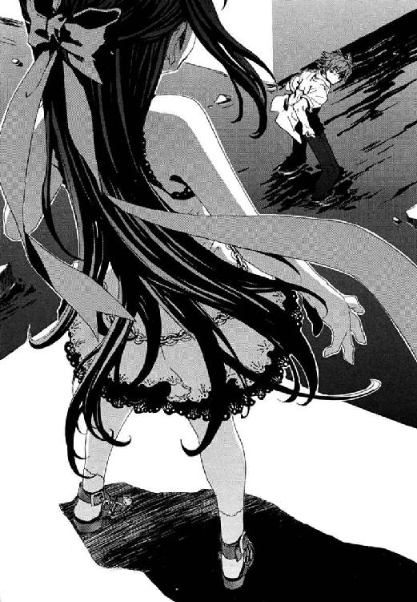
「その服、似合ってるよ」
ほかに、仁にはなにを言っていいかわからなかった。
「そういうこと気づいてどうするの？ せんせ、本当に、あたしごのみに訓練されちゃったのね」
彼女が、仁の見あげる視線が心地よくてたまらないとばかりに、身を震わせた。それで、本物の鴉木メイゼルがいるのだと悟った。うれしさと混乱で頭に血が流れすぎて、頭痛がした。
「体は、もう......だいじょうぶなのか」
仁は、彼女の姿へもし魔法消去を向けていたらと、とたんに怖くなって震えた。今、メイゼルの体でまだ治癒魔術がはたらいていたら、仁の魔法消去が彼女を殺していた。
少女が、嗜虐的に、けれど愛おしそうに仁を見おろしていた。
「本当に、しっぽをぶんぶん振ってる犬みたい。どうしてそんなにかわいいの？ せんせのほうが、血だらけでそんなにひどいのに」
目元を、メイゼルが華奢な指で何度もこすった。寒い地下空洞が、ちいさな魔女がここにいるだけで意味を変えた気がした。
「俺はいいんだ。おまえがだいじょうぶだったら、俺はいいんだ」
もう、仁の世界にままならないことは、まだ残っている十メートルほどの距離だけに思えた。高位の円環魔導師は視界のどこにでも一瞬で跳躍できる強力な転移魔術を使える。だから、彼女はこの瞬間彼に触れられる場所へ来ることもできるはずだった。メイゼルが、仁をじらすように、街路に設置されていた街灯がわりの金属製フックを、魔法で熱した。金属が赤熱して、あかあかとした光で闇をほのかに照らす。
「......せんせ、そういう目、あたしスキよ。だから、最後にしっかり、あたしのこと見て」
子ども特有の骨格のたよりない体が、強いオレンジ色のあかりで微妙な陰影を作る。なめらかな肌が、ほのかな光源の中でもつややかに光を照り返した。
仁は瀕死で迷宮をさまよったとき、何度も彼女がいた十崎家の団らんや小学校の風景を思い出した。けれど、本物のメイゼルがそばにいると、うれしさの次にやましさが来た。まだ小学生の彼女を支えに生きのびてきたのだと、意識したからだ。
「最後ってなんだ？」
仁は、急速に昨日以前の武原仁に、体が解凍されてゆく気がした。全身のむずがゆさはそのせいなのだと思った。
なにもかもうまくいく気になっていたから、仁はメイゼルに呼びかけた。
「みんなで、地上に帰ろう。......きずなちゃんも、ここにいるんだ。俺はまだすこしやることがあるけど、おまえたちはもう戻っていいんだ」
地下都市への攻撃がはじまったとき、仁は生還できまいと覚悟していた。せめてきずなは逃がしてやりたいと考えるほど、行き詰まっていた。なのに、メイゼルが助かっていたのだとわかったとたん、風向きが変わったと錯覚した。
夢にひたりかけた仁を、ちいさな魔女が手荒く目を覚まさせた。
──彼の左手から拳銃をはじき飛ばしたのと同じ、円環魔術の電撃でだ。
「せんせは、あたしのことをどう思ってるの？」
電気が走って、仁の左手はまた衝撃とともにはげしく痙攣した。
これが円環大系が得意とする電気の操作だと悟ったときも、仁はただ呆然としていた。
メイゼルが、棒立ちの仁をもう一発撃った。仁は防御のために魔法を消去できない。メイゼルの体にはたらいているだろう治癒魔術を破壊してしまうからだ。
仁にできたのは、ただ声を発することだけだった。
「......なにするんだ？」
目の前がまっ白になったようで、仁はただ立ち尽くしていた。
メイゼルは、この地下は本当に寒いのに、夏服のままの仁たちと合わせるように夏物のワンピースでやってきた。仁は、彼らはまだつながっている気がしたのだ。
だが少女は、決然と頰を引き締めて告げたのだ。
「あたしはもうだいじょうぶ。だからもう、せんせは、いらないの」
何を言われたのかわからなかった。
「メイゼル？」
「あたしはもう、せんせなんて、いらないって言ったのよ」
誇り高い少女が、薄い胸を張って二本の足でしっかりとひとりで立っていた。痛々しいほどにちいさな子どもの身で、残酷な事実から逃げなかった。
「せんせは、もう専任係官じゃないのよ。こんな無茶なことして、終わった後でどうするつもりだったの？ ......せんせ、もうキョウカのとこに顔も出せないでしょ。魔導師公館だって、せんせのこと、ただじゃすまさないわ。でも、あたしは、刻印魔導師をやめられないし足手まといにもなりたくない。......だから、あたしとせんせは、ここでお別れなの」
仁は、返そうとしたことばをのみこんだ。まだ小学生の彼女が、全身を震わせていたからだ。そしてメイゼルがした状況判断は、正確だった。
仁は、はじめて出会った五月ころのメイゼルはどんな女の子だったろうと思い返す。彼女は社会とこんな切ない妥協はしなかった気がした。
「先のことなんか、これから考えたらいい！ おまえはもっときちんと愛されていいんだ」
だが、彼自身の無力を仁が一番わかっていた。《公館》と決裂した仁には、これからのメイゼルを守る力はない。今日からメイゼルは、仁以外の専任係官に監督されることになるからだ。残ったのは、無理をとおすため闇の底に飛んだ仁の意志だけだ。
「おまえが思ってるほど、まったく道がないわけじゃない！」
「あたしはだいじょうぶ。ひとりで生きてけるわ」
だが、仁が腹の中をさらけ出すほどに、メイゼルはちいさな体で健気に背筋をのばした。彼女は、足手まといになることを彼女自身に許さない、誇り高い魔法使いだった。
「前も言ったでしょ？ ひとりになったって、あたしは負け犬になんか絶対にならないわ。刻印魔導師は魔法使いの責務だもの。キョウカのところにいられなくなったって、最悪、刻印魔導師収容所（《学校》）だってあるんでしょ」
「あんなところに、おまえをやれるわけないだろ！ 百人討伐なんて、まだ全然だろ。俺とおまえの答えは、ふたりで出すんじゃないのか？ ひとりで勝手に決めるなよ」
けれど彼女は、三ヶ月前よりほんのすこしふくらんだ胸に手をそっと当てた。
「せんせが何もかも捨ててここに来てくれたから、今、あたしは生きてるの。だから、せんせはもう十分にやったのよ」
仁は、こんな結果がほしくて戦ってきたわけではなかった。だから、泣きわめきたいほど腹の底が苦かった。
「まだ、おまえを助けられてない。この戦いだけでも、刻印魔導師は三十人以上死んでる。俺が専任係官をクビになっても、おまえの道がどうしようもなく厳しいのは同じなんだぞ」
「専任係官でなくなったせんせは、今、いったい何になったの？ あたしは、今、刻印魔導師で魔法使いだわ。だから刻印魔導師として正面から戦って、あたしは勝つのよ」
ちいさな魔女が、両手を大きく広げた。ここは人がたくさん死に続ける戦場だというのに、少女は安らかにまぶたを閉じていた。
「......それとも、あたしが魔法使いでいられないくらいにへし折って屈服させて、せんせのモノにしてくれるの？ あたしに、魔法よりたいせつなものをくれるの？ あたしのこれまでの全部より、たいせつなものになってくれるの？」
「たいせつなものなんて、これから見つければいい！」
だが少女は、仁のもっとも甘い部分を容赦なくつくのだ。
「せんせは、自分が長生きしないと思ってるから、それまでがんばればいいつもりなんだわ。でも、それは、あたしにはつらいの」
仁は彼自身がどんな顔をしているかわからなかった。ただ、見おろす少女がこらえきれないように陶然と太ももを震わせたから、きっと情けない表情なのだと思った。仁からは、メイゼルは生き急いでいるように見えた。だが、鴉木メイゼルから見た武原仁も同じだった。
仁には、メイゼルを引きとめるため、元専任係官としての経験に頼った。
「おまえ、本当は、このまま逃げられない理由があるんじゃないのか？ だからおまえ、ずっとその家の屋根から、ここまで降りてこられないんじゃないか」
仁は、自分自身が情けなかった。どう回ってもメイゼルに嫌な思いをさせる、未練だったからだ。それでもここまで来て、執着がないはずがなかった。
「《協会》の連中は、本当は、『鴉木メイゼルを殺されたくなければ我々を攻撃するな』って伝えさせるためにおまえをよこしたんじゃないか？ 連中が、おまえにひもを付けずに治療するような甘いことをするはずがない。連中は、今もおまえの背中を魔法で狙ってるんじゃないのか？」
メイゼルが、あどけない表情から色を失った。だが否定はしなかった。
「《協会》の魔導師は一枚岩じゃない。連中の中に、おまえを治療して人質に使いたいほど、俺に撃たれたくないやつがいるんじゃないか？」
「自意識カジョウだわ」
「《協会》の高位魔導師たちは臆病だ。見ろ！ この有様だってのに、《協会》の高位魔導師たちだけはひとりも前線に出ないんだよ。そんな連中がおまえを俺に会わせたのも、安全のためでないはずがない。そうだろ？」
だが、少女のかすれた声は、直接仁の心臓をひっかくようだった。
「......せんせ。もしも、せんせの言うとおりだとしても、あたしはこうするって決めたの。だって、明日からあたしたち、いっしょにいられないのよ。別れるのは、今ここのほうがつらくないわ」
暗闇の向こうから、魔法使いがはなった燃える針金が少女をかすめた。けれどあどけない魔女は、世界に仁と彼女しかいないかのように、つややかな黒髪とリボンを揺らして微笑んだ。
「ねえ、わらって......せんせ」
仁は、泣きそうなのに、つられて笑った。
「せんせのせいで、あたしは変わったわ。あたし、生きたいの......」
気丈な彼女がぼろぼろと、澄んだ目から涙をこぼしていた。どこかに涙が流れる動脈があって、それが破れてしまったように、いつまでも止まらなかった。
鴉木メイゼルは刻印魔導師だ。それは《協会》の敵を百人斃す、達成者ゼロの絶望的な試練だ。なのに彼女はリタイヤを決して自分自身に許さないのだから、命運もほぼ尽きている。それなのに、彼女は、今、生きのびたいと言った。
「せんせ、あたし成長したでしょ？ だから、あたしはせんせを卒業するの。......せんせは、〝いつか〟そんなふうにあたしとお別れするのを望んでいたんでしょ？」
彼女は、それでも屋根の上にいた。水びたしの道路で寒さに震える彼は、彼女をつかまえてやることもできなかった。
洗われたように、仁の頭の中はまっ白だった。
「もし、力ずくでも連れて帰るって言ったら？」
少女が、心のどこかが押しつぶされたようにぼろぼろ涙をこぼす。彼女が、無理に笑顔を作った。
「......本当に、もう限界ね。せんせといっしょだと、あたし、ダメになっちゃうわ」
仁自身が、律儀で誇り高いメイゼルをここまで追いこんだのだ。
背筋にぞわりと悪寒が走った。仁の記憶が、それが八年前の夏、アパートから妹が去ったときと同じ感覚だと告げていた。
仁は、ここが寒くて、彼の体も冷たい水に冷え切っているのだと思い出した。
「待て！ 行くな!! いらないって言われても、がんばってもぜんぜん実力不足かもしれなくても、大事に思ったものは守ってやる！ 無理だとしたって、やるんだよ」
すべてが夏の幻だったように、メイゼルの姿は屋根から消失した。
仁は背後に気配を感じて振り返る。ちいさな魔女は、意識を失ったオルガのそばに現れた。《茨姫》は、瀕死だったが溺れてはいなかった。
「さよなら、せんせ。──せんせは、もう、自分のスキなものになっていいの」
そして、《茨姫》の体といっしょに、今度こそメイゼルは位置移動して消えた。
ひとり薄闇に取り残されて、仁は立ちつくしていた。
どうしようもなく天井をあおいだ。地下空洞を舞っていた白金色の蛍は、包囲と攻撃がはじまったときの半分近くまで数を減らしていた。
《茨姫》オルガとの戦闘で、仁が魔法消去を使ったせいだ。舞花の破片を、彼の魔法消去が消滅させたのだ。
白と金色の雪が降るように、空中を、妹のかけらが躍っていた。
ひどく静かになっていた。彼のそばには、戦いの気配もなく、命がけで守ってやろうとしたものもみずから去った。極彩色の激情渦巻く戦場ではなく、ぽっかり空いた空白の底に彼はいた。それは、これまでの武原仁が、しあわせのうちに砕け散った静寂だった。
嵐は唐突にやんだ。地下都市を攻撃した刻印魔導師たちが、《茨姫》の戦線離脱とともに退いていったためだ。刻印魔導師が斃した敵の数をカウントするのは専任係官だ。だから、誰が戦果を評価するかあいまいになると、タガのはずれた快楽殺人者以外は戦闘をやめる。
からくも包囲攻撃を押し返した地下都市は、絶望を空元気で押し返していた。だが、人々のほとんどは疲れ切ってもう頭も使わず話をするのもやめていた。地下都市は地上のそれのように何十本もの道路で外部とつながっているわけではない。四つしかない出口をふさがれては、どこにも逃げ場がないと、彼ら自身が一番よくわかっていたからだ。
地下の住民たちは、戦闘での犠牲者たちの体を隅っこの街区の屋根に並べて布をかぶせた。ここでは、死者の遺体は西側出口の外の廃棄区画に埋められるのがならわしだ。だが、そこには刻印魔導師たちが陣取っている。死体の運搬にたずさわった住民たちは、血の粘度に耐えられないように、十分以上もかけて念入りに手を洗った。
武原仁は、屋根の上の難民たちに交じって腰を下ろし、休憩をとっていた。凍えた人々のため魔法でおこされたたき火が、冷え切った体にいくばくかのぬくもりをくれた。住民たちにまぎれて中枢街区の屋根のひとつに座りこみ、彼はただ寒さに震えた。
去っていったメイゼルのことを思うと、回復しない疲労のように虚脱感が残っていた。仁はあのあどけない少女を生きのびさせてやりたくて、地下へと飛びこんだ。彼女が生きたいと言った。仁から卒業だと言った。よろこぶべき門出のはずだった。それでもちいさな魔女を取り巻く状況は厳しいままで、仁はもう少女の未来へは関われない。
唐突に直面させられたこれが、勝利なのか敗北なのかもわからなかった。
「武原さんのせいじゃありませんよ」
きずなが、仁の顔を心配そうにのぞきこみ、隣に座った。やさしい彼女がそばにいてくれると、仁はほんのすこし楽になった。
「メイゼルちゃんも、......ぜったいに武原さんに感謝してると思います」
きずなに状況説明をする必要はなかった。仁がメイゼルに振られたところは、街の人たちにまる聞こえだった。《茨姫》オルガと仁の戦闘は、地下空洞の情勢を左右する決戦だった。だから、状況を人々に注目されていたのだ。
「そっか。......きずなちゃんにも、全部聞こえてたんだよな」
「これから武原さんは、本当に、武原さんが好きなものになればいいんです」
仁は、メイゼルとの別れぎわを思い出し、胸のうずきに顔をしかめる。
「ご、ごめんなさい。傷口をえぐるようなことをっ」
「いや、かえって気をつかわれたほうが痛い」
仁は、どうしてよいかわからず彼女をじっと見た。また甘えたくなるのを、こらえた。
「本当に、魔導師公館の専任係官をやめたら、次に俺は何になるんだろうな」
《公館》を飛び出した仁は、もはや専任係官ではない。それは、今日から何者になるのかという問いが突きつけられたということだ。
「事情はよくわからないけど、この街に来たときの武原さん、すごい状態でしたから。そこまでいっしょうけんめいやって選んだ答えが、いい加減なハズないです」
きずなにそう言ってもらって、あらためて泣けてきた。つらくても楽しかった日々は終わった。仁が、どれほどメイゼルに救われ頼ってきたかが身に染みた。短かくも濃密だった思い出が、目を閉じるたびよみがえってくるようだった。
「いい加減じゃないからこそ、しんどいことだってあるかもな」
仁は、彼女よりずっと年上のはずなのに、愚痴までこぼしていた。
「ごめん。きずなちゃんに、......なにやってんだ俺、......今、ぜんぜんおとならしくないな」
「いいんですよ」
そして柔和に微笑んでいたきずなが、きっと表情を引き締めた。
「でも、わたしも長いこと武原さんたちと会えなくて、グチがたくさんあるから、すっごいたくさん聞いてもらいますよ」
取り残されたような仁は、それでもひとりではなかった。公館を飛び出し、メイゼルに卒業されても、きずなとのつながりがまだ残っていた。彼が助けてやろうと思った地下都市の子どもたちは、まだ絶体絶命の危機にさらされたままだ。
だから仁は、疲れた顔に拳で活をいれた。
「そうだな。止まってるわけにはいかないよな」
ここはまだ窮地なのだ。水浸しの街から屋根に避難した住民たちも仁たちも、まるで夜の大海をいかだで流される漂流者だ。洪水の街の川になった道路に、はやくも即席の船を浮かべて荷物をはこんでいる魔法使いもあらわれていた。
遠くから、狩猟魔導師たちの威嚇射撃の銃声が響いた。薄闇を震わすそれに戦術としての効果はない。住民たちが不安からのがれるためだけのものだ。銃声が、殺意すらない散漫なリズムを刻んでいた。補給を望めない彼らにとって命に等しい弾丸を、浪費していた。
天井には、舞花の破片が舞い続けていた。きずなによると、《蛍》は、仁がオルガと交戦している間、視覚による魔法消去を避けるように光量を落としたのだという。そこにまだ武原舞花の判断力を残しているようで、仁は頭をかいた。他にどうしようもなかったのだ。
《死の翼》に浸食された右腕の、違和感がひどくなっている気がした。
「右手、どうしたんですか。これ、やっぱりまだ痛いですか」
再演大系の魔導師であるきずなが、顔色をなくして仁の右手をとった。仁は、オルガとの戦闘時より握力が落ちた右手をさすった。
「ちょっと、腕を引っつけるとき無茶をしたかもな」
彼も気弱になりかけていた。そんなあやうい空気を引っぺがすように、きずなが仁のしびれた右手を、両手であたたかく包んでくれた。
「でも、絶対だいじょうぶですよ。わたし、未来のことを夢で見たんですよ」
「そっか、......どんなだった？」
きずなが、仁には理由がわからない、すこしあこがれるような表情で返した。
「夢の中では、わたしがおとなになってて、それで武原さんも神和さんもいて、いっしょにごはんを食べてるんです」
「じゃあ、その夢の中のきずなちゃんは、しあわせそうだったんだ？」
仁は、未来の彼女はどんなふうだったのだろうと思った。きっとやさしくて、芯の強い女性になっていたのだろうと容易に想像できた。
けれど、笑顔でうなずいてくれると思った彼女が、返事をためらった。きずなが夢に見た未来ですら、簡単ではない苦しみがあるのだ。そう思うと仁は逆に安心した。
「夢の中でもいいことばっかりじゃないなら、それはリアルだってことだろ。その夢はたぶん当たるよ。俺たちは、やっぱり今日生き残れるんじゃないか」
「本当に、武原さんは前向きですね」
きずなの濃紺色の瞳に、炎のあかりが躍っていた。さっき誇らしげだった彼女が、ふとやましげに目をそらした。再演大系の魔法使いである彼女がどんなものを感覚したか、悪鬼である仁にはわからない。わかるのは、仁にとってもきずなにとっても家族のようだったメイゼルが今ここにいないことだけだ。
かわりのないものをなくして、きずなも途方に暮れている様子だった。
「きっと、みんなうまくいきますよ。メイゼルちゃんだって絶対戻ってきてくれます」
彼女が仁にもたれかかるように体を寄せた。健康的な弾力のあるきずなの体の感触が、今日だけで二度も死にかけた仁の本能を刺激する。ただ、衝動よりもずっと切実に、仁たちの肺は酸欠になったようにやさしさを求めていた。
「ちょっとだけ休もう。それで、元気になったら、もう一回戦おう」
夜の闇のように、地下の薄暗がりは仁たちが心に築いた壁を、すこしあいまいにしてくれた。
仁の鼻先を、栗色のきずなの髪がくすぐった。彼の、乾いた血で赤黒くなったシャツの肩に、きずなが顔をうずめた。今日一日で覚えてしまった、なつかしいようなにおいが、彼女がここにいることを伝えてくれた。
「わたし、武原さんが魔導師公館をやめたって、だいじょうぶですから。十崎さんの家にいられなくなるかもしれないけど、ひとり暮らししてでも、絶対行きますから」
「ここから地上に戻ったら、もっといろんなことを、すこしずつ話をしなきゃな」
再演大系の情報もきずなの父が起こした事件のことも、魔導師公館の機密事項だった。それでも仁には伝える義務があるように思えた。彼が言わなければ、情報は王子護のような彼女を利用したい勢力から入るからだ。きずなは、もう戦いに深く巻きこまれていた。
「武原さんとわたしって、なんか変ですね。はじめて会って、一週間くらいで急になかよくなっちゃうし。わたしは、武原さんに告白しちゃうし」
言われて気づいた。いつの間にか、自然に仁は彼女の肩を抱いていた。彼女の心臓の音が、仁の触れた手をとおして、どんどん速くなってゆく。
「......なのに、それから二ヶ月も、ほとんどそのときのまんま宙ぶらりんで。そしたら、今日は突然こんなですし......」
「きずなちゃんと大切な話をするのは、せっぱつまったときばっかりだよな。もっと、普通のときにもこんなふうに話をしなきゃいけなかったんだな」
「えっ、あっ、あの！ こんなふうにって、お話のほうだけですよね」
肩を抱かれていることを誤解して、きずなの体温が一気に上昇した。
中途半端に冷たい手が、仁の首を背後からぎゅうぎゅうと締め付けてきた。
「かーえーせー！ かーえーせー！」
息が止まってもがきながら、仁は振り返ろうとする。長い黒髪が、薄闇の中で幽霊のように仁の腕にからんだ。こんなうらめしそうな神和瑞希は見たことがなかった。
「神和さん！ 死んじゃうよ、死んじゃうよ」
「......放して、......今、とどめ......ささないと............きずな......あぶない......」
瑞希の本気の指の力に、一瞬頸動脈が締まって視界がまっ暗になった。
「あほか。本当に死ぬだろ！」
神和瑞希の整いすぎた容姿とまっ白な肌は、表情の微妙な変化をよく映しだす。
「............死んで......くれたほうが、......話......簡単......だった」
正式な都市殲滅命令を受けていないとはいえ、瑞希は現役の専任係官だ。本来《茨姫》に協力しなければならなかった。メイゼルと仁の話を漏れ聞いてしまった彼女が、ここにいてくれること自体、危険なことなのだ。仁は素直に感謝した。
「悪いな。いろいろ迷惑かけてる」
《魔獣使い》は、表情を消して彼のことばを受け流した。
「......いろいろ......聞こえる...この......露出...狂...」
気づくと、仁たちのまわり三メートルくらいの屋根からは、遠慮するように人がいなくなっていた。祭りの夜のような魔法のあかりの中、おとなたちに邪険にされた様子のちいさい子たちが、仁をじっと観察していた。四、五歳から小学六年生くらいまでの子ばかりで九人いた。
仁に恐怖して泣いたちいさなナーディアもいた。けれど、今は彼をおそれる様子もなかった。
彼の胸に、よろこびがあたたかくにじんだ。《茨姫》たちと戦ったことで、つながりができたように思えたからだ。
「ひょっとして、俺のこと、もう、こわくないのか」
悪いことばかりではないのかと、ゆるめかけた仁の頰が、かたまった。ちいさなナーディアが、仁を指さしたのだ。
「ふたまた！」
せまい都市中枢の屋根の上ではたらくおとなたちが数人、噴き出した。人形のようなナーディアは、とてもよくとおる声質をしていた。
「ねえ、モーリッツ、あれ、ふたまた」
ガキ大将ふうの年長の男の子の半ズボンを、ナーディアが引っぱった。
「あの人、きずなおねーたんとあの子と、ふたまた」
覚えたてのことばを使いたくてたまらないように、止まらなかった。半ズボンのモーリッツが、ナーディアのもちのようなほっぺをつねった。
「ふたまたって、おおきい声で言うんじゃねーよ。きずながかわいそうだろ」
「わたしは、かわいそうじゃないですよ！ 武原さんとメイゼルちゃんは家族みたいなものなんですから」
いつの間に仲良くなったのか、きずながまっ赤になって子どもたちに否定する。だが、彼女は会って間のない地下都市の子たちにまで総ツッコミを受けていた。
「きずなは、だまされやすそうだよねー」
「ヒルデもふたまたしってる」
「男をおさえつけられない女は不幸になるって、おかあさん言ってた」
地下都市の人々にも聞こえていたのだ。その証拠に、仁を見る人々の視線が微妙に生あたたかかった。そして、地下の女性たちの視線は微妙に冷たい。
仁も、突然あらわれた機会に、どう話しかけていいかわからなかった。
「ふたまたじゃないぞ。本当に、ひとことじゃ言えないくらい、いろいろあったんだ」
彼の中に、メイゼルときずなとの『いろいろ』の思い出が、大波のように押し寄せてきた。
メイゼルが生きているとわかって、仁の未来の見通しがまっ白だという実感がわいてきた。武原仁は、九年前からずっと魔導師公館にべったりで生きてきたのだ。
仁は、数時間前までは殲滅するつもりだった街を、ぼんやりながめた。すでに水位は一メートルを超えていた。家々の壁にそなえつけられていた照明魔術の青白い光が、あがった水面に反射して、街は明るく照らされていた。水鏡を見おろすと、あざだらけで土埃に汚れ、かわいた血が肌に黒くこびりついた、満身創痍の彼自身が映っていた。
「本当に、えらいところまで俺はやってきたもんだ」
仁が見る限り、この洪水は地下都市の人々を追い詰めるためのものではない。核爆弾が爆発しても助かるための、《協会》の高位魔導師たちによる防御魔術の前準備だ。核爆発の瞬間に飛ぶ放射線の中には、感覚に引っかからない性質と速度のため防御の至難なものがある。だから、放射線を止める水の壁を地下空洞のどこにでも作れるよう、街を水没させたのだ。地下都市の包囲から攻撃まで間があったのも水の準備のためだ。
そして、事態の中心である核爆弾のゆくえを誰も知らない。仁の妹の破片が、地下都市の生と死を見守るように、彼らの頭上を舞っていた。
子どもたちの集まりに、なめらかな黒い肌をした少年が飛びこんできた。きずなと仁に開けっぴろげな好意を向けてくれていたピエトロだった。あかぬけた少年が、彼と彼女を遠慮なく見比べた。
「地上はすげーところだな。やっぱり、地上に行ってみてー」
ちいさな子たちが、女の子を中心にさわぎだした。
「ピエトロにいちゃん、おうた！ おうた！」
ナーディアが、両手でピエトロ少年のジーンズにしがみつく。本当の兄妹だろう、ふたりはよく似ていた。ほっそりした体の少年は、他の子とちがってはたらきはじめているのか、手にちいさな傷をたくさんつくっていた。
そして、仁が驚くほどあたりまえに、戦場の子どもたちが歌をうたいはじめた。歌詞は、地上は豊かな場所で行けばしあわせになれるという、仁たちにはピンとこないものだ。ただ、その音は鮮烈だった。
ボーイソプラノの一声を聞いた瞬間、仁の記憶の中で、ピエトロの印象が変わった。ガキ大将のモーリッツが、肌に響くほど大きな音でドラムを打ち鳴らしはじめた。モーリッツの太鼓は、自分の汚れたシャツをまくりあげた、つるりとした腹だ。大きい音を響かせるには肺、高い音はぽっちゃりした下腹をたたいて、自分の骨と内臓の音をドラムセットがわりにしているのだ。医者の触診の要領に、クレメンスと同じ完全大系の魔法をくわえた奏法だった。
子どもたちの楽団がかなでる音楽に、地下のおとなたちがどこからともなく唱和しはじめた。そして、人が増えるごとに、音楽は色彩と音量をあげた。仁の胸に素直な感嘆がしみだした。聞いたことのない音楽に、鳥肌がおさまらなかった。この音楽は、地下都市が誕生から六十年ほどの間で独自に育んだ、豊かな文化だった。
銃声はもう聞こえなかった。人々は、手を止めて歌い、あるいは手近にあるものを打ち鳴らしていたからだ。二百人からの思い思いの楽器が、歌が、国籍不明の音楽になっていた。
ピエトロの、鋭い高音のボーイソプラノが、カミソリのように鋭い切り口で明けない夜の大気を切った。ただ心地よい音が、人々にこびりついた恐怖を細かく刻んだ。ナーディアたちちいさな女の子の愛らしい合唱が、地下の冷気をくすぐった。
思い思いの打楽器の合奏が、景気のよい金属音で、不安な暗闇を熱してゆく。指揮者も楽譜もない、気が向くままの演奏のはずなのに、息もぴったり合ってリズムを外れなかった。
歌をうたっても現実は何も変わらない。だが、影が、水が、光が、空気が、魔法のように花開いた。仁は水浸しの家々をあらためて見た。そこかしこに原色で描かれた絵は下手だったが、題材は花や空や虹、楽しいものや美しいものばかりだった。
水に、ペンキの缶が浮かんでいた。まだ新品の地上の製品で、描かれた絵も比較的新しかった。地下都市の男たちがワイズマンに雇われてカネを稼ぐようになった最近まで、この街は殺風景だったのだ。川になった通路には、トースターや電気ポットのような軽めの電化製品がぷかぷか浮かんでいた。仁も見慣れた日本製品だった。
ここは、薄明かりのひとつの世界だった。今日、住民自身がまねいた事件で踏みつぶされたとしても、ここには人の営みがあった。
鼓動に響くような、魔法なしで人を揺さぶる音楽の渦の中、きずなが仁の耳元で叫んだ。
「ここの人たちって！ いろんな別々の魔法をもってて、ひとつの家族にひとつの魔法っていうふうになってるそうですよ！」
きずなが、仲良くなった子ひとりひとりの名前を教えてくれた。
「モーリッツくんのヤクラ家は完全大系！ ゼルマちゃんのヒルタ家は円環大系！ ナーディアちゃんとピエトロくんのタバタ家は神音大系！ ヒルデちゃんのエダ家は宣名大系！」
きずなが自然に体を揺らしながら、地下都市のことを伝えてくれた。ここで音楽がさかんになったのは、ことなる魔法世界から来た人々が手を取り合うためだったという。きずなが、あの子は相似大系、因果大系と、即席ビッグバンドの子どもたちを紹介してくれた。寒いのに全裸のピンパーネルは、まちがいなく錬金大系だとわかった。仁は、この地下都市の住民がもともとは刻印魔導師だったことをあらためて思い出す。その複雑な魔法使いの構成は、公館の収容施設──《学校》にそっくりだった。
なのに仁は、ニセ教師をしている御陵甲小学校の六年一組のことを話しだしていた。
「あの子の声は、うちのクラスの天瑞に似てるな。あっちの子は、顔立ちが高田に似てる。あのモーリッツって子は絶対うちのクラスだと兵藤っぽいな」
彼が副担任をしている六年一組の子どもたちは、今ごろなにをしているだろうと思った。夏休みが終わっても、宿題ができていなさそうな児童の顔が、ひとつふたつ脳裏に浮かんだ。一学期中に、家庭訪問できなかった家のことを思い出した。
「......寒川のところ、家庭訪問に行けなかったんだ。あそこ、なんとかしなきゃな」
歌姫エレオノールが、子どもたちに引っ張ってこられていた。きっと、いっしょに歌ってと頼まれているのだと、仁は思った。だが、請われても、神聖騎士団の本隊がいるこの地下空洞でエレオノールが都市住民と唱和できるはずがない。歓喜の大波の中で、彼女ひとりが懊悩に肩を震わせ、天を仰いだ。
美しいものと、汚れたもの、残酷な運命は、交互に編みこまれる糸のようにともにある。
そして、救われる音楽も永遠にかなで続けることはできない。音の絶頂と余韻が過ぎ去った後、彼らへあびせられる喝采はなかった。ただ、燃やし尽くしたまっ白なけだるさを引きずる彼らへ、攻撃もなかった。
拍手は、音のないものがひとつだけだ。
「ブラボー！ みなさん、すばらしい演奏デシタ！」
地底を地獄の釜にたたきこんだ張本人、白いスーツの王子護ハウゼンが、子どもたちの楽団の前に現れていたのだ。
地下都市住民と王子護ハウゼンの会見は、洪水の被害にあわなかった家のひとつで行われた。密閉され入り口自体がなかった家の天井に、住民も知らなかった秘密の出入り口が開いたのだ。都市住民によると、こうした入れない家が他にも何軒かあるという。
先頭に立った王子護がライターで火を点け、眼帯をはめていない紫の左目の前にかざした。完全魔術は、術者が見たイメージ自体に《魔力》をみいだし、魔法として制御する。王子護には遠近法でライターの火が大きく見えたから、世界はそのとおりにゆがんだ。家の中心に、人の頭ほどもある巨大な火球が現れて、屋内を照らす照明となったのだ。
秘密の家の内部は、古びた机が中央に据えられた指揮所だった。生活感はまるでなく、壁には戦前の古い日章旗がかかっていた。人間の生死を決定する席には、独特の重みが宿る。仁には、ここの空気が、魔導師公館の会議室に似ているように思えた。
「ここは何だ？」
仁の質問に、王子護がうさんくさい笑顔でこたえた。
「街が古い刻印魔導師たちの手にわたる前、武蔵野迷宮のゲリラ戦で、ここは作戦指令部として機能していマシた。ここを前線拠点に、《協会》側は神聖騎士団を迎え撃ったんデスヨ」
炎のあかりの下、右目に眼帯をはめた王子護が、なつかしげにひとつひとつの遺留品に手で触れる。
「緊張しないでいいヨ。室内の音が漏れないよう魔法で処置シテルから、外のことは気にしなくていいデス。入り口もしばらく封じておきまショウ」
部屋に入った人間はすくなかった。王子護と、軍医クレメンスと黒衣の拳銃使いベルナーほか狩猟魔導師ふたり。そして、地下都市の女性代表として、ステッラ・タバタという三十代なかばの神音魔導師。仁はおまけだ。
《魔獣使い》神和瑞希は、この家に入ることを選ばなかった。エレオノールは、情報を手みやげに神聖騎士団へ戻られては困ると、王子護に拒絶された。
ステッラ・タバタは、見事な歌を披露したピエトロ少年とちいさなナーディアの母親で、街一番の金持ちだ。彼女は、王子護へも、はじめからけんか腰だった。
「あんたたちワイズマンには感謝してるよ。あんたたちのおかげで、あたしらはずいぶん便利になったからね。でも、男衆とどんな約束があるかは知らないけど、住む場所がなくなるのはゴメンだよ。こんな水浸しで、今日からどこで寝ればいいんだい！」
彼女の、牡蠣ソースを塗りたくったような黒い肌は興奮しててかっていた。王子護が、白い帽子を脱いでオールバックの金髪を指でなでつけた。
「ぼくらワイズマン警備調査会社は、勇敢な皆様に、十分な弾薬を提供しマス」
「弾薬なんてどうでもいいんだよ！ 男衆が勝手にやったことだ。あたしは、攻撃をやめさせてくれって言ってるんだよ」
「それは無理デス」
ワイズマン狩猟魔導師中隊の中隊長──クレメンスやベルナーたちの隊長である王子護が、あっさり言った。軍医クレメンスが、愕然と問い返した。
「王子護。君は、我々をだましたのか？」
「ワイズマンは君たちに武器を与え、訓練をほどこしマシた。仕事を与えマシた。所属部隊の名前がワイズマン狩猟魔導師中隊でアルことだって、契約のうちでした。──デモ、仕事の結果で君たちが恨まれたって、保障するナンテ契約書に書いてないヨネ？」
仁にも構図が見えてきた。ワイズマンにとって、クレメンスたちは使い捨ての兵隊だったのだ。王子護たちの商品は、魔法使いの軍隊そのものではなく《魔法使いの弾丸》だ。彼らが欲しかったのは、東京を焼きはらったのはワイズマンだという名前だった。だから、核テロに巻きこめる捨て駒にするか、殲滅させて日本側の顔を立てるのか、捨てるために銃をとらせたのだ。これが、地上を混乱に陥れた狩猟魔導師中隊の末路だった。
「ワイズマンは保護者じゃありマセン。ただの雇い主デス」
善人クレメンスが、整った眉を、哀願するようにゆがめていた。
「我々には、君しか頼る人間がいないんだぞ！ 外を見ただろ。子どもだってたくさんいるんだ！ どうしてくれるんだ？」
「ぼくらがかわした契約には、お金のことしか書かなかったネ。作戦をひとつ成功させると、部隊に参加シタ全員に二十万円。弾薬ハジメ必要経費はぼくら持ち。ワイズマンの作戦で戦死者が出たら、ひとりにツキ百万円。Don't mindネ。......小切手ちゃんと持ってきたヨ」
「カネはいいんだ！ このありさまで、どこで遣うんだ」
白いスーツの魔法使いは、「さあ」とばかりにおどけて肩をすくめた。
話にならないことは明確だった。黒衣のベルナーも、後ろに小銃を持ってひかえた男たちも、顔をこわばらせていた。ステッラは、目の前でなにが起こっているのかわからないように王子護とクレメンスたちの顔を交互に凝視していた。
現実はこうだとしても、時間を巻き戻してやり直せるわけではなかった。
「我々の前に、どの面さげてやってきたんだ！ 我々を馬鹿にするな」
魂を買うおとぎ話の悪い魔法使いのように、王子護は微笑んだ。
「君たちに、いいお仕事を持ってきたのデス」
追い詰められた都市住民たちが、目をむいて王子護へ身を乗りだした。仁には、より暗い道へ誘いこまれようとしている彼らを笑えなかった。まさに仁自身、同じような取引に乗ってこの地下へ来たからだ。
「たしかに今、君たちは《協会》に包囲されていマス。けれど、《協会》は一枚岩ではないことも覚えておいてほしいのデス。ここの本隊である高位魔導師二十人には、ぼくらも手を焼いているのデスよ。君たちの街を包囲したのも、水没させたのも、家族を殺したのも、みんなこの《協会》主流派に反対する悪い魔法使いたちなのデスヨ？」
芝居がかったおおきな身振りで、王子護が熱弁する。
「だから、《協会》のさるおかたが、『虫けらを焼きはらえ』とお命じになりまシタ。要するに、反対派に消えてほしいのデス。君たちには、《協会》の反対派魔導師たちが地下空洞深くに入ってくるまで、この街で耐えてほしいのデス」
つまり、王子護の話を要約するとこういうことだ。《協会》の主流派が、この街ごと反対派を一掃する。仁の妹の破片がここに集まっていることを考えれば、使われるのは核爆弾だ。だから、おまえたちは、核爆発の瞬間までそいつらを足止めをしていろと。
クレメンスたちは、その過酷すぎる仕事を前に絶句していた。
仁の心臓は、戦場の速度で打ちはじめた。王子護がこの死の任務に出す報酬の中身を読めたのだ。同じ流れの取引を、仁も瀕死のメイゼルの前で《協会》に持ちかけられた。契約が穴だらけなことを指摘するには、仁には、彼らが希望を託してしまう前しかなかった。
「王子護、この話は前提が矛盾してないか？ ワイズマンは、せっかく奪った核爆弾を、その《協会》の反対派って連中を焼きはらうために使うのか？ それなら、核爆弾で東京をおどしているはずの国城田は今、なにをしてるんだ」
「ジン、真剣に話してるとき、割って入ってくるんじゃありまセン。だいたい、攻撃に核爆弾を使うと言ってないでショ？」
「十人単位の高位魔導師を一撃で吹き飛ばせるなら、よほど名のある魔法使いだ。そこまでのヤツが来て魔法で一掃するなら、せっかく訓練した街の人間を犠牲にして引き留める必要もないよな。刻印魔導師にやらせたほうが相性がいいし確実だ」
ぬけしゃあしゃあと、銀の眼帯のペテン師が残念そうな顔をつくった。
「ぼくは、単なる《協会》の下請け業者デスよ。だいたい、ミスタ・クニキダの件は、もうぼくの手を離れていマス」
仁の唇の端が自然につりあがった。仁は噓だと確信した。王子護はバレたと理解した。
だからペテン師は、街の運命の当事者ではない仁に取り合うことをやめた。
「ぼくらワイズマンからの、戦いの報酬は、君たちの子どもと家族の命デス。君たちが頑張って足止めをしたら、この街の人間をたくさん魔法で逃がしてあげマス」
クレメンスは、狩猟魔導師たちの隊長だった男を卑屈に見あげた。
「子どもたちが生き残れる保証がほしい」
だが、一度、部下を切り捨てた王子護が、温情など出すはずがなかった。
「成功報酬しかナイ仕事に、保証なんかあるわけナイよ？」
ステッラは、知らない間に莫大な借金をこさえてきた放蕩息子でも見るように、男たちに呆れていた。だが、彼女にも、もうどうにもならないのだろうという、家畜のあきらめがにじんでいた。
「断ったら、あんたらはどうするんだい？」
「君たちが使ってる弾薬は、ワイズマンのものデス。弾薬庫から《魔法使いの弾丸》を引きあげマス」
無料のつもりで弾丸を浪費していた狩猟魔導師たちが、顔色を変えた。人ごとの面をしていた拳銃使いベルナーが、弾丸にだけは固執した。
「我々が魔法使いであるために、銃弾は必要だ」
だが王子護は悠然と、指揮所のテーブルのまわりを歩く。そして、日章旗を背にした議長の席で、くるりと仁たちを振り返った。
「戦わない理由が、君たちのどこにあるのデスか？ 君たちは、その銃で、魔法使いの世界を勝ち取るのデス。どんな世界だって戦わずに自由が手に入るなんてことはないんデスヨ」
「やめとけ。おまえたちの《魔法使いの弾丸》は、俺たちの世界を必要以上に刺激する。銃を流通させることに寛容な政府なんてない。魔法使いに銃で戦わせるってことは、俺たちの世界の軍隊が動きだすってことだ。《公館》を相手にするより、もっとひどいことになるぞ」
「ジン、あんまり魔法使いナメるんじゃありまセンよ。軍隊が出てくるんじゃありまセン。ぼくらが、ようやく君たちの軍隊を引っ張り出すのデス」
仁は戦慄した。ワイズマンは、この世界の国家と戦争するつもりだと言っていた。この世界を魔法使いが悪鬼から奪い返すつもりなら、どこかでは軍隊と戦うことになる。これが本気なら、王子護たちは世界を変えるつもりだということだからだ。
軽薄な王子護が、仁もはじめて見るほど、ことばに熱をこめていた。
「狩猟魔導師中隊は、誇ってよいのデス。君たちが犠牲になったとしても、それは《協会》が無計画に積みあげる、犬死にとはちがいマス」
《魔法使い》王子護ハウゼンはペテン師だ。人を裏切ることも何とも思わず、噓ばかりつく。仁の最初の〝先生〟は、そういう男だった。
「六十年前ぼくは、徹底抗戦するつもりだったあの戦争のおしまいに、核爆弾を見ました。あれが、もっとも勢いさかんだった者からも誇りを焼き払ったとき、思ったのデス──。ぼくら魔法使いは、こういう力を持たねばならナイ」
白衣の〝魔法使い〟は、神秘ならざるものに誇りを折られた痛みを隠せず、目尻にしわをつくった。
「失敗と死体で積み重ねて、ぼくらワイズマンは知識を集めるのデス。一度積んだ知識も、新しい発見があれば常に実験をして試しなおし、磨き続けるのデス。その結果、積んだ体系が根元から崩されてすら、飛躍は止まらないでショウ。これこそ《科学》──奇蹟に見捨てられた悪鬼がこの世界で培ってきた、ぼくらがこれから手に入れる〝力〟デス」
狩猟魔導師たちは、立て板に水と話す王子護のことばを理解できず、呆然としていた。
ワイズマン警備調査会社とは経済力をもって彼らの生き方をさぐる企業だと、仁はこれまで思っていた。だが、そうではなかった。ワイズマンがつくろうとしているのは、魔法使いと人間の間を取り持つ、新しいシステムだ。彼らは、人をひとつにまとめるために、〝経済〟というこの世界の力を利用しているだけだ。仁たちの資本主義の世界では、誰もがカネを必要とし、逆にカネさえあれば誰でもまっとうにあつかってもらえる。異なる世界を引きずる魔法使いたちは、まさに別種の生き物だと言ってよいほど異なっている。それでも等しくカネはほしい。そのわかりやすさを利用するため、ワイズマンは〝企業〟のかたちをしているだけなのだ。
「おまえらは、道具が便利だってことを魔法使いに教えて、道具を中心にまわるように魔法世界を変えたいわけか。でも、俺たち人間の社会のつくりかたを持ちこむなんて、《協会》の前時代的なトコみてりゃ絶対無理だぞ。魔法世界を革命でもしなきゃ変わらない。......おまえが言ってたワイズマンが『歴史の起点をつくる』ってのは、そういうことか？」
王子護は、仁に、かわいた拍手で報いた。
「おかしいだろ。魔法世界を変えるたくらみなら、この街の連中には最初から居場所がないだろ？ 何で巻きこんだ！ こいつらの命は最初からただの捨て石だったってことか」
「ジン。専門家になりきれない、自分で自分の色を決められない道具は、持っている色を利用されるのデス。けれど、捨て石だってムダではありまセン。ぼくら魔法使いが道具を中心に回る社会をつくったとき、新しい道具文化は爆発的に広がりマス。ジンたち悪鬼の世界をおぼれさせる、素晴らしい道具の洪水を、みんなが享受できるのデス」
仁は、目の前にあるものの野放図さにめまいがした。王子護たちのゴールは、社会そのものの進化を操作するような、傲岸不遜な何かだ。
「ぼくらは、すでにこの地下都市だけでなく、この世界で日陰暮らしをスル何万人という魔法使いに道具を売りこんでいマス。そうした積み重ねで、商文化は成長するでショウ。そして、一千の魔法世界に逆流してゆきマス。《協会》圏の一千以上の魔法世界が、どれほどの商品開発力を秘めているか、想像できマスか？」
王子護は、魔法使いとこの世界の住民との、戦争概念が進化すると言っている。これまでは、《神に近き者》グレンのような生活感のない英雄が、仁たちのようなこの世界の治安機関と戦っていた。だが、これからの戦争は、六十億人類の生活にまで浸透する。魔法使いとこの世界の企業、どちらから今日食べるパンを買うかという戦争がはじまる。
「イメージしてみなサイ。魔法使いの魔法は、悪鬼に簡単に消去されてしまいマス。けれど、魔法で加工した道具なら、六十億の悪鬼のすべてにでも行きわたるネ」
仁の体は、はじまっている変化を実感し、震えだしていた。現にこの地下都市の住民たちは、伝統的な魔法使いより仁たちに近い価値観で暮らしていた。魔法使いは、魔法使いらしい生きかたを選ばなくても生きてゆける。
「道具で交流する時代、ぼくらはこの世界にとって貿易相手になりマス。魔法使いは、魔導師公館のような前時代的な組織ではなく、公平で透明な機関と付き合うことになるでショウ。ぼくらの生産力ナラ、この世界にだって飢える者もなくナリ、欠乏から戦争をする必要もなくなりマス。そして、悪鬼自身に求めラレ、ぼくらは自由に道具を売りこめるようになるでショウ。かつて、『悪鬼自身が神話をほしがり、みずからの世界を売り渡した』あの時代が、交易をとおしてもう一度来るのデス」
王子護がどの程度のウソをまぜているか、仁にはわからなかった。だが、魔法使いとこの世界との歴史は、おおきく動きだす。仁たちの世界に、魔法使いたちから商品を買う相手はいくらでもいる。テロリスト国城田が言うとおり、この世界は地獄も同然なのだ。
明治初期に日本にやってきて、この国の歴史を百年以上も見続けた男が陶然とつぶやいた。
「──ああ、ぼくら魔法使いのために、この《地獄》があって本当によかっタ」
もはやせまい地底都市ですごしてきた人々の、判断の枠を超えていた。どこまでが本気でどこからが妄想なのかも、どこから正気でどこまで狂気なのかもだ。
「......狂ってる」
ステッラのおびえを目の当たりにして、王子護が会心の笑みを浮かべた。
「維新の時代は、狂乱の時代デスよ。君たちも〝恐怖〟と踊りなサイ」
だが、稼いだカネでペンキを買って家を塗っていた地下住民に、広い視野があるはずがない。そして、荒波を楽しめるヤマ師以外にとっては、それは動乱の時代でしかない。
「考えなサイ。そして、自分の命を何に使うのか、自分が何者になるのか、答えを出すのデス」
そして、部屋の中央にあかあかと燃えていた魔法の炎が突然消えた。
誰もが王子護の姿を見失った。完全大系の魔導師はその〝見失った〟イメージを操作してこの世のどこでもない場所へ滑りこめる。そして、彼自身がいそうだと思った場所で再結像することによって瞬間移動するのだ。
完全魔導師であるクレメンスが、ライターで炎をともした。王子護がやった手順で、空中に魔法の炎が浮かんで、あかりになる。白いスーツのセールスマンは、すでにいなかった。
外部から遮断された屋内に、もはや王子護はいない。
それを全員が認識したときから、外に音が漏れない室内に微妙な気配がただよいだした。
ここに立ち会った地下都市住民は、外で待つ人々へ会談の結果を伝えねばならない。だが、その伝えかたは、この密室にいる三人の狩猟魔導師とひとりの魔女、そして仁にまかされている。
彼らの答えが、地下都市の命運をわける選択の起点となる。彼らからの情報が、流れを決定づける。
仁は、おおきなため息をついた。
「あー、なるほど。それで神和は、ここに入りたがらなかったか」
死神ベルナーが拳銃をかまえていた。仁へ銃口を向けてだ。
ちいさな炎のあかりの中、ベルナーの青白い顔はいっそう血の気を失っていた。
「こいつは部外者だ。こんな大事な話を、こいつに好き勝手話させることはない」
ベルナーは王子護が言った内容の悪い部分を外へ出したくないのだ。だから、何が起こっても外部に音が漏れないここで、仁を射殺しようとしている。
仁は拳銃をかまえた男を、開き直って観察した。一昨日、夜のゲームセンターで撃ち合って以来、この男と戦うのは二度目だった。
「俺がこわいか」
善人クレメンスが、あわててベルナーを冷静にさせようとした。
「ベルナー、王子護にだまされて我々はこうなっているんだ。信用できるわけじゃない」
「だまれ」
その行動の出鼻をくじくように、拳銃を持ったベルナーが増えた。各魔法大系には、《化身》と呼ばれる、術者自身がここにいること自体を魔法化する高位魔術が存在する。円環大系の《破滅の化身》は、みずからの存在という閉じた円環を位相幾何学的に無理やり複数の輪へと変形させる。こうして魔法使い本人を同時に複数存在させ、身につけた服や手に持ったものも一緒に増やすのだ。拳銃を持った状態なら、当然、拳銃も増える。
一瞬で、室内は五人に増えたベルナーによって制圧されていた。
だが仁は、その失策を嘲笑った。
「おまえじゃ、王子護どころか《協会》の高位魔導師たちの相手も無理だよ。《破滅の化身》の分身は、俺が魔法消去を発動するだけで消える」
誇りを傷つけられた拳銃使いの瞳孔が、わずかに開いた。仁を単純に射殺する標的とみなし、人間として見ることをやめたのだ。
「妙なことをした瞬間に、貴様の頭をぶち抜く」
「《破滅の化身》で増えたおまえは、全員が本物だ。魔法が破壊されたときは、五人のうちの誰かひとりが選択される。おまえが引き金を引いたって、そのとき唯一選択された実体が、都合よく俺を撃ったおまえである可能性は、たった五分の一だ」
分身したベルナーが、別のベルナーたちの様子をうかがっていた。今いる五人のベルナーたちは、全員が本人だからそれぞれ個別の意思を持つ。仁に銃を突きつけたベルナー①だけは、目をすわらせ殺意をたぎらせている。だが、他の四人のベルナーは、仁とベルナー①の様子を、客観的に見比べられる。だから、自分自身が三下を演じているとわかれば、気持ちが揺れる。迷っている魔法使いが四体分身をつくれば、五人の自分自身の間で意見が割れるのだ。
「おまえが四人も分身を作って、この場の全員に銃を突きつけたのはどうしてだ？ おまえ、本当は王子護の話がうさんくさいって思ってるだろ。だから、全員を銃で黙らせなきゃ、誰かが反対すると怖かったんだ」
ベルナーは、狩猟魔導師中隊の仲間たちが殺されたことを覚えている。仁自身が一昨日と昨日で九人撃ったのだ。厳しい選択を突きつけられたとき、ベルナーにはすくなくとも仁を憎む理由はあった。
「黙れ......殺すぞ」
どん底の、暴力しか信じられるもののない淀んだ瞳が、仁を射た。ベルナーが、口べたな人間によくある訥々とした口調で、ことばを押し出した。
「思い出せ......。ステファンやイムケは、夢を見た」
黒衣の男のことばには、銃をとった男たちの生々しい実感がこもっていた。弱いからこそ見てしまう夢は、仁にもなじみがあるものだったから、たずねてしまっていた。
「銃を持ったら、世界は変わったか？」
仁も、かつてどうにもならない〝いつか〟を夢見た。高校時代の彼も、いつかよくなるつもりで、魔法消去で死にかけた妹を魔導師公館へ連れて行った。いつかに振り回されてきた仁には、地下都市の男たちの弱さが身につまされた。
「ワイズマンの話はデカかった。......俺たちは、《神に近き》あの男の声を聞いた。......世界はデカい。......だが、こんなクソ暗い街でくすぶってる俺たちにだって、やれる」
そのとき、幽鬼のような殺し屋は、ヒーローにあこがれる少年のように頰の血色がよくなった。超高位魔導師《神に近き者》グレン・アザレイは、日本を海底に沈めようとした戦いの中、この世界中の魔法使いにメッセージを送った。地下都市の住民たちもあれを聞いたのだと思うと、仁は鈍い後悔におそわれた。彼には、止められたかもしれなかったからだ。
銃を持った魔法使いたちが、特別な思い出を掘り返すように沈黙した。仁には意外だったことに、善人クレメンスが、この場で一番おさまりがつかないステッラにうったえかけた。
「最初は出稼ぎのつもりで訓練だけしていたんだ。実戦に出れば報酬があったが、訓練だけでも月給が出たんだよ。だが、あの《神に近き者》が、誇りを取り戻せと宣戦したとき、汝らみな神に近しと遺言をのこしたとき、みんないてもたってもいられなくなったんだ。ステッラ、これは私たちこの街の男の総意だった。みんなで大きいことをやってやろうって。......〝悪〟と戦おうと決めた」
英雄グレンは、夢を見せてしまった。灰色の街に暮らす地下都市の若者たちに、見事な生の色彩を見せてしまった。彼らには、死んだ《神に近き者》グレンや、利用するため近づいた王子護がヒーローだったのだ。
このちいさな閉ざされた家には、外からの音も入ってこない。それでも仁は、目を閉じれば、ただ不安をやわらげるための散発的な銃声が外では響いている気がした。
だから、ここにいるただひとりの地上の人間として、彼らにぶつけずにいられなかった。
「テロに巻きこまれる地上がどうなるかは、考えなかったのか？」
地下の人間たちは、だれも答えを出せなかった。
「きっと、君は、我々を情けないと思っているだろうな。だが、ベルナーの言うとおりだ。こんな地の底ででも、男なら夢は見るだろう。いや、せまい田舎だから夢を手放せない」
クレメンスのこけた頰に感傷がよぎった。十分前、王子護が魔法使いの新時代を語った同じ場所で、仁たちは苔のように地にへばりつき、花も咲かせられない。
「この街はせまい田舎なんだ。ここは伝統的に女性が強くて、あぶれた男たちは行き場もない。子どもたちと同じさ。外の世界はぼくらのあこがれだった」
「あたしらが悪いっていうのかい？ あんたたちがモテなかったのは、あたしらのせいかい？ あんな連中に関わったのもかい？ みんな殺されるんだよ！」
地下都市の女性代表であるステッラは、男たちになぐりかからんばかりだった。もちろんステッラのほうが正論だ。だが、地上住民の仁にとっては、カネの出所を問わなかった彼女たちも偉そうなことを言えた義理ではなかった。
彼らは、自身の荷担した東京の核テロのことなど、もはやそっちのけだった。だから、仁は、こんなもののためにすべてを失ったことが、ひどくやるせなかった。
仁は、ただ人間同士の関係を、彼らときちんと築きたかった。
「おまえたちの今ぶつかってる問題は、話がデカイかちいさいかじゃない。自分の力で子どもを守るか、おまえらを陥れた王子護に頼るかだ」
ことば尻にかんしゃくを起こして、ベルナーが仁の顔へ銃口を押しつけた。
「貴様ら悪鬼に──」
「おまえはだまれ！」
仁は、銃口を無視して、ベルナーの汗がにじんだ黒い服の胸ぐらをつかんでいた。だが、その怒りがどこへ向いているのか、仁にもわからなかった。
「おまえらが言ってる夢は、王子護の夢だ。《神に近き者》グレンの夢だ。最後までそれに振り回されて終わるつもりか。それじゃおまえらはいったい何なんだ？」
彼らは、弱いから、満たされない現実のかわりに野放図な夢にしがみつく。そして、まわりをめちゃくちゃにしたうえ、打ちのめされて恨みを重ねる。
なぐりたかった。けれど、仁が今、本当になぐりたいのは目の前の弱い彼らではなかった。
「今さら目ぇそらすなよ！ ここが《公館》に攻めこまれんのも、《協会》の反対派一掃工作に利用されんのも、王子護の計算に入ってたんだぞ。最初からワイズマンの引いた絵図面では、この街を地上げして、ここで《協会》の反対派を焼きはらうって結末ができてたんだ！ おまえらをただ殺すより、《魔法使いの弾丸》の宣伝に有効利用しようくらいの腹づもりで、狩猟魔導師中隊には編制されたんだぞ」
仁には、計画を立てていたときの王子護の楽しそうな面が目に浮かぶようだった。王子護は、殺す地下住民を骨の髄までしゃぶるため狩猟魔導師中隊に引きこんだのだ。仁が《協会》から受けた条件のひとつは、ここを殲滅することだった。《協会》からワイズマンは、この地下都市から住民を追い出して更地にする地上げの仕事を受けていたのだ。
分別あるおとななのだろうクレメンスは、悄然としていた。
「そこまでバカにされるほど、我々は愚かだというのか」
「助からないから、せめて誰かの夢の尻馬に乗って納得したふりか！ 守らなきゃなんないものがあるんだろ？ きれいに飾った棺桶までハイこれに入ってくださいと手際よく用意されて、怒らなきゃただのバカだ！」
これから仁は数えきれないほどの強敵と戦わねばならない。それでも、彼らが動かなければ何もはじまらずにすべてが終わるのだ。この瞬間こそ武原仁にとっての勝負だった。
「あんたを雇おうじゃないか。......カネだ。おカネがほしいんだね？」
ステッラだった。地下の魔法使いたちは、状況を察することもできないほど稚拙だった。仁は、胸ぐらをつかまえていたベルナーを突き離した。
「もうやめてくれ。子どもたちが、外に待ってる。母親がそんな顔をしてたら、子どもが悲しむ」
そしてちいさな部屋で、誰もが押し黙った。何の展望も用意せず、ただ王子護の提案を持って出るのがこわいのだと、仁は思った。これまでの話を聞く限り、地下都市には強力なリーダー自体がいない。再度の攻撃開始まで、三十分もないかもしれない。その短時間で、五人で収拾がつかない難問を、二百人へ突きつけて方針をかためねばならなくなるのだ。最悪、住民が暴徒化して、最低の難問を持ってきた仁たちが私刑に遭いかねなかった。
お手上げのクレメンスとステッラが、お互いに目配せしあった。ベルナーだけが、仁に殺意を向けたままだった。
彼らは、力強いことばを待っていると思った。ベルナーを動かした王子護のことばにも、地下都市の男たちを動かしたグレンのことばにも、力があった。だから、仁もそうするしかないと腹を決めた。
「おまえたちは──」
ひとこと発したとき、仁へと視線が集中した。他人の命を背負う重苦しさに腹の底がねじれた。仁の右腕を斬り落とした師、《鬼火》東郷永光は、ことばを言い切る。あれがどれほど重いことだったか思い知った。しかも、仁は、現時点では何の保障もない噓をつこうとしているのだ。だが、まったく根拠は無いのに、なぜだかするりとことばが出たのだ。
「俺にまかせろ」
何の保障もない無責任なことばだった。
だがクレメンスとステッラの目元が、ほっとしたようにゆるんだ。
だから、仁は夢想してしまった。メイゼルが卒業だと言ったとき、「俺を信じろ」と言い切ってやれたら、あのちいさな魔女は彼といっしょにいたかもしれないと。そんな想いが、美しい夢をみるようにめぐった。
「俺が、おまえたちに、地上を見せてやる」
疲れて濁っていた目に希望をともして、クレメンスが頼りきった顔を彼へと向けた。
「そんなことが本当にできるのか」
「地上はおまえたちを見捨てない。おまえたちは、法律では俺たちと同じ日本人だ」
刻印魔導師は日本国籍を持っている。だから、その子孫である彼らも、手続きをとれば法的には日本人として認められる。それは《公館》にとっても、大虐殺よりマシな落としどころのはずだった。仁たちの故郷が彼らにとって新しい夢になるかはわからなかった。
「王子護は噓をついた。おまえたちには、生きる場所を戦って勝ち取る必要なんてない。おまえたちは、俺たちと同じ国の人間なんだ。だから、正面から堂々と話をしたらいい」
閉ざされた石の家から出ると、クレメンスとステッラは、王子護との交渉が決裂したと告げた。もちろん現実とはちがう。乾坤一擲の賭けに出るため話を起点から歪めたのだ。
つまり、包囲を破ってこの地下都市を脱出し、全員で地上へ出るという移民計画だ。クレメンスたちは、正しい選択でも公平な判断でもなく、家族を助けられる可能性を選んだ。
外部からの救援を期待できないことが、住民たちを突き動かした。ワイズマンからの連絡を待っていた男たちは、混乱し激怒した。女たちには、この状況自体が耐えがたいものだった。人々は、洪水で家を追われ、寒さと不安に震え、襲撃で仲間を失った。だから怒りをぶつける悪者を求めていた。
二百人以上の人々が、波が寄せるように、ひとつの生き物のように動きはじめた。地上という夢を信じてではなかった。ただ、理由がなければ、集団はひとつにまとまらなかった。
それは善悪以前の生命の営みだった。彼らは、許されざることにも手を染めた。裁かれるべき罪もあった。それでも、薄明かりの街の住人たちは生き続けようとしていた。彼らを本当に追い立てているのは恐怖だったのだ。
これから仁ときずな、そして地下住民たちは、南側出口の包囲を突破しその先にある地下鉄駅へゆく。そこから幽霊地下鉄の予備車両に乗れば、魔法で隠蔽された移動用の中継点を突っ切って直接地下鉄線路に出るという。
「幽霊地下鉄がそんなに何台もあるって、正直、シャレにならないだろ。国城田が核テロ決行するときに、予備車両に地下鉄路線を走られたら終わりだぞ」
仁は、予備車両が彼らの命綱だというのに、思わずぼやいていた。国城田の核テロのとき、核爆弾を積んだ本命と同時にこれがオトリとして十両も走れば、現場は大混乱だ。
身ひとつで連れ去られてきたきずなには、この街から持って出る物などなにもない。あわただしい出立の支度の中、邪魔にならない場所を探すうち、仁と同じようにすみっこへ追いやられてきたのだ。
「なんか、すごいことになっちゃいましたね」
きずなが、そっと自然に彼のそばに流れ着いていた。仁は、街の人々に漏れ聞こえてはならないから、王子護の本当のことばを教えていない。神和瑞希にすらもだ。
心配そうに、きずなが彼へ耳打ちした。
「武原さん、魔導師公館をやめたって言われてましたけど、平気ですか」
地下の人々に、日本政府との交渉を仁がするとうけおった。彼が、魔導師公館にとってすでに討伐対象だという事実は伝えていない。
「魔導師公館の連中だって、ここの人たちを殺したいわけじゃない。あくまでも後方拠点だからここを攻撃しただけだ。目的は、核テロを支援している狩猟魔導師中隊を機能させなくすることなんだよ。......それは信じていい」
だが、仁の言い切ったことばから、すでに二百人以上の人間が動きだしてしまった。ことばが、時間が経つごとに重くなって、押しつぶされそうだった。
「俺は、人を助けたくて、ここにやってきたんだ。だから、最後までやるよ」
川になった地下都市の道路を、神和瑞希が《魔獣使い》の魔法で出したシロクマが悠然と泳いでいた。水温の低さと、海生ほ乳類が扱いにくい半端な水深のせいで、ほかの選択肢がなかったのだ。何匹もの熊が、人々の最低限度の荷物やちいさな子どもや老人を背中にのせていた。ピエトロによると、ここの人々はろくに動物を見たことがないそうだ。だから、子どもたちが怖がって声をあげて泣いていた。
仁は、活気に満ちた地下空洞を眺める。この街を出て地上へたどりつけば、彼は新しい生活をはじめなければならない。そう思うとそら恐ろしくもあった。
「でも、もうすぐここを出るって思ったら、けっこう感慨深いもんだな。何時間もいたわけじゃないのに、いろんなことがあり過ぎたからだよな」
昨日まで、仁は組織の枠の中で行動してきた。彼が多少の無茶をしても、京香や《公館》の仲間が尻ぬぐい的な処置もしてくれていた。彼がやってきた無茶など、後ろにひかえてくれるものがあってのことにすぎない。
仁たち奇蹟なきこの世界の人間は、ひとりでできることがちいさいから、組織をつくりそこに所属する。組織を飛び出した彼は、自由だが、彼自身以上の力はない。
「東京に帰ったら、武原さんはたいへんそうですね」
つらさを滅多なことでは顔に出さないきずなが、明日を見ようとしてくれていた。仁は、《協会》が核爆弾で焼きたかった標的のひとつを彼女だと見ていた。もし住民が動かなければ、やさしい彼女は地下都市に残り続けたからだ。あやうく、現在確認されている唯一の再演魔導師は、核攻撃に巻きこまれるところだったのだ。
「地上に出たら、本当に、俺はいったい何になるんだろうな」
善人クレメンスは、はじめて見るほど生き生きとはたらいていた。ガキ大将のモーリッツが、その脇でちょろちょろ動き回っていた。腹で太鼓をたたいたモーリッツが、クレメンスと親子なのだと、並んでいるとよくわかった。
川になった街の道路をひとつ越えた屋根には、巨大な二十ミリ機関砲をかかえた禿頭の魔導師がいた。長さ二メートルを超える機関砲は、砲身を六本も束ねた構造を持つ、航空機銃として開発された武装だ。ドラム缶のような弾倉を、汚れたタンクトップ一枚の背中に背負っていた。仁は、一昨日、その巨漢と双子のようなヨハンという狩猟魔導師を斃した。
「ヤコブ見てんのかい？ あいつ、すげーよな。あれ撃てるの、街でもヨハンとヤコブだけなんだぜ」
仁がクレメンスに手配を頼んだ狙撃銃を、ピエトロが持ってきてくれた。
「姉ちゃんはあぶなくなってないよな。姉ちゃん、銃がうまいからまだ地上ではたらいてるんだ。地上はこんなやばいことになってなきゃいいけど」
「その子はなんて名前なんだ」
「アナスタシア・タバタっていうんだ。髪は金髪で、きずなねーちゃんよりはちょっとぷっくりめで、顔が同じくらいトロそうで、あと、これと同じ銃を使ってる」
仁は、一度、警察幹部とメイゼルを撃った狙撃手と顔を合わせていた。お互いに相手を射殺するつもりで、六百メートル離れた場所から、ライフルの照準鏡ごしだった。狙撃手はチョコレート色の肌をした金髪の少女だった。つまりピエトロの姉アナスタシアが、メイゼルを撃った張本人だったのだ。
「本当、姉ちゃんのことたのむよ。兄ちゃん、強そうだからさ」
アナスタシアは仁を発見すれば、彼を射殺しにかかる。彼女は、今、仁が持っているライフルと同じモデルを使っている。精度より市街戦での即射性を優先したこのモデルで、彼女は強風の中、千三百メートルの狙撃を成功させた。仁より確実に技術は上だ。手加減の余裕はなく、出会えばどちらかが死ぬ。
「努力は最大限する。でも、これは言い訳じゃなくて、事実として覚えておいてほしい。銃弾は、いつだって、ことばよりも速いんだ」
きずなに連れられて、まだ何か言いたそうなピエトロが避難の列に戻ってゆく。ついた噓がどんどんふくれていって、ひとりで負いきれる気がしなかった。
「......この......ペテン師」
その声を仁はたぶん待っていたから、思わず苦笑した。神和瑞希は、幽霊のように気配もなく仁の背後に立っていた。
「噓だらけだよ。おまえだって、《公館》に現場復帰したらもうきずなを守れないから、何も聞かなかったことにしてここにいるだろうが。地上もやばいんだぞ」
「......今、......なに言ったか............聞こえなかった」
瑞希は、仁へお手本を見せるような無表情で、彼の恨み言自体を無視した。仁とちがって、この天性の狩人は、命令違反の証拠を一切残していないのだ。
現役の専任係官である《魔獣使い》が刻印魔導師に命じれば、血を流さずに戦闘自体をさけられるかもしれなかった。だが、《公館》の出方次第では、瑞希が逆に仁たちと戦わされることになる。瑞希はためらいなく、きずなを確実に守るほうを選んだ。それは、正しい選択ではたぶんない。だが、動物的すぎて彼女らしい答えだった。
誰も彼もが仁より上手のようだった。仁に、本当は自信などなかった。彼のかつての〝先生〟に、遊ばれている気すらした。仁は、胸を張るべき決断をくだしたはずなのに、がっくりとうなだれた。
「......まったく、慣れないことはやるもんじゃないってことだな」
街の人々の移動の背後におそいかかるように、刻印魔導師たちの攻撃ははじまった。その怒号と足音の地響きが、月光に似た薄青の光に満ちた地下空洞を揺らし、水面を波立てた。
避難列の後方を守るため、中央広場の南側の街区の屋根に、すでにエレオノールが剣を手に立ってくれていた。魔法使いは、斃せば名があがる強者がいれば、向かうにしろ逃げるにしろ無視はしない。彼女は、最小だがもっとも堅固な一次防衛線だ。エレオノールの防御魔術は、《協会》魔導師による大規模破壊攻撃にすらおそらく耐える。もっとも危険なものを彼女に遠ざけてもらわねば、敵に背後を見せる逃避行は成り立たなかった。
都市住民たちは、エレオノールをよけて首の数を稼ぎに来た者を撃つ、二次防衛線だ。刻印魔導師は、効果的な集団戦をおこなわず、たいていは突進してくる。だからエレオノールが散らした敵を、銃器で遠い間合いから撃ち倒すのだ。
仁は、南通路直前の二街区──五十メートル弱まで接近した避難列の、最前衛にいた。
逃走のために仁が指示し、都市住民が整えた手はずは単純だ。地下空洞から外部の地下通路へ通じる道は四本ある。現在は、このうち東側の出口が聖騎士たちにおさえられ、ほかの三つをふさいでいるのは刻印魔導師だ。だから彼らが南側通路の先にある地下鉄駅へ向かうには、封鎖を突破せねばならなかった。
「狩猟魔導師隊の斉射で勝負をつける。敵が通路からどいたら深追いするな」
仁が、街をほろぼすどころか刻印魔導師たちを殲滅など、あべこべもいいところだった。だが、住民を生きのびさせるには、通路をふさぐ約五十人の刻印魔導師を迅速に突き崩すしかなかった。遅れれば、エレオノールをよけて追撃してくる百人以上の魔法使いを絶対に止めきれないからだ。
死神ベルナーが、仁のすぐ後ろに魔法的転移で跳躍してきた。
「貴様の言ったとおり、配置した刻印魔導師が半分しか動いていない通路がひとつある。......西側の廃棄区画前だ」
両手に二丁の拳銃を持ち、殺気をたぎらせ、混乱にまぎれて仁を射殺しそうな勢いだった。仁は、それが彼らの進行方向ではないことに安堵した。《協会》の高位魔導師たちは、安全を何より好む。だから、その温存された集団は、高位魔導師たちが集めた一番使える刻印魔導師たちだ。仁への人質であるメイゼルもそこにいる。
「そうか。だったら、はじめよう。照明弾はこれから十分間、一分間隔で打ちあげさせてくれ」
臨時のリーダーになったクレメンスが、屋根の上で、散弾銃を突きあげて叫んだ。
「行くぞ！ 全員、走らず落ち着いて歩け、後ろを見るな！」
狩猟魔導師が、擲弾筒から照明弾を打ち出した。
白煙をあげて、黄色がかった火球が地下空洞に燃えあがる。真昼のような明かりが、地下空洞を満たした。
避難民の行く手をふさぐ刻印魔導師たちが、暗い通路の奥へ陣取って先制攻撃をはなった。炎や雷、水の矢や鉄塊と様々な魔法が、通路自体が巨大な銃眼であるかのように押し寄せてきた。
だが、魔法にたよらない照明下なら、仁の視覚の魔法消去はいかなる攻撃よりも速い最速の迎撃手段だ。だから、迫り来る魔法の矢も、身を守る防御魔術も、魔炎に燃え尽きた。仁は、降伏勧告を最低一度はするか最後まで迷いながら、号令をあげた。
「撃て！」
狩猟魔導師による一斉射撃が、人間味の余韻すら打ち消した。
魔法使いといえど、魔法消去環境下ではただの人間と同じだ。軍用照明弾が燃え続けるまばゆい明かりの中、白昼夢の光景のように人間が血を噴いて倒れてゆく。地下住民の撃ちまくる小銃と機関砲が、わらの束のように刻印魔導師をなぎ倒した。歴史上、近代の銃器の発達以降、こうやって魔法使いは仁たち悪鬼に一方的に敗れていった。《協会》が東京地下をのぞくすべての《門》を失うまで、幾度も繰り返された風景だ。そして二十秒ほどの燃焼時間を終えて照明弾は光を失い、また地底は薄闇に落ちる。
まっ赤な血の川になった通路を、腹までつかった水をかきわけるおとなが進んでゆく。人をのせた白熊たちは血の臭いに興奮して息を荒くし、ただの猛獣に戻りつつあった。
「死ね死ね死ね死ね死ね死ね死ね死ね死ね死ね死ね死ね」
狂気に感染した刻印魔導師がひとり、守っていた通路から砲弾のように突っこんできた。照明弾の光がとおりにくい通路奥にいた魔法使いの中に、空を飛べる者がいたのだ。
だが、舞うように空を駆ける刻印魔導師の進行方向には、ベルナーがいた。
死神ベルナーは、すでに《破滅の化身》で十二人に増えていた。それぞれの両手の拳銃、合計二十四個の銃口がそのミサイル魔導師をとらえた。
二十四の銃声は、ぴったり重なってひとつに聞こえた。薄闇であろうと高速機動していようと、生き残れるはずもなかった。失速した魔導師が街に墜落し、遠くで派手な水柱をあげた。
善人クレメンスが、その不吉な水音を打ち消すように叫んだ。
「走るな！ 焦るな！ しっかり足を踏みしめて歩け！ 隣の者が転んだら、助けてやって歩くんだ！」
三十五秒の闇の時間がすぎ、二発目の照明弾があがった。また強烈な光が世界を残酷に照らした。
「つめたい！」「寒いよ」「人が死んでる！」「助けて！」「行きたくない！」「痛いんだよ、そっとしておくれ」「死にたくない！」「血が！」「走るな！」「押さないで！」「早く行けよ！」「こわい」「もうイヤだ！」「お母さん、どこ！」「男衆のせいで！」「わたしのお家！」「前に行かせて」「お金あげるから！」
道をまっすぐ南下する避難民の、ありとあらゆる悲鳴と不満が、水面に渦巻いていた。
ステッラが冷たい水をかきわけて、泣いているような怒っているような大声を振り絞った。
「歌うんだよ！ 下を見るんじゃない！ ピエトロ？ ピエトロはいないのかい？ 誰でもいい、歌っておくれ！」
屋根を歩いてゆくことすら、街自体から出るときにはできなくなる。冷水に飛びこむ人々が、また苦鳴をあげる。中には心臓麻痺を起こしてそのまま水没する者もあった。
「撃て！ 撃ちまくれ！ 寄せつけるな」
屋根の上で誰かが叫んでいた。
魔法で高く跳躍し、不用意に人々の列へ飛びこんできた刻印魔導師が、白熊に食われていた。荒々しく水面が波立ち、また恐怖の声があがる。地下住民たちの先鋒は、仁の魔法消去で一時的に無力化した魔法使いを容赦なく撃つ。そして、ついに五十メートルの進軍は終わり、列の先頭は地下通路へと侵入した。仁の魔法消去が、通路を十メートルほど入った奥に設置されていた地下都市に水をためる仕切り壁を、ついに破壊した。
血の混じった濁流が一気に、流れはじめた。その圧力に引きずられて、おとなも子どもも死体も動物も、みんな水といっしょに通路へ吸いこまれはじめた。何十人という人間が、布のからまった肌色のゴミのように、なすすべもなく運ばれてゆく。
人々が幸運だったのは、行軍の列が一列だったこと、それに尽きる。彼らは比較的するりと通路へ引きずりこまれたのだ。地下空洞と通路が接する、水流がもっとも複雑な場所が、人体で詰まらずに済んだ。
仁は、ずぶ濡れの体で、必死にその地獄絵図から、白熊の尻や背中を足場に一軒の家の壁にしがみついた。
「神和！ 熊が通路に詰まってる！ 進路を確保してやってくれ」
《魔獣使い》が、魔法でうみだしていた猛獣を消した。通路内部で圧死しかけていた老婆が、解放されて一声だけ悲鳴をあげて、直後泥の波をかぶった。瑞希の姿がどこにあるかすら、もう確認できなかった。きずなと一緒に、きっともう地下空洞を出ているのだと信じた。
肩にかけていたライフルを、握力がない右手でなんとか天井へ投げあげる。そして、仁はひどく苦労して家の屋根へとよじのぼった。三発目の照明弾があがった。それで仁は、ついさっきまで周りが暗かったのだと思い出した。
見通しのいい屋根に出ると、状況はまさに混沌そのものだった。
三方から押し寄せた刻印魔導師たちの、屈強そうな三分の一がエレオノールへ向かって突進していた。鎧を脱ぎ捨てた歌姫に、それでも男たちの大半は近づくことすらできず、見えない魔弾に撃ち落とされていた。背後から斬りかかった者は、神音大系における《化身》、擬似的な術者自身をつくりだす《ゆらぎの化身》の剣に両断された。
エレオノールの周囲の足場はぼろぼろだった。遠間から、すでに一撃ならず《協会》魔導師による大魔術を受けているのだ。そして、彼女の防御魔術を正面から突破する破壊力は、刻印魔導師たちにはなかった。
刻印魔導師の大半は、さいなまれる住民たちを見捨てられなかったエレオノールを避けた。百人以上の刻印魔導師が、逃げる住民たちにせまっていた。銃を持った魔法使いたちの約半数は、仲間の列の先頭で血路を切り開いていた。だから追撃を食い止める兵員は三十人といない。
短い時間でも冷たい水に浸かっていたせいで、足の感覚はにぶっていた。機動力の高い空を飛べる魔法使いを、ライフルで最優先で撃ち落とした。仁は、凍りそうな足に血を回すため、何度も屋根に靴底を振りおろした。
二度三度くり返しているうちに、逆に頭のほうが冷えてきた。
「狩猟魔導師、防御線はもう縮めていい！ 避難列の最後尾までさがれ！」
仁の声に、救われたように銃を持つ魔法使いたちが振り返った。過酷な戦闘で、狩猟魔導師たちはまだ三分の二が生き残っていた。
仁は、銃器を持った地下住民たちが従来の魔法使いに対してあげた戦果に、戦慄した。魔法攻撃で銃弾以上の威力を出すより、防御魔術で銃弾を防ぐほうがはるかにむずかしい。だから、王子護が言う「魔法使いが道具を本気で作りはじめる時代」が、現実に来る気がしたのだ。
はるか遠くから飛来した、赤熱した針金が、退却する狩猟魔導師の首にからみついた。仁の魔法消去の発動も間に合わず、その地下都市住民の頭が胴から跳ね飛んだ。仲間を殺された男たちが、かたきを取るべく陣形を動かした。
仁からは、その行動は、罠に飛びこんでいるようにしか見えなかった。
「居場所がわからない敵はひとまず無視しろ！ 建物にひそんでるヤツの人数を甘く考えるな。人を撃つんじゃない、場所を守るんだ！」
だが、狩猟魔導師たちは、仲間のかたきでもある仁を土壇場で無視した。
そのとき、地下空洞が揺れた。仁は、視線をそちらに移して爆炎を確認し、避難民の列にほど近い一軒の家が魔法で吹き飛ばされたのだと知った。周囲を照らしてくれている照明弾を打ちあげていた魔導師のひそんでいた場所だった。
つまり、もう次の照明弾はあがらないということだった。だが、薄暗い魔法のあかりの中で戦闘する危険を、街の男たちは見誤った。避難民は確実に移動速度を速め、川のような流れに押されて通路の奥へと進みつつあった。
「もういい！ 全員撤退して列の最後尾に入れ！ エレオノールも、もう後退していい！」
空気がドミノ倒しのように連続して破裂する感覚が、肌に伝わってきた。
「いくろろっろろおろろろ！」
小銃のそれとは桁のちがう機関砲の砲声だった。脇に機関砲を抱えた狩猟魔導師が、仁から街区三つぶん西側で、崩れた家の瓦礫を足場に撃ちまくっていたのだ。石材の家に、弾丸が容赦なく食いこんでゆく。身長二メートルを超える巨漢の体が、射撃の反動で何度もよろけかける。通路の幅が三メートルしかない街で、機関部を入れれば全長二メートルを超える機関砲はあつかいづらい武器だ。だから、このヤコブは、包囲を突破する最初の一撃で圧倒的な火力を活用したら、もう最前線に出ない手はずだった。避難民を守る最後の盾として、待つことが仕事だった。
その巨漢が、離れていても肌がびりびり震えるような猛射を続けながら、咆吼した。
「おれ、みんなの役に立つ！ おれ、みんなのためにはたらける」
ヤコブが打って出た理由を悟ったとき、仁はおのれのうかつを責めた。
神聖騎士団の標準装備である概念魔弾の群れが、低空を飛んで川になった道路を埋め尽くしつつあったのだ。聖騎士たちが、魔法消去環境下で銃器と正面から戦うほど愚かなはずがなかった。照明弾の射手を倒すまで、核爆弾を追ってきた騎士隊は隠密行動を続けていたのだ。
──最後の照明弾が消え、地下空洞はまた薄闇に沈んだ。
そして、見通しが悪くなった地下都市は、聖騎士たちの狩り場となった。暗所の乱戦では、銃器の命中率はいちじるしく落ちる。そして聖騎士の使う概念魔弾は、鳥をかたどってみずから羽ばたくうえ、疑似知性を持つ。標識魔術を犠牲者へ貼りつけてしまえば、あとは魔弾がみずから判断して体当たりしてゆくのだ。悲鳴と、発砲の瞬間にまたたく銃火の閃光が、世界を明滅させた。その悲しい花火が、数秒ごとに確実に数を減らしていった。
統率すらなく力押しを続ける刻印魔導師と、集団戦に慣れた聖騎士は根本的にちがう。そして、魔法防御の基礎技術が低いのは、都市住民たちも同じだった。都市に展開していた狩猟魔導師がほぼ完全に沈黙するまで、最後の照明弾が消えてわずか一分だった。
仁は、留まることなく水が流れ続ける道路を見おろす。川となった勢いに引きずられたおかげで、二百人からの避難民はもう全員、通路へ退避を完了していた。
「もう全員退避したぞ！ 撤退だ！」
完全に戦線は崩壊していた。ぴしりぴしりと、さっきまで聞こえなかった異音が仁の耳に入った。神音大系のような、世界の索引から奇蹟を引き出すタイプの魔法は、適切な観測さえ行えば、術者の意志に関係なく発動する。音を聞くことで魔法を使う神音魔導師たちは、意図しなくても奇蹟につながる音を聞けば魔法を発動させてしまう。その肉を打つような異音は、機関砲の砲声が聖騎士に聞かれたことによる神音の暴発だった。
──その神音暴発の音は、三つ並んでいた。道路を伝って家の陰をまわりこみ、ヤコブにせまりつつあった。
聖騎士たちが、ヤコブの死角にもぐりこんで接近戦をしかけようとしている証だった。
「ヤコブ、左から三人だ！」
「うぉぁあああぁぁあ！」
絶叫とともに巨漢ヤコブが機関砲を振り回す。砲口の前にあった家の壁を蜂の巣にしながら、二十ミリ機銃が騎士たちを迎撃する。水面の上をスケートするように滑る騎士たちが突進したのと、ヤコブの砲口が彼らをとらえたのは同時だった。
聖騎士たちの強力な防御魔術《光背》は、魔法消去環境でなければライフル弾でも受け止める。だが、二十ミリ弾の集中射撃は、数秒で家のような構造物や船を木っ端みじんにする。《光背》ですら、受け止めきるなど到底不可能な威力だった。
数秒ともたず防御魔術を削り尽くされ、聖騎士の体がバラバラになって跳ね飛んだ。
だが、攻撃はそれで終わりではなかった。防弾装備だけの軽装の聖騎士隊の中で、ただひとり伝統的な騎士甲冑をまとった少女が、軽やかに屋根を疾走していた。白金色の髪を弾ませる上級聖騎士リュリュ・メルルが個人の技倆を発揮するところを、仁ははじめて見た。
伝統的な神音楽器、飛琴がリュリュの手から投じられた。金属棒のような楽器が四本、誘導ミサイルのように飛翔してヤコブの上半身を囲む。
仁は、その飛琴を魔法消去で撃ち落とすことをためらった。ヤコブが機関砲を安全に撃つための身体強化魔術も破壊してしまうからだ。仁は、一昨日、そうして男の肉親だろうヨハンを殺したのだ。
だが、今度は仁の迷いが砲手を殺しただけだった。
「おおおおおおぉぉぉぉおおあああああぁがががっ」
飛琴に取り囲まれたヤコブがあげた悲鳴は、象の断末魔を思わせた。飛琴は、四本の音叉でかこんだ空間に神音を発生させる神音楽器だ。その内側に魔弾の神音が生じたなら、犠牲者は魔弾を嵐のごとく撃ちこまれることになる。役目を終えた神音楽器がリュリュの手元まで飛んで戻った。焼け焦げて絶命したヤコブが、どうと倒れた。
「なんで、おまえら、そこまでしてこいつをやらなきゃならなかったんだ」
三人の騎士とリュリュは、どちらかが犠牲になっても残ったほうがヤコブを仕留める覚悟で、はさみこんだのだ。
きずなよりも年下だろうリュリュが、深窓の令嬢然とした上品な面差しを怒りにゆがめた。
「不潔です。専任係官であるあなたが刻印魔導師を撃つどころか、ぬけしゃあしゃあと！ 魔導師公館からワイズマンにくらがえですか？」
何も知らない彼女からは、仁が裏切ったように見えて当然だった。
「この地下都市の連中は、ワイズマンに雇われただけだ。連中は、もうワイズマンとは手が切れている。だいたい、逃げてるほとんどが女と子どもの非戦闘員だって、見ればわかっただろ！」
「我々、神聖騎士団たちにとって彼らは仇敵。──仇敵をかばうあなたを、どう信じればよいのです」
追い詰められたリュリュは、もはや聞く耳を持たなかった。
そして、組織から流れ着いてここにいる、誤解を受けた人間がもうひとりいた。リュリュの非難は、仁だけでなく神聖騎士団を追放されたエレオノールへも投げられた。
「お姉様！ あなたまで、なぜこんな者たちといっしょにいるのですか。なぜ、このような恥知らずな妨害をなさるのですか？」
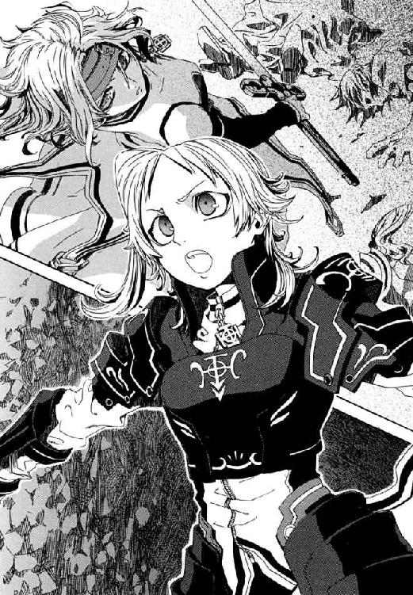
エレオノールの足もとにはすでに幾多の屍が転がり、いつしか剣持つ歌姫に挑む者はなくなっていた。信仰者である彼女が、刻印魔導師たちをどのような気持ちで斃したのか、仁には知りようがない。
ただ、苦しみにあらがうように彼女が視線をリュリュへ向けた。エレオノールもまた、彼女そのものだったような神聖騎士団という組織から切り離された。それでも今、誰かを助けようとあがいていた。だから、きずなと同い年の、価値観も何もかもちがう歌姫に、奇妙な共感を感じていた。
「もう、やめましょう。彼らは核爆弾など持っていません。彼らもだまされたのです。もう彼らは十分に罰されました」
エレオノールが、剣を抜いたままゆっくりと歩きだした。同じことばを清潔なテーブルをはさんで言ったなら、それは慈悲深いことばだったろう。リュリュにも聞く耳を持てたかもしれない。だがここは、すでに刻印魔導師の、地下住民の、聖騎士の骸が百と転がる戦場だった。そして仁は、あの信心厚い歌姫は気づいているだろうかと怪しんだ。エレオノール・ナガンの人間の部分である右手は、かつて仲間だったリュリュの許へゆくのに、剣をしっかり握って離さないのだ。
それは仁にとって、奈落の底をかいま見る光景だった。仲間同士で命をとりあったりなど、信仰者はしないと、勝手に思っていたのだ。彼は、聖騎士が《公館》の専任係官のような本気の同士討ちをするところなど見たことがなかった。戦闘再開からまだ十分そこそこなのに、このつらい戦いが一時間以上も続いているように思えた。
そして、都市の西側、《協会》の高位魔導師たちが陣取った『二─六』街区あたりで爆発が起こった。街区自体を切断するように土砂が巻きあがり、雨のように仁のあたりでも砂が降ってきた。地下空洞自体を揺らす地響きと爆音に、仁もたたらを踏んだ。続いて隣の三─六街区が吹っ飛んだ。瓦礫に変わった北西の家の屋根に、一瞬、仁は白いワンピースの少女を見た。まぎれもなくメイゼルだった。
爆発の正体が、それで仁にも察しがついた。彼と別れたメイゼルは、人質として《協会》の高位魔導師たちと西門にいたはずだった。その彼女が戦っているのだ。相手は《協会》の魔導師を排除しに来た聖騎士以外にない。
仁の予想を裏付けるように、派手な爆発と雷光があがった。メイゼルが、土煙と彼女自身の頭ほどもある破片をかわすため、磁力で体をはじいて空中高く跳躍した。
仁の視線は、引力が小石を引き寄せるように、追い詰められた少女へ引きつけられた。気持ちがぴたりと定まるように、彼が今、何をしたいかわかった。卒業だと言われても、メイゼルを見殺しにする男にはなりたくなかったのだ。
自然に、仁も歩きだしていた。
都市住民が魔法でかけた橋をわたって、持ち場での義務を果たしたエレオノールがやってきた。仁も、歌姫と同じで、足を止められない。南へ来る彼女と北へゆく仁はまっ正面からぶつかりそうだった。彼は、かつて斬り合ったエレオノールの青い瞳に、こうせずに彼女自身でいられないような渇仰を見た。
まっすぐに彼女自身の戦いを見据えたまま、エレオノールが言った。
「リュリュ。......私は彼らを、老人から子どもまでこの目で見ました。そのうえで彼らを信じます。彼らを討つと言うなら、私を倒してからです」
歌姫の視界に、仁は入っていなかった。彼女がこれからつける決着に仁の居場所などない。
リュリュにとっても、仁は本当に重要な敵ではなかった。少女騎士の声が、仁を素通りしてエレオノールに投げられた。
「お姉様には、失望しました」
仁は思う。《茨姫》は、苦行者だから苦しい道をよろこんだ。仁自身は、それが彼であるために必要だったから、暗闇の迷路を選んだ。
エレオノールの《神》が示す過酷な荒野は、神を感覚できない彼には、道とすら見えない。だから、そこを迷いなく進む信仰者を、仁はどこかで恐れあこがれる。
「......死ぬなよ」
その歩みが交叉する寸前、彼に言えたのはそれだけだった。エレオノールが、その歩みを一呼吸の間だけゆるめた。
「《沈黙》よ、あなたとは、いつも遠いようで近くにいましたね」
すれちがいざま、手と手を打ち合うような仲ではない。仁と彼女は、互いに、友になることはないと知っていた。
「──ご武運を」
かつて聖騎士だった彼女が、聖騎士からメイゼルを守りに行く仁の幸運を祈った。背中を押してくれた心意気を受けて、彼女が向かう南側出口に残ることは無粋だった。
エレオノールが背後に過ぎてゆくと、仁の眼前には深夜の街のように広々とした無人の地下都市が開けていた。残存した刻印魔導師も、冷たい水に浸かってもっと楽な標的をさがしているのだ。
仁は、信用できるほどはエレオノールを知らない。だが、世代最強の騎士の背中を振り返ることが、彼女の誇りと仁の不安をはかりにかける惰弱だとは〝伝わった〟。だから、彼も銃を手に走りだしていた。
魔導師公館から離れて、仁が何者になるかはわからなかった。この地下都市で彼がした選択は、正しくなどなかった。ただ、どんなことがあってもメイゼルを助けてやると決めた、最初の決意にだけはそむいていなかった。仁は、勝手に抱いていた想像よりは厳しいものに、この地下で出会った。だが、人間ひとりを救うということが、簡単なはずはなかったのだ。
「おおおおおおお！」
仁は、まだ残る迷いを気勢でぬぐおうと、咆吼していた。足を強く踏んで、住民たちがかけた橋を使うのももどかしく隣の街区へ飛び移る。退避のときクレメンスにようやく返してもらえた《剣》を、腰から抜いて左手ににぎった。魔法消去を停止している今は、神人遺物も長さ八十センチメートルの軽い鉄棒にすぎない。
小石の雨が、ぱらぱらと降り注ぎ、暗い川に無数の波紋をたてた。仁は、《死の翼》に冒された右手には重すぎる、かさばる狙撃銃を捨てた。
また瓦礫の噴水が、今度はさらに中央広場に近い四─六街区で噴きあがった。
冷たくこごえていた体が、今はゆだりそうなほど熱かった。またいらないと言われたらと考えると、途方に暮れそうなほど不安だった。だが、足は止まらなかった。倫理や義理より、欲や執着が仁に少女を助けさせずにおかなかった。
薄明かりの向こう、川になった道路にメイゼルはいた。彼女は魔法で、水面に沈まず立っていた。街区の建物群は白い砂煙へと砕かれ、少女を包みこもうとしていた。
荒い息をついて、メイゼルはしおれた花のように疲れきっていた。彼女が戦う相手の姿は、土煙の中にあってまだ見えない。
仁は、その煙がゆらいだとき、頭で考えていたすべてを忘れて叫んでいた。
「跳べ、メイゼル！」
メイゼルが、水面から空中へ螺旋を描いてのびる磁力のレールを魔法で敷き、一気にそこを滑りあがる。少女の白いワンピースが、白い花のように薄闇を舞う。仁はその滞空時間の間に、地上の爆心地を凝視して魔法消去を発動した。同時に仁の左手の中で、魔法を破壊された黒い《剣》が漆黒の刀身を取り戻す。
最後の川を飛び越え、仁は爆心地の街区へ着地した。まだのぼり続ける砂礫の霧へと、魔法消去で敵の超常の力を封じたまま体ごとぶち当たった。
「せんせ、上！」
メイゼルの悲鳴に反応し、仁は消去を発動したまま頭上の白煙を突きで貫く。奇蹟が存在できないはずの戦場で、神人遺物の剣が何かに弾かれた。
砂礫の向こうの瓦礫に敵が着地したように、小石の転がる音がした。仁は、状況を確認するため消去を停止する。一瞬、つむじ風が起こり、半透明の肉体を持った〝人を超えたもの〟が、その建物の残骸を踏んでいた。古代の戦神の壁画から抜け出してきたように、その男は上半身に鎧をつけず、複雑な文様の入れ墨を肌に刻んでいた。身長二メートルを超える巨漢は、顔も体も傷だらけだった。
仁は、まだ降りやまない砂礫の雨を受けながら、崩れかけた足場を一歩退いた。彼はそれがいかなる存在か知っていた。
どんな魔法大系でも、魔法研究の道はどこかで不死に到達する。魔法大系ごとに、肉体の成長を止めるものあり、体を魔法生物に変えるものありと、その形態は様々だ。神音大系における不死者が、仁とメイゼルの眼前にあった。個人の《索引》が知られているがゆえ、何度破壊されても、神音を奏でられれば再召喚されてよみがえる人間──ゆえに不死。これが神聖騎士団の真の切り札、概念魔術によって体を構成された永遠の騎士団、《聖霊騎士》だ。
大気を畏れさす半透明の不死者が、鈍くことばを発した。
〈古き伝承の末裔とまみえるとは、運がよい。吾は《一眼怒拳》デューガ。──名乗れ、真なる悪鬼〉
《聖霊騎士》に叙勲されるのは、それぞれ神聖騎士団の古き歴戦の英雄たちだ。だが仁は、うやまわれるべき強者へうんざりと返した。
「悪いな。《聖霊騎士》には名乗らないことに決めてるんだ」
聖霊騎士は、斃しても斃しても、神音をかなでさえすれば無傷の状態で復活するのだ。しかも、再召還のたび不死者たちの記憶はリセットされるから、毎回名乗りなおしになる。
「どうしてせんせが、こんなところにいるの！ せんせは、街の人たちを守ってたんでしょ？」
隣の街区の屋根に着地したメイゼルが悲鳴をあげた。少女のまっ黒な長い髪も、黄色いリボンも砂だらけだった。
「そんなこと、おまえが気にしなくていいんだよ」
仁は、それでも、彼女がそこにいると思うとほっとした。
「メイゼル。俺の消去中にしゃべったけど、治癒魔術はだいじょうぶか」
ちいさな魔女が、不意をつかれたように息をのんだ。卒業を告げたあのときの背伸びをしそこね、一瞬、メイゼルは子どもらしい顔に戻っていた。
《聖霊騎士》が動いたのは、それとほぼ同時だった。
地下空洞自体が揺れた。もうもうたる土煙の中、仁と肌が触れるほどの位置まで聖霊騎士が移動していた。神速の踏みこみからの正拳突きだった。
古き英雄が、転がってなんとか一撃をかわした仁へと声をかけた。
〈よくぞかわした、真なる悪鬼〉
その一撃で壁の石材が砕けて空中へ噴きあげ、大量の瓦礫がまた上から雨のように落ちた。この《一眼怒拳》デューガの拳は、街区をまるごと打ち砕く。破壊力の源は、腕力ではなく魔法だ。神音大系には、ものをたたいて音を伝えることで媒質内部に魔法を発現させる、高等技法がある。かつてバベル事件で団将グレアム・ヴィエンが使ったのと同じ、浸透神音だ。拳で壁をたたいた音が、石壁内で破壊の神音と化してそれを内部から破壊したのだ。
「ずいぶん余裕だな！ 魔法消去と接近戦かよ」
仁は、魔法消去を発動して、至近距離にいた聖霊騎士の腰へタックルした。魔法消去は、接近すれば触覚や嗅覚まで動員してはっきり魔法をとらえる。一種の魔法生物である聖霊騎士の肉体を、その強い魔法消去で破壊できるはずだった。
──それが、手応えすらなかった。
砂っぽいにおいの煙がかすかに揺れた。仁は、踏みこんでその位置へと重心を寄せ、黒剣で横になぎ払った。魔法のあかりを頼れない闇の中では、目を頼りにできない。だから、状況を確認するには消去を停止せねばならない。メイゼルの悲鳴が薄闇を裂いた。
「せんせ、上！」
聖霊騎士は頭上にいた。人間の限界を無視して、脚力で五メートル以上も跳びあがったのだ。
「これも浸透神音か──」
魔法消去を発動して迎撃すれば、聖霊騎士を破壊できたのかもしれない。だが、消去しきれなければ、仁はまず死ぬ。敵は、浸透神音でみずからの体内に複数の強化魔術を打ちこむことで、すでに肉薄した状態からの魔法消去に耐えていた。そんな全身が魔弾のような聖霊騎士が、魔法消去で減速させようがない自由落下の超高速で突っこんでくるのだ。仁の本能が逃げを選択した。どこに──？ 川になった道路へ、身を投げたのだ。
次の瞬間、瓦礫の街区が爆発した。
爆風と破片の嵐が、仁が沈んだ川面をたたいてとおりすぎた。衝撃が水を伝って全身を揺さぶった。仁は、ドボンドボンと石が落下する音が伝わる冷たい水底で、黒剣の刀身を口にくわえると、腰から拳銃を抜いた。聖霊騎士が、水面に浮きあがってきた無防備な仁を見逃すはずがなかったからだ。街から貸りたのが堅牢な回転拳銃であることに感謝し、水中で撃鉄を起こした。
息を整える。そして──浮上した。
浅い川から仁が顔を出した瞬間、街を沈めた水は凶器と化した。浸透神音により、水面の波が刃に成形されたのだ。仁は逃げずに、真っ向から魔法消去でそれを破壊する。
波紋があらたにひとつ立った。それは追い打ちの浸透神音だった。そして、大気で体を構成されているがゆえ水中戦を嫌った聖霊騎士が、〝そこにいる〟あかしでもあった。
仁は銃口を水上にあげ、聖霊騎士を拳銃で撃った。反動で体勢を崩しながら、もう一発。そして、魔法消去を停止して戦果を確認した。
聖霊騎士による、全身を魔弾化した自由落下攻撃は、着弾点を瓦礫も残さず消滅させてクレーターを作っていた。半分以上水没した街区のほとりに、《一眼怒拳》デューガは、腹と左足に銃弾で大穴をあけて立っていた。だが、不死者は、体を構成する大気の密度を薄くすることで傷を急速にふさぎつつあった。
〈やるな、真なる悪鬼〉
川になった道路からはいあがろうと手がかりを探した右手が、やわらかいものにつかまえられた。彼とお別れだと言ったメイゼルが、磁力を利用して水面に立ち、助けに来てくれたのだ。
「せんせ、飛ばすわ！ あたしにしがみついて！ 早く！」
仁は左手に拳銃を握ったまま、メイゼルの華奢な体に腕を回した。彼女も、体重差でつんのめりながら、水面から上半身だけ引き出された仁の体にぎゅっとしがみついた。悲鳴のような金切り声が、息を詰まらせてとぎれた。
「もっと強く！ ......あたしのこと、はなさないで」
仁の両腕にすさまじい負荷がかかり、メイゼルの細い肩がきしんだ。体重が倍もちがう仁の体を、魔法で発生させた磁力で引き揚げようとしているのだ。仁はただ一心に少女の体にしがみつく。布地越しに熱い彼女の体温が伝わってきた。
そして体が水面から抜けた勢いで、仁とメイゼルは空中高く舞いあがっていた。時間が止まったような浮遊感の中、かたく抱き合った姿勢のままふたりで目を合わせた。
「聖霊騎士から二街区だけ南東へ離れよう。七─八街区だ」
魔法のスロープが、彼らを平らな屋根まですべりおろさせた。仁と密着していたせいで、メイゼルのまっ白だった服は汚れてしまっていた。少女が、追い詰められたような余裕のない顔で、彼を責めた。
「どうして？ あたしは刻印魔導師で、せんせは街のみかたになったんでしょ。なのに、どうしてここにいるの？ せんせは何がしたいの」
着地するなり立て続けに浴びせられた疑問に、仁は単純な答えを返した。
「おまえを助けてやりたいんだ」
少女が、仁のすぐそばにいるのだと気づいて、あわてて身を離そうとした。そのちいさな手を、彼はつかまえた。
「おまえがどこにいるかなんて、関係ない。俺は、おまえを助けてやりたくてここに来たんだ」
「勝手だわ」
誇り高い少女が、仁の手を振り払った。専任係官をクビになった仁では、守ろうにも、刻印魔導師がどこで戦闘に参加するかわからない。だから、これから先、彼がメイゼルを助けてやるには、本人から戦場がどこか聞くしかないのだ。
仁は、不意に起こった泣き笑いの発作に屈しそうになった。彼はそれでも、言い切ってやらねばならなかった。
「俺はおまえを、助けてやる。俺が専任係官だからじゃなくて、俺が俺だから助けてやる。おまえが刻印魔導師だからじゃなくて、おまえがおまえだから助けてやるんだ！」
挑みかかるように、少女が薄い胸に手を当て、仁を見あげた。
「そんなに、あたしのそばにいたいの！」
「俺は、みんなでメシを食ったり、家に帰ると誰かいたり、話をしたり、明日もそんな日がまた来る気がしたりする暮らしを取り返したいんだ。だから、おまえがいないとこまるんだ」
仁は、救われたように胸が軽かった。子どもを守る戦いだから最低ではないと、ほっとした。《公館》でしてきた偽善とひどく似ていた。だが、守る相手がいないと彼は迷路にはまりこんでしまう。仁は、組織からは飛び出せたが、人のつながりと切り離されては戦えない。
メイゼルが、じっと彼の表情をうかがっていた。それは、おとなを見あげる子どもの視線ではなく、ひとりの彼自身に訴えかける女性のまなざしだった。
「ちがうわ。せんせは、本当は、自由になりたいの──」
飴色のうるんだ大きな瞳を前にして、仁は、薄明かりの下、メイゼルの髪をきれいだと思った。彼女は、仁が剣や銃を確かめている間に、魔法で髪から土ぼこりを落とし身だしなみを整えていたのだ。
「──せんせは、正しいとか、守ってやりたいだれかとかのために、命をかけてるんじゃないわ」
「そうかもしれないな。俺は、そんなに強いわけじゃない。俺がいろんな決意をしてきたのだって、たぶん弱いからだ。でも、だからなんとか厳しいものと向き合えてきた」
仁は、まだ舞花がアパートにいたころからの彼自身を思い出した。
「だから、人のつながりってのはだいじなんじゃ────」
彼女が、薄闇の中でもはっきりわかるくらい、興奮で顔をまっ赤にしていた。
「せんせは、正しいことがしたいんじゃないわ！ だって、命がけでそれでもダメでムチャクチャにされてるときのせんせ、びっくりするくらい生き生きしてるんだもの。せんせは、正しいと思うものに痛くされるのがスキなのよ！」
仁は、伝えたかったことの〝なにか〟が、完全にねじれている気がした。さっき《茨姫》から、気が合う人と認定されかけたことを、嫌な感じに思いだした。
「せんせはずるいわ。......どうして、もうお別れなのに、あたしの前にこんなごちそうをならべるの？」
痛みや泣き顔が大好きな、嗜虐的な少女が、仁を甘くなじった。
仁が彼女に執着しているくらい、メイゼルも彼とのつながりに未練を持ってくれているように思えた。たぶん、うまく否定できなかったのはそのせいだった。
終わってはいなかった。仁がいて彼女がいる限り、すべての答えはまだ途上だった。彼は、聖霊騎士との戦闘で斃れるかもしれなかった。だからこそ、ほっと一息つけるような、ひとときの時間があったことに感謝した。
「来たな──」
仁たちがいる屋根の隣の街区で、また爆発が起こった。空気の体を持つ聖霊騎士は、道路を満たす水を嫌って、家をぶちこわして足場を造っていた。
「そうね」
メイゼルの横顔は、すくなくとも今、悲痛ではなかったのだ。
同じころ、機械化聖騎士隊の本隊は着実に仕事を進めていた。隊長ジェイク・フェニックスと、《ドク》の愛称で呼ばれる騎士エヴァン・コーヘンが、街の中枢に潜入して核爆弾の捜索を行っていたのだ。
中央広場に面した七─六街区は、生活の痕跡が強かった。天井の《蛍》の光が落ちる夜の川のような道路にも、多数の電化製品や生活雑貨のゴミが浮かんでいた。魔導師公館の《茨姫》が指揮をとった最初の攻撃でも、都市住民が避難したのはこのあたりだった。そして《茨姫》の無差別攻撃に巻きこまれて、騎士隊も二人の仲間を失ったのだ。
《ドク》エヴァンが、左手の手甲に設置した鍵盤を操作する。
「大将、ちょっと静かにしてくれ。こいつをぶちこわす神音にぶち当たりそうなんだ」
エヴァンは、風貌は知的だが気は荒い。誰より先行したがるから装備は泥だらけで、眼鏡にも泥のはねが付着していた。
隊長ジェイクは、三十メートルほど南で戦う《一眼怒拳》デューガを見あげていた。聖霊騎士は、都市西門近辺でちいさな刻印魔導師と戦闘に入った。《協会》魔導師たちは、臆病で直接戦闘をしたがらない。だから西門前で注意を集めるため、永遠の騎士が単身もっとも危険なそこへ向かってくれたのだ。
その聖霊騎士を、少女が《公館》の武原仁と協力して食い止めていた。ふたりがお互いを気遣いあっているから、騎士隊のほうが悪役のような気分になった。
「オレたちは、クールじゃねえなあ」
ジェイクは、拳を握る彼の黒いグローブをじっと見た。《ドク》エヴァンが、神経をつかう電子楽器の操作をしながら、白い息を吐いている。
「なんだ、子どもに戦わせて他のやつらは知らんぷりか。《協会》のウジ虫野郎ども」
「ドク、本当に集中してるか」
まるい目をむいて、隊長はおどけて見せた。《ドク》が肩をすくめた。
彼ら機械化聖騎士第三試験小隊は、音痴で楽器をあつかうのも下手なおちこぼれ騎士の寄り集まりだ。だから彼らは、機械装備を与えられ、自身がクズではないことを証明してきた。《喇叭》のコードネームで呼ばれる核爆弾を警備するこの聖務は、彼らの晴れの舞台だった。
中枢でまず核を押さえる方針を決めたものの、ジェイクはことがすんなり行きすぎていることが不安だった。
「《喇叭》の起爆装置は、神音魔術で作動する。なのに狩猟魔導師たちは逃げた。......あいつら核爆弾をあきらめたのか」
「連中が追撃を受けてるあいだに漁夫の利をねらえってアイデアは、大将のだろ」
《ドク》が、防弾装備の右腰につけたスイッチを、静止モードに入れ直す。高速機動魔術、《閃輪》は、靴の裏で気流を循環させることで、騎士の体を地面から約五センチ浮きあがらせる。機械化聖騎士隊はこれによって川になった道路に立つことができているのだ。
「だがよ、《ドク》。街の連中、本当に未練もなく逃げだしすぎだろ。《協会》の連中は、刻印魔導師まかせで前に出てくる気配もねえ。だいたい、王子護はどこなんだ？」
「核爆弾をおさえれば、ヤツも顔を出すよ」
ジェイクたちは、探査魔術でたんねんに核分裂性物質を探し、すでに反応を見つけていた。だから、反応地点である入り口がない家の壁を破壊すべく、《ドク》が神音魔術を使おうとしている。この家が標準的な住居の倍の大きさだったことも、彼らの期待をかきたてた。
「大将、この街が水びたしになったときから、ちょっと考えてたんだ。大戦終了後の、神聖騎士団と武蔵野迷宮の調査報告、読んだことあるかい？ この大量の水の出どころが地底湖なら、ここは、《門》が存在する《協会》中枢のすぐそばだ」
《ドク》は、軽口をたたきながらも、手甲についた音色を変化させるダイヤルを、慎重に操作していた。ドクの電子楽器は、必要そうな神音を登録しておき、ダイヤルで音を揺らすことで、神音が地形や状況で変化する現象に対応する。だから彼の神音魔術は、無線機やラジオの微妙なチューニングを合わせる作業に似ていた。
「そいつはクールだ。この落書きランドが、刻印魔導師ゲリラの本拠のなれの果てか」
この武蔵野迷宮で、戦後、聖騎士たちと《協会》の決戦があった。神聖騎士団は、《協会》中枢部と神人遺物たる《門》は迷宮の底にあると信じていたからだ。そして、大魔法実験の余波を地上へ到達させない緩衝材として、迷宮と中枢部の間には地底湖があると考えていた。
その地底湖が存在する証拠が、この大量の水だった。地下迷宮が便利になったことで、騎士たちは小勢でもここまでたどりついた。地底湖のすぐ近くまでせまれたなら、たいへんな戦果だった。《門》を陥落させれば、《協会》と神聖騎士団の一万年の戦争は終わる。そう思うと、ジェイクも興奮をおさえられなかった。
「オレたちがここへ到達したのも神意かもな。ただ、そこまでの道程はキツかったがな」
音の高低を合わせていたドクの正面で、突然、壁が砕けた。チューニングが合って、核爆弾を隠した家を砕くための神音魔術が発動したのだ。
「神音にヒット！ やった、おい、ちょっと、やっちゃったよ──」
そのドクの歓声が、途中で歓喜の叫びに変わった。壁の向こうからあらわれたものは、無数の《蛍》だったからだ。隠蔽魔術を透過して核爆弾に反応し、その位置へ近づいてゆく魔法構造物がここにあった。この《蛍》が、ジェイクたちの守る核爆弾の位置をワイズマン狩猟魔導師中隊に露見させたのだ。それが、ドクが壁を破った家の中から、光の洪水のようにあふれてくるのだ。
「やったな、ドク！ こいつぁすげえ！」
ジェイクは、ドクがあげた右手に思い切り手を打ち鳴らし、仲間を引き起こした。この家にかくされた核爆弾を基地へ持ち帰れば、ジェイクたちの聖務は完了だった。
遠くで、近くで、どよめくような声があがっていた。白金色のこの《蛍》は、あわい光を抱きながら地下空洞の天井へ向けてのぼっていた。その光の群れは、この都市のどこにいても目に入るほど見事だった。
「急げドク！ ヤツらが来る!!」
だから、いつも陽気なジェイクですら声をかたくした。核爆弾の確保をねらってか、四方八方から魔法使いが押し寄せだしたからだ。
核爆弾を回収するため、一足先に家屋に入ったドクが、弱気な悲鳴をあげた。
「なんだこれは!? 隊長、これは......どう判断していいかわからない！ すぐ来てくれ」
ジェイクもあわてて足を踏み入れ、絶句した。
──その家の内部は、まるで学校の教室だった。
木製の机といすが、縦に六列、横に五列、三十台も並んでいた。壁に大きな黒板がすえつけられ、教壇のような一段高くなった場所まであった。この部屋は、何十年も前の若者たちの生活感がこもりすぎた、すえた空気を保存したタイムカプセルのようだった。机に落書きまで残っていたからこそ、黒板の上にかかった、『神風』と墨書された日の丸が不吉だった。
そして教壇の脇に、人間を詰めこめそうな大きな金属球が置かれていた。ジェイクたちには一目でわかった。それは爆弾だが、彼らのさがす《喇叭》ではなかった。
きわめつきは、ドクの防弾装備にしがみついた、場違いな褐色の肌の少年だった。
「助けてくれ！ オレ、さらわれて！ どうなってるんだよ!? 助けてくれよ」
子どもがこんなところにいた。ドクが振り向いて、恐怖が感情をマヒさせたような無表情で、無言で助けを求めていた。
ジェイクたちが使った探査魔術は、核爆弾に不可欠な高濃度の放射性物質を発見するものだった。彼らは、この陥穽に落ちた瞬間まで忘れていたのだ。この日本は昔、神聖騎士団が同盟するアメリカと戦争をした。そして戦争は、広島と長崎で、ふたつの核爆弾が爆発して終結した。《協会》と協力態勢にあった当時の日本も、核爆弾を開発しておかしくない状況だった。そして、すべての糸を裏で引いた王子護ハウゼンは、明治から百年をこの日本と歩んだ男だ。
過去という冷たすぎる糸が、この黒い金属球にすべてを結んでいた。
────これも核爆弾なのだ。それも、戦争中、《協会》がこの国と協力して作った。
「なんだこれは！」
今このときまで、大義を背負っているつもりだったジェイクが絶叫した。
《喇叭》という核爆弾が存在すること自体、米軍の核爆弾開発に神聖騎士団がかかわったことを暗示していた。神意こそ絶対の正義だ。だが、ジェイクはこの世界と文化を愛していた。だから、この世界の人々の悪意と憎悪が結晶したような〝人類の核爆弾〟を、どうしてよいかわからなかった。
はやくここから離れて体勢を立て直したかった。
「この子を、基地へ連れ帰ってやれ。オレも、みんなに知らせてからすぐ戻る」
ジェイクは追い詰められ、奥歯が鳴って止まらなくなった。指揮官たちには常識だが、神聖騎士団にも《協会》にも、特定地域へ魔法的転移で侵入することをはばむ技術がある。だから、一度外に出たドクが、ここへ戻って来ることは不可能だ。
ぼやきつつも、古い仲間はわがままにつきあってくれた。
「物好きですよ、大将は」
《ドク》が、確実に神音発動させるためイヤホンをはめ、サンプリングしていた帰還の神音を再生した。一度、二度スイッチを入れ直し、そしてまっ青になった。
「ブロックされた。魔法でここから飛んで出るほうまで完全に封じられてる」
「バカな！ そんな高位の術者がかかわってるのか!?」
だが、もはや彼らに残された時間はすくなかった。街区の屋根伝いにせまる刻印魔導師たちの足音が、川面を切り裂く魔法の音が、刻一刻と近づきつつあったからだ。
この家に閉じこめられていた少年が、これで助かったと勘違いして、焦げ茶色の顔を汗まみれにしてわらった。
「おじさん聖騎士なのか？ すげえ、本物だ。オレの先祖も聖騎士だったんだぜ」
「待てよ。その声！ 今日、戦闘のあとで歌ってた歌手はおまえか？ いい歌だったぜ。あれには、ジャズの魂があった」
「隊長、こんなときまでジャズですか」
そしてジェイクは決断した。
「ドク、ヤツらを突破して副長たちへ合流するぞ。オレが先頭に立つ。......おまえは、その子を連れて来い」
ジェイクたちは、正しいことをしていると思いたかった。たぶん今日はじめて会った子どもを救おうとしたのは、そのせいだ。
《閃輪》を作動させ永遠の夜の川へ飛び出す。そのジェイクを刻印魔導師たちが指さした。
「あそこだ！」
五十人を超える刻印魔導師が一気に押し寄せつつあった。《協会》の高位魔導師だと一目でわかる者すら交じっていた。あふれ出た《蛍》を観測して、西門から動かなかった待機戦力が突入をはじめたのだ。ジェイクは、状況がこんなにも一気に動きだしたことには合点がいった。《協会》側の戦力も、核の奪取命令を受けていたのだ。二個目の核爆弾があったことなど、実物を目にしなければ想像すらできないだろう。《蛍》の洪水を見れば、普通は、この教室で目標の核爆弾を神聖騎士団がおさえたと見誤る。だから、臆病なほど用心深い高位魔導師たちですら、なりふりかまわなかった。
ジェイクが真の悪意に出会ったのはこのときだった。
この教室から噴きあげた《蛍》たちが、地下空洞の天井を舞っていた。核爆弾に反応するはずのそれが、ジェイクのそばにも現物があるのに、大半が彼らの頭上高くに集まっている。それが示す事実は、ただひとつしかない。
この地下核戦争がはじまった日、幽霊列車を停めた駅は、通路をふさぐ布一枚と王子護ハウゼンの完全魔術で隠されていた。それよりもっとちいさい布が、高さ五十メートルもある地下空洞の暗い天井から突然はがれた。
その下から姿を現したものは、巨大なスピーカーをそなえた、はなやかな黄金色に光を照り返す神音楽器──。
見まがうはずがなかった。神音起爆式核爆弾、《喇叭》が、彼らのはるか頭上にあった。地下都市の天井は空ではなく、より浅い層の通路から見れば地面の下にすぎない。王子護は、味方だった都市住民すらあざむいて、はるか上層から新しい穴を掘ってこれを設置したのだ。だが、遅すぎる理解は、絶望しかうまなかった。
ジェイクたちは、王子護たちワイズマンの真の目的が、《協会》の反対派殲滅だと知らない。だから、用心深い高位魔導師たちを引き寄せるワナとして二個目の核が置かれたのだと、知るはずもない。タバタ家という神音魔導師の家にうまれたピエトロ少年が、起爆神音を聞かせる起爆装置としてこの家に放りこまれたこともだ。
それでも、《喇叭》を起爆する生け贄が、彼ら自身であることだけは、もう知っていた。
人間を試される一瞬、ジェイクはとらわれていた少年の首根っこをつかんで叫んだ。
「体をまるめろ！」
《ドク》が、ぼやきながら、神音楽器のダイヤルを合わせた。
ジェイクが、少年を、川になった道の南側へとボールを遠投するように、ぶん投げた。ジェイクの肩に刺さった針状の神音楽器が、浸透神音で彼に超人的な腕力を与えたのだ。焦げ茶色の少年が、五メートル以上も飛んで落ちた。いや、《ドク》の使った滑空魔術で水面から五センチだけ浮かんで、その勢いを殺さず、南へとまっすぐのびる道を滑ってゆく。それは、落ちこぼれの彼らには出来過ぎなくらい見事な神音魔術だった。
ヒュウと口笛を吹いて、ジェイクは、会心の笑みを浮かべた《ドク》エヴァンと顔を合わせた。
────────────そして、閃光。
すべてが光に溶けるその刹那、ジェイク・フェニックスは夢を見た。
思い出のその日、騎士団の聖務に失敗した帰り、ふと入ったバーで、彼は泣き言をたれ流していた。ジェイクには体力も剣の腕もあったが、音痴だった。神音大系の魔法使いとしては致命的に才能がなかったのだ。
「ずいぶん熱心だったが、ジャズはどうだ？ 若いの」
その薄暗いバーで、ジェイクはぼんやりと生演奏をながめていた。あんなふうにラッパでも吹ければと思っていたところだったから、何かを言い返そうとした。酔っていて、ろれつも回らなかった。
「ウケ狙いで浅薄だ。こんな、......こんな音を百年鳴らし続けたって、神にとどくはずがない」
老バーテンダーは、言うにことかいて〝神〟なんてものを持ち出したジェイクに興味を持ったのだろう。親密に笑いかけたのだ。
「ウケ狙いでいいのさ。これはジャズだからな」
おごりのつもりか、頼んでもいないバーボンがカウンターに置かれた。琥珀色に揺れる酒が一杯。まるで堕落の入り口のようなそれが、このうえなくすばらしいものに思えた。
「神に届いても、〝おあし〟を稼げねえ音楽なんざ、うちでは演らせねえ」
「オレには、神につながる資格がねえんだ」
「音楽は楽しめ」
カウンターのバーテンダーの、ただそれだけのことばに彼は救われた。もし聖騎士でなかったとしてもこの世界がすきになった気がした。
「......そいつは、クールだ」
そして、人生最後の夢を見たままジェイクはまっ白に沸騰した。
†
核爆弾が爆発したのは、八月十四日、午後三時十五分のことだった。
古いビルの地下室にひそみ続けるテロリスト国城田義一は、かすかな揺れを覚えた。彼がかくした幽霊地下鉄の車両が、かすかに震えていた。
その日はひどく暑くて、国城田は扇子で汗をかいた胸元をあおいでいた。
「やっぱりこっちの夏は蒸し暑いな。もうちょっと水を持ってくりゃよかったぜ」
彼の反応に気づいたか、銃を抱えて地下鉄に腰掛けていた少女がつぶやいた。
「変な......地震」
狙撃手の少女アナスタシアは、ひどくカンがよい。
「おおきい爆弾が......爆発した......みたい」
国城田は、それが王子護が地下で起こした核爆発だと、察した。だが、彼は余計な情報を与えなかった。アナスタシアの家族は、地下にある都市に居住している。知れば、肉親が心配になって、心が揺れると判断したのだ。
だが国城田は、爆発に興奮して、どうでもよいことを言わずにいられなかった。
「オレはな、地下活動家にインタビューに来たジャーナリストに、『戦いは趣味なのか仕事なのか』とたずねられたことがある。オレは『使命だ』と答えた。けれど、そいつは『その使命で、爆弾で吹っ飛ばされてる人たちは、〝生活〟してるんですよ』って言ったのさ」
国城田は三十年以上前、〝悪〟と戦い続けようとこの国を飛び出した。だが、生活と、生活にひそむ〝悪〟と戦う革命は、一体にならなかった。いつかそれが合わさって高いものになる錯覚こそがどん詰まりだ。そんな幻を追って、現実とズレていって、こころざしなかばに自滅した活動家を彼は何人も見た。
「......クニキダは、むずかしいことを言って、......人をはぐらかそうとする」
「要するに、戦いながら生きるのはたいへんだってことだ。改造手術なんかされちまった仮面ライダーの連中は、オレくらいの年になったらどうするんだろうなぁ」
国城田は、革命家たるため〝生活〟を捨てた。だから、彼の感覚は、すでに故国の普通の人々にとっては異人だった。
寒川家では、国城田の地下壕よりも大きく、ドンと家が揺れた。
「お父さん！ 揺れた。テレビテレビ」
小学校では学級委員長をしている寒川紀子が、まっさきにテレビのリモコンにとりついた。迷わずチャンネルをＮＨＫに合わせる。夏の高校野球の熱戦の真っ最中だった。
買い物に行った妻を待つ間、ゆでたトウモロコシをかじりながら、寒川淳はぼんやりと昔のことを考えていた。
その揺れが、地震というには鋭かったからだ。ひとつだけ腹に響いたそれは、爆弾の振動に似ていた。
「これは......地震なのか？」
「地震だよ！ 絶対揺れたって」
娘の紀子は、言いだすと主張を曲げない。五十代になった寒川淳は、彼自身の思い出を娘の前でどうあつかってよいかわからない。テロリストになったかつての先輩、国城田の声明を聞いてから、得体の知れない興奮に取りつかれたようだった。
それはほめられたものではなかったが、いつか語り継がねばならない記憶に思えた。寒川淳は大学時代、国城田といっしょに社会を正しくしようと戦っていた。学生がその列に参加することが、特別なことではない時代が、たしかにあったのだ。
だからこそ、家庭を築いた彼は、焦りにせきたてられていた。この目の前にあるささやかなしあわせと安楽の底を支えるものは、あのいつも怒っていた先輩が〝悪〟のみなもとだと言っていたものだった。
警察庁の会議室までは、その揺れは伝わらなかった。
だから、清水健太郎がそれが大規模な爆発であることを知ったのは、爆発から数分後のことだった。ただちに報道管制が敷かれ、気象庁からは事実を秘して地震速報が打たれた。
それが都心直下五百メートルから一千メートルの間で起こった、本物の核爆発の余波だなどと、知らざる者は想像すらしなかった。途方もない事態だからこそ、パニックは避けられたのだ。
逆に、魔導師公館は魔法使いというものをよく知っていた。だから、揺れが大きすぎるという事実を、即座に核爆発に結びつけた。
そして事務官、十崎京香は、これが致命的な事態であることをよく認識していた。だから《公館》嘱託の魔法学者、溝呂木京也を呼び出したのだ。
京香の知る限り、魔法の影響について科学的な予測を聞きたい場合には、彼以上の専門家はいなかった。溝呂木は、白衣を引っかけていなければ、健康的なスポーツマンに見える。だが彼が《茨姫》オルガの拘束衣、《茨》の開発者なのだ。
「溝呂木さん。戦後の《公館》再建後では、最大の事態です」
「先のグレン事件では、危機は大きかったものの実被害はほとんどなかったからな。《協会》の反応はどうだね？」
京香は、幽霊地下鉄が発車した八月十一日からほとんど寝ていない重い頭を振った。
「《協会》は、調査中とのことでいつもどおり返答を出ししぶっています。《公館》の幹部に、どのみち報告は必要なので各省庁への説明と調整をおねがいしました」
それが、入庁三年目で実務を引き受けている京香の泣きどころだ。彼女には、仕事をまかされていても立場がない。京香は、専任係官を使って、様々な事件をなかったことにして闇に葬れる。だが、魔導師公館から事態がはみ出てしまうと、おおきい仕事の指揮はとれない。
「政治の話などシュレッダーにかけて捨てたまえ。ところで、こちらの専任係官たちは何をしているんだね？」
「東郷さんから、武原仁の追撃申請が来ていましたが、魔法消去が危険かもしれないため却下しました。今は刻印魔導師のみを、爆発の被害調査に回してもらっています」
《茨姫》は、地下都市における戦闘で重傷を負い、意識不明の重傷だ。ただし、意識さえ回復すれば、聖痕魔術の自己治癒ですぐにも戦線に復帰できる。問題は、医者の見立てでは、肝心な意識の回復がすぐには望めないことだ。《破壊》八咬誠志郎は、師である東郷に死なない程度に痛めつけられ、入院した。こちらも復帰まで二週間はかかる。
専門家である溝呂木の見解は、京香のそれよりはるかに厳しかった。
「東郷君は、しばらくガマンしてもらったほうがいいな。だが、調査では遅い。即座に隔離を開始すべきだ」
変態科学者だが、溝呂木京也は仕事をきちんとする。
「爆発が起こったことは、取り返しのつかない事象だ。だが、被害の拡散は、現在進行している軽減可能な問題だ。地下壕を魔法障壁で順次封鎖して、放射能汚染された大気と粉塵の上昇を止めることだ。武蔵野迷宮の複雑な地形は粉塵の上昇をはばむが、一メートルでも深い層で止めたほうが地上の影響が軽い」
京香はすぐに電話をとって、現場を指揮している刻印魔導師へと、直接指示変更を伝えた。《鬼火》東郷が魔法を破壊してしまう以上、今の公館でこういう仕事にもっとも頼れるのは、東郷配下の《鬼火衆》だった。
魔導師公館には、地下五十メートルくらいまでの武蔵野迷宮上層は、かなり正確な地図がある。かつてこの迷宮で殉職した専任係官、《蛇の女王》武原舞花が作ったものだ。京香は、仁の妹が迷宮探索に力を注いでいたことを、公館に入庁して知った。
魔法で封鎖しても、この世界では魔法消去で簡単に崩れる。最終的には、放射線から東京を守るため、コンクリートを流して地下壕を埋めることになる。彼女が、舞花の生きたあかしを埋めるのだと思うと、すこし感傷的になりかけた。仁はまだ、あの地下都市で生きているだろうかと思った。
京香は、せめて気を張っているうちに最低の報告を受けたくて、体力的に限界でも仕事にしがみついていた。討伐命令をくだす立場にあったから仕事を果たした。それでも、幼なじみの死体を確認したくはなかった。いっそこの核爆発に巻きこまれていて、何も見つからず報告だけで済ませてほしいと、彼女の弱い部分はどこかで願っていた。
溝呂木京也は、核爆発という未曾有の事態に、とても楽しそうだった。
「地下壕の通路の直下には、水路が走っている。──この水路がだ、こうして核爆発で汚染されたとき、一時的に水をあふれさせて粉塵を下層まで洗い流す仕組みだったとしたらどうだ？ 面白いことにはならんか。その水が、例の地底湖に最終的に流れ込むのだ」
「なにが面白いのですか？」
だが、京香は溝呂木の鼻歌交じりの予測を聞いて、心底後悔することになる。
「放射能除去の用意が、地上の近くにあるということだぞ！ 魔法使いは、地下で核爆発が起こることを念頭にいれて、地下施設を造ったことになる。そして、地下壕群は、戦中の、帝国陸軍と《協会》の密接な技術協力関係の遺産だ。東京の地下には、洗浄施設を必要とするようななにが眠っているのかね？」
†
閃光は、薄闇を沸騰させ、色あせた世界をそのまま洗い流した。
地下空洞天井付近で爆発した核爆弾は、大量の初期放射線と熱線をまき散らした。それを予期していたように、地下都市を浸水させていた大量の水は、すでに上空へ向けて落下しはじめていた。《協会》の魔導師が、強力な疑似重力を構築したのだ。
核爆弾を落下の因果の着点に固定したその魔術は、因果大系の応報騎士団副長《逆天》ユリアの得意とするものだった。すべてが一瞬でその影響下にとらえられた。潮汐力によって、構造の弱ったものは砕かれながら上空へと落ちた。さかさまの引力から自由だったのは、生きた人間──自身も観測者であるため魔法の直接影響を拒絶する人間たち──のみだ。
ウラン二三五の超臨界反応によって指数関数的に増大したエネルギーは、まさに地底に発生した太陽だった。その生み出された爆発的な物理エネルギーのうち、もっとも速いのは高速の放射線の奔流だ。
都市中枢街区の屋根には、都市住民が思い思いに生活を彩った絵が描かれていた。閃光の熱線で、瞬時に塗料が剝げるように燃えあがった。
そこにもはや人間の生はなかった。あるものはただ、放射する粒子という圧倒的な自然エネルギーだけだ。強度しかない純白のエネルギーの海だった。
東京地表で爆発していれば、熱線と衝撃波、膨大な初期放射線と放射性降下物で、半径三キロメートルは絶望的だった。地下空洞の人間が幸運だったのは、高位魔導師たちが念入りな準備をしていたことだ。初期段階で放射されたガンマ線、Ｘ線、可視光線をふくめ電磁波すべてを、幾重にもかけられた強力な魔法によるフィルターが低減した。数人がかりで張られた堅固な魔法障壁が、爆風と衝撃波を遮断する。中性子を遮蔽するため都市を洪水にした大量の水は、相似魔術で疑似的に密度を増やしてさらに遮蔽効果を増していた。それを突破した余波を、水の表面境界にかけられた魔術が吸収した。
地下空洞へ派遣されていた《協会》の高位魔導師は、合計二十一名。これだけの人員が協力すれば、本来、彼らの身を守るちいさな防御障壁を展開するのはたやすかった。高位魔導師たちが核爆発自体を封じたのは、影響が地上へ伝われば破滅だからだ。
地上には、東京一千万人の魔法消去者がいる。爆発が観測されれば、その膨大な魔法消去により、衝撃から彼らを守った防御魔術が破壊される。核爆発自体を魔法で隠蔽し、なかったことにするしか、魔導師たちは生き残る道がなかったのだ。
地下都市をめぐる戦闘に参加せず、核爆発にそなえてきた高位魔導師たちの防御は完璧だった。爆発した位置がもっと低ければだ。聖騎士たちから核爆弾を奪おうと陣形を崩した彼らには、スキがあった。だから刹那、天井側の封印が遅れた。核爆弾を隠していたタテ穴は、爆発のエネルギーを地上へ効率よく伝達して魔法消去を導いた。
魔導師公館に近い地域では、核爆発が地震として観測された。
封印魔術は、一度、その魔法消去で破壊された。なだれを打って崩壊すべき魔術を高位魔導師たちが立て直したことこそ、修練が呼んだ奇蹟だった。
地下都市の少年、ピエトロ・タバタが生き残ったのは、もっと可能性の低い運だった。爆発の寸前、聖騎士ジェイクと《ドク》エヴァンによって、少年の体は水面を滑っていた。《協会》魔導師が疑似重力で引き寄せた水をジャンプ台に、彼の軽い体は大きく投げ出された。
《喇叭》が爆発したのはその数秒後だった。
核爆発から三秒後には、爆心地から半径三十メートル内の構造物が消失していた。放射されたエネルギーが焼いたのではない。放射線を防ぐための水が高熱で急速に膨張したためだ。その膨大な圧力に削られ、爆心地付近は更地になり、天井は封印魔術と衝撃波とのせめぎ合いでくりぬかれた。
そして地底は真昼のようにあかるくなった。核爆発の火球が燃え続けたためだ。完全に封印したエネルギーは、エネルギー保存の法則がはたらいている以上、消えない。荒れ狂う力は、光か、熱か、運動か、なにかで解放されない限りエネルギーがそこに残り続ける。中央広場に現れた地底の太陽は、直径五メートルを超え、それを封じた水も半径二十五メートル近い球体だった。そして天井を圧する地底の太陽は、ゴム風船に台風を突っこんだように不安定で、魔導師たちが制御をあやまれば破裂する。
核爆発と東京からの魔炎、ふたつの劫火で手一杯の《協会》魔導師たちは、隠蔽魔法で身を守った。生き残った刻印魔導師たちは、責任者たちが突然透明になって消えたから、この場に利なしと撤退した。
ピエトロ少年は、地面に落ちて腕と足をすりむいた。彼は、ここがひどく静かで、もはや水がなく、かわきかけた泥だけが残っていることに驚いた。背後を振り返って、わずか数メートル後ろから先が何もないと知った。
そこにはもはや、ついさっき出会った騎士たちも、冷たい水も、思い出が詰まった広場もなかった。穴があいたように消え去ってしまった。ピエトロ少年は、彼自身にもどうしようもなく、泣きわめきだした。
「あああああああぁあああああぁああぁあああああああぁあぁ────」
ただ、泣き声だけが、〝何もない〟ことが惨禍の爪跡だとはっきり示していた。
†
武原仁は、閃光から泣き声までの十秒をどうすごしていたのか、まったく記憶がない。
ただ、妹のかけらである白金色の《泡》が、爆心地へ嵐のように身を投げていった。巨大な〝太陽〟とはかない《蛍》が押し合うその光景が、仁の目に焼き付いて離れなかった。
メイゼルも、極限の物理エネルギーと高度魔術のぶつかり合いを前に呆然としていた。
楽しそうに歌をうたったピエトロ少年の慟哭が、仁たちを現実へと引き戻した。
無人の街にぽつんと残された黒人少年が歩きだしたのが、街区ふたつ離れた仁たちからもはっきり見えた。中央広場だった場所はすり鉢状に地面がえぐれて、きれいに何もなくなっていた。
涙をぬぐいもせず足を引きずり歩きだしたピエトロに、駆け寄るちいさな人影があった。近くの廃屋に隠れていた子どもが、十人近くも街路へ飛び出したのだ。
洪水のもとだった水は、太陽をかこむ巨大な水球に吸収されていた。ピエトロの名前を呼びながら、泥だらけの地面を子どもたちが走っていた。無事をよろこびあうように、おたがいの体にしがみついていた。ちいさなナーディアや小学校低学年くらいまでの子が、ここまでよくガマンしたと思えるくらい、盛大に泣きだしていた。
〈吾ら永遠の騎士のほまれは、そなたらの盾となり斃れることなり。だのに定命の友よ、なぜ生命を急ぐか────〉
もはや新たな傷を刻むことはない総身を、《一眼怒拳》が震わせていた。現世を生きる後輩たちの盾になることが、《聖霊騎士》の最大の美徳だからだ。
仁は、永劫の騎士が戦いをやめないと知っていた。だから、感傷的な時間を打ち切って、早くピエトロたちを助けてやりたかった。
「わからないのか？ 生きているからだ」
デューガは、どう猛に笑った。やり場のない静かな憤怒を、隠そうともしなかった。
〈──契約者ジェイク・フェニックスはない。爆弾奪取の指令はもはや完遂されることはない。かくなるうえは、神敵を殲滅して手向けとしよう〉
平らな地下都市の屋根が、彼らの最後の決着の場所だった。封印された核爆発の火球は、二十メートルの水を透かしてあかるい光で地底を照らした。仁の足もとからは、懐かしく思えるほど大きな影がのびていた。
影を曳かない半透明の騎士が、大きな拳を握った。
〈真なる悪鬼よ、そなたが万全でないことは残念だ。もはや魔法消去は使えまい〉
仁は、形成魔術で鉄棒に戻った《剣》を握りしめる。魔法消去は、観測した魔法を無差別にとらえ、制御魔術をまっさきに破壊する。だから、仁が消去を解放すれば、あやうい均衡で核爆発を封じたあの太陽が、灼熱の嵐となってもう一度爆発する。
だが、仁のそばで黒髪の少女が怒ってくれた。
「魔法消去がなかったら、せんせがダメみたいな言い方ね」
メイゼルのちいさな背中は誇り高く、長い髪と赤いリボンがただ鮮やかだった。仁たちがなくした夏が、また戻ってきた気がした。
「せんせはね、このあたしといっしょで負けたのは一回だけなのよ！」
「それはハッタリをきかせて、噓でも無敵とか言えよ」
〈なるほど、遠慮はいらぬか〉
《聖霊騎士》が大きく拳を振りあげた。そして、そのまま渾身の力をこめて彼らが立つ屋根へと叩きつけた。石材を伝わった振動が伝達し、媒質である石材内部で指向性を持った爆発の神音に到達する。そして、仁のすぐ目の前から、直径一メートルほどの砂礫の柱が五メートル近くも噴きあげた。
太鼓の膜の上に立ってるような足場の揺れに、まだ小学生のメイゼルの脚力では立ち続けることもできなかった。仁は、転倒したら確実に狙われる少女の、腕をつかんで華奢な体を抱きあげた。
「なにこれ!?」
メイゼルが悲鳴をあげる。
《一眼怒拳》デューガが、追撃の拳で床を打ち鳴らす。気合いの声をあげて、何度も、何度も。巻きこまれれば挽肉になる瓦礫の魔弾が、石材の足場から彼らを狙って次々に噴火した。
〈せぇい！ せぇい！ せぇいや！ せぇいや！〉
仁は、はじめて見る魔術のスキをさぐりながら、可能な限りの速度で後退してゆく。
足場から、砕けた家屋のかけらと爆風が地下空洞の天井へ舞いあがる。《聖霊騎士》は、神音を伝える媒質自体を破壊していた。波を伝達する条件は、悪くなる一方のはずだった。なのに、狙いは正確になってゆく。仁の背筋を寒気が走った。
「同じ角度で床を殴ってるだけで、なんで俺たちを正確に狙えるんだ？」
「女の子を抱いてるのに、荷物あつかいなんて失礼だと思うわ」
仁の両足が、天井から数センチだけふわりと浮きあがった。メイゼルが、仁の両足の裏と天井の間に反発する磁力を作ってくれたのだ。
「せんせ、しっかりつかまえてて」
メイゼルを抱えた仁の体が、そのまま魔法で後ろへ高速で滑りだした。街そのものが弾丸になったような爆風と砂礫の柱が仁たちにせまる。メイゼルの円環魔術は磁力や電気の制御を得意とし、その瞬発力は最高水準だ。仁たちは風のような高速で二秒とかからず街区の端まで到達し、そのまま大きく磁力に跳躍させられた。
浸透神音が石材の床を噴火させるには、破壊力が内部から屋根の表面へ到達するまでのタイムラグがある。その行程の複雑さが生むわずかな間隙だけでも、円環魔術の速度なら安全圏へ逃げられる。防御力の低い円環魔導師の本来得意とする戦術は、高出力と高機動力をいかしたヒット＆アウェイだ。
だが仁は、隣の街区へ着地して絶句した。聖霊騎士が舞いあげた砂と瓦礫は、土砂降りの雨のように周囲へと降り落ちた。降着物は、核爆弾だった〝太陽〟へ落下することはなかった。高位魔導師たちは、もはや疑似重力を地下空洞全域に広げる余力も理由もないのだ。
メイゼルが、おびえたように目を見開き、仁の腕の中から飛び降りた。
街路に立ち尽くすピエトロ少年と子どもたちのそばにまで、破片のしぶきは到達していた。頭に当たれば死にかねない、赤ん坊ほども大きさがある石までだ。石の雨が砕ける音を聞くたび、仁も心臓が止まる思いがした。
「助けて！ 助けて！」
「こわいよ」
「いたいよ、おかあさん！ おかあさん！」
仁は、耳を圧するなだれのような落下音と流れてきた土煙の中、叫んだ。
「屋根のあるところへ入れ！ 石が落ちてくるのがおさまったら、できるだけ遠くへ逃げろ」
《聖霊騎士》は、ちいさな子どもたちの運命になど気をとめるほど甘くはなかった。
〈──愚かな。この街の親たちは、なぜ、このような場所に無力な子どもたちを残した〉
仁は、その物言いに腹が立った。あの脱出行の混乱では、人間ひとりひとりの居場所など、だれもたしかめていられなかったからだ。
「自分が楽なように考えるなよ！ そのくらいわかるだろ。あれが、親に責任を押しつけられる状況に見えたか」
仁には、爆心地近くに神音大系のピエトロがいることを、王子護らしいやり口だと納得できた。核爆弾が神音で起爆するなら、起爆スイッチがわりに無力な子どもをそばに置いておくのは合理的ではあるからだ。
「この罠をしかけたヤツに、真ん中にいる一番年上のピエトロがさらわれたんだ。まわりの子は、友だちを捜してて取り残されたんだ」
救いの手などないと知っているかのように、ちいさな子どもが泣いていた。おさない瞳が見る世界はあまりに残酷で、誰も彼らを助けるものはない。この状況に責任などない彼らが死のうとしている。あまりに理不尽だった。
隣の街区の屋根から、道路を飛び越えることもなく空中を歩いて、《聖霊騎士》は仁たちにせまりつつあった。
〈それは不憫なことだ。だが、運良くここを脱出したところで、命を拾うにはいたるまい〉
半透明の体に幾多の傷を刻んだ英雄は、厳しく告げた。
〈吾らには、これは《協会》の魔導師どもをまとめて葬り去る好機。爆発を食い止めている者どもは、もはや封印の維持だけで手一杯の様子。吾から身を守る力もあるまい〉
「連中が死ねば、核爆発の封印もなくなる。全員焼き払われるんだぞ！」
聖騎士は、ときに非人間的なほど、聖務に対して忠実だ。
〈──その役目は、吾がひとり残って果たそう。それで、若き騎士たちは撤収し、せめてもの武勲を持ち帰れる。あわれな子らも、最期は苦しむまい〉
《聖霊騎士》はもはや生物ではない。核爆発に魔導師もろとも飲みこまれようが、神音ひとつで彼らは何度でも完全な状態で出現するのだ。そんな不死者の生を語る感覚が、仁にはどこかゆがんでいるようで気持ち悪かった。
「人間を救うと言っといて、そんな簡単に子どもを犠牲にするなよ。一番弱いものをそんなふうに見捨てるなよ。おまえらにだって事情はあるだろうよ。でも、それでもやっぱり子どもが助からない世界は間違っている」
仁は、すぐそばにいるちいさな魔女の肩に手を置いた。彼女にも聞いてほしかった。
彼のやることは矛盾ばかりだった。今も、地下都市の子どもを救うために、子どもであるメイゼルの力を借りるよりない。
「悪いな。おまえの命、しばらく俺にくれ」
だが、メイゼルはうつむいて、ワンピースの肩に仁がのせた右手をぎゅっと握った。
「あたしから、命だけなんか切り分けられるわけないでしょ？ そんなの、あげないの」
そしてあどけない魔女が、振り向いてほほえんだ。嗜虐的にとろけながら、花開く前夜のつぼみのように初々しく。
「──せんせ、そういうときは、『おまえを全部ほしい』って言うのよ。みんなに聞こえるくらい、大きい声で」
仁の心臓が、一瞬止まった。そして、早鐘のように打ちはじめた。《公館》という居場所を飛び出した仁自身の前に、また立ちふさがった問いは、取り返しがつかない感じがした。
「おまえの......」
彼は、少女を安心させてやるどころか息もできなかった。出会ってから三ヶ月の思い出が押し寄せてきた。ちいさな魔女が撃たれてすべてが終わると恐怖したときとは、別のおびえだった。このときを境に、何かが決定的に新しくなるのだ。
だが、メイゼルの肩が小刻みに震えていた。誇り高い魔法使いであることを決して譲らなかった彼女もおののいていた。自分がこれから何になるのかという問いを突きつけられているのは、仁だけではない。メイゼルもそうなのだ。これが本当に最後のチャンスなのだと思ったから、彼女の細い肩をつかんだ。
「おまえの全部を、俺に貸してくれ！ 俺の全部を貸してやる。せめて、おまえが本当にこの世界でひとりで生きてゆけるようになるまで。おまえを、貸してほしいんだ」
仁は、今日一日で、先の見えない暗闇に飛びこみすぎて鈍感になっていた。だから、仁はもう何でもできる気がした。
〈戦いの準備は済んだか〉
傷だらけの騎士は律儀に待ってくれていた。魔法消去を失った仁たちをすぐに片付けられる、余裕のあらわれだった。
仁から卒業だと言ったメイゼルが、こまったように笑ってくれた。
「......準備はできたわ。ほんと、......せんせって、いさぎいいんだか、往生際が悪いんだかわからないわ」
《聖霊騎士》だけが、まじめくさった顔をくずさなかった。
〈ならば──ゆくぞ！〉
彼我の距離はすでに七メートル。拳をかためた聖霊騎士が、足場の屋根を殴った。浸透神音が、その一発で十数ヶ所の石材を連鎖爆発させ、かわすどころの話ではなく屋根のほとんどを崩落させたのだ。
《一眼怒拳》デューガは、この魔術のとき、位置を動かずに手元の屋根を殴っていた。だが、神音は、極限まで精密でなければ奇蹟に到達しない。だから仁は、聖霊騎士が拳で打った位置の床を神音楽器としていると見た。同じ場所を打ち鳴らし続けていられること自体、他の床が派手に噴火しようがその部分だけは無傷だということだからだ。
つまり、屋根の石材を爆破する浸透神音を作りだす場所、拳を打ちおろすその位置は無風になる。
魔法の介在しない人間同士の戦いなら、迅風の一撃で勝負が決まっていた。
仁の左足は腰を落とした《聖霊騎士》の頭へ、全身の力と踏みこみの勢いをのせて突きこんでいた。真っ正面から、無風の鼻先まで距離をつめてだ。
だが、仁の突きは《聖霊騎士》の額の五センチ手前で止まっていた。神音魔術が誇る汎用防御魔術、《光背》にからめ取られたのだ。
〈正気か？ 真なる悪鬼──〉
仁の左手には《剣》がある。魔法消去を発動していない、ただの鉄棒にすぎないまだ眠る剣が。
「......死なないヤツは動きが雑だな、《聖霊騎士》」
だが、もしも仁が魔法消去を発動すれば、《一眼怒拳》デューガは《光背》を食われ尽くして頭部を貫かれる。その触覚をとおした手応えによる消去で、彼は聖霊騎士の魔法の体を完全に破壊できる。魔法消去が〝太陽〟の最後の均衡を破る自殺行為だからしていないという、それだけのことだ。
《聖霊騎士》の体が震えた。感情が揺れ動いたわけではない。《剣》をはさんで仁とにらみ合う聖霊騎士の背後に、空中をまわりこんだメイゼルが攻撃を仕掛けたのだ。
サンダル履きの少女が瓦礫の上に立ち、磁力のレールに次々にモノをのせてゆく。
「あんたみたいな男にも、生活の重さを思いしらせたげるわ」
金属製のスプーンやフォークが飛んだ。冷蔵庫がうなりをあげた。おおきな発電機が、傷だらけの騎士の背中に衝突した。それは全部、《聖霊騎士》がぶちこわした街区の家々の日用品だった。地底の戦いがこわした暮らしの重さを、メイゼルの魔法がすさまじい勢いで叩きつけていた。
聖騎士たちの《光背》は、攻撃に反応する疑似物質を身体のまわりに展開する魔術だ。だから、銃弾だろうが刃物だろうが弾かずに受け止めてしまう。それは、防御魔術でからめとった物品がさらなる破壊力を持ったとき、追い打ちでさらに深く《光背》を削られるということだ。
電化製品が、食器が、円環魔術で高熱を与えられて赤熱し、炎上する。周期運動に《魔力》をみいだし操作する円環魔術では、ものに高温を発させることはたやすい。
〈調子に乗るな、娘〉
聖霊騎士が、メイゼルへ一撃くれんと、振り返ろうとした。だから仁は目を閉じた。
「よそ見をするなよ」
まぶたを閉じて魔法消去を発動すれば、視覚で光を感じて〝太陽〟を破壊せずにすむかもしれない。ただのハッタリに、だが不死の英雄の動きが止まった。呼び出されるたび過去を忘れる《聖霊騎士》たちは、その場の聖務に対して責任感が強いからだ。
「もし俺が消去を発動して、〝太陽〟が砕けなきゃ、ただおまえの頭が串刺しになる。逆に核爆発がいま起きたら、リュリュたち若い騎士隊が一緒に吹き飛ぶ。つらい二択だな」
消去を発動するかの選択は、仁がにぎっていた。状況は、魔法消去が使いやすい魔法破壊手段から、全員が死ぬ自爆スイッチに変わっただけなのだ。
〈死を超えた吾に、〝恐怖〟なし──。そのつもりでいたが──失敗と敗北への〝恐怖〟は、まことにぬぐいがたいものだ〉
脅迫された聖霊騎士の詠嘆が、真昼のように明るい闇に漏れた。
「楽なほうを選べよ。どうせおまえたち《聖霊騎士》は、次に呼び出されたときには、リュリュたちのことなんか全部忘れてるだろ？」
メイゼルからの攻撃は、それ自体に興奮しているかのように執拗さを増していた。過去の英雄である聖霊騎士は、豪放にも、背後をたたく半端な攻撃など意にも介さなかった。
だが目を閉じると、手のひらの感覚ではっきりとわかった。メイゼルが《聖霊騎士》の背中を魔法で打つたび、その反動が仁の突きこんだままの《剣》をとおして、凄まじい強さで伝わっていた。その衝撃で、釘を打つようにじりじりと、《剣》は《光背》を削り深く食いこみ《聖霊騎士》の額に近づきつつあった。防御魔術でからめとった物品がさらなる破壊力を持ったとき、《光背》は追い打ちで削られるからだ。
仁には、魔法消去なしで魔法防御を一撃で貫く力などない。それでも、生身の人間でも、一分以上もかけて一点だけを削り続ければ突破できる。仁にとってこの戦いは、押しこんだ《剣》が一ミリ一ミリと聖霊騎士の頭部に近づくのを待つ、死をかけたガマン比べだったのだ。
英雄は、さすがに、五センチあった間隔が五ミリに縮んでいる危機に気づいた。
〈これが狙いか、ペテン師がッ！〉
「死なないヤツはきれいに生きすぎるんだ、《聖霊騎士》」
仁は足の位置を踏み替えず、左足をわずかにあげて一段深く踏みこんだ。地を踏んだ反動と腰のひねりの圧力を、ほとばしらすように渾身の突きへとのせた。同時に《一眼怒拳》デューガが、居合いのように、左手の掌底で仁の腹を打った。
〈〝徹った〟か──〉
浸透神音を人体に直接打ちこまれた犠牲者は、破壊の神音で内臓を直接破壊される。その戦果を《一眼怒拳》デューガは自身の目で確認できなかった。傷でつぶれていなかったほうの右目を、仁の《剣》が貫いていたからだ。
「俺は生きているよ。おまえの浸透神音は、すこしだけゆがんだんだ」
内臓を揺らされた不快感で、仁は胃の中のものを吐いた。だが、被害はそれだけだった。
〈吾は負けたか。......無念だ。......では、早ければ五分後にまた会おう〉
そして《聖霊騎士》の体を構成していた大量の大気が、爆発するように一気に解放された。烈風が、土煙を清めるように吹き払った。それが、いささかあっけない終わりだった。
《聖霊騎士》は、死体も、くどくどした敗北の弁も残さない。悪い冗談ではなく、召喚用の神音楽器が近くにあれば、彼らは本当に五分後には戦線に復帰してくるからだ。
だから仁は、一刻もはやくピエトロと子どもたちを回収してこの場を離れたかった。
「メイゼル、もしもあったらでいいんだけど、そこの家のどこかに、たばこを置いてたりしてないか」
ほんのすこしほめてもらいたそうだった少女が、たばこの話が先だったことにムッとしていた。仁は、街区の屋根から泥で汚れた道路へ飛びおりた。なんとはなく、メイゼルのそばにいたほうがまるくおさまると、本能が感じたのだ。
爆心地側から、子どもたちが、仁たちのほうへ駆け寄ってきた。もう何の屈託もない歓声をあげていた。その表情を見て、仁は、それでもこの地下へおりてよかったと思ったのだ。
メイゼルが、金属製のたばこ缶を瓦礫の中に見つけて拾いあげた。
仁は、無人になった街をゆっくりと歩く。浸透神音で胃を破裂させられたことがあるメイゼルは、心配そうだった。
「はい、せんせ。......でも、たばこは、ひかえたほうがいいんじゃないかしら？」
はじめて、たばこ癖を注意された。それも彼らの新しい関係に思えた。
「気をつけるよ」
はじめの閃光から街の中心の火球は徐々に光量を落とし、都市は、夕方近いあたたかな光に照らされていた。核爆発を封じた《協会》の高位魔導師たちは、無害な可視光線へは強くフィルターをかけなかった。光源である爆発の遮断状態の微妙な揺れを知るためだ。だから、〝太陽〟の光が弱まったことは、それが爆発直後より安定していることを意味していた。
仁は、缶を開けて両切りのたばこを一本とった。いっしょにはいっていた百円ライターで火を点ける。平静をよそおっても、口にくわえたたばこがわなないて止まらなかった。光の下で落ち着いて確認すると、右腕には悪性腫瘍のしこりが、木のこぶのように不吉にふくらんでいた。
この状態で地上に帰るのだと思うと、こわくてたまらなくなった。仁は、メイゼルに助けると言った。けれど彼は、《死の翼》で接合した右腕を手術して切り落とさねば、ガン細胞が体中に転移して死ぬ。格好のよいことを言っても、戦闘の専門家としての仁は、今回を最後にもう引退なのだ。
地底の悪夢のような戦闘より、現実のほうが残酷なようで、仁は肺に煙を大きく吸いこむ。
泣いていた子どもたちが、助かったのだと知って顔をあげた。地下の子どもたちは人目をあまり気にしないのか、服が乱れるとぐっしゃぐしゃのままだ。ちいさなナーディアなんかは、服を引っ張り上げて涙をふくものだから、服の前がずりあがって毛糸のパンツがまる見えだった。
あかるい場所で見ると、みんなあまり風呂にも入っていないのか、肌は脂っぽくて服は汚れていた。それでも、顔がはっきり見えると、守ってやらなければならない気になった。勢いのよいよろこびをほとばしらせ、子どもたちが仁たちのほうへと泥の道を走りだした。
ぱたぱたと軽い足音を聞きながら、仁は彼らの名前を思い出そうとした。これはピエトロとナーディアが兄妹で、モーリッツ、ヒルデ、ゼルマ、あのはだかんぼがピンパーネル、ロイ、マーリオ、セルゲイ、ポリーナ、アーチー、シャロンと、ひとりずつ確かめる。出会ったばかりなのに、彼らが今日を生き残ってくれたことに、胸が熱くなった。
この子たちを、地上に連れて行ってやろうと思った。
ちいさな者に見あげられて、仁は試されている気がした。肌も色も、瞳の色も髪もまちまちの子どもたちが─────────────────────────────────────────────────────────────────横合いから機関銃で撃たれたように全員倒れた。
皮膚が一瞬で裏返ったように、仁の全身が引きつれた。半開きの彼の口から、たばこが落ちた。
そして、現実を思い知らせるように、仁と子どもたちの間には白いスーツの中年男がいた。彼を地下へ連れてきた王子護ハウゼンが、気配もなくそこに出現したのだ。銀の眼帯を右目にあてた、〝悪い魔法使い〟が、子どもたちに魔法をかけた。いつもと変わらない軽薄な笑いが、この地獄ではどこまでも不謹慎だった。
仁は、すべての裏側にかかわった者へ、真実を問いただす気力もわかなかった。知れば救いのない奈落に突き落とされるようで、おびえたのだ。
王子護が、いつもの白い帽子を脱いで気取った会釈をしてみせた。
「ジン──。ナニ、いい年して夢見てるんデスか？ 恥ずかシイ」
「王子護。おまえ一体、いま、なにをした！」
こんなにあかるいのに、世界はまっ暗闇に戻ったかのようだ。策謀を練った張本人の前では、破滅した地下都市のすべてが残酷な勲章だった。
「たいしたことじゃナイでショウ？ ぼくがこの国に来た百年ちょっと前から、子どもが死ぬのなんてめずらしくありませんでしたヨ」
王子護の背後の、〝太陽〟を封印した水の球体には人体がただよっていた。メイゼルも同じものに気づいて、その異様さに悲鳴をあげた。まるで直径二十五メートルの水滴に、巨大な光源と何十体という死体をほうりこんだ、地獄絵図の幻灯だった。死体の影が、うっすらと地下空洞じゅうの壁に天井に床に映し出されていた。〝太陽〟をかこむ大量の水は、核爆発がばらまく初期放射線を遮蔽するため核爆弾へと落下したものだ。このとき、地下都市の戦いで死んだ死体も、人々の生活ゴミとともに疑似引力に引き寄せられて、ここに沈んだのだ。
「ああああぁぁぁ、やぁぁぁぁぁあああっ！」
地面に倒れた子どものうち、運悪くそちらへ顔がむいてしまったシャロンとマーリオが、泣き声をあげはじめた。顔見知りのなれの果てを目撃したような、内臓を搾り出すような叫びを、おさないのどが響かせた。
「ホラ、あの子たち、ちゃんと生きてるでショウ？ ジンは心配性デスね」
そして隻眼の〝魔法使い〟は、芝居がかった仕草で腕を振り、〝太陽〟を指し示した。
「それでは──君のお仕事の時間デス。あのちっさい〝太陽〟、魔法消去しちゃってくだサイ」
王子護は地下住民へも告げた。ワイズマンの目的は、《協会》の非主流派の高位魔導師たちを抹殺することだと。仁が、核爆発の封印を魔法消去すれば、遮蔽されていたエネルギーは奔流となって荒れ狂い地下空洞を焼き尽くす。
「おまえ、本気で言っているのか？ 全員死ぬんだぞ」
「ぼくが君をここへ送りこんだの、確実に高位の魔法使いを殺すためデスよ。ほかに何があるって思ってたんデスか？」
仁は、ひどく疲れていた。覚悟していたつもりでも、現実の冷たさがしみたのだ。彼はただ、標的が核爆発をしのぎきったときに封印魔術を破壊するため連れてこられた。
「勝手なことを言うな！ もうたくさんだ!!」
「魔法使いを殺すしか能がない君が、ナニねごと言ってんデスか？ ここに来たって、結局、刻印魔導師たくさん殺した他に、なにもしてないでショウ」
この王子護が、仁に、魔法使いとの戦い方や銃の撃ち方を教えた。彼がかたく握っているのも、この隻眼の魔導師からわたされた《剣》だった。水の球にうかぶ死体の影が、平面の巨人のように仁の足もとの地面を横切ってゆく。仁は地下空洞の戦闘で九人撃った。
「簡単なお仕事デスよ。《協会》がここの場所を魔法で固定してるカラ、移動魔術がはたらかなくて高位魔導師たちは逃げれまセン。だから、完全魔導師のぼくじゃ見つけられナイように、隠蔽魔術で姿をかくしたんだネ。遠慮なくやっちゃいまショウ」
「イヤだと言ったら？」
だが、仁のそばにはメイゼルがいた。彼は、おとなとして情けないことをしたくなかった。皮膚から血管にしみる鈍い徒労感と戦う理由が、仁にはあった。
「ジンが、ぼくにしたがう理由はみっつありマス。まずひとつ、ジンはアリューシャの娘を助けに地下にきたけど、そのためになら《協会》の魔法使いを殺すくらいの覚悟あったヨネ。ふたつ目、ジンはその右手のガン細胞とらないと死んじゃうヨ。それから三つ目に──」
そして彼は、中学生のころ出会った〝怪物〟がここにいるのだと、思い知らされる。
「──ジンが魔法消去しなければ、ぼくが、君のちいさな魔女を殺しマス」
現実はかくのとおり地獄だ。子どもたちは魔法で縛られて泥の中に転がされていた。もう、年長のモーリッツひとりを残して、全員がまた泣きだしていた。
だが、王子護は子どもの泣き声など気にも留めない。魔法使いは、神話の身勝手で残酷な神の原型であり、おとぎ話の〝悪い魔法使い〟そのものなのだ。
「彼女と逃げちゃいまショウ。《協会》が位置移動を止めている魔法も、魔法消去で破壊できマス。そこのアリューシャの姫なら、グレンがやったみたいな魔法消去を引き金にしてここから逃げる魔法、たぶん組み立てられマスよ」
メイゼルは、その話をじっと聞いていた。仁は、ちいさな魔女の年に合わない律儀さを前に、首筋に刃物を突きつけられた思いがした。メイゼルは、仁が彼女を救うため地底へ飛びこんだと知っている。だから、人質の身である彼女自身が不利になろうが、最低一度は仁の選択に命を貸してくれるつもりなのだ。
「────俺は」
仁は、まだこの地下に、妹はいるだろうかと地下空洞の天井を捜した。〝太陽〟が光量を落としたおかげで、白金色の《泡》がまだただよっているのがわかった。彼の妹、舞花の破片が、封印された核の火球のまわりをめぐっていた。
「《協会》は本気だヨ。もうちょっと器用にならないと生き残れナイね。君の妹、《蛇の女王》も、そのせいで核爆発に巻きこまれて死んじゃったヨ」
彼らのほかに人の気配もほとんどなくなった廃墟に、王子護の寒いことばがむなしく響いた。仁の頭の中はまっ白になった。この地下で、妹の破片が核爆弾に反応する《泡》になっている現実を説明してくれる、正解のようだったからだ。
「ジン、聖騎士の駐屯する米軍基地と《公館》が、こんな目と鼻の先にあるってこわさ、本当にわかってマスか？ 《協会》の命運を左右する《門》は、この街の真下なんデスヨ。この土壇場でせめぎあって一発の核爆発も起こっていないなんて、本当に信じてたんデスカ？」
そして百年間専任係官をつとめあげた男が、紫の隻眼を彼へ向けた。かなわない願いになど義理立てするなと、あおられている気がした。
「............何発目だ」
仁に絞れた声はかすれていた。魔法使いとこの世界の住民が憎み合っていても、その可能性だけは考えに入れていなかったのだ。
「答えろ！ 今日ので、この糞ふざけた爆弾は何発目だ!!」
どこまでが笑いどころなのかわからなくなった道化師のように、王子護が満面の笑顔で返した。
「ぼくが知ってるだけで、爆発までいったのが二発デス」
仁の膝がわなないていた。
「舞花は、あんな泡だけになっても、核爆弾に勝手に引き寄せられるんだよ。核爆発のときだって、体のかけらを爆心地に飛びこませたんだ......。あの破片は、俺が破片にさわったら壊れて、『助けて』って泣いたんだ！ 王子護！ はじめから知っていたな、王子護！」
妹がどんなふうに最期を迎えたのか、あの《泡》の習性が告げていた。おそらく妹は、命がけで、核爆発を体と魔法で正面から食い止めようとしたのだ。だから、あの白金色の《泡》は六年近く経っても、本能のように核爆弾を追いかけるのだ。断末魔の悲鳴と仁へ助けを呼ぶ声を、内側に抱え続けているのだ。
「......一番近い爆発がいつ起こったか、知りたいデスカ？」
妹の死のことを聞いて、理性がどこか掛けがねを外していた。仁に、王子護はたぶんずっと前から知っていて教えなかった。彼女に救われていたことすら、すべて闇の中でなかったことにされた。そして、何も知らない仁たちを守るため命を捨てた舞花をよそに、今日も核は爆発した。
仁は、つんとなった鼻の奥からたれてきた鼻水を、子どものようにすすりあげた。妹が命をかけたことだから、知らずにいられなかった。
「なあ、核爆弾は全部でいったい何発あるんだ？」
奇蹟なき世界にうまれた仁には、妹のため、いもしない神へ祈ればよいか、ただ呪えばよいかもわからなかった。ただ、怒りにしろ憎悪にしろ、前へ進まないと耐えられなかった。
「さっきここで、おまえらが神聖騎士団から奪った核爆弾が爆発したよな。......だけど、おまえらワイズマンが、《協会》の魔導師を何人か殺すためだけに、これまで進めてきた作戦を全部捨てるか？ なあ、核テロは、これとはまた別に進んでいるんだろう？ なら、国城田が地上で使おうとしている核爆弾はどこから出てきた？」
白いスーツの《魔術師》王子護が、銀の眼帯を指でひっかいた。それは、このうさんくさい中年男が〝先生〟だったころの合図だった。
「よい答えにたどりついた君に、手品を紹介してあげマス」
王子護は、仁たちの前に右手を突き出した。その親指と人差し指の間には、赤いボールを一個つまんでいた。それが、王子護のほんのわずかな指の動きで、人差し指と中指の間にもボールが新しく一個増えていた。あっという間に今度は三つに増えた。
「いいデスか、ジン？ 今、この世界で見えているのは、『核爆弾を神聖騎士団が持っていて、それが奪われた』という事実だけデス。その後、核爆弾が何発出てきたって、それが神聖騎士団から奪われたものではナイとだれが証明できマスか？」
気取った仕草で王子護が両手をさっと振る。右手には四つ目のボールがあらわれていた。ワイズマンは、神聖騎士団が核爆弾を持っていたという情報を流布させられればよいのだ。そのあと新たに何個出てきても、出所は聖騎士たちだと言い張れる。王子護の手品のように、神聖騎士団から奪われたことにされる核爆弾が、本当にあった核爆弾の背後から無数にあらわれるのだ。そうして魔法使いたちは、この世界に次から次へとわき出てくる核爆弾を売りさばきはじめる。
「だったら、そのこれから出てくる核爆弾を作ってるのは、どこの魔法使いだ？」
王子護の余裕が、人間性など捨てたほうがよいほど真実は絶望的だと告げていた。魔法使いは誘惑する。人間は、いつも試される。
「ジン、もう答えを出すときデス。──君はいったい何者になるのですカ？」
これまでつちかってきた知識と理性は、妥協せよと仁を圧迫した。
だが仁たちを、泥に転がされた子どもたちが、じっと見あげていた。おとなの利害など関係ない〝子どもの目〟に、仁たちはどう映っているだろうと思った。そして彼は、恐怖し、身が引き締まった。この世界が地獄かどうかは、おとなである仁に託されていたからだ。
ちいさなころは、仁も、泣いているこの子どもたちと同じくらい無力だった。たぶん知らないおとながこわかった。おとなが怒っていたり争っていたりすると、おびえた。何もできず何もわからなかったから、ただのおとなが特別なものに見えた。
中学生のころ仁と妹が、親の失踪のあと子どもだけで答えを出そうとしたのも、《公館》との距離をうまくとれなかったのも、おとなを信頼しきれなかったのだ。
だからこそ、仁は、メイゼルや子どもたちの前で退けなかった。本物の〝太陽〟を知らない子どもたちに、仁たちの世界を好きになってほしくて、彼は言い切った。
「王子護、それでも俺は、誰も殺させない」
†
「リュリュ、あなたたちには、誰も殺させません」
エレオノールが静かに騎士たちへと告げた。かつて彼女を姉のように慕ったリュリュ・メルルが、核爆発をさかいに、鬼のようにまなじりをつりあげていた。本来騎士隊は十二名編成だが、リュリュたち七人に合流する仲間はなかった。これが生き残りすべてなのだ。エレオノールもかつて多くの仲間を失ったから、その痛みをおしはかることはできた。
「あなたがたの追いかけた核爆弾は、もはや失われました。戦い続ける理由はないはずです」
「チームを失って、なにが終わりですか！ 私たちの《喇叭》は爆発してしまいましたわ。けれど、この街にも核爆弾はあったではありませんか？」
核爆発の〝太陽〟は、光量を落として夕日のような赤へ色を変えていた。そして、リュリュはこの状況で冷静な判断をくだすには若すぎた。
「核はあります。彼らは、一発あったら二発目も持っているのではありませんか？」
まだあどけないリュリュは、追いかける相手が悪人であることを願うように、彼女にせまった。似た苦難をくぐったエレオノールの胸にも、仲間の犠牲に価値をみいだしたいそのひいき目が痛かった。
「リュリュ。あなたは、そんな理由で命をいくつ奪うつもりなのですか？ あなたの欲で、彼らの命を軽くしてはなりません」
「お姉様は、追放処分を受けたとはいえ、贖罪を果たして戦列に戻るべき騎士なのですよ。聖騎士は、ひとたび聖務あらば人ではなく神意の剣です。そう教えてくださったのは、お姉様ではありませんか？」
リュリュは、あまりに追い詰められて余裕がなかった。
エレオノールも、組織を不名誉に追放され、後輩騎士を強引に導ける立場ではなかった。
「リュリュ、それでも生命は重いのです。愚かしくとも、未練がましくとも、いたるところに神はおられるのです。暗闇に迷い、道を外れてすら、私たちは決して神の愛から離れることはないのです」
だが、この世界で、神はいつも魔法使いをためす。そのとき、水の引いた地底の街を、美しい歌声がそよ風のように吹き抜けたのだ。
「────もろびと、つどいて......救い............うたう......」
人が引きはらった空っぽの街に、王子護がいて、《沈黙》とはげしく言い争っていた。その先に、魔法でしばられた子どもが十人ほども転がっていた。一心に歌をうたっていたのは、無力なこの子らだった。恐怖の極限に達して祈りの歌をうたいだしたのだ。
「────罪人すべて、......《約束の地》に......きよめらる......」
リュリュたち聖騎士隊は、それまで目を背けていた地底の子どもたちを凝視した。それが、神音世界につたわる古い賛美歌だったからだ。子どもたちのほとんどが同じ世界の人間でないことくらい、魔法使いならピンとくる。
リュリュの問いは、ひどく乾いて、失望のよじれで何かがはげ落ちていた。
「《神》に決して届かないあの祈りを教えたのは、あなたなのですか？」
「そのとおりです。私が、地底暮らしで神を失いおびえる子らに祈ることを教えました。彼ら同じ《神》に祈る同胞を、しかるべき理由もなく殺めさせるわけにはゆきません」
「どこまで愚かな！ 魔法使いを救うのは、それぞれ故郷の神ではありませんか？」
はるか古代、原初の神音魔導師たちは罪を犯した。《神》なき世界では決して報われないと知りながら、信仰を教えてしまったのだ。悪鬼とさげすまれた《地獄》の民のおびえるさまを見かねたのである。だが、この世界の人々は、報われない祈りを心から離さなかった。その姿に、原初の神音魔導師は真に純粋な信仰を見た。かくして神聖騎士団は、この《約束の地》と住人たちを救うため発足したのだ。
「お姉様は、原初の神音魔導師のマネでもなさったのですか？ 神聖騎士団の一万年の戦いを、否定しようとなさっているのですか！」
それでもエレオノールは、救われたいと心からねがうちいさな命を、おびえて死なせることができなかったのだ。エレオノールは目を閉じて胸のうちに宿るものへ問うた。ニコライやかつての仲間たちも、彼女をなじるだろうかと。
「神が、苦しみの底にあえぐ者を、お見捨てになるはずがありません」
彼女が仲間を失ってひとり生かされたことが神意なら、彼女をさいなむ悲しみといとおしさも神意なのだと信じた。それは、苦しみ、どん底を這った彼女自身が見た夢でもあった。
「すべてを救う神はいなくてはならないのです」
彼女たちの間には、もはや互いに触れられないほどの断絶があった。
汚れたものに当たった手を洗い清めるように、リュリュが聖句を唱えはじめた。
「我ら、愚かな人なれば、神の心を知らず。ただ敬虔に祈りを積み、苦悩に倒れ、至高の意志を求むる旅人たり」
聖騎士たちが重要な節目に歌い継いできた、旅立ちの聖句だった。この聖句を唱え終わるとき、ひとつの関係に区切りがつく。かつてリュリュは、バベル再演の聖務へ向かうエレオノールの出立を、神音楽器で祝福した。今、区切りがつくなら、それはエレオノールが決定的に騎士団を追放されるという意味だった。
だから、エレオノールは妹分だった少女の意志から逃げず、唱句をつないだ。
「──祈りを手わたし、あやまちを受けつぎ、我らついに神意をかいま見たり。なれば人の身を捧げるに足る。そを守る、聖騎士の誓願を立つる」
白金色の髪をはずませるリュリュが、歌をつなげることをためらった。ここに節目をつければ、次はエレオノールを異端者として処断せねばならないと気づいたのだ。
姉としたわれた彼女は、それでもおのが信念と信仰を示した。彼女は、絶望する者を救ってやれる答えを、祈りしか知らなかったからだ。
「神意、生命に宿れり」
エレオノールは、無様で理不尽な生命の営みに《神》の意志はあると信じた。
リュリュが、涙と怒りと絶望に顔をゆがめてさけんだ。
「──神意、正義を導けり！」
金髪の歌姫が、白金色の髪をはずませる聖騎士と対峙する。リュリュがのばした髪と、大やけどを負い切りそろえたエレオノールの髪は、同じくらいの長さになっていた。
神聖騎士団は、旅立ちの聖句にあるふたつのものを奉じている。ひとつが生命、ひとつが正義だ。
そして、ふたつの大義が同時に、別々の聖句を唱え終える。
「正義に一命、捧げし一刀。すなわち〝我ら〟なれば、神意、我らが行く手にあり」
「生命に一命、捧げし一刀。すなわち〝我ら〟なれば、神意、我らが行く手にあり」
かくてエレオノールとリュリュ、そして生き残った騎士隊は、もはや同士討ちしかなかった。あまりに多くの人がよきものを目指し、意思や立場の食いちがい、そして挫折の中であべこべに地獄を現出する。
騎士たちが指輪を剣の神音装飾に走らせて、魔法強化した。振りあげられた幾本の刃がひらめいた。エレオノールの世界は、かくも厳しく彼女たちを試す。だが、彼女たちが他人のために命すらかけて戦うことを、エレオノールはただの絶望とは思わなかった。
そのころ、地上の魔導師公館では、地下壕の隔離作業で殺人的な忙しさが続いていた。
事務官、十崎京香は、地下五十メートル圏までの地下通路で放射線が検知されていないことにほっとしていた。だが、とても安心できる状態ではなかった。《公館》もまた、完璧に地下壕群を把握しているわけではない。京香の知らない出入り口から、放射能汚染された塵が地上に漏れないとも限らないのだ。
だから京香は、ひとり、会議室で核汚染の可能性についての報告書をまとめていた。警察も、地下で起こったのが核爆発である可能性を、ようやく受け入れはじめていた。そして警察幹部内で、事件の対策部長を誰が引き受けるかの押し付け合いになっていた。解決のノウハウもなく、成功しても公にできず、失敗すれば非難の矢面に立つイケニエだからだ。
彼女の孤独な作業を中断したのは、会議室のドアをたたくうるさいノックだった。
「いっスか？」
答えも聞かずに、窓のない部屋のドアが開いた。
まっ黒な髪の色に黒いセルフレームの眼鏡を合わせた、背の低い若い女性だ。京香にとっては数少ないグチを言える相手である、医務室のあるじ、織田笑美理だった。
「何ですか？ 医務室から誰かを呼んだ覚えはありませんが」
笑美理は、《公館》職員の大多数を占める一般職員のひとりだ。その一般職員から、今回の事件では、三年ぶりに浜勝彦という殉職者が出た。だから、彼女は作業を一時中断して笑美理を室内に招き入れた。
京香は、笑美理たちの動向に気を遣わねばならなかった。専任係官や溝呂木のような、悪く言えば異常な人間ばかりでは、魔導師公館は役所としての体裁を保てないからだ。
だが、彼女が持ちこんだのは、京香がまったく予想もしていなかったものだった。
「武原くんの助命嘆願っス」
笑美理の後ろが、がやがやと騒がしかった。テロリスト国城田がらみで警察庁と協調しているせいで、膨大な書類事務に忙殺されているはずの事務職員たちだ。嘆願は、彼らの総意なのだと知った。
それは偽善だ。
小学生の鴉木メイゼルに小学生らしい暮らしをさせようとしたのは、《公館》職員たちだ。それは、子どもひとり救えるくらい人間的な仕事をしていると思いたい、組織の偽善だった。だが、その少女が死を迎えようとしたとき、《公館》の男がひとり、彼女を助けるためにすべてを捨てた。この男を《公館》のルールで抹殺しては、間接的に職員たちがメイゼルの死を望んだようになってしまう。それでは偽善が崩れる。
わかりやすい、偽善の上塗りだった。
「そうですか......」
京香は、五十枚を超える嘆願書の束をなかば呆然と受け取った。不器用なおさななじみの顔がひどく鮮明に浮かんで、すぐに答えを返せなかった。この書類の厚さ重さは、仁の人徳が積みあげたものでは断じてない。メイゼルは、事務室をはじめ《公館》本館で、よく職員たちに彼女と仁のことを話した。この世界に精いっぱいとけこもうとした異世界人の少女は、これほど多くの職員に愛されたのだ。
人間の精いっぱいは、いつも最悪へ向かって転がるとは〝限らない〟。
どんな残酷な仕組みでも、運営しているのは人間だ。それは、はたらく者と組織の間に、偽善にしろ妥協点がなければ、人間が運営している意味がないということでもあった。
京香は、それが専任係官のまとめ役として公平か、吟味してみた。彼女が処断を命じたのは、《公館》が専任係官の暴走を許してはならない組織だからだ。だが、組織とはそこではたらく職員のことでもある。その大多数の意思が、嘆願書の束となって京香の手の中にあった。答えが出なくて、京香は立場を情で曲げたわけではないと思うことにした。
「聞き入れるかの判断は、協議のうえくだしますが、書類は受けとります。......システムに、こういうかたちで人間味のはいることは、想定内です」
どっと、廊下じゅうにあふれていた一般職員たちが、まるで勝負に勝ったかのようにわいた。テロリストがまだ核爆弾で東京を吹っ飛ばそうとしているというのに、緊張のほぐれた警戒感のない表情で雑談しだした。京香は、たるんでいると注意などできなかった。事務職員たちは、明日を生きるつもり満々の図太い活気にあふれていたからだ。
織田笑美理が、あかるい光が差す廊下から、会議室を振り返った。
保安のため窓がない会議室にいた京香は、今日は晴れだったのだとようやく思い出した。
「──なにか？」
「まあ、偽善も、捨てたもんじゃないってことッスよ」
†
善良なる者があれば、この世には悪人もいる。そして、それぞれが感情や利害に揺れながら、ぶつかり合う。
王子護ハウゼンという男は、気持ちよいほどに我が身中心に人を巻きこむ。彼が導こうとしている未来像とは裏腹に、王子護自身はどこまでも傲慢な〝魔法使い〟なのだ。
子どもたちの賛美歌に泣き声が強くなりはじめると、うんざりしたように王子護がぽんと手をたたいた。
「ちょっと、黙ってなサイ」
そのとき子どもたちの上をよぎっていた死体の影に、王子護の完全魔術が作用した。観測者の観測したイメージそのものに《魔力》をみいだし操作する完全大系の魔法は、世界を見たままに改変する。〝床〟に転がされ〝影〟のかかった子どもたちは、床と影の間にはさみこまれた。子どもたちは、まるでガムテープを貼った床にはさまれた小虫のように、一瞬で封じこめられた。そしてそのまま、暴れることすら許されず顔を充血させてゆく。影と人体の間には空間が一切ないから、空気もなくなって窒息しているのだ。
子どもたちの苦しみを一顧だにせず、王子護はうさんくさい笑顔を仁たちへ向けた。
「この子たちを助けるため、魔法消去するってところデいいんじゃありませんカ？」
「適当なことを言うな。今、核爆発を解放したら、どう回ったって、この子たちは助からないだろ」
魔法消去を発動してから破局までの短時間で、子ども全員をメイゼルに運んでもらうのは無理だ。
王子護を魔法消去なしで倒す方法など、まったく思いつかなかった。圧倒的な魔法使いとしての力と戦闘の技倆にくわえて、この怪物はほとんど不死なのだ。だが、それでも仁は、勝たねば前に進めないから、左手で握った《剣》にすべてを託した。
「メイゼル、光源をつけろ！」
仁の後ろへとすさまじい勢いで大気が吸いこまれ、光が生み出された。メイゼルのつかう円環大系は、振動や回転のような周期運動をするものに《魔力》をみいだし操作する。電子の流れを《魔力》として直接あやつる円環魔術では、集めた気体分子を電離させプラズマを作りだすことは基本技術のひとつだ。一瞬ごとに電子を加速されエネルギーを増す円環魔術の火球は、すぐに〝太陽〟より明るい光源になった。
メイゼルが作った明かりが、子どもたちを押さえつける影をかき消していた。影そのものがなくなれば、完全魔術による呪縛も維持できなくなる。息の止まっていたピエトロたちが、解放されて泣きながら咳きこむ。
防がれるのを承知で、仁は全力で袈裟懸けに打ちこんだ。王子護が、完全魔術で絶対にこわれないイメージを付加した右手で、その一撃を正面から簡単に受け止めた。仁は、怪物を一対一で食い止めながら、子どもたちへと叫んだ。
「来い！ 立って走れ！ こっちへ逃げろ！」
だが、次に致命的な危機にさらされたのは仁自身だった。
「無謀すぎマス。ぼくが《公館》を出て行った三年前より、ひどくなってまセンか？」
この世界の武術は、魔法世界のものより高度だ。だがそれを習得する魔法使いもいた。王子護が、《剣》を左手で取ったまま、仁ののどを左手で首を刈るようにして狙ってきた。さがれば武器を奪われ、押せば上体を崩され投げられる、ほとんど詰み手だった。
窮地の仁に、メイゼルの鋭い声がかかった。
「せんせ、よけて！」
仁は、握力がない右手で、王子護の左手をカチあげて軌道をそらす。それでも仁は頰を強打され、上体がぐらりとかたむいた。だが王子護から追撃はなかった。メイゼルが投げた超高熱のプラズマが、火の粉を散らしながら王子護の顔を直撃したからだ。
一瞬で、王子護の顔面が炎上した。白い帽子が燃え崩れ、跳ね飛んだ。だが、仁は、メイゼルのこの一撃が、彼女の最初の殺人にはならないことを知っていた。
仁は、これまでメイゼルを戦いから遠ざけようとしてきた。だが、今度だけはちがった。
「休むな、撃て！」
彼からはじめて「人間を撃て」と言われたメイゼルが、息を吞む。だが、事態が切迫していることは感じ取ってくれた。
王子護の白いスーツを紫電が打った。円環魔導師が得意とする人工稲妻だ。一発撃つたびに大気中から膨大な電子を集め直すため、人工稲妻は、速度も威力もあるが速射性に劣る。その魔法で作られた落雷が、立て続けに王子護をとらえた。一発、二発、三発と、白いスーツが弾け、〝こわい魔法使い〟が後退する。《破滅の化身》で、メイゼルが何人にも増えているのだ。《破滅の化身》の本来の用途は、ベルナーのように手に持った銃を増やすことではなく、圧倒的な魔法の手数増加だ。
そして仁は、間近で轟く雷鳴に泣きじゃくる子どもたちへと、もう一度大声で呼んだ。
「こっちへ来い！ 俺たちが助けてやる！ 俺たちを信じろ」
この街ではじめて出会ったとき、彼らは仁を前にしておびえた。話しかけても、逃げるばかりだった。ちいさなナーディアに、「やっつけて」とエレオノールに泣きつかれた。この子たちにとって、仁はただのおそろしいものだった。
「......もうこわくないから。みんな、ちゃんと助けるから」
メイゼルは、仁のことを、正しいと思うものに痛くされたいのだと言った。祈るように、王子護の向こうにいる子どもたちへと訴えながら、仁はそうかもしれないと思った。魔導師公館を飛び出しても、彼には、つらいのに手を差し伸べることがやめられなかった。
「たすけて！」
仁をこわがって泣いたナーディアが、彼に助けを求めて声をあげた。ピエトロが、妹と友だちのヒルデの手を引いた。年長のモーリッツが、ちいさい子を立たせた。だが、子どもたちが駆け出そうとしたそのとき、メイゼルにいいように打たれていた王子護が唇の端を吊りあげた。
「──残念デス。そんな簡単には、現実は回りゃーしないデスよ」
そして、メイゼルの悲鳴があがった。仁は血の気が引いて振り返る。《破滅の化身》の名の由来は、圧倒的な破壊力と引き換えに背負うリスクだ。《破滅の化身》で複数になった魔導師は、傷を負うと同一個体とみなせなくなって全員が崩壊する。かすり傷ひとつで、今のメイゼルは死ぬ。
白いワンピースを着ていたから、何が悲鳴のもとなのかわからなかった。オレンジがかった細い光を編んだ網で、八人に増加したメイゼルが全員拘束されていた。
「逃げようとしないほうがいいヨ。今度の拘束は、刃をつけたから、ちょっとでも動いたラ皮膚が裂けるからネ」
この光の網は、子どもたちを窒息させた影の拘束のバリエーションだった。だが、仁にも、それが何に完全魔術をのせたのかがわからなかった。仁は、メイゼルたちの日焼けした肌に白くうねる光の線に見覚えがある気がして視線をめぐらした。地下都市じゅうが、複雑な文様をつくる光の網にとらえられていた。その光源はオレンジ色の〝太陽〟────。
少女のやわらかな肌をなでる剃刀の網は、ゆらめく水をすかして屈曲した核爆発の光だった。
「だまってたけど、その網、ジンにもかかってるから動くと切れルよ」
仁の全身に新しい傷口がひらいて、すでにだらりと血をたらしていた。
あれだけの雷撃に打たれても王子護は無傷だった。そして呆れたように、仁のかつての〝先生〟は肩をすくめた。
「──ジン、君はいったい、このアリューシャの娘に何を学ばせてきたのデスか？ 君は見たことなどないでショウが、本当に強い円環魔導師の勝負はたいてい早撃ちでデス。この娘も、訓練させておけば、人間ひとりくらい簡単に焼き尽くせる火力を出せたデショウ」
そして王子護は、白いスーツの内ポケットから一組のトランプを取り出した。完全魔導師の基本技術のひとつに、物品に魔法で刃をつけるというものがある。王子護がこのカードを一枚投じれば、《破滅の化身》展開中に傷をつけられたメイゼルは死ぬ。
「この娘が負けっぱなしなのは、ジンの教育が悪いせいです。円環大系は、防御が弱すぎるカラ、火力と回転速度で相手を圧倒しなきゃダメでショ？ ──なのに、ジンが彼女に人を殺させナイ。人を殺さない程度の小火力を撃ったって円環大系の一番イイとこ死ぬだけデス。だから、一番苦手な防御をしなくちゃいけなくなって、負けるんデス」
状況は、《神に近き者》グレンと戦ったときよりなお絶望的だった。仁が知る限り、普通の魔法の火力では、王子護にキズもつけられない。接近戦でも王子護は強者だ。なにより魔法消去という、対魔導師戦をひっくり返す鬼札がなかった。
だが八人の《破滅の化身》たちは、命を握られたまま、全員で王子護をにらみ返した。
「ちゃんと、せんせとあたしのキョリはちぢまってるからいいのよ！」
「うるさいのよ！ あんたなんかが、あたしたちの何がわかるの！」
「だいたい、あんたの上から目線、ムカつくのよ」
口々に、八人のメイゼルが言い切った。だが、王子護は純真と幼い覚悟に失笑でこたえる。
「どうしマスか？ もうそろそろ、ぼくは終わらせてしまいたいんデスけど。これから五秒くらいデ答えを出さナイと、たいへんなことになりマスよ？」
そして、王子護の手元から、噴水のようにカードが高く噴きあげた。厚みはトランプ一組ぶんしかなかったのに、何百枚も、まるで《魔法》のようにだ。そして魔法で刃物をしこんだカードが、視界をふさいで雨のように降り落ちる。仁は、また失おうとしているメイゼルたちの顔を、すがるようにうかがった。
だが、《破滅の化身》で増えた彼女たちは、崩れそうな仁の様子に、興奮で瞳をうるませていた。
「............せんせ」
彼には、ちいさな魔女が、仁と折り重なって斃れる覚悟を決めているように見えた。けれど、彼も止められなかった。専任係官と刻印魔導師だからというきまりごとが失われたのに、彼女へ命を貸してくれと頼んだのは仁自身なのだ。
「メイゼル......」
仁は言うべきことばを、飲みこんだ。ことばにしたら満足して死ねてしまうようで、こわくてたまらなかったのだ。
「──せんせ、あたしは〝魔法使い〟なのよ」
彼女が空間を埋め尽くすようなカードの弾幕の中、微笑んだ。
そして、おとぎ話の魔法でも見るように、すべてのカードが生き物のように動き出した。メイゼルの円環魔術が、絶縁体である紙に無理やり通電して磁力を持たせ、それぞれの動きを精密制御したのだ。カードの雨がずらりと裏面を向けて整列し、逆に〝太陽〟を光源にする刃の網からメイゼルを守る壁になった。
回転ドアでも回すように、くるりと、すべてのカードが数字の面を見せてくるりと表がえった。まるで手品のように、八人のメイゼルは《破滅の化身》を解除して、ひとりに戻っていた。
「イイ制御能力デス。そのカードはあげまショウ。純粋な魔法が防御に向かないナラ、操作しやすい盾を持ち歩いておくのモ、円環魔導師の戦術のひとつデス」
王子護が、よくできた芸でも見るように拍手した。だが、そのバカにしたような乾いた音に、危機をしのいだばかりのメイゼルすら蒼白になった。王子護が少女のかたわらまで移動していたからだ。高位の完全魔導師は、明るい場所では、魔法で影を動かし、それを自身の体へ反映させることで高速移動する。
「ちゃんと敵の位置は確認するクセをつけナイとネ」
王子護にとっては軽くなぜただけの裏拳で、三十四キログラムしかないメイゼルの体は文字どおり吹っ飛んだ。泥だらけの道に、白いワンピースのメイゼルが倒れこんだ。そして、数センチも滑ってようやく止まった。
完全大系は、もっとも〝おとぎ話の魔法使い〟らしい魔法のひとつだ。事実、この世界のおとぎ話で魔法が万能の力として扱われるのは、彼ら完全魔導師の影響が強い。視覚によるイメージから魔法をよく使うため、邪眼の伝承の原型のひとつとなったこの魔法大系は、《三十六宮》の一角でもある。
〝悪い魔法使い〟王子護は、悲劇の中心に傷ひとつなく立つ。未来のない舞台で踊るしかなかった彼らを嘲笑いながら。
「もう、勝負にならないことくらいわかるでショウ？ でないと、ジンは殴られ慣れさせちゃったカラ、君にたくさん痛い思いをしてもらわないといけマセン」
メイゼルが手をついて四つんばいになり、震える足でようやく膝立ちになった。少女が、別れのとき、精いっぱいにかわいく見えるよう着てくれたワンピースが、泥だらけになっていた。肩で息をしながら、彼女が立ちあがろうとしていた。
「......せんせは、このくらい痛い思いをしてるあたしなんか、見慣れてるわ」
「やめろ！」
仁が叫んだのと、王子護がメイゼルの細い腰をサッカーボールのように蹴ったのは、ほぼ同時だった。骨が歪むような鈍い音を立てて、また彼女の体が泥の上を転がった。
そしてちいさなメイゼルは、這うように体を起こす。彼女の服も、手足も長い髪も、見る影もなく泥だらけだった。
「ぼくも、子どもを痛めつけるの好きじゃないんデスけどネ？ でも、ジンは、たいせつに思うものを救うためにイツモ自分を犠牲にする子でシタからネ。──妹を助けてほしくて魔導師公館へやってきたり、君を助けたくて公館を飛び出したり、ジンの魂を買う硬貨はいつだってそんな安物でイイんデス」
メイゼルは足も立たず、荒い息をつき尻餅をついていた。小学生の体力で、メイゼルが顔をあげられただけで立派なものだった。
「だから、あんたはせんせを、ここまで連れてきたの？」
だが、怒っている少女の、ワンピースの布地の凝ったしわの谷間だけは、白く残っていた。複雑な陰影をかかえた少女は、複雑だからこそ深奥を汚されないとばかりに。
王子護がなんと答えるか、仁は知っていた。
「確実に動かせるものがあったら、利用するに決まってるじゃありまセンか？ ぼくは、彼の〝先生〟なんデスよ」
そのとき、円環魔術が大気を動かした強風が、一瞬の早業でその中心に王子護をとらえた。渦を巻く空気の圧力で押しつぶそうというのではない。集められた気体分子は、急速にエネルギーを与えられて電離し、プラズマになった。吹き寄せられた瓦礫のかけらまでが、徐々に温度をあげて発光しはじめた。さっきメイゼルが使った閃光とは比べものにならないほど大規模で高熱の、プラズマの渦だった。
「よゆうを見せすぎだわ。......印象を《魔力》にする完全魔導師は、逆流して、自分の意志を自然秩序に侵食されるものよ。あんたは、無敵なんかじゃないわ！」
叫びとともに、メイゼルが三十二人に増えた。決死の《破滅の化身》の大量展開で、ちいさな魔女が、プラズマを磁力で囲って荷電粒子の超加速を開始する。〝太陽〟を取り巻く水の球から、大量の水を酸素と水素に解離させて、増えたメイゼルのひとりが渦の中へと投入した。初期には耳を圧するほどだった轟音すら消え、そこは静寂の灼熱地獄となった。
すでに一千度を超えていた炎の渦が、五千度を超え、もはや直視ができないほどの光の洪水になっていた。三十二人のメイゼルの大半は、熱と二次放射線の遮蔽にかかっていた。おかげで、至近の仁たちも生きていられた。内側にとらえられた王子護は、光にとけた。かつてエレオノールを戦闘不能に追いやった大魔術、《天使の輪》だ。
「どう？ それじゃもう影だって外には出ないから、完全魔術じゃ逃げられないわ。......魔法使いだって、いつまでも耐えてはいられないのよ？」
メイゼルは円環大系の高位魔導師だ。それは彼女が、仁よりも魔法知識の豊富な専門家だということでもある。
今の仁では間にもはいれない高度魔術の応酬の中、王子護の優位は揺るがなかった。
「見事な手際です、アリューシャの姫。......ごほうびに、君に完全大系という魔法のことを教えてあげまショウ。ぼくら完全魔導師の出発点は、『人間とは何か』という疑問でシタ」
超高熱に達した光の中で、王子護は平然と話していた。仁もメイゼルも、その異常事態に絶句した。そもそも《天使の輪》の高熱高圧力に封じこめられた内部から、人間の発声程度の強さしかない音が漏れ出すことがあり得ない。だが、魔法使いとは、自然法則を嘲笑う奇蹟のあるじなのだ。
「ぼくらは、世界を感じるとは、世界の像を〝自分自身の中につくる〟ことだと発見しまシタ。人間が獲得できるすべてものを内側に持ってイルから、感じることができル。ぼくらの体の中にはこの世界のすべてがすでにアル。ぼくらは『人間とは世界』だという答えに行き着いたのデス」
右目を覆う銀の眼帯を、王子護がわしづかみにした。みずから自身を魔法的に記述した結果なら、魔法として使うことができる。それが《化身》、完全大系の《万有の化身》だ。
「だから、ぼくら完全魔導師は、体のうちからどんな世界でも引き出せるのデス」
銀の眼帯の下にあったのは、閃光を反射もしなければ、超高熱に侵食もされない闇だ。王子護の体から奔流のように黒いものがあふれた。地面から空中から、湧き出した黒い炎が世界を燃やしはじめた。それは光ある光景を定着させていたフィルムを世界の裏側から焼くような、奇妙な悪夢だった。黒い焰を内に宿した空間が見る間に劣化し、影に覆い尽くされる。
そうしてそこにはもはやいかなる色もかたちもない、黒く焼けこげたような染みだけが空間に定着するのだ。
「「「「なにこれ!? せんせ、さがって！」」」」
三十二人のメイゼルが当惑し、あるいは呆然としながら、等しく悲鳴をあげる。
「メイゼル！ 離れろ!! その黒いやつは、王子護が引っ張り出した疑似世界だ！ とりこまれたら終わるぞ」
その暗黒は、完全なる世界。完全大系の名の元になった、王子護の自由になる内的秩序を持った疑似世界だ。それが黒く目に映るのは、外部へ何も出さない秩序を王子護が与えたからだ。とらえられたものを二度と外へ出さない魔法の檻が、超高熱のプラズマを喰ったのだ。
「ぼくを殺したければ、魔法消去しかありマセンよ」
そして《魔法使い》が、平然とエネルギーの渦をかきわけて歩く。その歩みに従って、王子護の手から噴きあげた黒い炎が世界を焼く。その世界の焼けこげは、燃えた紙が元に戻らないように、空間に黒いまま残り続けた。
王子護を〝先生〟として戦いを実地で学び続けた仁は、それに触れて喰われた人間を山ほど見ていた。
「手足くらい食べてしまったほうが、ジンも素直に言うこと聞いてくれるかもしれマセンね」
だから仁は《剣》を手に、閃光と闇が黒優勢のオセロ盤のように交錯するそこへ駆けだした。
「メイゼル、魔法を落としてさがれ！ 普通の自然現象じゃ、こいつは突破できない」
だが、三十二人のメイゼルのうち、半分ほどは呆然と立ち尽くし、もう半分は逃げようと焦りながら、魔法が発動しないことに焦っていた。パニックに陥って、魔法での位置移動が封じられていることを忘れていたのだ。
人数を増やしていたことがメイゼルにはさいわいした。それでもちいさな魔女はひとりに戻れた。三十二人中、確率でいち早く我に返ったひとりのメイゼルが、《破滅の化身》を回収したのだ。だが、もっとも生存に適したそのメイゼルは、王子護の狙いにも同時になっていた。王子護が、黒炎を噴く手を、少女の頭をわしづかみにせんとのばした。
体力的には立ちあがるだけでやっとのちいさな魔女に、それをかわす手段はない。
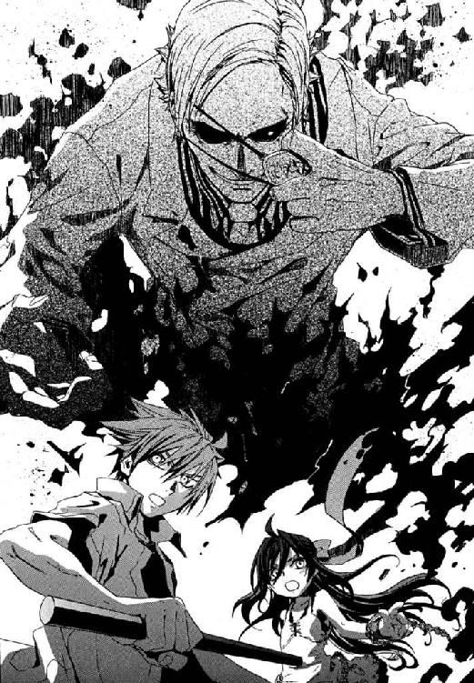
メイゼルが幸運だったのは、その冷静な個体が残ると、仁にもわかったことだった。
少女の絶望にかたまった顔が闇に覆われる直前で、仁は間に合った。世界を焦がす右手を、仁がねじこんだ《剣》が食い止めていた。ただの鉄棒のようなそれが、閃光をはなつプラズマの渦すら食い尽くした闇をせきとめていた。《万有の化身》に浸食されながら、神人遺物が無限に形成魔術を自動発動することで拮抗しているのだ。
右の眼窩から煤色の煙をあげ、王子護が人の悪い笑みを浮かべた。
「アア、そうデシタ......神人遺物は〝食べられない〟んデシタ」
仁にも、王子護の余裕の理由はわかっていた。メイゼルが魔法で熱してしまった床や、幅三メートルしかない道路をはさむ家々の壁が、赤熱して高温を保ったままだからだ。息もできないほどの熱気が仁に押し寄せていた。
蹴られた腰をかばい、ふたつに体を折り、メイゼルがあえいでいた。少女が崩れかけたプラズマ流の立て直しをあきらめ、すべて断片にちぎって地下都市へほうりなげた。閃光の霧雨に打たれて、急速に熱された石材が赤熱する。オーブンの中に入ったように地下空洞じゅうの気温があがりはじめていた。あんなにも寒かったこの地下都市が、まるで真夏だった。
「イイ判断デス。結局、そう処理するのが一番安全でショウ」
余裕をもって、王子護がメイゼルの魔法を採点していた。仁は、蒸し焼きにならずにすんだが、サウナに入ったような高温の中で汗みどろだった。
ようやく王子護の手が届かないところまで逃げてくれたメイゼルの、苦しそうな声が後ろから聞こえた。
「せんせ、自然現象じゃ突破できないなんて、誰に聞いたの？ 魔法消去しかないわけじゃないわ。......せんせ、だまされないで。せんせの〝先生〟だってことが、こいつの力なの。魔法使いとの戦い方をこいつに教わったとしても、〝先生〟は一万の知識の中にひとつだけ噓をまぜたっていいのよ」
王子護の右手と、仁の《剣》が、渾身の力で押し合っていた。このせっぱ詰まった決死の瞬間にも、彼女の声ははっきり耳に飛びこんできた。
「あたしなら、そのひとつだけの噓には、自分の殺しかたを選ぶわ」
王子護の笑いが、一瞬で薄っぺらく色あせた。少女のことばは、仁にとっては、静かな、だが天地がひっくり返るほどの衝撃だった。仁は、ようやく今ここに彼が立っている現実にいたる、様々なことを納得できた。
「せんせ、こいつは不死身なんかじゃない。これ、自分が傷付かない印象を、世界に引っ張りだして受け止めてる、ただの防御魔術だわ。でも、自分が傷付かない印象なんて、絶対に完璧に持ち続けられるはずないのよ。印象を魔法にしてそのまま防御したら、弱点がどこかに出るはずなの」
少女はまっすぐ立てず、その軽い足音もよろけていた。メイゼルも、もう限界だった。だが、絶望が、ひとつ、音高くひび割れ欠け落ちた。
「......この世界でも〝怪物〟には弱点があって、それを使われるとあっさり死んじゃったりするんでしょ？ それと同じよ。......せんせ、《三十六宮》の有名なお話、あたしが教えたげる。......完全大系の最高位魔導師、《魔王子》バレアルは、〝恐怖〟を知りたくなくて、自分が無敵な完全大系世界から一歩も出ないのよ。百年以上も、魔法が燃えるこの世界にいて、〝恐怖〟から自由でなんていられるはずがないわ」
仁は、わけのわからない衝動にかられて、思い切り白衣の魔人を押し返していた。
「くそっ、王子護ッ！ 王子護！」
背後にいる、顔の見えない彼女に感謝した。彼は確かに、何かから解放された気がしたのだ。仁がはじめて人を撃ったのは、八年前だった。そのときから、王子護に教わったことを土台に戦ってきた。仁に魔法使いとの戦い方を教えたのも、銃の撃ち方を教えたのも、専門家としての心得をたたきこんだのも、この王子護なのだ。
だから、武原仁は、〝悪い魔法使い〟に教えられたルールを疑う今、本当に自由になったような解放感に叫んでいた。ようやく彼の中の魔導師公館から本当に一歩踏み出した気がしたのだ。
「────ああ、そうか、そんなことか。──それなら、俺でも何とかなりそうだな」
だが〝悪い魔法使い〟は、悪びれもせずに「ああ、やっぱり早く殺しとくんデシタ」とため息をついた。
「ジン、君はぼくが、自分の弱点ナンテ、そのままにしとくほど甘いと思いますカ？ 世界でもっとも強いのは、〝恐怖〟を知って克服する者デス」
武原仁は、今日、王子護の未来の夢を聞いた。だから、彼の〝先生〟の恐怖を、九年のつきあいではじめてとらえられた。
「なに言ってやがる。......でかいことを口にするヤツは、結局は満たされるほど完璧じゃないんだ」
仁は、低いところを這いずり回ってきたから思う。完全に満ち足りた人間は、人生すべてを懸けるような強い夢は見ない。それは、もっと泥臭い何かのあらわれなのだ。
「おまえが世界を変えたいのは、夢じゃない。おまえが、今のこの世界がこわいからだ。だから、おまえはそれを克服するために、すっかり世界の形をかえてしまいたいんだ」
核爆発の〝太陽〟のまわりには、今も、数はわずかになったが妹の断片がただよっていた。舞花が命をかけるほど何を恐れて、何を夢見ていたか聞いてやりたかった。
「なにも恐れない人間に、そんなにも強い〝いつか〟は必要ない。そんなものがほしいのは弱くて〝恐い〟からだよ。......おまえは、『世界の誰もがカネで動く』と言った。でも、それだけじゃない。もっと多くの人間を、恐怖が動かすんだ」
彼に多くを教えた〝先生〟が、いつもどおりうさんくさい笑顔を顔面に貼り付けていた。その表情が、今はほんのすこし感情がかよって見えた。
「あいかわらず、ジンは前向きにネガティブですネ」
「......案外近くに、おまえを殺す、本当に恐いものはあるんじゃないのか？」
王子護は、いつも軽薄で、決して苦しみをおもてに出さない。今もそうだった。
取っかかりはできた。だが、〝悪い魔法使い〟は、もう遊びはなく本格的に仕留めにかかってくる。状況はまだ絶望的なままだ。これまでの攻防で、仁たちはもうボロボロだ。だが、王子護は噓以外まだ何も失っていないのだ。
仁はまぶたを閉じた。光量は落ちたが、薄いまぶたを透かしてその明るさははっきり観測できていた。それは、目を閉じても、魔法消去を発動したとき光を感じて〝太陽〟を破壊してしまうということだった。
だから仁は、今は鉄棒にすぎない《剣》を強くにぎった。ちいさな魔女が作ったプラズマ流の残滓で、地底の街は酷暑の夏よりなおひどい暑さだった。腕をたれ落ちる汗を見おろし、戦いのゆくえを見守る子どもたちの様子をたしかめた。子どもたちが、食い入るように仁たちの戦いを見守っていた。その視線に、こたえてやりたかった。
そして仁は、王子護の出方をうかがいながら、最後にちらりとメイゼルを振り返った。少女が、泥だらけの服の着崩れを直していた。仁は最近気づくようになった。彼女は、服を直すとき、かならず最初に指で服の肩の縫い目をつまんで、ちょこんと肩に合わせる。その仕草の後ろに、少女に故郷でそれを教えた親の、姿と情愛が見えるようだった。
「あたし、こいつの弱点、たぶん見つけたわ」
たぶん本当におしまいになるこのとき、メイゼルが彼女らしく胸を張っていた。
だから、大きく息を吸い、これが最良の選択だと覚悟を決めた。王子護は、大股で仁たちへとせまりつつある。
「それはこまりまシタ、アリューシャの姫。弱点なんて言われたら、もう君を片付けないといけまセン」
仁は、最後の未練に〝太陽〟を見あげた。妹の断片が、ほのかに輝いていた。
「いいや、おまえにそれはできない」
そして仁はうつむき、魔法消去を発動すると同時に黒刃を取り戻した《剣》で──────────彼自身の両目を切り裂いた────────────────────────────────────────────────────────────────
血と嗚咽が、仁の顔からしたたり落ちた。苦悶の声も頰を流れる温かく粘った液体も、両方が仁自身のものだった。
みずから目をつぶした彼は、魔法消去を発動しようが二度と〝太陽〟を見ることはない。肌が感じる〝太陽〟の熱などかきけすほど、メイゼルの焼いた通路が熱気をこもらせていた。すべては暗黒と激痛の中にあり、距離もかたちも失われた。あるのは記憶だけだ。
記憶していた間合いは一足一刀。
仁は迷いなく大きく踏みこみ、王子護を下段から切りあげた。
触覚の魔法消去が、王子護の防御魔術を魔炎に切り裂いた。ごりりと、もはや鉄棒ではない《剣》の刃が骨を断った手応えがあった。
王子護の足音が、水滴のように静かに落ちた。──背後へ一メートル。
仁は視力を失ったまま猛追する。さらに一刃、横なぎに払った。ただひとり傷ひとつ負わず、今日一日の糸を裏から引き続けた王子護が、血のはねを飛ばしていた。
「正気デすカ!?」
何も見えなかった。ただ、それでも音が、触覚が敵の位置をおぼろげに教えていた。
「このくらいで驚くなよ。俺は、守りたいものは守ってやる。おまえに教えられてたころ、なりたかったものに、今の俺はなったんだ」
ことばだけではなく、今の仁は、本当に無尽の暗闇へだって飛べた。
王子護が、おおげさにぼやいた。
「ぼくが想定してた可能性の中じゃ、これは最低から三番目デスよ。おかげでぼくは、役立たずのジンを片付けて、《協会》の魔法使いをいぶり出サないといけナイ。イメージから魔法を使う完全大系で、隠蔽魔術をやぶるの面倒なんデスよ」
大振りになった三発目は、空を切った。足音と生ぬるい気配が、仁のふところへと突っこんできた。
「おおおおおぁッ」
《剣》を持つ左手をとられて上体を崩されかけながら、仁は渾身の頭突きを見舞った。鼻柱がつぶれた鈍い感触がした。
「せんせ！ どうしてこんな？」
悲痛な声がした。メイゼルが涙のかかったような鼻声になっていた。
仁には、王子護の弱点を見つけたという少女が、何をしているかはわからなかった。今の仁が感覚した途端に魔法消去してしまうのだろうから、わからなくてよかったと思った。
「まかせろ」
しゃべろうとして顔の筋肉を動かしただけで、みずから割った目が痛んだ。世界はどこまでも暗闇だが、すくなくともこの瞬間、迷い道ではなかった。
「そこまでする必要なかったでショ？ ジンと、アリューシャの娘には、生き残る道、示シタつもりなんだけどネ」
王子護が示したのは、この怪物なりの道理だった。この軽薄な中年男の言うことは全部噓だ。それでも、魔法消去と引き替えに、メイゼルだけでなく地下の子どもたちを連れて逃げられるよう交渉する余地はあった。王子護は、仁の能力とあつかいやすさを評価していた。さっきまでの戦闘自体が、その《魂を買う硬貨》で仁からどう条件を引き出すかという交渉だったかもしれない。
それでも仁は、王子護に魂を売ってメイゼルたちの安全を買いたくなかった。応じれば何度でも同じ手段で仁とメイゼルは脅され、利用され尽くすからだ。そして、一度折れれば二度と取り戻せないものがあるように思えたからだ。
「利口な理屈は、何をやったってとりあえずはつけられる。でも、理に合わないものは理に合わないんだよ。この世にはたぶん本物の〝悪〟があるんだ」
仁は、ひどく観念的なそのことばを言い切った。
血を流す喪われた目から、熱い涙がこぼれていた。いつまでも、いつまでも止まらなかった。仁自身のため、彼がこれまで救い切れなかったもののために、彼は静かに吼えた。
「今日、この街で俺たちがやったことは、利害だけで片付けたらダメなんだ。自分のために、罪のない者を踏みつぶすのは悪だ。......〝悪〟は、これに関わった誰かが精算しなくちゃいけない」
だから──助けてやると。
現実の光景を、仁のつぶれた目は二度と映さない。ただ、古い思い出の風景に彼はいた。妹が元気に外で遊べたころの、仁自身がちいさなころの、何も知らずに近所を駆けていた風景だ。そして、十崎家の食卓だ。彼の中に息づく、理に合わないおとぎ話だ。
「それが〝悪〟なんて、どこの一線から区別できるんデス？ 甲斐性なしの君ヨリ、ぼく、いっぱいの人をしあわせにしマスよ」
〝先生〟の手元で、かすかに風を切る音が聞こえた。技倆で彼にまさる王子護が、仁と斬り合うために、魔法でカードに封印してよく隠し持つ細身の剣を出したのだとわかった。
抜けるような軽い斬撃の音に、仁は《剣》を合わせた。
「〝悪〟が映るとしたら、理屈がわからなくて当たり前の、子どもの目じゃないか。それが正しいとはかぎらないが、俺たちおとながそこを見捨てたらマズいんじゃないのか」
「がんばれ！」
「ガンバレ」
地面の低いところで、一面の花が咲くように、子どもたちの声が響いた。
「たすけて！」
「やっつけて！」
暗闇に、光がともったかのようだった。
仁は、背中に守る子どもたちに、はじめて応援を受けていたのだ。
何も見えないのにここがあかるい場所に思えた。
「がんばれ」
長い間、暗闇で戦ってきた彼のうちに、地底の子どもたちの声援が満ちてゆくようだった。
「ガンバレ」と、「負けるな」と、せまい地下に反響する。
仁が救ってやりたいと願うメイゼルが、万感の思いのこもった声で、彼を呼んだ。
「............せんせ、勝って！」
だから仁は、暑すぎる街路をまた一歩踏み出す。
刃を鳴らすことで剣筋を察知されないように、王子護が突きこんできた。仁は、まったく見えないそれが、《剣》を持つ左手を正確に狙っていると、不思議と悟れた。
カチリと刃が打ち合った音が鳴り、王子護の緊張が刃をとおした感覚で伝わってきた。
「がんばって」「やっちまえ」「がんばれ！」「勝て」「がんばれ」「ガンバレ」「負けないで」「行け！」「がんばれ」「がんばれ」「助けて」「がんばれ」「かって」「かたきをとって」「ガンバレ」「お願い」「おとうさんのかたきをとって」「たのむよ」「がんばれ！」「やっつけて！」「そこだ」「たすけてよ」「勝って」「がんばれ！」「がんばって」「がんばれ」「ガンバレ」「がんばれ」
子どもなりの怒りもあった。それでもあどけない声は、熱いうねりに仁を包んでいた。
すべて世界は激励に満たされるかのようで、仁は体の痛みも苦しみも、ひとときだけ忘れた。
「うるさいデスね」
王子護が、ため息をついた。魔法消去で魔炎に燃えるから、〝怪物〟はもはや魔法で子どもたちの口もふさぐこともできない。
「がんばれ」「がんばれ」「がんばれ」「がんばれ」「がんばれ！」「がんばれ！」「がんばれ」「がんばれ」「がんばれ」「がんばれ」「がんばれ！」「がんばれ」「勝って！」「がんばれ」
「あっ」
歓声の中、完全魔導師の子、モーリッツだけが、短い悲鳴をあげた。仁は、そうして間接的に、同じ完全魔導師だけに察知できる王子護の魔法を感覚した。
仁は、《剣》の黒刃で、足もとの地面を切り裂くように引きずりつつ走る。刃が石材をひっかく音が、感知しにくい床に王子護が魔法を仕込んでいた場合、それを切り裂くことになる。
その選択が正しかったのだと、仁は子どもたちのどよめきで知った。きっと魔法を破壊したあかしである、魔炎があがったのだ。
反応しきれなかった王子護を、黒刃がもう一度とらえた。追撃の打ちこみは、たくみな剣技で勢いを殺された。予想外だったのだろう〝先生〟の驚きが、刃先のほんのわずかな震えにあらわれていた。
「キミ、本当に魔法消去を作動しっぱなしデスよね？」
そのとき、はだかんぼうの錬金魔導師の子、ピンパーネルの声だけが不自然にとぎれた。モノとモノの〝境界〟に《魔力》をみいだす魔法使いが、敏感に反応するとすれば、王子護の剣の表面か、服の表面か。
ことばを弄して聴覚に注意を向けてくる王子護の、剣を流して滑らせ、仁は流れるまま肩をたたきつける体当たりを打ちこんだ。
彼は、高校時代、八咬誠志郎と一緒に、よくこの地下で訓練を受けた。暗闇の中で、何度も死にかけた。その記憶の風景では一度も聞いたことがない、王子護の苦悶のうめきが、無明の闇に漏れた。
「おまえには、見えない世界があるんだ」
今、仁の〝目〟は、彼自身のものではなかった。様々な魔法大系の魔法使いである子どもたちが、そのときはっと息をのみ、あるいはおびえる。その歓声の乱れを〝目〟のかわりに、仁自身の感覚と経験であたりをつけているだけだ。
人のつながりが、いっそう無力になったはずの盲目の彼を、支えてくれていた。
きずなもそばにいっしょにいる気がした。ピエトロとナーディアは兄妹で、モーリッツ、ヒルデ、ゼルマ、あのはだかんぼがピンパーネル、ロイ、マーリオ、セルゲイ、ポリーナ、アーチー、シャロン──子どもたちのことを教えてくれたのはきずなだった。
「がんばれ」「がんばれ」「がんばれ」「ガンバレ」「がんばれ」「がんばれ」「たすけて」「がんばれ」「がんばれ」「負けるな」「がんばれ」「がんばれ」「がんばれ」「がんばれ」「負けるな！」「がんばれ」「がんばれ！」「がんばれ」「がんばれ」「がんばれ」「がんばれ！」「がんばれ」「がんばれ」「がんばれ」
彼自身が築いてきたものを、仁はすべてぶつける。子どもたちが声援をくれる。
地上にいながら空を飛んでいるような、奇妙な浮遊感を、仁は覚えていた。何も見えないからこそ、眼球の激痛も、無明の闇もやさしく感じた。
仁の鼻は、〝悪い魔法使い〟に流れる血の臭いを感じた。王子護も傷だらけだった。
「ジン、君はどこまでも、ありもしないモノを追いかけるつもりなのデスね？」
周囲はおさないのどを振り絞った喝采の嵐になっていた。すべてが声にのまれるようなその感覚を、仁は奇蹟のようだと思った。
「このくらいで驚くなよ。俺がなりたかった俺は、それでも、どんなことがあっても大事に思う人を助けてやるんだよ」
仁は、真っ暗闇の向こうで、王子護が笑ったような気がした。それは彼らだけのささやかな卒業式のような、さびしい気配を帯びた沈黙だった。
その何かが決定的に終わったようなおだやかな時間を、メイゼルの悲鳴が引き裂いた。
「せんせ、魔法消去切って！ 今すぐ!!」
仁は、せっぱ詰まった声に反応して、思わず飛び退きつつ消去を停止する。
切り裂かれつぶれた彼の眼球すら透かして、強すぎる光が網膜に焼き付いた。目は見えなくとも、その音と大気の振動が、ただごとならざる事態を告げていた。
巨大なものが、仁のすぐそば、ちょうど王子護の頭上に落下した。ただその大きさと光、その内に秘めた爆発的な力の気配があった。子どもたちの声すらも消えていた。それが、魔法消去を切っても視力が回復するはずもない彼に、感じ取れるすべてだった。
それでも仁はほうけたように立ち尽くすしかなかった。地下空洞に、これほど巨大で明るいものは、核爆発の〝太陽〟しかなかったからだ。
都市中心部から、メイゼルが、熱と圧力の巨大なかたまりを魔法で引き寄せ、その太陽のハンマーを王子護にたたきつけたのだ。
核爆発の封印の内側では、熱と圧力のため、物質は高温プラズマになってしまう。電子を魔力として制御する円環魔導師は、この火球を引き寄せる作業にうってつけだった。そして《破滅の化身》で魔法使い本人が増える円環大系だからこそ、何人ものメイゼルで協力して、途方もない精密作業をやり遂げられた。単純な技術では、《天使の輪》のプラズマ流の制御のほうが難度が高いのかもしれなかった。だが仁は、核の怖さを小学校でも学ぶ日本人だからこそ、それを魔法で操りたたきつけた事実に気が遠くなった。
《天使の輪》にすら耐え抜いた王子護が、足もとで苦悶の声をあげた。封印されたままの核爆発に押しつぶされ、都市の床にめりこんでいるのだ。怪物が、脱出どころか防御すらしきれない。核が王子護ハウゼンの弱点だったからだ。
「弱点は〝太陽〟なんて、怪物にはできすぎだよ。そう簡単にはバレないわけだ」
「〝恐怖〟ってのはやっかいデスよ。半分以上威力が逃げた核分裂爆弾ナンテ、純粋なエネルギーじゃ《天使の輪》よりちいさいはずなんだけどネ」
こんなときでも、この長寿の中年男は軽薄だった。封印表面から漏れる高温に肉が焦がされる異臭がただよっていた。仁たちのいる床までもが、高熱で徐々に溶けだしていた。このままなら、地下都市の床に熱で穴があき、その下へ王子護は墜落することになる。
明治から百年もこの国を見続けてきた王子護自身が言ったことだ。彼は、六十年前に終わった戦争で核爆弾にへし折られて、〝道具〟へと生き方の方向を変えたのだ。〝魔法使い〟が道具と科学の新時代をひらこうとしたのも、恐怖を克服するためだったかと、仁はふと感傷にとらわれた。
「国城田と手を組んだときに、気づいとけよ。おまえ、この国に長くいすぎて、日本人になってたんだ」
すくなくとも王子護は、最後まで、国城田の核テロ自体へはちょっかいを出さなかった。
こういうとき、軽薄な面の怪物は、いつも帽子のつばで顔をかくす。だが、白い帽子はとっくに燃えてしまったから、ひどくばつの悪い顔をしているのだろうと思った。
「──ジン、目上の人間に、そういうデリカシーのないこと、気楽に言うもんじゃありマセンよ」
ずぶりと、嫌な音がした。落ちた〝太陽〟は地面を焼き、そばに立つことも耐えがたくなっていた。闇の中、ほのかな体温が仁のそばに寄り添った。そして、仁の手に指をからめるように握ってきた。目は見えなくても、その感触でメイゼルだとわかった。円環魔導師であるメイゼルは熱の制御を得意とし、熱をさえぎることは得意分野のひとつだ。だが、少女はやけどしそうな地底の太陽のそばから動かなかった。
「王子護──」
仁のことばを、〝悪い魔法使い〟はさえぎった。そして、舞台を降りる《魔術師》は、別れのあいさつを、泣き言ではなく彼流の冗句で締めくくった。
「誇りなサイ。古いおとぎ話でもそうでショウ。〝魔法使い〟を打ち破るのは、いつだって勇気なんですヨ」
そして地底の太陽の気配は、怪物を道連れに消えた。都市の地面に穴を穿って落下したのだ。どこまで続くともしれない、この世界の人間がまだ知らない奈落へと────。
†
仁は、明けない闇の中、メイゼルのものではない男の声を聞いた。
「......これは、さすがに《魔術師》王子護といえど死んだだろう。いや、これで生きていられてはこまる」
彼はその声を知っていた。《協会》の調整官、ベルニッチだった。そして、この男が地下都市にいる理由を、仁はひとつしか思いつかなかった。魔導師公館と魔法使いたちのなかだちをつとめるこの男が、殺されようとしていた《協会》反主流派なのだ。そしてそれは、メイゼルの命を救ってくれたのも、ベルニッチだということだった。
「さっきのは、メイゼルひとりじゃなくて、おまえも手を貸してくれたか。......核爆発を封印してた、表面の水の球の部分は、おまえらが自分で引っぺがすのが一番効率がいいな」
「そういうことだ。魔法に見捨てられた蛮人どもは忘れているようだが、我々にも気概はある。悪鬼ごときが、みくびらないでもらいたいものだな」
嫌味で返されて、仁は苦笑した。バベル事件のとき瀕死の仁の命を救ったのも、この高位魔導師だった。
「ひさしぶりだな、ベルニッチ。このザマで、顔が見れないのが残念だよ」
仁は、戦いの興奮が抜けると、激痛と不安で立っているのもつらかった。目が見えないことが、こわくてたまらなかった。角顔であごひげをはやしたこの男が、どんな面をして今ここに立っているか興味があった。それ以上に、王子護が死んだのなら人を殺してしまったことになるちいさな魔女のことを、仁はみてやらねばならなかったからだ。
「協力してもらったついでに、メイゼルがどんな様子か教えてくれないか。......あと、無料とは言わないから、これから俺が《公館》にいられないかわりに、たまにでいいからメイゼルを気に懸けてやってくれたら助かる」
厚かましいと思いながら、仁はベルニッチに頭を下げていた。頼み事をするたびに、将来を考えると不安になった。この戦いに勝つために必要だったとはいえ、目までつぶしたのはさすがに思い切りがよすぎた。
仁がここまでやれたのは、一昨日の刻印魔導師収容所の襲撃事件についての、《茨姫》オルガの報告書類を見たからだ。そこには軍医クレメンスが、つぶれた両目を魔法で治癒した記述があった。それでも、視力がどの程度回復したかまで確認したわけではない。そもそも、逃避行でクレメンスが戦死した可能性もあるのだ。
「ふむ────」
ベルニッチの気配が、頭をさげた彼の真っ正面にあった。仁がみずから眼球を切り裂いた眼窩には、あふれた血が乾いてかたまっている。なのに彼は、めしいたはずの目で、ほの白く光る骨張った手を見た。
「アリューシャの娘の命を救っただけで、私の義理は十分に果たしている。悪名高い《沈黙》殿の治療をするいわれはないのだがな......」
激痛がにぶいうずきへと鎮火していった。ベルニッチの使う精霊大系は、自分自身という枠があいまいな世界で発達した魔術だ。だから高位の精霊魔導師は、生命精霊としてみずから生きていること自体を、治癒精霊として正常な身体秩序を、他人にわけあたえられる。
「......一時間ほど、魔法消去は使わないことだな」
「義理は返す」
「せいぜい高く返してもらおう。その腐れかけた右腕を出せ、《悪鬼》。ついでに、もうひとつ高い貸しを作ってくれる」
仁は、魔法使いの義理は本当に高くつくと知っていた。それでも、今日このときのめぐり合わせに、心の底から感謝するよりなかった。
「それと、あの変態娘の面倒は、貴様が見ることだ。《三十六宮》たる最高位魔導師《九位》は、あの娘を意識しているようだぞ。私は、関わり合いになりたくないがな」
仁は、鈍い熱としびれが残る右手を強く握った。重い銃を手に提げているだけで限界だった右手に、握力が戻っていた。
「さあ──目を開けたまえ」
そして、倉本きずなは目を開き、魔法へと向けていた感覚を引き戻した。
そこは古い地下鉄の駅だった。魔法のあかりをともした駅のホームには、これから彼女たちが乗る黄色い電車が引き出されてきていた。今は、一両にとてものれる人数ではないから、百人以上の避難民のため合計三両の車両を連結する作業中だった。地下都市から避難してきた人々は、殺風景な駅舎や線路、ホームといたるところにあふれていた。そして、それぞれに無事をよろこびあい、いなくなった者のことを心配した。
駅舎のそばにいた彼女の服を、クラスメートの神和瑞希がつまんで引っ張っていた。
「......きずなは、............自分の...魔法、......自分のため...だけ......使う......」
きずなは、戦争が終わったころ一度姿を消した再演大系の魔法を使える。魔法では、ふつうは観測者たる同じ人間に直接奇蹟を影響させるのが一番難しい。再演大系は、逆に魔法がほぼ人間だけにはたらく唯一の例外だった。そんな知識が、きずなの中に、いつの間にかはいっていた。
きずなは、はりつけになった瑞希の体を操作して、友だち自身の体から槍を引き抜いた。操った者から限界以上の力を引き出す《光輝ある破滅》で、身を守った。おとなになった未来のきずな自身から引き寄せられた。この地下で、きずなは魔法使いとして急速に成長した。魔法を消去するこの世界の人々がいない場所にはいったとたん、振り返ってみると不気味なほど様々なことがあった。
「ありがとう。でも、みんなあんなにがんばったんだから、わたしだって、できることはしてあげたいかなって」
今も、きずなは、武原仁のことが心配になって魔法で《三十秒過去の地下空洞》の様子をのぞいたところだった。そして、武原仁のため再演魔術を使ってしまった。
友だちの瑞希は、彼女のことを、崖のそばで遊ぶ子どもでも見るようにハラハラと見守っている。だから、きずなは心配ないと笑いかける。
「わたし、魔法で、ケガを治しただけだし。......それは、他の魔法を使う魔法使いのみんなもやってることだから、だいじょうぶだと思うんだ」
きずなは、それでも満足していた。彼女が再演魔術をとおして見た仁は、その両の眼球があるべき位置が血みどろだったからだ。彼の目はつぶれ、視力を失っていた。彼の右腕の骨と筋肉には、直径五センチを超える大きな腫瘍が食いこんでいた。顔も真っ青で、口を半開きにしてあえぎ、力を出し尽くしたように立ち尽くしていたのだ。
だから仁の目と右腕をなおすため、彼女が魔法を使うのは当たり前だと思った。
「再演大系の......概念魔術は............あぶない...。......概念魔術が、......結果を世界に押しつけて...原因を逆算する............の、再演魔術だと......たいへんなことに......なる」
きずなが魔法で仁を治そうとすると、その場で適切な能力を持っていた高位魔導師、ベルニッチがかわりにそうした。奇蹟の力が魔法使いを伝って世界に作用する再演大系では、概念魔術は、人を動かして意志を達成させるのだ。
きずなの前を、背筋をのばす力もないステッラがさまよっていた。
「だれかナーディアを知らないかい？ ピエトロは？ 姿がないんだよ」
医師クレメンスは冷静に、しかし執拗に人に聞いて回っていた。
「うちの息子を見なかったか」
そんな光景が、駅舎でも鉄路の上でも繰り広げられていた。友だちが、もう関わるなとばかりに首を横に振った。
「......気にしなくて......いい............」
人々は、武原仁を待っていた。仁が、地上の日本政府、《公館》と交渉する役だからだ。
「あんな男を信用したからだ。......あの男に、なにができる」
ベルナーと何人かのおとなたちは、憎悪をまき散らし続けていた。人々は、十人もの子どもたちがいなくなったことを、なんとかあきらめようとしていた。
きずなをここまで守ってきてくれた瑞希が、まだ憂い顔だった。
「......きずなは......魔法を......自分の...ため...だけに......使う。でないと、......きずなは............誰よりも......かわいそう......に......なる......」
そして、百人を超える被災者の中で、再演魔導師のきずなの目にだけそれは映った。
世界の裏側にあった何かが、ダムが決壊でもしたみたいに、突然何百兆というガラスの滝を作って崩れたのだ。そのガラス片の一枚一枚に、しあわせな家族の団らんが、悲しい事故や誤解が、生まれてくる赤ん坊や死にゆく病人が映っていた。何万何億人の姿を宿して、そのかけらは、万華鏡のように千変万化の相を見せた。
そのままそれは、きずな以外の誰にも気づかれることなく、消え去った。再演魔導師であるきずなだけが、それが何だったか判別できた。ガラス片の一枚一枚、すべてが、彼女たちの〝未来〟にそうなる可能性だった。
思い思いに未来へ不安をのぞかせる避難民の中、きずなは膝から力が抜けて立っていられなくなった。その場にしゃがみこもうとしたら、三日おふろにはいらなくても体臭のない友だちが、腰掛けるところを探してくれた。
「......きずな............きずな？」
あの未来のかけらの一枚に、きずな自身が映っていた。
それは何年か後の、十崎家でも武原仁のアパートでもない、日の当たる家の光景だった。使いやすそうな台所には、今よりすこしおとなになって化粧をしたきずながいた。テーブルには、瑞希がいて仁がいた。けれど、その世界にはメイゼルがいなかった。未来のきずなは、お母さんみたいにやさしく微笑んでいた。地下に誘拐されてきた一番不安だったとき、こんな魔法使いになりたいと思った理想のきずなが、勇気づけてくれた。おとなになった彼女は、「好きなようにしていいんだよ」と励ましてくれた。けれどその未来で、仁の右手は、肘から先がなく、かわりに義手をつけていた。
砕け散ったのは、そんな〝未来〟だった。再演大系の概念魔術は、ベルニッチを操って仁を治したのではなかった。魔法は、武原仁が治癒してもらえない可能性が実現した世界を、すべて破棄したのだ。だから、本来あるべきだった未来は砕けた。
きずなは、寒気がして止まらなかった。きずなの魔法で未来がひとつ壊れたことを、その未来でしあわせだった人は許してくれるだろうかと、こわくてたまらなかった。
「どうしてこんな簡単にこわれるのかな......。もしも、この魔法を使えたのがメイゼルちゃんだったら、どうしたのかな？ もっと、後悔なんてしなくていいようなすごい答えが、メイゼルちゃんなら見つかったのかな？」
「きずなの......魔法は、............だれも......正しく............使えない...から......」
魔法がおとぎ話なら、きずなに与えられたそれはあたたかく、なぜか底冷えするものだった。
だから、きずなは精いっぱいに明るい表情をつくって、立ちあがった。
「......あ、あの、みなさん！ さっき魔法で見たんですけど、武原さんも、ピエトロ君たちもみんな無事でしたよ！」
きずなは笑顔を作って、みんなにいいニュースを持って行く。もちろん、彼女自身が楽しいことをわけてもらいたかったのだ。
「本当だね！ あんた、本当に見たんだね」
「はい、ナーディアちゃんも、みんな無事です」
すがりつくようにしがみついてきたステッラが、きずなをものすごい力で揺さぶった。子どもを待つ母親たちが、父親たちが、押し寄せてきた。どっと沸いた地下の人々にもみくちゃにされて、きずなは恐怖をひととき忘れた。
きずなは、魔法使いとこの世界が手を繫ぎあえる未来が、ここの先にあると思いこんだ。そうしないと、笑わないと彼女には無限の後悔がすでに用意されていたからだ。
地下都市ではじまったもうひとつの戦いは、当事者のほか誰にも知られず終結した。
追放騎士エレオノール・ナガンと、リュリュたち機械化聖騎士隊の戦闘は、王子護ハウゼンが〝太陽〟につぶされる数分前に決着した。接近戦で圧倒的な強さを誇るエレオノールとの正面激突に、リュリュたちは見切りをつけた。地下空洞から機動力を生かして南側通路に侵入し、都市住民を守りたいエレオノールを焦らせようとしたのだ。
それは客観的に言えば、逃げる騎士隊を歌姫が追い詰めて仕留めた、一方的な戦いだった。
エレオノールは、血だまりに倒れた騎士隊を見おろした。誰も致命傷を負っていないことを確認し、安心した。彼女には、余計な声をかけない情があった。
気が済まなかったのは、むしろ敗者だった。リュリュは、白金色の髪を血に染め、暗い通路の壁によりかかり、あえいでいた。
まだ十六歳の少女が、失血に青ざめた顔で告げた。
「命を奪ってください」
エレオノールには、枢機卿の娘であるリュリュの、命を試すような潔癖さがなつかしかった。
「リュリュ。私を殺めるつもりで剣を向けたのですね。......あなたの決意は正しいのです」
彼女を姉と慕った、人なつっこい少女が、目にいっぱいに涙を浮かべていた。すぐに無理をしてしまうリュリュが、力が足りないことを泣いた。かつてエレオノールの騎士隊でリュリュが初陣を飾ったとき、戦場の気にのまれて何もできなかったときと同じだった。
「《神》があらゆるものを救うとは、仇敵たる《協会》も救われるということ。それは、この神なき世界を救う、神聖騎士団の一万年の戦いへの否定です。リュリュは、聖騎士の大義に忠実でした」
「......お姉様。......私には、あなたがわかりません」
エレオノールは、きっと死ぬべきだった再演のバベルから運命にもてあそばれ続けた。だからこそ今生きている意味を渇仰し続けている。
「おおきな正義のためには、犠牲がかならず出ます。ですが、人である素晴らしさや情けなさを否定して戦うことは、本当に神意にかなっているでしょうか？」
エレオノールのうちに、この地下迷宮での、わずか数日前の戦いの記憶が駆けめぐる。それは、彼女にとっては全身が熱くなるほどの羞恥の経験だった。
「私は、ただ一度、神意ではなくただ人間として憎しみに目がくらんで剣を抜きました。かけがえのない仲間を奪った敵を斃して命を絶とうとしたのです」
血の臭いがする暗闇に、少女の嗚咽が響いた。リュリュはかつてのエレオノール隊の、彼女自身をのぞいては唯一の生き残りなのだ。
「ニコライ様たちが亡くなった、かたきをうとうとなさったのですか」
「けれどリュリュ、そんな愚かだった私のことばすら、神はひとことものがさずお聞きになっていたのです......」
エレオノールは、神意に透明な剣ではなく、彼女自身がおろかな人間だと思い知らされたからこそ感じる。傷つきすりきれきったからこそ、確信するのだ。
「祈って救われないことはないのです。すべてを救う神は、それでもいたまうのです」
けれど、若く血気盛んなリュリュの渇仰は、エレオノールとは別の方向を向いていた。少女騎士は、ただあわれむように彼女へと目を向けたのだ。
心に幾多の傷を刻んだエレオノールは、胸にたたえた愛情を、どうかたちにしてよいかわからなかった。だから、結局生きよと言うしかなかった。
「私がいつか斃れたとしても、あなたは泣くことはありません。誰にとっても、みずからを問い直すとき、戦いはもっとも激烈です。それでも、私はその荒れ野を生きて、心を神から離さず戦い続けることでしょう」
リュリュの手甲から、ついに剣が落ちた。止まらない涙をぬぐうように、あどけない頰を押さえていた。
「......お姉様は、神聖騎士団を去って、どうなさるつもりなのですか？ 神聖騎士団百万騎に、大義にそむいた異端として追われるのですよ」
エレオノールは、重大な聖務のさまたげとなったことで、反逆者として追われる。そして彼女は、今や、神聖騎士団の大義へ疑問を突きつけた異端者でもあった。だから、純粋な騎士たちに憎まれ、世知にたけた騎士には政治的な敵として邪魔にされる。それでもエレオノールの答えは、もう決まっていた。
そして彼女は、たぶん、その答えを、今や彼女の騎士隊唯一の生き残りであるリュリュに聞いてほしかった。
「リュリュ。神は生命を愛していると、私は信じ、ここに誓います。私は、生命のために戦う、ただひとりの騎士団となりましょう」
かくして一万年の闘争を受け継ぐ神聖騎士団から、ただ一本の剣は離れた。
それは静かな、かつて神意に透明だと賞賛された騎士の、破滅につながる新しい誓いだった。
自己の問い直しだったのは、三十年以上も前、学生闘争のうねりの中でさかんにおこなわれた総括も同じだ。テロリスト国城田義一がみずからを見定めたのは、大学生だったその時代だった。
彼が学生だった七〇年代はじめ、終戦の痛手から、この国は経済大国へ駆けあがりつつあった。そして我が身を振り返る時期だった。国城田たちは、その波にもまれながら、社会をもっと平等で自由で平和にしようとした。そして遠い目的地へ向かう出発点で、手を取り合いそこねた。国城田たちは、みずからを問い直すはげしい同士討ちに突入したのだ。
今、五十代になった国城田は、核爆弾のスイッチを押そうとしていた。早朝に彼が出した二度目の檄文から、半日が過ぎた。彼がひそむ地下室にもラジオの電波は入った。そこからわかる範囲で、この国は、おのずから変わる気配はまったくなかった。
そうなることはわかっていた。だから国城田は、時間になれば必要な音声ファイルがネットワーク経由で流れるよう、犯行声明をしかけておいたのだ。
〈わたしは、君たちがまったく変化を起こすことがなかったことに失望している。そして怒っている。この世界には〝悪〟がある。それを放置すれば圧倒的な現実の前に、正義は破綻する。だから悪を放置する君たち自身も〝悪〟なのだ。
わたしは、今、君たちとわたしのこの国へ向けた《国を殺す弾丸》の引き金を引くことに、いささかのためらいもない。わたしが撃つ《弾丸》とは、核爆弾である。今日の午後八時、この日本の首都は核の惨禍にみまわれる。もう一度、この国は瓦礫からやりなおすのだ〉
それは、東京と日本へ向けた別れのあいさつであり、死刑執行の通達だった。
この地下壕で国城田を護衛していた少女、アナスタシアが、核爆弾を積んだ黄色い車両から顔を出した。ここにたどりつく可能性があったのは学生時代の後輩だった寒川くらいだから、用心しすぎではあった。
「クニキダ、......レールを敷くの、手伝って。六時には出れる」
アナスタシアたちが米軍基地から奪取した魔法起爆式の核爆弾は、ここにはない。かわりに王子護は、彼にも起爆できる普通の核爆弾を置いていった。それはワイズマンがどこからか用立ててきた、国城田が出所を知らない核だった。
彼は、地下壕の隅に置かれていた枕木を一本抱え上げた。それだけで、若かったころは想像もしなかったほど弱くなった腰に、ずしりと響いた。
「......嬢ちゃんは、〝悪〟ってのはどんなものだと思う？」
労働のつらさから気をそらす国城田の軽口に、狙撃手の少女は首をかしげた。そして、考えながら答えた。
「............〝悪〟は、狙いをつけるのが、むずかしい。......ひとりで悪を見ると視野にはいらない。でも、みんなで見ると意見が合わない」
国城田は、アナスタシアの、一般論で問題を片付けないところを好ましく思っていた。だから、彼のテロの巻き添えでこの少女が死ぬことを、悲しんだ。
「おおきい敵をぶち壊す戦いで、完璧に正しくあるのは無理だ。おおきな〝悪〟が広げた手は、どえらい数の人間と手をつないでて、そこにかならず善人が交じってるからな。──だが、それでも〝悪〟は、悪なんだよ。容赦しちゃなンねえな」
彼は、三十年以上もテロリストとしてまわった、世界中の風景を思い出す。日本の再興の時代にうまれた国城田は、廃墟から抜けだそうという戦いに共感した。彼がおさないころ、日本にも、活気にあふれた人と同じくらいたくさん、おかしなおとながいた。むき出しの〝悪〟が、そこかしこにあった。すべては、戦争に端を発するあいまいで巨大な悪につながっているようだった。
「ちいさい悪は、どうするの？」
アナスタシアが、ちびた鉛筆のようなライフル弾を弾倉につめていた。これが彼自身の最後の時間だと思うと饒舌になっていた。
「〝悪〟ってのは、でかいんだ。ちいさな悪なんて、簡単に言うやつを信用するな。ちいさい〝悪〟も、荷担するやつが多すぎるから、すぐにつながって大きくなる。自分の〝悪〟がちいさいと思いたいやつが、そのことばを使うんだ」
国城田は、たばこに火をつけ、彼の道を振り返った。そして、もうすぐ核爆発で彼の人生も終わるから、ひどくバカバカしいことを考えた。テロリストとして日本を出る直前に見た、あのヒーロの物語なら、彼は正義を守る殉教者の列に入っているだろうか。それとも漠然とした悪、〝ショッカー〟のほうだろうか、と。
雑音のひどいラジオからは、地上の様子がニュースとして流れてきていた。警察は、国城田の宣言を扇動であると断言し、冷静な行動を求めていた。だが、地下鉄路線でワイズマンと争ってきた警察は、総動員で警戒せずにいられなかった。その矛盾が、市民たちから丸見えだった。
どのみち、人々は、事実ではなく信じたいことを信じる。だから恐怖は伝染する。
ラジオ放送の中で、コメンテーターが国城田に怒り狂っていた。どのチャンネルにラジオを合わせても、誰もが怒っていた。
国城田は、この国を腐らせた中枢を巻きこんで、間違ってしまった世界をやりなおすのだと思った。腐った頭さえ取りのければ、正しい怒りを抱いて、世界を平和にしてくれる人材が現れると信じた。悪を放置することを恐怖する時代が、おとずれると夢想した。だが、国城田は、ついに気づかなかった。悪い子をおしおきする〝なまはげ〟の秩序で、一億人の生活を守る国家は運営できない。古い体制から解放すれば人間がよいものになるという考えこそ、若者がおとなになるとき卒業すべき夢物語だった。
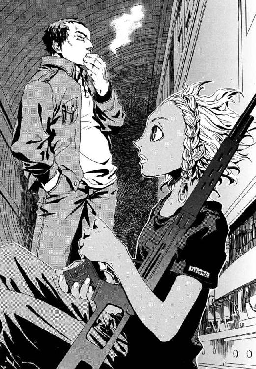
国城田は、中年太りの腹を締め付けるベルトに固定した、起爆用のリモコンをたしかめた。
「こいつを押せば、核は爆発するんだな？ もしもこいつが効かなかった場合は、非常スイッチはどこになるんだ」
地下鉄車両にアナスタシアがよじのぼり、そこに積まれた黒い大きな箱を指し示した。その左上隅の金属製のカバーをずらすと、そこには赤いボタンがあった。
「......ここのカバーを外して、ボタンを押す。でも、すぐ爆発するから、自分も死ぬ」
今も日本人である国城田は、これから最悪の同士討ちをはじめる。
ふと、大学時代の昔の仲間──ガチケンや石原、そして寒川は、東京にいるだろうかと思った。彼らには、国城田の声がわかったはずだった。
警察に、すくなくとも自己を問い直す必要はなかった。治安機関が守るべきものが、切実な今日の安全であることは、疑いようがなかったからだ。
かつて国城田の友であったガチケン──清水健太郎は、今は警察庁の警備局副局長だ。警察庁の合同庁舎で、彼らは国城田との最後の勝負を迎えようとしていた。警備局長龍堂巌と副局長である清水には、公安警察を指揮する身として、事態を収拾する責任があった。
清水は、あがってきた書類をめくった。最高警備本部で行われた会議の結果、警察はテロと全面対決の姿勢をとっている。だが、だからこそ国城田のメッセージで事態は急を告げた。
「国城田の台所事情も楽ではないはずだ。警察を惑乱させようとしてきたヤツの戦い方自体が、自由になる戦力のとぼしさを示している」
清水は、もっと事態が悪化する可能性があったと考えていた。国城田は、檄文や犯行声明による挑発で市民の蜂起をうながした。ここで国城田がさらなる派手な事件を起こしていれば、警察は市民の信頼を失い機能を麻痺させていた。それがなかったのは、ただ戦力がなかったと判断しているのだ。
執務机に座った龍堂巌が、刻んだその深いしわをゆがめた。彼は、腹を決めるべきときをむかえていた。
「決定的な核爆発を国城田がどこで起こすかだな。問題はその位置だ」
そして清水は、局長室に呼ばれたもうひとりの人物に目をやった。軽めの銅色に髪を染めた、若い女性だった。美人だが、どうしても印象の鋭さばかりが印象に残ってしまう。魔導師公館の事務官、十崎京香はそういう人物だ。
龍堂は、立場では大きく隔たったその十崎京香を、威圧するようにたずねた。
「蓮寺貞時なる人物について、君は知っているだろう」
魔導師公館の、過激な仕事を管理する若手官僚は、よどみなく答えた。
「蓮寺貞時は、終戦当時の魔導師公館の職員でした。役職は、現在の私と同じ専任係官のまとめ役です。終戦後に、戦犯として《公館》の名前が出ないよう憲兵として法務死しています」
警備局の局長室にいるのは清水と龍堂と、十崎京香だけだ。そして龍堂の口調は、神経質な詰問になっていた。
「蓮寺貞時には、公直という息子がいた。この蓮寺公直は、無政府主義者で、国城田が学んでいた大学で講師をしていた。そして、公直が主催する思想研究会に、学生時代の国城田は入りびたっていた。──この流れに、意味はあるのではないか？ 魔導師公館の情報を蓮寺貞時が持ち出し、何らかのかたちで蓮寺公直へと流れた。それが、思想研究会でのつながりから国城田義一に知れた可能性だ」
だが、十崎京香は、修羅場を見過ぎているせいか冷静で崩れるけはいもない。
「蓮寺家は、明治以前からの、魔導師公館ゆかりの旧家です。こうした家の内部情報を、《公館》......つまり役所としての我々は把握していません。公館が特殊技能を要求される専任係官を縁故でようやく確保しているため、旧家は、それだけ政治力を持っているのです。むしろ警察から令状を取って家宅捜索なりしていただくほうがよいでしょう」
そして二十代の京香が、官僚機構では天と地に等しい地位の差がある清水たちを見返した。この忙しいときに多摩から霞ヶ関へ呼びつけられたのを、怒っているふうですらあった。
清水は、大学時代に蓮寺公直を内偵していた。彼自身、ずいぶん後になって理由を知った。当時の公安警察は、魔導師公館ゆかりの人物が「正しく怒れ」と学生たちを扇動していた裏に、魔法使いの関与を疑っていたのだ。
そして蓮寺公直は、過激派学生によるリンチ殺人事件に巻きこまれ、三十年以上も前に死んだ。リンチの犯人として逮捕された学生の供述調書がまだ残っていた。公直は、父が〝憲兵〟の肩書きで戦犯として刑死していたため、当局のスパイだと疑われたのだ。憲兵という単語が戦前戦中の思想弾圧を想像させ、息子の彼を殺したのだ。
魔法使い事例の専門家である京香が、進みの遅い会話にいらだったようにたたきつけた。
「──ところで、私が霞ヶ関へ呼ばれたのは、核の爆心地がここだった場合、多摩にある魔導師公館だけ助かるのはむかっ腹が立つからですか？ 警察の怒りをおさめる人質なら、現場の指揮者を引き抜かずとも、もっと適した役付きの方々がおられたはずですが」
「口のききかたに気をつけろ！ ......君が呼ばれたのは、蓮寺公直が何らかの内部情報を持っていたか、把握するなり心証を持つなり、してはいないかということだ」
龍堂の怒声が真実を雄弁にものがたっていた。十崎京香は、責任の所在を決めておきたい警察幹部たちに会議で叱責されるため呼ばれた、事実上のイケニエだ。おおきな組織では体面を守るためにそうした役がしばしば必要だと、五十代になった清水は知っていた。
京香が素直に頭をさげ、鬼気すらこもる冷静さでつけくわえた。
「ベトナム戦争が終わった七〇年代中盤まで、魔導師公館はすぐそばの米軍基地に活動を制限されていました。だから王子護ハウゼンと国城田の関係は、彼が米軍基地に火炎瓶を撃ちこんだ学生時代までさかのぼる可能性は高いでしょう。王子護が全面的に協力したのなら、爆弾を置けない場所のほうがすくないのです。百年以上も専任係官をつとめた王子護は、東京の歴史の地層を知り尽くしています」
そして魔導師公館の戦術をまかされる京香の見解も、警察上層部のそれとほぼ同じだった。
「核攻撃の目標は、彼にどこを攻撃できるかではなく、彼がどこを攻撃したいかで求められるべきではありませんか？」
それがわかるようならと、忌々しそうに龍堂が口の中でつぶやいた。そして、清水と目が合い、気圧されたように龍堂がそらした。
清水と国城田は、かつて友だった。そして今のガチケンは、組織のため若者をイケニエにする、国城田がにくんだ〝悪〟そのものだった。だから彼は、国城田のことを、理性ではなく激情をもって彼自身を問い直させようとする嵐のように、三十年たった今も思い出す。
「国城田には、一体、なにが〝悪〟に見えているのか──ということか？」
霞ヶ関の官庁街を、核テロの第一候補地と彼らはみなしていた。人手をかけて周囲を検索してはいるが、結果ははかばかしくなかった。それ以上に、要人たちによる突きあげが警察を振り回していた。
警察の、テロに過剰反応しない方針を非難し、特に多くの国会議員が東京から脱出しようとしていた。だが、清水たちには、核爆弾がテロリストの手にある確証すらなかったのだ。緊急事態に指導者がわれ先に逃げれば、国民の信頼を損ない、テロに一定の戦果をあたえてしまう。だから、退避場所の存在を伝えて、どうしてもという人々を誘導した。戦前に建てられた国会議事堂には、戦時の空襲にそなえた堅固な地下シェルターが存在する。
「運動家の敵といえば、我々警察だろう！ 彼ら学生の運動から秩序を守るため、機動隊が出動しておさえつけたのを根に持っているのだ」
龍堂が、また気弱の発作を起こしつつあった。
「あの運動をしていたのは、本物の知識階層ではなかった。あの時代も、本物の知識階層は我々の側にいた。大多数の運動家たちは、地方の人材を東京が吸収する流れに乗った田舎の道徳家だった。だからこそ、大衆の流れをつかみかけた。田舎の道徳家とごく少数の知識階層の混合だったから、彼らは迷走した」
龍堂は、学生運動家たちのこととなると辛辣だ。学生が東大安田講堂に立てこもった事件のあおりで入試が中止になって、一年の浪人を余儀なくされたためだ。清水も、その理不尽に義憤をおぼえて蓮寺公直の内偵を引き受けた。
十崎京香は、彼らの世代の苦悩に立ち入らなかった。
若い世代にはかかわりのない話に聞こえている寒い断絶を、清水は見た。だから、口を開かずにいられなくなった。
「国城田は、田舎の道徳家よりもっと子どもっぽい男だ──」
清水は、学生スパイとして、ヘルメットをかぶりゲバ棒を持った活動家の群れにもぐっていた。まだ大学生とＯＢである社会人の結びつきが強かった時代だった。清水が学生スパイとして声をかけられたように、社会の側も、人脈を利用して大学を内側から攻撃させた。あの混沌のうちにいたからこそ、清水は致命的な何かを見落としている危機感にかられた。
「──だが、あの運動は単純ではなかった。本当の富裕層よりも、攻撃されたのは、豊かに成長した中産階級だった。富裕層と、貧しい労働者階級のあいだにいた中産階級だ。活動家たちは、中産階級の道徳心と同列にあつかわれることを嫌った。命がけの怒りを、『豊かな世代の正義感』的な、薄まったものに見せるからだ。あれは、おのれが〝悪〟ではないと証明するために、はげしく内部抗争を戦わねばならない何かだった」
ことばにするほど、後の世代に伝わらない、無視されるべき情報を積んでいる気分になった。中産階級ということば自体がすでに死語だった。怒りも戦いも古くなって忘れ去られた。清水は国城田のことばを翻訳しようと躍起になっていた。
「国城田らしく言うなら〝悪〟である秩序に養われて、『それでも今は豊かだから』と、〝悪〟を正しく見せる象徴になったのは中産階級だ。──だから、米国への直接テロではなく、象徴となった日本への核テロなんだ。これは、国城田らしいテロだ」
若い十崎京香が、彼女の視点でまとめた。
「それは、戦争で攪拌されたこの国の社会が整理された、過渡期だったという理解でよいでしょうか。そして、日本に象徴される資本主義的な戦後復興自体を否定するために、自爆的なテロを行っていると」
清水は、その簡潔すぎるまとめが、戦後六十年を振り返るとどこまでも残酷に思えた。だが、若者の不謹慎を問いただしてどうなるとも思えなかった。
「日本への核テロという自己否定は、具体的なものを敵としたものではないのだ。ヤツがこわしたいのは、より大きな〝悪〟たる秩序の一部として、この国が従っている秩序だ。ヤツが〝あいまいでただ大きな悪〟と見たのは、秩序だ」
だから、核テロで東京が廃墟になろうが、国城田は絶対に勝利できない。それは、蓮寺公直と同じ無政府主義者の希望で、人々はそんなもののために生活を捨てないからだ。
〝巨大な悪〟の現実感は、あの時代が生んだものだった。裏返せば、悪との戦いに人生も命も捧げる〝嵐の男〟が現れる現実感も、その時代の者しか信じない。清水には、十崎京香たちから、国城田たちの後継者が出るとは思えなかった。
────三十余年のときが流れたことだけが、現実だった。
国城田の声明が、正しく伝わった人間が、すくなくとも東京にひとりいた。
寒川家のあるじ、寒川淳は、それが国城田の声だとはっきりわかっていた。そのなつかしい先輩が、核爆弾を爆発させるなどと言い出したのだ。本当だろうと思えた。
だから体が不自然なものであるように、五十代になった彼自身とどうバランスをとってよいかわからなかった。皮膚は冷や汗をにじませ、息すらろくにできなかった。
夕方五時を回っても、まだあたりは昼間のように明るかった。
結局、友だちの家に持ってゆけなかったスイカを切って、娘の紀子がテレビを見ていた。先割れスプーンで丁寧に黒い種をほじくりながら、怒っていた。
「そんなのおかしいよね」
紀子が、広い額に浮かんだ汗をハンカチに吸わせた。妻の洋子の方針で、寒川家ではよほど暑い日以外、夏でもエアコンをつけない。
「『この世界には〝悪〟がある』って言ったって、そうじゃないものだってあるもんね。みんないっしょにこわすなんて、変だよね」
きまじめな紀子が、眼鏡のレンズごしに父親を見ていた。活動家だったころ、淳たちはこの食べるにこまらない平凡なしあわせを、自己否定しようとした。その平凡なしあわせそのものである娘が、今は父親である淳と、彼らが街頭で声を張りあげていたころは相手にもされなかった〝悪〟の話をしようとしてくれていた。
「まるで、現実じゃなくて、劇をやってるみたいだな。本当は、これはものすごく真剣な闘争なのに、なんでこんなにうわついて見えちゃうんだろうな」
寒川は、国城田のテロに対して、怒ることに失敗した。国城田の声明に、同意は絶対にできなかった。今の彼には妻と娘が一番大事だった。だが、彼らの若かった時代がまだ生きている息吹が、うれしく誇らしくもあった。妻の洋子は怒るが、その時代は彼にとって捨て得ない思い出だった。
だが、あまりに残酷な事実を小学生の娘が無邪気についた。
「たぶん、......古いんだよ」
二十代の彼なら、馬鹿ヤロウとでも叫んではり倒していた。寒川が社会と戦った〝悪〟への問い直しを、まとめて捨てる一言だからだ。だが、五十代の寒川には娘を殴れなかった。彼は、時代に取り残されてゆく限界を何度も思い知らされてきた。だから激情に地面がぐらぐらした。髪は薄くなり、体も贅肉がついて締まりがなくなった彼は、内臓まで弱くなっていた。
胸によみがえった感覚は、郷愁とすら言えないほど熱く、そして苦かった。それが、三十年以上の時間の重みだと、寒川淳は、汗にまじる加齢臭とともに思い知る。
「......〝悪〟はなくならないのに、怒りのほうは古くなる。......そいつに人生をささげて、家庭も持たずに五十五になっちゃったあの人は、どうしたらいいんだ」
不安から身を支えてくれるものは信念しかなかった。「彼らの感じている感覚と、彼らが生きた現実は、決して時代に左右されない」と信じねば、立ちあがる手だてがなかった。
──そうして人は、現在よりも過去に生きるようになるのだと、五十代なかばの寒川ももう知っていた。
寒川淳は、彼自身が若くないと思いしらされるたび、かつて若者だったころをよみがえらせる。学生時代、世界を変えてやると息巻いていた痛い記憶が、彼を奮い立たせてくれるからだ。あのころ、国城田といういつも怒っている先輩が、彼を引っ張ってくれた。
思い出の中では、まだ大学生の国城田はたいてい酔っぱらっていた。
「〝あいまいで巨大な悪〟と戦うには、その敵がどこにいるかを見極めなきゃならん。〝悪〟は寄り集まって、まるで巨大な意志を持った組織のように振る舞う。なら、この国で〝ショッカー〟の本拠は、どこにあるんだ」
すべてが若く活気にあふれていたあの日、同じくらい酔っぱらっていた寒川も、「桜田門か、もっと広げて霞ヶ関の官庁街とかじゃないですか」と、話に乗った。オレが教えてやると、国城田が部室にあった地図を広げた。デモの作戦を練り警察からの退路を考えるために、地図は常備してあったのだ。
「〝悪〟は、ここだ。国家の骨格をつくるものは法律だ！ 〝悪〟がのうのうと生きていける毒みてえな秩序を、ここが作ってるんだ」
若き日の国城田が指した位置は、国会議事堂だった。
今の寒川は父で夫だ。だが、不完全燃焼に終わった闘争の焦げ跡は、無惨なやけどの傷をさらしていた。それが残っている限り、若くいられるつもりだった。だが、国城田の声明をニュースで見たときから渦巻いて、不吉に腹にたまった。その戦いすら古くなった彼は、迷っていた。守るべき家族がここにあるのに、彼の父親ではない部分が警察に通報することをためらった。
「......本当に、どうしたらいいんだろうな」
「お父さん、あれやってよ。正義の味方って、いつもやってるやつ」
娘の紀子がぽつりと言った。照れくさいのか、すねたようにうつむいて、スイカを大きくすくいとってちいさな口に頰張った。
寒川淳は、顔に白いタオルを巻いた。学生活動家だったころ、彼はこうして覆面で顔を隠して東京を駆け回っていた。今は団らんで、こうして彼はひととき一家を守る月光仮面になる。洋子がやるのをマネして、娘が、腰は引け気味だが手拍子を打ってくれた。家族がいとおしくてたまらなかった。だから、国城田がいない三十年をこの国ですごした彼自身に、自信を持つのだとおのれを奮い立たせた。そして、寒川淳は月光仮面のまま立ちあがった。
「お父さん、ちょっと行ってくるな。......お母さんには、晩ご飯には帰るって言っといてくれ」
彼は、今、寒川家の父親であり、白いタオルの覆面で顔を隠した若き日の活動家であり、月光仮面だった。あっけにとられる娘を置いて、玄関を飛び出した。
心当たりが彼にはあった。学生時代、思想研究会で彼ら学生をたきつけた講師の蓮寺公直は、口だけの男ではなかった。蓮寺は、この東京の地下には幾多の知られていない地下施設があるのだと、彼と国城田だけがたまり場にいたとき、かつて言った。
寒川には、蓮寺がどこでその情報を得たかも、なぜ相手が彼らだったのかもわからなかった。ただ、熱にうかされたように古いビルの名を告げた蓮寺の、怒りの源は、その地下施設にかかわることかもしれないと思った。
「都心の地下施設は、もとは要人の避難所と脱出路として設計された。だから、古いモノほど国家の命運を左右する地上施設につながっている。たとえばこのビルは、戦後すぐに、ひそかにコンクリートを流して地下室を封印している。だが、そこを入り口につながっている線路だ」
寒川がスクーターを発進させたとき、都心中枢へ向かう彼の道はがらがらで、逆に外へ出る車線は大渋滞を起こしていた。東京には一千万人以上の住民がいる。国城田の宣告にあおられた人間が十人にひとりいれば、百万人からの人間が一斉に動いたことになる。首都交通は、パンク状態になっていた。
寒川は月光仮面にはなれない。顔にタオルを巻いてバイクに乗るのは無理だった。二十一世紀の、人目のある夕方では恥ずかしかったからだ。だから、タオルは首にかけて端をシャツの胸元にいれた。淳は普通のおっちゃんにしかなれない。それでも、白いタオル一枚持っているだけで、奥深いおのれそのものとつながっているように思えた。
淳は、国城田の親友だった彼のまわりが常時監視されていて、すぐさま尾行がはじまったとは知らなかった。
仁たちは電車に揺られていた。幽霊地下鉄の車両を三両つなぎ、約二百人の大所帯で、彼らは一路地上を目指しつつある。仁は避難した住民を追って地底の駅に行き着き、今、ようやく体をやすめることができていた。
地下鉄車内の、間接照明の品がよい車内灯だけでは、車外の風景はほとんど見えない。ただ、地下都市に近いほどトンネル設備が新しいことだけはわかった。古いトンネルは、六十年ほど前に地下迷路で聖騎士と決戦をしていた時期のものだから、便利だと攻撃されやすく危険だった。だから、今朝、仁が王子護に連れられてきたときより、帰り道に揺られている新しい線路のほうが快適だ。
「せんせ、ずいぶん長くかかるのね」
長いすの、仁のとなりに腰掛けたメイゼルも放心していた。もう一時間以上も、仁たちは車両で揺られていた。車内は、混んでいるだけでなく、子どももおとなもよくしゃべるせいで、にぎやかだった。
「鉄道は急勾配をのぼれないからな。あれだけ地底深くから地上へ出るには、長距離の線路を引かなきゃならないんだ。あと、聖騎士を列車で大量輸送されたらこまるから、線路上の魔法の通路は、遠回りになるようにしかつながないんだ」
地下都市の戦闘では、結局、住民が八十七人死んだ。そのうち狩猟魔導師が四十六人だった。仁は、照明の明かりのもとでも、今もこわくてしかたがなかった。地底の子どもたちが死者に加わらなかったのは幸運でしかない。きずなが生き残ったのも仁の力ではない。神和瑞希が、知らなかったと言い張って、専任係官の責務を思い切りすっ飛ばしたおかげなのだ。
仁は、これから地上へのぼるのだと思うと、いっそうの不安に耐えねばならなかった。地下壕群や地下都市は暗いとはいえ異郷だったから、仁はまだ救われた。地上には武原仁の現実そのものがある。彼が振り捨ててしまったものと、本当に向き合うのはこれからなのだ。
それでも仁は、右腕を何度も指で押して、そこに腫瘍の感覚がないことをたしかめた。まだ戦えるのだと、おさえようもなくよろこびがわいてきた。
メイゼルは、現代の座席とあまりかわらない長いすに腰掛け、黙ったままじっと窓の外の暗闇を見ていた。彼女が王子護に〝太陽〟をぶつけ、それが〝悪い魔法使い〟との決着になった。だがそれは、ちいさな魔女がついに人を殺してしまったということでもあった。
彼に言えたことは、結局これだけだった。
「生きてるよ。王子護は、そう簡単に死ぬ男じゃない」
「せんせ、なんだかすごく変だわ。王子護って人のこと、そんなに生きててほしいの」
メイゼルが、座席で膝をかかえた。サンダルがつま先に引っかかって揺れていた。
「ちゃんとカタがついててほしいよ。でも、あいつは本当にしぶといんだよ。あいつのことをよく知ってたら、おまえは、そこまで深刻にならなくていいくらいのヤツなんだ」
「気休めだわ。あたしは刻印魔導師なのよ。こういう日が、いつか来るはずだったもの」
仁はそれがどうしようもなく事実だったから、強がってしまう少女の肩に腕を回して抱いた。まだ小学生の彼女が、どうしようもなく心細く見えたからだ。けれど、ちいさな魔女は仁を力なく押し返した。
「やめて。せんせは、地上に戻ったらあたしとお別れなのよ」
結局、仁と彼女の問題はそこへ戻るのだ。
「ひとりでだいじょうぶよ。......きっと、すぐに慣れるわ」
慣れなくていいと、言いかけて仁はことばを飲みこんだ。彼は、もうメイゼルを管理しているわけではない。もしも、新しいメイゼルの管理者が「やれ」と言えば、ちいさな魔女はそうしなければならない。それが刻印魔導師なのだ。
放射能を帯びた塵による二次被爆を防ぐため、メイゼルは地下空洞から出るとき全員の体から魔法で土や汚れを落とした。その泥が落ちてまっ白に戻ったワンピースが、着崩れていたから、仁が彼女の親のかわりに直してやった。
「つらくなったら、うちに帰ってこい」
メイゼルがかかえた破綻は、時間がいやしてくれるものではない。仁は、律儀な彼女が当たり前の小学六年生に戻れなくなって破滅してゆくところは、見たくなかった。鴉木メイゼルは律儀すぎた。そして仁のような、人を撃ったのを妹のためだと思いこめた偽善者でもない。
彼女を心配しているのは、仁だけではなかった。
「メイゼルちゃん。今日からも、いっしょにごはん食べよう。そんなにみんないっぺんに変わったりなんて、きっとしないよ」
席をゆずってくれたきずなが、意地を張って泣くこともできないメイゼルに額を寄せた。刻印魔導師のことをよく知らないはずのきずなが、こらえるように首筋をこわばらせていた。あどけない魔女が、拳をぎゅっとにぎる。
「きずな、別に、あたしが離れるからって、せんせをあげるってわけじゃないのよ！」
「あげるあげないの問題にされてもこまるんだが......」
「せんせはだまってて！ ......これは、本当にだいじなお話なのよ」
メイゼルはこのうえなく真剣だった。救いがない状況に、ぽっかりと台風の目のようにおだやかな時間ができる。彼らの団らんは、いつもこうだ。
その、笑うべきかわからない空白を、車両のブレーキ音が止めた。列車が前のめりになるように減速し、満員の車内の人々がその勢いで大混乱になる。
阿鼻叫喚の中、ひとり涼しい顔の神和瑞希が、まっ白な手で携帯電話を手渡した。
「魔導師公館に......連絡............する......のに......一回、電車......止めた」
ほとんどまっ暗な窓の外に、廃棄された古い駅があった。電灯もなく、駅名表示すら読み取れない。記録すらされることなく朽ちた歴史の遺物が、そこでまどろんでいた。
地下をゆく電車の中では、電波が届かないせいで携帯電話は使えない。ただ、通信用に場所を作って、そこへ携帯電話の中継器を置くことはできる。列車を止めて固定の設備を使えば、地上との連絡手段は確保できるのだ。
瑞希はただ、大きすぎて動物的な漆黒の瞳を彼に向けた。仁の手は震えていた。通話ボタンを押して話をはじめるだけのことが猛烈に恥ずかしくて、歯を食いしばった。だが、彼には、みずから口にした約束と仕事があった。
仁は、魔導師公館の連絡用電話の番号へとかける。電話は携帯電話へと転送された。電話口に出たのは、なつかしい声だった。
〈神和係官ですか。魔導師公館、十崎です〉
仁の抹殺命令を下した当人でもある、幼なじみの十崎京香が、電話口の向こうにいた。専任係官からの電話の応対は彼女になることが多い。だから、仁も覚悟していたはずだった。
「──鴉木メイゼルと倉本きずなを救出した。現在、地上へ向かっている」
だが、そんな報告だけで、じっとりとこめかみに汗がにじんだ。京香姉ちゃんは、仁よりずっとおとなだった。
〈了解しました。善意の市民の協力を、感謝します。──現状に至った事態のながれと、あなたの現在の状況を詳細に伝えていただけると助かります〉
京香が話の続きを求めた。だから、情報提供者の身の上を問いただす余裕がないのだと察した。仁も、《公館》の仕事に必要な情報だけを淡々と告げた。
仁が意識を失って地下都市にとらえられたこと、《協会》と魔導師公館による包囲攻撃を受けたこと、王子護との会談で語られた内容、住民たちが地下都市を脱出したこと、そして米軍基地から奪われた核爆弾が爆発し、それをベルニッチたちが封印したこと。王子護を撃退したこと。ことばに整理し直すと、めまぐるしすぎて夢のようだった。
「──現在、避難民の列車は古い駅に停車していて、彼らが設置した違法の中継器経由で通話している。彼ら地下都市の住民に戦意はなく、ただ生命の安全を望んでいる。地下鉄車両内に、見える範囲に武器はなく、子どもと女性を中心に二百名以上もの人間が疲れ切って、不安におびえている」
照明の下だといっそう汗でてかる人々の顔が、仁を取り囲んでいた。風呂に入る習慣がない住民たちのこもった体臭とひどい息苦しさを緩和するため、車内の窓は開いていた。それでも、風が入ってくるのは車両が走っている間だけだ。
せまい車内の何もかもが、人間の命の生々しい現実感にあふれていた。だから、冷静に話をしていたつもりが、仁の口調も感情でほつれておかしなものになっていた。
「地下の街と、地上とに分かれてはいても、彼らは俺たちと変わらなかった。彼らは、ただ生きることを望んでいる。だから、俺は、罪のない者は受け入れられ、罪のある者はそれをつぐなって受け入れられることを期待する。同じ国に生まれた人間として、公正に彼らがあつかわれることを、心から願う」
京香は、いつも彼より一枚上手だ。
〈地下都市の住民が脅威になりえないのであれば、攻撃に資源をさく理由もありません。受け入れ問題は、魔導師公館の意志で答えを出せる問題ではないため、警察と協議、検討します。────ところで事態の間、神和瑞希という人物をどこかで見ましたか？〉
「ああ......彼女は、重傷で戦闘に出られる状態ではなかった。ひどい傷だったんだ」
噓をついたのは瑞希に対する義理だった。京香は追及しなかった。仁が戻れない以上、《公館》はたった六名の専任係官でやってゆくしかないのだ。
そして仁が、感触が悪くなかったことにほっとして通話を切ろうとしたとき、黒い腕が携帯電話をかっさらった。目を血走らせたステッラ・タバタだった。
「おい、ちょっと待て！ まだ話が──」
「あんた、あたしたちは助かるんだね！ あたしたちの子どもたちは助かるんだね!!」
使い方がわかっていないのか、両手で電話をロープのように握って叫びつけた。そして、相手の声が聞こえないのだと気づいたか、握りしめた手ごと耳へ近づけた。
そのけわしかった目元が、氷がとけたようにゆるみ、そのまま一気に涙をあふれさせた。
「みんな、聞いておくれ！ あたしたちを、粗末にはしないそうだよ!!」
車内が、お祭りのような歓声に包まれた。歌にすらならない歓声がほとばしる。何だ何だと遠い場所から、さらに隣の車両へと、波が伝わってゆく。みんながせまいところで足踏みをするものだから、板張りの床がたわみ、車体がきしんだ。
〈......と、お仕事のお話は終わったところでー。仁ってこれからどうする気？〉
仁がようやくステッラの手から電話をもぎとって耳に押し当てたとき、聞こえてきたのは緊張感をなくした〝京香姉ちゃん〟の声だった。電話と反対側の耳をふさいで大声を出していないと、車内のお祭り騒ぎにまぎれてわけがわからなくなりそうだった。
「聞こえてる！ メイゼルのことか？」
〈メイゼルちゃんは、情の深い、いい子よ。けど、仁は無償奉仕なんでしょ？ なのに、いつか自分の手からはなす子のために、ぜんぶ捨ててよかったの？〉
おとなの仁と小学生の女の子が一緒にいること自体、人間関係としていびつだ。地下都市で再会したとき、メイゼルが仁へ卒業を告げたのは、専任係官という言い訳がなくなったせいでもある。最初から、いつかは別れる関係だった。
「......それは、いいんだよ」
仁は、アパートで妹と不安に過ごした中学時代から今までが、一直線に結ばれている気がしたのだ。だから、万感の想いをかみ締める。
「俺は、たぶん、子どもがあたりまえに成長しておとなになる、あたりまえのことが現実になってほしいんだ。そんなことのために、誰かが苦しい思いをしなきゃいけないなら、そばにいるおとなが踏みとどまってやるべきじゃないか？ メイゼルはしあわせになってもいいはずだ」
仁は、血が凝り固まったような重いものを、吐き出してしまうと清々しい心持ちになっていた。
「俺は舞花とアパートにいたころ、そんなおとながいてほしかったんだ。だから、そういうおとなになるんだ。ダメかな？」
〈そんなおとなは、おとぎ話の中にしかいないのよ！ おとなを、そんな重たいものにしないで〉
電話口の京香お姉ちゃんの返答は悲痛ですらあった。仁は選んだ道に後悔はない。けれど、社会の中で仁より正しい道を歩み続ける京香には、残酷すぎた。
〈《公館》のやってることなんて、みんな偽善！ そーよ、仁の言うとおりよ。でもこれもみんな、誰かがやらなきゃいけない仕事でしょ！ だから、それでも私はこんな仕事でも、今日しっかりはたらいたら家に帰っておいしいビールを飲むのよ。仁なんかより、ずっとおいしいビールを飲んでやるわ！〉
仁たちは立ち位置を守りながら、良心や利害から助け合いつながっている。偽善であっても善をなすし、そうしてつながることで恐怖からのがれたい。
仁は、京香にとっては疑念の余地なく〝裏切り者〟なのだ。
「......ゴメン。本当にゴメン。俺、京香姉ちゃんと一緒にビール飲めなくなっちゃったな」
仁は、偽善を共有した組織からはみ出し、おさななじみを《公館》に置き去りにしたのだ。
〈このバカ！〉
「わかってる」
そして、電話は切れてしまった。
もう一度京香にかけなおそうか、できるはずもないのに未練が迷わせた。
そのとき、地下鉄のよろこびにわいていた住民たちが、一瞬で静まりかえった。
深海のような暗い駅のホームの、反対側にも乗車口があって線路が敷かれていたことを、仁ははじめて知った。
その向こう側の線路に、〝それ〟はあらわれたのだ。
一台の地下鉄車両が海の底から急浮上するように突っこんできた。轟音と金属製の車輪のきしみを残して、そのまま駅を通りすぎた。幻覚かとあ然とさせるほどの猛スピードで唐突に出現した白鯨の怪物は、圧倒的な存在感を仁たちに刻んで去った。
電灯のついた車内に人の姿はなかった。だから仁は、これから死ぬ大量の人間を乗せるために席をあけた、電車の幽霊だと錯覚した。こんな場所を、一両だけの地下鉄が走り抜けたこと自体が怪しすぎた。
住民たちのあけっぴろげな幸福の発露は、冷え切ってしまっていた。
その車両がにおわせた現実は、それほどまがまがしかった。だから、今回の事情を知る全員が、理屈以前の感覚として同じ最悪を思い描いた。
────あれが、核をのせた幽霊列車だ。
「ドア開けろ！」
仁が、服を汗でぐっしょり濡れた人々をかきわけ、暗い車内から出るドアにとりついた。きしむようにドアが開くと同時に、仁はそばにいた地下住民ともども駅へ押し出された。
黒衣の死神ベルナーが、蛍光灯の明かりが漏れるホームに、幽鬼のように立っていた。彼は、地上との和解へ街が動きゆく中で、居場所を失っていた。はた迷惑な夢を抱いた男たちの生き残りである拳銃使いが、爛々と目を輝かせていた。
仁は生きる場所を見つけたようなその面を見て、胸ぐらをつかんでやりたくなった。
「あの地下鉄はどこへ向かっている？」
ベルナーが夢を託したワイズマン狩猟魔導師中隊にとって、核テロの成功は特別な意味を持っていた。だから、この期に及んでも彼に協力などしないのだ。
「悪鬼などいなくなった、オレたちの時代へだ」
「あそこにはおまえの仲間のアナスタシアも乗ってる。核が爆発したら、全員死ぬんだぞ」
鉄路は、どこまでも深い闇へとつながっていた。周囲のトンネルも時代がかったコンクリートづくりで、人間による工事の手ざわりを感じさせた。湿気た昭和の遺構がつながる場所が、この核テロの最終目的地であることは間違いなかった。
携帯電話の中継点から離れないよう停車していた地下鉄から、黒いものがあふれた。その重量と勢いに、ドアの周囲にいた人々が悲鳴をあげながら押し出された。子どもよりも体高がある大きな黒豹が一頭、二頭、三頭と次々に車内からのっそり現れたのだ。もちろんせまい車内に猛獣を入れていたわけではない。神和瑞希の地獄特有魔術、《魔獣使い》は、ありとあらゆる自然物を生成する。それが生物のような複雑なものであろうとだ。
「なにすんのよ！ なにっ！ ちょっ」
一頭の黒豹が、牙にメイゼルのワンピースの腰を引っかけて、親猫が子猫を運ぶように引きずってきていた。鹿を一打ちで斃す猫科の猛獣が、少女をホームに放り出す。
「......あなた............刻印魔導師......だから、......仕事............する......」
手を突いて起きあがったメイゼルが、手荒いあつかいに眉をつりあげた。そして、専任係官である《魔獣使い》へと、絞るように返事をした。
「............そうね。......やったげるわよ」
メイゼルはさからわなかった。神和瑞希は、専任係官だから、刻印魔導師を国城田追撃に利用する。刻印魔導師であるメイゼルは、彼女に従わねばならない。これは、暗い闇の底で予感させられ続けてきた〝そのとき〟が、やって来ただけだ。ちいさな魔女は、地上へ戻れば、こんなふうに過酷な責務を果たすのだ。
「メイゼル！」
理解はできても、仁は黙っていられなかった。だが、地下鉄の弱々しい電灯に照らされ、少女は、卒業を告げたときよりなお痛々しく微笑んだ。
「......せんせ、しかたないわ。あたしは、刻印魔導師なのよ」
彼の腹の底を、激情がはね回った。瑞希は、邪魔だとみなせば、メイゼルに仁への攻撃を命じるかもしれないのだ。
瑞希の手元に、乳白色の霧が集まっていた。それに白い指をつけて、天性の人狩りは絵を描く。霧は、四つの大きなひづめとたくましい背中をもった獣として実体化した。《魔獣使い》は、仙人の祖型のひとつである。その魔法は、万物の根源たる原初の息気、《気》を観測し、それが内包していた可能性を削り出す。《気》から生成した黒い馬に、制服のまま軽やかに瑞希がまたがった。そして、メイゼルを、道具でもあつかうような雑な手つきで馬上へ引きずりあげた。
そして、仁を取り残して制服姿の仙女は決戦へ向かう。彼にできたのは、はだか馬に乗った騎手へ警告することだけだった。
「神和、気をつけろ。あの列車には国城田と、たぶんワイズマンの狙撃手が乗ってる！」
ひづめで蹴る音も高く、コンクリートのホームから、少女たちを乗せた黒馬が駆け出した。そして鉄路へ飛びおり、あっという間に視界の外へと消える。時速六〇キロメートル近い走行速度を誇る野生動物は、全速力では戦前の地下鉄よりも速い。
──だが、魔法で生成した馬は、ひづめの音をこの世界の住人に聞かれれば魔法消去で燃える。あの地下鉄にテロリスト国城田義一が乗っている以上、かならずギリギリの勝負になるのだ。
そして、事態に加わることもできない我が身を呆然と振り返ったそのとき、希望の声はかけられた。きずなが、大きくひらいたドアの内側から仁を呼んだ。
「武原さん！ わたしたちも行きましょう!!」
どうやってと返そうとしたとき、避難民たちの地下鉄が大きく警笛を鳴らした。
先頭車両の運転室の窓から、軍医クレメンスが顔を出した。
「我々だって、もう他人ごとじゃない！ 核が爆発すれば、我々の居場所もなくなるんだ。君は、なんてあつかましいやつらだと思うかもしれんがね！」
それが、仁たちと、さんざんぶつかりあった地下住民たちの決断だった。偽善ですらないただの利害関係だった。それでもまったくちがう方向を向きながら、人間はつながっていた。
きずなが、重々しく車輪をまわしだした列車の中から、手を伸ばした。
「乗ってください！」
仁は、きびすを返し、黄色い列車の運転室へ向かった。
「えっ、そっち乗るんですか!?」
なぜか、きずなもあわてて飛び出して仁を追いかけてきた。
「線路の先に......手動式の転轍機がある」
苦々しい声を漏らして、ベルナーが消えた。国城田たちと同じ線路に、この地下鉄を乗せるため、魔法的転移で分岐器を操作しに行ったのだ。仁は、ベルナーが人々を裏切る可能性をちいさくないと見ていた。だが、彼らの列車は、まったく信じられない相手とすら一時的に手を取り合って、ひとつの方向へ進むのだ。
古い地下鉄車両が、スピードをあげはじめた。仁が最前部の運転室のドアを開けたすぐ後に、きずなが飛びこんできた。
「きずなちゃん、なんでこっちに！」
「あっ、つ、ついっ......」
そして列車が、明らかに異常な加速で駅のホームを離れた。せますぎる運転室から落ちそうになったきずなの体を、すんでのところで引っぱりこむ。加速度のかかった彼女のやわらかい体が、仁の胸へと押しつけられてきた。うっとりするような乳房のカーブに手が触れた偶然を、よろこぶ間もなかった。仁は、床から突きあげるような車体の揺れに、まっ青になった。設計時の想定以上の力をかけられ、台車が悲鳴をあげていた。列車には地下の住民たち、魔法使いが二百人も乗っている。彼らが、魔法で速度を無理やりあげているのだ。
「協力してくれるのはありがたいんだが、台車の揺れをなんとかしろ！ 列車が脱輪するぞ」
仁は、古い列車にどの程度の車体強度と走行安定性があったか知らない。ただ、カーブを曲がりきれずに脱線するのだけはゴメンだった。
スシ詰めの運転室で運転手をつとめていたクレメンスが、危機感のない声をあげた。
「問題ない。レールと車輪の摩擦力をあげるために、魔法でちゃんと引っ付けてるから剝がれやしないよ」
「レールだってもたないんだよ！ どれだけ古い設備だと思ってるんだ!?」
黒衣のベルナーは駅の先に分岐器があると言った。分岐器に乗るとは、地下鉄が国城田たちの走る路線へ侵入するため大きなカーブを走るということだ。運転席の窓から、前照灯に照らされたレールは銀色に輝いて見えた。闇から現れる光の蛇のように映るその鉄のレールが、大きく身をよじった。仁は首だけ後ろへ向け、あらん限りの声で叫んだ。
「手近なものにつかまれ！」
そのカーブに乗った地下鉄がガタンと大きく揺れて、直後、遠心力で乱暴に振り回された。車内の客が悲鳴をあげた。電車にはじめて乗った女性と、王子護の地下鉄に乗ったことがある男たちは、はっきりと反応に差が出た。男たちは手すりにつかまった。子どもは、近くにいた男たちに手をつかんでもらえた。勘違いしてお互いの手近な体にしがみつきあった女性たちだけが、うめきと怒りの声をあげながら床に転んでいた。
仁の右手を、あたたかい女子高生の手が、断固とした意志をこめてもぎ離した。きずなが、彼女の体を支えていた仁の手を引きはがしたのだ。
「......息ができません」
いつもおだやかな彼女の声が、不穏な緊迫感をはらんでいた。どこを触っていたのだろうと、仁は手のひらの感触を思い出そうとする。きずなが、うつむいてブラジャーをなおしていた。
だが仁には、気まずさに煮られている余裕もなかった。国城田の地下鉄を、千三百メートルの狙撃を当てたあの褐色の肌のアナスタシアが守っている。電灯に明るく照らされたこの運転席は、レールを走っている以上逃げ場がない、処刑台も同然だ。
「きずなちゃんは、後ろのほうに行ったほうがいい。ここにいると撃たれる」
ここがもう戦場だと行動で示すように、仁は腰の後ろに差していた拳銃を引き抜いた。実銃を目の当たりにしたきずなが、恐怖で毛穴を開かせたのが、汗の匂いで仁にはわかる気がした。だが、きずなも、彼女なりの決意でここに飛びこんだのだ。
「明日から武原さんはどうするつもりなんですか？ 魔導師公館をやめたら、もう戦わなくていいんじゃないんですか？」
加速と引き替えにひどく揺れる車内で、彼女は仁の腕を両手でつかまえた。その空気に、所帯じみた実感を覚えて、仁はしあわせ気分を胸にぺたりと塗られた。だから、ひどく身勝手な可能性を夢想した。彼が、メイゼルときずなをさらって遠くへ逃げて、のんびりと暮らすのだ。探知魔術も魔法消去で破壊されるから、《協会》の追っ手もかからない。魔導師公館には、そもそもまともな捜査権がない。
「......いや、まだ終わってないよ。国城田を止めないと、いろんなものが核で吹っ飛んじゃうしな」
「だったら、武原さんが危ないことをするのは、これで最後なんですか？」
やさしくて芯の強い彼女が心配そうに彼を見あげた。そして、この状況できずなにできることはないと思っていた仁の、頭を冷やすように、彼のシャツをそっと直してくれた。多くの死体を積みあげてきた仁を、きずなだけは、戦わなくてよい人間だと思ってくれていた。彼女は、彼の一番弱いところにするりと指で触れてくる。
「ありがとう、きずなちゃん......。これは、手を引くなら絶好のチャンスなのかもしれない。......でも、わかるんだよ」
仁が、彼女のやわらかそうな体を抱きしめずにいられたのは、右手に銃があったからだ。
──トンネルの前方で銃声が響いた。
それで、きっと彼女のそばにいる限り続くだろうこの話は、ひとまずおしまいになった。
仁はきずなの手に、王子護からわたされた《剣》を託した。そのまませまい運転室から客室へと押し出した。
「こいつを持っててくれ。今回のこれで、終わりなわけがない。これはたぶん、まだはじまりなんだ」
地下トンネルの壁は、コンクリートの打ちっ放しから古びたタイル張りに変わっていた。突進する列車の前照灯が、レール脇を疾駆する黒い猛獣をとらえた。《魔獣使い》の魔術が作りだした黒豹だ。早くも列車は、無茶な加速のおかげで神和瑞希たちに追いついたのだ。
「加速魔法を止めろ！ そろそろ魔法消去の影響が大きくなるぞ」
ほぼ同時に、列車が盛大に魔炎をふきあげた。この列車の走行音が、前を行く車両の国城田にはっきり聞かれるようになったのだ。加速魔法の制御が不安定化し、レールと車両を引っ付けている魔法が破壊されて大きく車両が弾んだ。それは、国城田たちの幽霊地下鉄がもうすぐそばにいる証拠だった。
レールに乗りあげて脱線しかけた、ジェットコースターもかくやと揺れる車両内から、やけくそのように歌声が響いてきた。運転席から状況を見ても、列車は走る共同墓地になりつつあった。電車にろくに乗ったことすらない都市住民の不安は、もはや正気で耐えられる限界を超えていた。
そして、オレンジ色の魔炎を台車から噴きあげながら、仁たちをのせた列車はきしみつつ大きくカーブを切った。曲がったトンネルのはるか先に、カンテラのように小さく電車の明かりが揺れていた。
幽霊地下鉄が、もう彼らに追いつきそうな先にあった。その車両の運転室から、国城田が一瞬窓の外へ顔を突き出して追跡者を確認した。魔法で生成された猛獣が、魔炎に包まれて一網打尽に炎上した。運転席の大きな窓から見えた一頭だけではない。距離をおいて前方で四つ、暗闇で一斉に魔炎があがったのだ。
きずなが、短い悲鳴をあげた。
「......メイゼルちゃん！」
瑞希が乗った馬も、消去で焼かれた。それはつまり、瑞希が乱暴に馬にのせたメイゼルもいっしょに落馬したということだった。
だが、専任係官は、修羅場で一手二手先を読めなければ生き残れない。そして神和瑞希は、《公館》が誇る最高撃墜数の人狩りだった。
せまいトンネルに銃声が響いた。核爆弾を運ぶ電車の真上で、ちいさな火花があがった。仁たちから、幽霊地下鉄の赤茶色に塗られた屋根に、《魔獣使い》らしい黒い影がとりついているのが見えた。目をこらせば、頼りない体をこわばらせて屋根にへばりついている、ちいさな影も判別できた。
神和瑞希は、メイゼルをこのために連れて行ったのだ。視界内の範囲に飛べる円環大系の魔法的転移なら、視認できる距離まで追いつけば車両にとりつける。
そして地下住民二百人の魔法が、なおも列車を後ろから押した。国城田ひとりぶんの魔法消去を、数の暴力で押し切ろうとしていた。
「やっちゃえ」「行け！」「あいつのせいだ」「もうたくさんだ」「つかまえろ！」
客車の、恐怖にかられたみんなの力と声が仁たちを押した。みんなの力を合わせるとは、収拾がつかなくなるということでもある。
核を積んだ幽霊地下鉄の後部がせまった。仁がいる運転席からは、すべてがすぐそばにあるようだった。ライフルを天井へ向けて撃つ、チョコレート色の肌をした少女がはっきり視認できた。彼女が狙撃手アナスタシア・タバタだ。仁は、ピエトロ少年にこの姉を助けてほしいと頼まれた。この健康的な、肉が肌からはちきれそうなぽっちゃり気味の少女が、メイゼルを、警察幹部を、事務職員の浜勝彦を撃ったのだ。
幽霊地下鉄の客車で、狙撃手の少女が驚いて目をむいた。オレンジ色の魔炎に包まれた列車が、彗星さながら無茶な加速で突っこんでくるのだ。路面電車のような一両編成の幽霊車両は、後部にも運転室と非常扉をそなえていた。せまい運転室のすぐ隣で車内の照明を漏らし続けていた非常扉のガラス窓に、狩猟者がとりついた。
アナスタシアが、人を撃つのがあたりまえのように銃を構えた。仁の手にある拳銃にとっては遠く、彼女のライフルなら外しようがない至近距離だ。ぽっちゃり気味の柔和な風貌の少女が、後部非常扉の窓を、いらだたしく引き下げた。空調がなかった昔の地下鉄では窓が開くのだ。蜂蜜色をしたアナスタシアの髪が、風に乱されて頰や口元の褐色にかかっていた。才覚と若さが、ガラス一枚が弾道を根本でそらす、わずかな可能性すら嫌ったのだ。
だが生と死が交錯する一瞬、少女は撃たなかった。いや、撃てなかった。運転手のクレメンスは、彼女が属した狩猟魔導師中隊の軍医だからだ。仲間であるべき男が、仁の隣で協力関係にあることに彼女は戸惑っていた。
善人クレメンスは、味方だったアナスタシアへの信頼と、いつ銃口が火を噴くかという恐怖の間で震えていた。
「ぶつかるぞ！ どうするんだ？」
クレメンスの悲鳴にこたえて、仁は正気の枠外へ跳んだ。車両を操作する主幹制御器のハンドルを、思い切り時計まわりに回したのだ。ここは加速におあつらえ向きの直線トンネルだった。
「悪いな。あれにぶつける」
仁の凶相が運転席の窓に映っていた。窓ガラスに映りこんだクレメンスの顔は、おびえていた。同じレールを走っていてこちらの列車のほうが圧倒的に速いのだから、差はつまる一方だ。車間距離が五十メートルを切った。本能的に正視するのが耐えがたいほど、ふたつの鋼鉄のかたまりは接近していた。
「本気じゃないだろうな！ 追突して、この速度で脱線したらみんなおしまいだぞ」
仁は、拳銃の遊底を引いて初弾を薬室へ送りこむ。射程の長いライフルを使えないのは、《魔法使いの弾丸》でない通常弾が、拳銃弾でしか集まらなかったからだ。
「本気だよ。国城田には魔法がきかないんだ。戦い方はおのずと原始的になる」
アナスタシアは才能ある狩人だ。だから彼女は、仁の拳銃が本当に危険になる射程距離を見切っていた。だからこそ、彼女自身にそのときまで迷う猶予時間をゆるしてしまった。
狙撃手が、仁へと銃口を正確に照準した。彼女は、クレメンスに事情を問うにしろ射殺するにしろ、まず当面の敵である仁だけを排除することにしたのだ。
だが仁には、彼に致命傷を穿つだろう銃口を前に、うそぶくだけの余裕があった。
「子どもが人殺しなんてやるもんじゃない。......そういうのはたぶん、もっと性格が悪くて残酷で、勝つために手段を選ばないような、どうしようもないおとながやるんだよ」
褐色の少女はまた引き金を引けなかった。トンネルの闇自体が爆発するように燃えあがったからだ。
それは魔法消去能力によって魔法が破壊された破片、魔炎だ。仁と彼女の間に、魔法で生成された無数のコウモリの群れがあらわれ、瞬時に魔法消去を受けて焼かれたのだ。
武原仁は、ひとりではない。幽霊地下鉄の天井には、すでに神和瑞希がとりついていた。彼女がその魔法、《魔獣使い》で視界を圧するほどのコウモリの群れを生成したのだ。そして、そのすべてが国城田に感覚されて破壊された。燃えさかるあかあかとした魔炎の渦が、狙撃手の視界をふさいでいた。いかにアナスタシアに銃器の天性があろうと、見えもせず位置確認できない相手にはあたらない。
とっさに伏せた仁の頭上で、びしりと鋭い音をたてて弾痕が穿たれた。天才射手が、記憶を頼りに、彼の頭部があった場所を撃ったのだ。だが第二射はない。客室で、今も地下の人々は、やけくその行進歌をうたい続けていたからだ。アナスタシアにも、その故郷の歌が聞こえているはずだった。この車両の運転手を誤射で射殺でもしてしまったら、少女は家族と故郷の人間を皆殺しにしてしまうことになる。クレメンスたちが意識しているかはともかく、彼らはひとつのチームとなって幽霊地下鉄を追い詰めているのだ。
仁は魔法消去を作動した。だから、もはや仁は魔炎を感知できず、魔法使いたちの視界をふさぐ炎の壁が彼の前からだけ消えた。車間距離はもはや二十メートルを切っていた。薄汚れたＴシャツを大事に着ている少女が、引き金の重さから逃げるように銃身に額を押しつけた。母親のステッラに似た丸顔の彼女が、額の汗をシャツの袖でぬぐった。
「君たちは正気じゃない！」
運転台のクレメンスにも、劫火のせいで前の車両との距離が見えていない。だが、銃弾がまさに彼の頰をかすめたことは理解していた。前の列車の走行音ときしみも、追突目前だと本能でわかるほどけたたましく響いていた。神経が直接よじれるような緊張が運転席をさいなんでいた。
仁は、前が見えていない男のかわりに主幹制御器のハンドルを調整する。
「このまま進んでいい。今、車間距離が十メートルを切った」
「ぶつけて、そのあとどうするんだ!?」
仁は運転室を出て、車両最前部の非常扉を開けた。猛烈な風と、空気の流れがたてる轟音が車内に吹きこんできた。
アナスタシアが、人の気配に反応してライフルをかまえなおす。だが、仁に注意を向けすぎた狙撃手は、頭上への警戒が薄れていた。天井にとりついていた神和瑞希が、非常扉の真上のランプをひっつかんでふわりと真下に飛びおりた。そして、窓の外に銃口を突き出していたライフルの銃身をそろえた両足で踏むと、素早く窓枠をつかんで幽霊地下鉄内に飛びこんだ。一瞬の隙をつかれて躍りかかられ、アナスタシアが仰向けに転倒した。
仁ひとりではどうしようもなかった最高の狩猟魔導師を、彼らは誰も死なずにおさえようとしていた。その事実に、体が微熱をもったように高揚していた。だから、仁も拳銃を抜いたままクレメンスを振りかえった。
「ぶつけてどうするかって？ ──あっちへ飛び移るに決まってる」
そして彼は、手を伸ばせば届きそうな、車間距離数メートルまでせまった幽霊地下鉄の後部窓へと飛んだ。アナスタシアがライフルを撃つため開けた窓へ、今日一日で何度も飛んだ死への跳躍を────
「おおああああァァァァァッ！」
仁は、もはや理性も人間性も吹っ飛んだ、恐怖の絶叫をあげて飛んだ。
そのとき仁は、彼自身が空中に滞空しているその刹那の風景を、スローモーションで流れるような感覚の中ではっきり見た。
レールに落ちれば、仁はすぐさま電車にはねられる。バラバラの轢死体になって死ぬ。足を滑らせても、跳躍距離が足りなくても、窓へ飛びこみきれずはじき返されても同じだ。仁の体が短い跳躍を終えて窓枠にしがみつき車両内部に転がりこみ、客室後部で弾んだ。乗客がつかまるため立てられた握り棒で側頭部を痛打し、一瞬、視界が赤くなった。
「くそ、走馬灯か！ 俺はまだ生きてんのか!?」
考えるちからも回復せず、仁は足もとですさまじい殺気をはなつものへと銃を向けた。
猛獣のような眸が、仁を見あげていた。神和瑞希と、拳銃に銃を持ち替えたアナスタシアがそこではげしくもつれ合っていた。消去環境で銃弾を受ければさすがに死ぬから、瑞希も必死だった。
そして、仁を送りこんだばかりの避難民たちの車両が、台車から火花をあげた。耐えきれず、クレメンスがブレーキをかけたのだ。三両編成なぶん幽霊地下鉄より三倍重い鋼鉄のかたまりが、ねじきるような異音を響かせながら急減速する。トンネル内に反響して鼓膜を痛ませる。
仁もまた、車両後部から客席へと突進していた。
「国城田！ 国城田！」
地下住民の乗っていたのと同じ、間接照明に照らされた車内に、人の姿はなかった。がらんとした車内の奥に、一片が正確に八十センチメートルほどの巨大な立方体をした物体が設置されていた。真っ黒に塗られたいかにも不吉な箱だった。
「どこだ、国城田！」
仁は、胃がつぶれそうな緊張の中、なおも呼んだ。いや、仁はもう国城田がどこにいるのか知っていた。
だから、両手でかまえた拳銃で核爆弾にちがいない黒い箱の上面を撃ちながら、走った。金属製の箱に銃弾が跳ね返って、跳弾が運転室へ連続して食いこむ。そうして相手を牽制しながら箱へとせまり、その陰へと滑りこんだ。仁のいた車両後部から見て人間の隠れられる死角は、運転室と、一定間隔で立てられた握り棒を切ってまで積まれたこの大きな箱だけだったからだ。
巨大な容器の向こう側から、粘っこいぼやきが聞こえた。
「......いかれてやがるぜ。おまえ、こいつを爆発させたくないんじゃなかったのか？」
メイゼルが撃たれた昨日の記憶と同じ声だ。この世界を「地獄だ」と言ったテロリスト、国城田義一が、核爆弾をはさんだ向こうにいた。
「核爆弾ってのは、放射線漏れで被爆したくなきゃ、核物質をコンクリートか鉛で厳重に覆うんだ。こんなガッチリした爆弾が銃弾程度でガタつくかよ」
動いたのはほぼ同時だった。地下鉄車両の中はせまく、大きすぎる爆弾が通路をふさいでいたからだ。だから仁も国城田も、銃をかまえて箱の上面を先に制圧しようとした。──互いの銃と銃が三十センチメートルほどしか離れていない至近距離で、仁は国城田の額に、国城田は仁の胸に銃口を突きつけていた。
「一日ぶりだな。......そうか、あれからまだ一日しか経ってないんだな」
仁は、悪い冗談のような状況に、緊張で粘っこい口の中のつばを飲んだ。間近で見る国城田は、体力の限界か昨日よりこけた頰を、皮肉げに嘲笑わせた。
「政府が飼ってるおまえみたいなテロ屋たぁ、二度と会いたくなかったぜ」
それは仁と国城田義一、奇跡に見捨てられた世界にうまれ、世界をほんのすこしよくしようとした男たちの、最後の対決だった。
仁は、ひどく滑稽な気分になった。この男が協力したメイゼル狙撃のおかげで、仁は居場所を失った。それなのに、国城田はまだ仁を《公館》の人間だと思っていたからだ。
「ずいぶん昔の話をしてるな。テロリスト」
だから、いっそすがすがしい気分で、返した。
「そいつは、全部、昨日捨てた」
運転台のマスコンを固定してあるのか、運転手がいないまま地下鉄は走り続けていた。はげしく車体を揺らしながら、車両は刻一刻と終局の場所へと近づきつつあった。
国城田は、仁の胸を照準したまま立ちあがり、後退しはじめた。核爆弾をはさんで仁と国城田では決定的な相違がふたつある。ひとつは、国城田は、この車両を操作している運転室を背後にしていることだ。
「なんだ。組織にもよらず、てめえの目的と正義で人を殺すんなら、オレと同じってことじゃねえか？ おまえの正義はおまえの中で正しい。オレが正しいと思うことは、オレの中で正しい。じゃあおまえとオレはどこがちがう」
仁にとって、はっきりと言えることだった。
「おまえは、ほしいものをあいまいにしかイメージしてないから、何もかもこわせるんだよ。俺は、メイゼルにおとなになるまで生き残ってほしい。いつか、この世界の俺たちと魔法使いの関係をよくしてくれたら最高だ。けどそれは、組織から離れても人のつながりが切れたら絶対実現しない」
一線を決定的に踏みこえてしまった男が、肉のたるんだ口を怒りにゆがめた。
「坊や、群れにすり寄るイヌの論理ぃ、そんな誇らしげに語るなよ。恥ずかしくなんぜ」
「おまえは、まわりの人間を好きにならないから、この世界が地獄に見えるんだよ」
仁の手には銃があった。それでも、ヒトのあたたかさを、心強さを、肌身に染みて感じ続けていた。だから、矛盾だらけでも、偽善の奥の彼自身は変わらなかった。
「わかんねぇだろうな。......戦ってりゃ、最後にはひとりになるのさ。それでも貫けなきゃ、正しいなんて恥ずかしくて言えねぇよ」
仁は、この夏に彼を迷わせた迷路の答えを、たぶん今日見つけたのだ。
「おまえは正しいからひとりなんじゃない。おまえがひとりなのは、根無し草だからだ」
国城田が顔じゅうの筋肉を盛りあげ、すさまじい形相で憤怒した。だが、互いが銃をかまえていたから、殴り合いにはならなかった。仁には、もうひとりの仁自身かもしれないこのテロリストに時間を浪費させる理由があった。
「──おまえの答えは、地獄だったとしてもな、俺たちの答えはこれからなんだよ」
彼らは、悪鬼同士だからこそ、この同士討ちにお互い負けられなかった。
「俺は、おまえにならない。俺は、大切なものとつながっているために戦うんだ」
国城田が故郷の根を切らずにいたら、このテロはちがったものになったかもしれない。帰郷の後、核爆弾以外の方法で彼自身の体験を伝えようとしていたら、別の未来があったかもしれない。だが、それはどうにもならない仮定でしかなかった。
銃を突きつけ合う仁と国城田には、決定的な相違がふたつあった。
ひとつは仁の位置からは、車両最前部の窓ごしに、車両の進行方向に大きなカーブがあることがはっきり見えたことだ。だから国城田を破滅させるには時間こそがもっとも致命的な凶器だった。
カーブを切った線路に幽霊地下鉄が載って横向きの大きな加速度がかかった瞬間、仁は、国城田ではなく手近な窓ガラスを撃った。そして、体をよろめかせながら必死で割れた窓に手をかけ、すでに片輪が浮きかけている車両から飛び出した。
「逃げろ神和！ 脱線するぞ!!」
国城田は遠心力に振り回されながら、銃を乱射していた。だが、当たるものではない。直線の線路で、後ろから来る車両にあおられて速度をあげたまま主幹制御器のハンドルを固定してあったのだ。それはつまり、高速のまま一切の減速なくカーブに突っこむということで、曲がりきれるはずがない。
振り返った国城田が、おのが運命を悟って絶望の叫びを肺から絞った。
仁は、電車から、もはや友のようななつかしさすら覚える虚空へと、思い切り飛んだ。
彼らのもうひとつのちがいは、仁が、人とつながっているということだ。
「メイゼル！」
窓から飛び出した仁の腕の中に、天井で待ちかねた少女が、弾丸のように飛びこんできた。白いワンピースをはためかせた彼女が、彼の命を救ってくれた。仁の背中が、どんと軽い衝撃を受けた。だが、着地の衝撃はそれだけだった。生きたいと言ったちいさな魔女が、魔法で磁力のレールを敷いた。その上を、仁たちは速度にもぎ離されないようおたがいをしっかりつかまえながら滑る。電車の鉄路に平行するように、トンネルの隅を減速しながら飛ばされていった。ふたりの体はずいぶん先まで行ってから静かに止まった。
幽霊地下鉄が、完全に脱輪し、凄まじい轟音とともにトンネルの壁へと突っこんだ。土煙をあげて、爆発したように地面も壁も揺れた。鋼鉄の車体が削った壁面がしぶきのようにまき散らされる。雨のように、ちいさな破片が仁たちの上にまで落ちてきた。
一足先に速度を落としていた避難民の列車は、すでに幽霊地下鉄の横転に巻きこまれないように急ブレーキをかけていた。車内の魔法使いたちの努力が功を奏して、列車はレールから火花をあげながら急減速した。
国城田は死んだか、意識を失ったのか、その魔法には魔法消去ははたらかなかった。
†
幽霊地下鉄の事故の震動は、地上からもはっきりと観測された。
もっとも強い揺れがあったのは、皇居から半蔵門を出て西側、多くの学校が集中する麴町近辺だった。奇しくもそこは、日本最初の地下鉄が上野駅、浅草駅間で開通する以前に計画された、技術と予算があれば敷かれるべきだった一本の地下鉄路線上だった。
テロリスト、国城田義一は激痛と苦悶の中で意識を取り戻した。横転した地下鉄から、彼の体はトンネルに投げ出されていた。
国城田は、立ちあがろうとして、右足の激痛に体が反射ではねて転倒した。見ると、冬になると痛む古傷持ちの膝が、あらぬ方向に曲がっていた。闇の底の地下鉄トンネルでそうとわかったのは、発電機から漏れたガソリンが、横転した車体を焼きはじめていたからだ。その炎の明かりと黒煙の臭いは、彼にとっては慣れた、敗北の感覚だった。黄色い車体から、核爆弾がこぼれ落ちていた。黒い金属塊を、人力でこれ以上運ぶのは無理だった。
彼は、息がつまり汗が止まらない体を引きずりながら、〝悪〟の中心までどのくらい距離が残っているだろうかと考えた。彼が核テロの爆心地に選んだ場所、国会議事堂の地下に造られたシェルターまで、三百メートルは離れていないと考えていた。彼が核爆弾をはこんだかくされた地下鉄路線の次の駅は、国会議事堂の地下だった。この地下鉄は、出入り口にコンクリートを流して封じられていた、戦前の要人脱出用の避難路なのだ。
国城田は、この線路を選んだことに満足していた。何十万人、何百万人の巻き添えが出たとしても、爆心地には本当の敵を選びたかった。そして、その〝悪〟の中心で秩序を作ったものたちに、思い知らせてやりたかった。
彼は腰の無線起爆装置をたしかめた。もちろん無線機の電波の届く範囲で核爆弾が爆発すれば、国城田は助からない。だから、これははじめから、もう若くない彼がいかに最後を締めくくるかという戦いだった。
国城田は、泥のように重い体をあおむかせた。彼をあえがせ、まだ生きようとしている肉体が大きく酸素を吸いこんで胸をふくらませていた。
「......ここまでか。なんもかんもフッ飛ぶなら、まあいいだろぅ」
今、腰のベルトに固定した無線機のスイッチを入れれば、自動で起爆命令が核爆弾へ発信される。
首を横に向けた。線路に、彼を追い詰めた列車が停車していた。国城田自身が協力したこともあったワイズマン狩猟魔導師中隊、地下住民たちの避難列車だった。これもまた、今ここで核爆弾が爆発すれば閃光に吞まれて消える。
「突入！ 突入！」
遠くで機動隊の号令が聞こえた。国城田は、最初、苦痛が見せた若き日の幻影だと錯覚した。それが現実だと悟ったのは、足音がどんどん大きくなってきたからだ。十人や二十人ではない。百人近い数の靴音が、事故現場に押し寄せつつあった。警官たちが、さすがにここまでたどりついたのだ。
─────────────────────────────────────────────国城田は、一秒も迷わず核爆弾のスイッチを入れた。
それで、彼の核テロは完遂するはずだった。
何も起こらなかった。
国城田はもう一度、スイッチを入れ直した。
何も起こらなかった。
横転した電車から投げ出されたとき、彼のベルトにつけた送信機か、箱の中の受信機か、どちらかが故障したのだ。
「くそっ、......こういうの、なしにしようぜ、神サマよぉ」
神なき《地獄》だと知りながら、国城田は毒づいた。彼は、きしみ痛む全身を転がしてうつぶせになると、まだ鍛えている太い腕と左足だけで、核爆弾の容器へと這った。一メートル進むのも、泣きそうな激痛にさいなまれた。死ぬために、こんな苦しい思いをせねばならないことが理不尽に思えた。だが、核爆弾の容器の隅にある非常パネルをひらいて、本体スイッチを押さねばならなかった。テロの完遂までに予想外に増えた工程が、彼をいらだたせ、恐怖させた。
国城田が、年齢でおとろえた体を引きずって核爆弾へ近づいている間にも、警官たちの足音はせまりつつあった。地面がかすかに揺れ、そのたびに折れた右足からの衝撃が頭まで響いた。燃える車両に近づくにつれて、炎のまぶしさが目を焼いた。
一歩一歩、彼は、人を救うためではなく、国城田自身のゴールのために老いた体をはたらかせた。殺到しつつある足音の群れは、学生活動家時代さんざん追い回された機動隊のそれを思い出させた。
そして、ついに核爆弾の容器に手をかけたそのときが、残酷な再会のときだった。若き青春の日々を取り戻すように、友の声が彼を呼んだのだ。
「国城田ァッ！」
学生時代に戻ったような軽やかさで、国城田は後ろを振り返れた。
地下の火事からの光に、一群の制服の警官隊と、なつかしい顔が並んでいた。それは、見る影がないほど老けてはいたが、たしかに彼の親友──ガチケンだった。
「動くな国城田ァ！ おまえは完全に包囲されている！ 動けば、即座に発砲する」
偉そうな制服姿のガチケン、清水健太郎が、堂々たる威厳をこめて呼ばわった。
国城田は、そのさまが滑稽で笑ってしまっていた。
「なぁにが、『警官隊が発砲する』だ。ずいぶんえらくなったじゃねぇか、ガチケン！ ......おまえ、『社会の中で怒る』って言ったよなあ！ おい、なんだこれはよ、過激派学生が警察に入ったって出世するはずぁねぇよな！ おぃ、ガチケンよぉ、最初っから〝そっち側〟だったのかよ。オレたちをずっとだましてたのかよ！」
ふざけるな、テロリストが、と、警官からヤジが飛んだ。
国城田は、警官隊に三重に囲まれていた。一番近い列が、透明な素材の盾で壁をつくるように彼を封じこんでいた。二番目の列は、その盾の壁の隙間から膝立ちに拳銃をかまえて、国城田を狙っていた。三番目の列は、不測の事態にそなえて待機していた。
治安とテロ、立つ側はちがってもそれは暴力だった。国城田は、ずいぶん吹っ飛ばしがいのある相手が出てきたものだと思った。だから、地獄のような闇の底で嘲笑した。
「秩序のためにゃどんなド汚いこともやる警察と、やり合うってのはたまらねぇな。正義の戦いってのは、こうでなくちゃいけねぇ」
だが、思い出の親友との同士討ちだからこそ、これが世界のあるべき姿に思えたのだ。
「やっぱりよぉ、この世界は地獄じゃねえか」
──だがその救いがない闇を、切り裂く光もまたあった。
寒川淳は、学生時代に蓮寺から聞いたビルから地下道へ入った。そこは、国城田も今回のテロで使った場所だった。だが、国城田にも、尾行した公安の覆面パトカーにも予想外だった出来事がひとつあった。尾行に気づいた寒川は、スクーターに乗ったままビルの地下へおりる階段へ突っこんだのだ。
泥棒とゲバ棒を取り締まるのが仕事の警官たちが色めき立った。
「国城田の仲間だ！」
警官たちは、顔に白タオルの覆面を巻いた男を過激派だとかんちがいした。まさか、あらわれたのが月光仮面だとは思わなかったのだ。
ヘッドライトも煌々と、その男はアクセルを全開にしたまま、体を低くしてスクーターで突っこんできた。そして、彼にとっても清水にとっても、ひどくなつかしい、寒川淳の叫びが響いた。
「憎むな、殺すな、ゆるしましょう！」
彼ら三人の心中に同時に浮かんだものは、それぞれの若き日の思い出だった。
国城田は、あの時代の基準でも子どもっぽい正義感に従った、組織に属さない気ままな男だった。
清水は、公安のＯＢから声をかけられた学生スパイだった。
寒川は、日本人の典型に近い倫理観で動く夢見がちな中間階級で、社会を変える原動力たりえなかった。
五十代になった彼らの戦いの構図は古く、彼らの物語は世界を動かす活力を失っていた。怒りすらもが、たった三十年で少年や若者に直接響かない〝過去〟だ。だが、男たちの脇を駆け抜けた、武原仁や鴉木メイゼル、十崎京香の戦いもいつかそうなるのだ。
そして、学生時代に引っ張られるような一呼吸ほどの空白の後、彼らは五十代のおのれ自身に戻った。
国城田は、たどりついた核爆弾のスイッチを押そうと飛びついた。
清水の指揮する警官隊が、警告どおりに発砲した。
寒川が、清水と国城田のけんかに割ってはいるつもりでもあるまいに、バイクに乗ったまま警官隊に後ろから突っこんだ。
「憎むな、殺すな、ゆるしましょう！」
タオルの覆面をまいたままの寒川のくぐもった慟哭と、怒号と、何発もの銃声の余韻がトンネルに響いた。
国城田は、これ以下の状態にはならないと思っていた体が、前よりひどいことになっているのを知った。一辺が八十センチのサイコロ型をした核爆弾の容器に、彼の体はうつぶせに倒れこんでいた。力が抜けていた。咳きこむと、粘っこくて熱い血がのどにからまり、次の咳といっしょに血の塊を吐いた。そして、咳きこんでも咳きこんでも血のこびりついたのどは、楽に息ができなくなった。
腹と胸に差しこまれた熱さの全部が致命的な銃創で、国城田はもう助からないのだと悟った。その恐怖と、体の苦悶から逃れようと、黒一色で目印がない容器をまさぐる。この箱のどこかに、すべてをきれいに焼き払うための起爆スイッチがあるはずだった。
「ちがう！ なぐるな！ そいつは国城田一派じゃない!! そいつはよせ！」
清水が慌てて、寒川と警官隊のもみあいに割って入って、気の立った警官の警棒に誤って打たれていた。
黒い防弾装備にヘルメット姿で、手に手に拳銃や警棒を持った警官隊に、寒川は押しつぶされていた。
「憎むな、殺すな、ゆるしましょう！」
白いタオルを剝ぎ取られても、寒川は叫ぶ。そんなことをしても、世界はなにも変わらないのに、間違った努力を続けているように彼には思えた。その月光仮面の絶叫に、なんて恥ずかしい男だろうと、彼まで恥ずかしかった。
「憎むな、殺すな、ゆるしましょう！」
国城田は体中を貫いた傷から血を流し、苦痛の泥沼で、一秒ごとに死につつあった。
「憎むな、殺すな、ゆるしましょう！」
寒川がもみくちゃにされながら、国城田へ近寄ろうとしてもがき叫んでいた。
この後輩が、同士討ちのためではなく、国城田のなにかを救いに来たことだけは、疑えなくなっていった。彼は、この場に合わない月光仮面の台詞が、猛烈に恥ずかしかった。けれど、冥土のみやげに、すごいものをひとつ見た気分になった。
「ばっか、おまえ、......そんなこと言ったって、......ゆるされないものは......るされないし、......人は世界じゅうで......死につづけてるじゃねぇか」
国城田は、咳きこみながらつぶやいた。
赤い闇に溺れてゆくような視界の中、トンネルの底に揺れる人影が、小学生のころから彼の脳裏で首を吊り続ける〝彼女〟に見えた。だが、なぜだろう。今日は、〝彼女〟の白い手が、救ってほしかったのではなく、まだ子どもだった彼にゆるしてもらいたかったように思えたのだ。
ぼやけてゆく視界の中、誰もが愚かだった。
「憎むな、殺すな、ゆるしましょう！」
寒川が、もう自分が何を言っているかもわからないだろう、警官に取り押さえられてあがきながら泣きわめいていた。国城田は、いつまでたっても正しくならない秩序を破壊しようと、核爆弾を持ち出した。今、戦いに敗れた。なのに、奇妙なほど日本に帰ってきたことに後悔はなかった。
「憎むな、殺すな、ゆる......」
国城田は、疲れきって視界も暗く、ひどく眠くなっていた。彼の体は、警官たちの手で核爆弾からひきはがされていた。手探りで核のボタンをさぐっていた指も、もう動いていなかった。
そうして────晩夏の力尽きた蟬のように、国城田は死んだ。
†
仁たちが、強く打った体の痛みをこらえて立ちあがると、地下鉄からも住民がおりてくるところだった。
国城田事件は、かくして終わった。
そして重すぎる後始末が残った。
警官隊は、寒川淳を公務執行妨害で逮捕した。勝利の興奮など感じさせない魂が抜けた足取りで盾を持った警官たちが地上へ戻っていった。治安活動に従事する者にとって、人を撃つということは、本来それほど重いのだ。警察幹部である清水だけではなく、あの場には現場指揮官もいた。国城田を〝確実に撃たせる〟ため、ガチケン──清水健太郎は前線に来たのだ。
清水は一秒を争う緊急時に、部下をも信用しなかった。だから目視できる距離で、国城田と部下の様子を監視した。スクーターで突っこんできた寒川淳をかばったのも、仁には、テロリストが手でさぐっている面にボタンがなかったからに見えた。核爆弾の容器は、幽霊地下鉄から落ちたとき転がっていたのだ。起爆用ボタンのパネルは、国城田がもたれかかった箱の左足付近に開いていた。清水は、国城田に、力尽きるまで寒川淳の声に注意を向けていてほしかったのだ。職責や弱さ以外の何かを守った、かつての友人の口をふさぎたい〝悪〟が、そこにたぶんまぎれこんでいた。
寒川紀子の父親は、すぐそばの闇に、娘の学級の副担任がいると気づかなかった。打ち据えられてぐったりしていた。半袖シャツでずいぶん無茶な乗り方をしたのか、肩も膝も擦り傷だらけだった。骨の二、三本は折れていてもおかしくない乱闘だった。まるい顔もぼこぼこにはれあがって、年齢も考えると、すくなくとも二、三日は入院したほうがよい様子だった。
「だいじょうぶかしら。ちゃんと、家に帰してもらえるのかしら」
メイゼルが、仁の後ろに隠れておそるおそる友だちの父親を見送った。事態は、仁の手などまったく届きもしない状況にあった。仁自身も、逮捕される可能性が十分あるほどだった。それでも、消火された幽霊地下鉄のすぐそばに転がった核爆弾が、どれほど重い意味を持つかは察しがついた。
「なんとかなるよ。この場を支配しているのは、法律よりも、現物の核爆弾があそこに残ってるって事実だからな。あの核爆弾をなかったことにするには、ここでケンカはできない。手がかりをすこしでも減らすには、ここで起こったことを家族に漏らしてほしくない。だから、寒川淳に不利益を起こすような起訴はたぶんできないよ」
それを偽善と呼ぶのか、利害の一致と呼ぶのか、仁は知らない。ただ、彼らと地下住民の命運を支配しているのが〝それ〟であることは事実だった。
防弾装備にヘルメットの警官隊がおりてきた出入り口へ、寒川淳は連行されていった。いい年をした男が、友の死に、身も世もなく涙していた。
仁には、彼がよい父親なのだろうと思えた。このはげかかった月光仮面の娘が、あのきっちりした寒川紀子であることが、納得できる気がした。彼が家に帰って家族に心配され、そして男親として一人娘に何かを託するように思えた。国城田の死が、すくなくとも寒川家では見捨てられることはないと、そう夢想して仁はどこかほっとしたのだ。
国城田義一の死体を警察が死体袋に入れて搬送したのは、寒川淳が連れ出された後だった。それは決定的な場面を見せない清水なりの情だったのか、仁にはわからない。
かくて、罪なき者は受け入れられ、罪ある者は裁かれる。
地下の魔導師たちの対処は、警察官だけでできるものではなかった。
だから、この事件を締めくくるために、彼女はおりてきた。
十崎京香が地底のトンネルにいた。昨日見たときより、すこしやつれて見えた。警察幹部の清水健太郎も闇の中に残っていた。
大事件の終局だけあって、指揮官がそろいぶみだった。実働部隊だけだったさっきまでとちがって、スーツ組と礼服組が増えていた。それでもやはり、事態の主役は、地下住民たちではなく残された核爆弾だった。
クレメンスやステッラが、仁の姿を見つけて、助けを求めるようにじっと視線を送っていた。黄色い地下鉄車両から、疲れ切っておりてきた魔法使いたちの瞳が不安におびえていた。だが仁は、真打ちたる京香が現れたから、仲立ちとしてお払箱だった。彼はそもそも、魔導師公館へ引き渡すまでのつなぎにすぎなかった。彼らは、これから魔導師公館なり別の省庁なりの庇護の下で、太陽を浴びて生きる。
京香が、仁がまるでそこにいないかのように、彼の前を素通りした。彼は声をかけられず、人々の前へ向かう幼なじみの後ろ姿を見送った。
京香には仁のいない、仁にとっては京香姉ちゃんのいない日々がはじまる。すべてが彼の手から離れ、もはや公館職員ではない仁は傍観者となってその光景を見守るしかなかった。
後ろ姿の京香が、誤解を受けないよう手を広げるという身振りに頼った。そして、長いつきあいの仁にはかすかな緊張を読み取れた、第一声を発した。
「ようこそ、みなさん。地上は、あなたがたを歓迎します」
それは今日をとりつくろう偽善かもしれなかった。明日には、噓になるかもしれなかった。
けれど、このときはそれが彼らを救う真実だった。
魔法使いたちが歓声をあげた。もはや歌ではない、ただの感情の爆発だった。彼らの地上に対する第一印象は、すくなくとも良好だった。
そして仁は、これからの彼らを守ってやれない。彼らのことを考えるなら、《公館》と道をわかつ仁は、あの輪から遠ざかり静かに消えてやるべきだと思った。
だから、右手にまだ持っていた拳銃を地面に置いた。これも、《公館》の職を失った今の彼が、地底に残してゆくべきものだと思ったからだ。
唐突にゆらめいた気配を感じて仁は、鼻先を炎にあおられて顔をあげた。目の前に黒衣のベルナーがいた。その手に、拳銃ではなく、仁がきずなに預けたはずの黒い剣を握っていた。トンネルの人口が増えて、誰かが今の仁たちを観測しているせいで、《剣》はすでに魔法消去を受けて魔炎をあげていた。
ベルナーが、憎しみをこめて、神人遺物だという《剣》を仁の眼前の地面に突き立てた。
「忘れるな。これで終わったわけではない。貴様のような男が、死ぬまで安らかに眠れると思うな」
呪いのような沈黙が彼らを包んだ。そして黒衣の拳銃使いは消えた。視線のとぎれた隙をみはからって、円環大系の魔法的転移でいずこかへ飛んだのだ。
グレンや王子護がヒーローで無邪気にカネを信じていたころ、地下住民にとって、地上の仁たちは〝悪〟だった。だが、彼らは日本人だというもうひとつの正義を与えられて、そちらへ乗り換えた。それは生活を背負った人々らしいしたたかな生き方だ。だが、銃を手放せないベルナーに、もはや故郷に居場所はない。
メイゼルが、燃え続ける黒剣と、仁の顔を見比べた。
「せんせ、いいの？」
仁は、どれほど気の抜けた顔をさらしていたのだろうと情けなくなった。実際、この世界を逆恨みしているあの男を見逃すべきではなかったのだ。
「......やっちまった。ぜんぜんダメだ。もう終わったつもりで失敗した」
だから仁は立ちあがると、黒剣を地面から引き抜いた。そして遺物を、腰の後ろ、ベルトとスラックスの間に差した。
「もうすこししたら、歩いて帰ろう。たぶん出口あたりで放射線の計測をやってる。二次被爆がないように、計測しなきゃ外出を許可できないはずだからな。そこに行ってから、装備やらこれからのことは交渉するよ」
公安部だろう私服の警官たちが、地下住民たちを保護しながら、約十人ずつの小集団に分断して聴取をはじめていた。その光景に、礼服組で最後まで残った清水健太郎が巻きぞえで殴られた顔をはらしたままじっと目を配っていた。仁には、《公館》の仕事ぶりを見た清水と警察による、〝日本人〟国城田義一の事件に自分たちがケリをつけるという意志表示に見えた。狙撃手アナスタシアも、幽霊地下鉄の横転を生き残っていた。だが、大けがをして血まみれになりながら狙撃銃を握り続けていた彼女は、まっさきに警官たちに取り押さえられた。
アナスタシア・タバタの手に、手錠はかけられた。
少女は、戦後はじめて、重大事件で警察に逮捕された魔法使いになった。世界は魔法使いの存在をおおっぴらに認めていない。魔法使いを裁判にかけること自体が、準備も道具もないはじめて尽くしだ。彼女の罪を正式の手続きで立件し、裁判にかけ、法廷でしゃべらせるのは、現状では無謀すぎた。だが、ひとりめがなければ、決して二人め以降へ続けられない。踏み出さなければなにもはじまらないのだ。
仁は、《公館》に処分させるのではなく、太陽の下へ幕引きをさらけ出させた清水に感謝した。少女の手首にかかった手錠を見ていると、鼻の奥が熱くなった。それは、新しい時代がはじまるのではないかという、鈍い感慨だった。
ピエトロが、泣きじゃくっていた。その声にまぎれて、かすかに、きずなが地上の人間としてなだめてやっている声も聞こえた。
「手続きをしたらちゃんと会えるし、無事ですから」
彼女が少年の体を抱いて勇気づけてやっていた。《剣》より、ピエトロを放っておけないのがきずならしかった。瑞希が、きずなによいところを見せたいのか、慣れないなだめ役に参加して事態を悪化させていた。
続々と、狩猟魔導師中隊にかかわった男たちの手に、手錠がかけられていった。周囲の、地上のことを知らないおとなたちも有効なことばをかけてやれずにいた。ただ、ひとつだけ、張りのある叫びがあがった。ステッラ・タバタのものだった。
「アナスタシア！」
ステッラが暴れていた。ナーディアはちいさすぎてわけもわからず周囲の顔色をうかがっていた。母親の口からアナスタシアの名前を聞いたのは、これがはじめてだった。奇跡に見捨てられた仁たちの世界で、ここまでこじれた事件が大団円することはあり得なかった。
円環大系の高位魔導師であるメイゼルが、ぽつりとつぶやいた。
「あの子、円環魔導師よ」
「ああ......やっぱり、そういうことか......」
仁にも、それをどうにかできるはずもなかった。
魔法使いの子どもは、たいてい母親の魔法大系を受け継ぐ。だが、かならずではない。タバタ家の長女であるアナスタシアは、女性の社会的地位が強い地下都市で、男たちに交じって戦っていた。彼女は、タバタ家の魔法を守り継げる神音大系の魔女ではなかったのだ。だから、家に居場所もなく、人を撃って家に仕送りを入れていたのだ。
そして、最高の狩猟魔導師は連行されていった。ピエトロはなだめられても、姉の背中へと呼びかけ続けた。
京香たちと地下住民、ピエトロについていてやったきずなが引き揚げた。狩猟魔導師中隊の関係者と、彼らを逮捕した私服警官たちももういない。
かつての敵も信用できない者もひとつの目的のため協力できた、一瞬の奇蹟はすでに終わった。現実を前に、それぞれの場所へ別れ、落ち着くべきときだった。
地下には人が少なくなった。魔導師公館も警察も、仁たちを急き立てはしなかった。ただ、事故現場のような、検証作業が中心になったそこは、彼らのいるべき場所ではないように思えた。
だから、仁はかたわらに腰掛けていたメイゼルに声をかける。
「そろそろ、行こうか」
振り返ると、少女のワンピースに泥はまだこびりついていたが、髪と肌は魔法消去環境でもハンカチと手ぐしでがんばったようだった。女の子はいつの間に身支度を調えるのかと、細かな気遣いにくすぐったくなる。
「そうね」
ちいさな魔女が、静かに嚙みしめるように言った。彼女もまた多くを失った。何ひとつ、元のままではいられなかった。かろうじて流されないのは、努力して残した人のつながりだけだ。
それでも、地上に一歩出れば、メイゼルと仁の世界ははなれる。
最後かもしれない時間を、仁たちは他愛のないおしゃべりをしながら並んで歩いた。トンネルからの出口は、戦中の造営だろう広い通路だった。歴史がかったコンクリートの壁を横目に見ていると、仁の臓腑に冷たく、問題が続いている事実が染みてくる。今回のことで変わった状況といえば、仁が彼自身の身も守りきれないほど不安定になったことだ。手に入れたのではなく、彼はメイゼルたちに猶予をもらっただけだ。
彼の命運のはかなさを思い知らせるように、さびしい通路に最後の門番は待っていた。
《鬼火》東郷永光がそこにいた。灰鼠の紬に雪駄履きの武人が、祭りにでも顔を出したようにさらりと生き死にを語った。
「──真逆、逃げおおせられる積もりだったわけではあるまいな」
東郷は、斬るとは言わなかった。和服姿のこの剣客にとって、わかりきったことばを並べるのは無粋であったからだ。
現実そのもののように降ってわいた死の運命に、仁の全身に、汗がにじんだ。
「こんなところにまで──、また穴でも掘ってきたんですか」
簡単に生きて帰れるほど甘いと思ってはいなかった。東郷は配下の鬼火衆を従える身でもある。都市住民を救うためとはいえ、地下で五十人以上の刻印魔導師の損失に荷担した仁を、彼がゆるすはずがなかった。
「なに、名目は十崎の護衛だ。不忠の弟子をのうのうと生かしておいては、己も師としてけじめがつかぬ」
東郷が、いつ人が来るとも知れないのに堂々と抜刀した。道幅は三メートルすこし、戦前の施設ゆえ高さも二メートルに満たない。日本刀を振り回すにはせますぎる廊下にあって、流れる水のように剣さばきは流麗だ。
地下へ飛びこんだはじまりは、この師に、なすすべなく右腕を落とされたことだった。八咬誠志郎が割って入ってくれなければ、仁の首もあのとき転がっていた。
たがいに魔法を使えない《鬼火》と仁との戦いは、ただの斬り合いになる。だが東郷は、その単純なやりとりに十八年間無敗だった。専任係官は、かならず他の専任係官に勝つ方法を用意しているものだ。だが、《鬼火》はそんな小細工などすべてはねのけてきた。剣戟の音を聞きつけられるまでもなく仁を斬る実力が、眼前の敵手にはあった。
仁は、腰の後ろに差していた《剣》を引き抜いた。体は疲れ切り、ちいさな傷は数知れなかった。銃の撃ちかたの先生が王子護だとすれば、剣のあつかいの師はこの東郷だ。今日一日の連闘で、もっとも絶望的かもしれない戦いだった。
だから、仁は、メイゼルに告げておきたかった。
「なあ、メイゼル。ちょっと聞いてほしいんだ。今日、地下で会っただけでもいろんな人間がいただろ？ 自分の意志やルールだったり、もっと動物的なものだったりでみんな動いてた。俺は、もう専任係官としてはおまえを守ってやれないし、これからおまえが出会う世界は複雑だし広い。俺が教えられたことなんて、ほんのちょっとだ」
彼は、ちいさな魔女を巻きこまないよう一歩前に出る。
「......だから、俺がもし斃されたとしても、そいつを恨むことも、おまえが自分をせめることもないんだ。それがどういう結果になったかより、俺がどう戦ったかだけ、忘れずに覚えていてほしい」
魔法消去を発動するまでもなく、《剣》は魔炎をゆらめかせていた。それは東郷が、目は見えなくとも肌や耳で、仁の手の中のものをとらえている証拠だった。王子護と戦ったときの仁など問題にならない精度で、《鬼火》東郷は無明の闇に敵をとらえる。
どう詰められたかもわからないうちに、間合いは二メートルほどにまで縮まっていた。鍛え抜いた技倆は、まるで魔法だ。仁は、圧倒的な〝差〟を前に、おそれるなと彼自身に言い聞かせた。この地下で彼は変わったのだと、メイゼルが思い出して勇気づけられるような戦いを見せてやるのだと、経でも唱えるようにみずから確認した。
東郷は愛刀、備前国忠吉を、絶妙に力を抜いた中段にかまえていた。対する仁は、気負いやおそれが、肩のこわばりや揺れる剣尖にはっきりあらわれた。かくありたいとどんなに願っても祈っても、おのが気持ちの深い部分すらままならない。
だがメイゼルは、唐突におとずれた死を前に、迷いのない信頼をぶつけてくれた。
「せんせのこと、忘れないわ」
きっとちいさな姫君は誇り高く、笑ったのだと思った。
「だって、どんなに離れていたって、せんせの答えは、あたしといっしょに出すんだもの」
メイゼルの声を聞いて、ひとりの意志では押さえきれなかった震えが、定まった。恐怖が止まったのではなく、ただ乱れていたものがひとつに集まってゆくように定まった。
「征くぞ」
と、東郷が呼ばわった。
仁の腹から噴きあがった気勢は、意味のあることばにならなかった。ただ、無数の手に背中を押されているような奇妙な錯覚があった。仁はおとなであり教師であり、彼の後ろには子どもであるメイゼルがいた。この場にあっても、ひとりではなかった。生徒や子どもがいて、次があり歴史がある。仁たちの今現在もその途上だった。彼らは、等身大のちいさな円環を、未来へ向けて転がし続ける。仁は、彼自身が、ひとのつながりで編まれたちいさな世界であるように覚えたのだ。
だからこそ、ただ一合、《鬼火》に拮抗した。
渾身の一打ちが、ほとんど見えもしない一撃に正面衝突していた。金属が震える音叉のような音が、せまい廊下を震わせた。刹那、東郷が刃をすべらせて、そして一歩さがった。
「そうか。小せがれが、こうも重い一振りを打つようになったか」
そして東郷が、納刀した。
「──預ける。貴様の傷が癒えたころ、あらためて勝負をつけよう」
剣鬼は、かくして未練をのぞかせもせず通路を引き返した。後ろ姿は決然としていた。
仁は、全霊をこめた一振りの虚脱でだらりと腕をさげ、遠ざかるその姿を見送った。
許しなどではなかった。
東郷が生きている限り、仁が魔導師公館の門をくぐることはもうない。東郷永光は、恐怖の象徴たる専任係官のメンツにかけて、次は公館職員の前だろうが仁を斬る。預けるとは、次はどちらかが死ぬということだ。
だが、預けるとは、弟子を師が処罰するという決着を望まなかったということだ。東郷と仁は、そのとき、ただの男と男だ。
だから、彼自身にも説明がつかない感慨につかれ、東郷の背に一礼した。
「世話になりました！」
武原仁は、妹を助けるために魔導師公館へ飛びこんだ。そして、九年の時を過ごした。
だが、彼自身を問われて出した答えは、どうしようもなく組織人の枠の外にあった。
体の一部だったような古巣を、仁は、今日、二度と戻れぬかたちで卒業したのだ。
夏の太陽にとけるように、武原仁のアパートを《蛍》は舞い続けていた。
それは忘れられたひとつの終わりで、ひとつのはじまりだった。
核爆弾をめぐる物語に関わり続けた、武原舞花の破片がひとつ、兄とすごした部屋に浮かんでいた。白金色の泡になった彼女は、家族の帰りを待ち続けていた。
家に一晩だれも戻らなくても、まる一日空き部屋になっていても、彼女は居場所にただよっていた。核爆発に巻きこまれて死んだ彼女は、六年近くも待ち続けていたからだ。彼女は、最後の意志のまま核爆弾にまとわりつく《蛍》になった。
──だが、ただひとつ核を追わない断片だけは、武原仁のアパートに浮かび続けていたのだ。
八月十四日の夕日も落ちかけたころ、ようやく舞花は孤独から解放された。
ただし、まっ赤に染まる家をおとずれた者は家族ではなかった。体を持たない、薄い影だけがドアの隙間から部屋へと滑りこんできたのだ。にじんだ影は立ちあがり、人間と床に落ちる本物の影とに分離した。
〝悪い魔法使い〟王子護ハウゼンだった。
メイゼルに核爆発の火球をたたきつけられた王子護ハウゼンは焼け焦げていた。人間というより、もはや残骸の寄せ集めと言ったほうがよい有様で、それでも生きていた。
銀の眼帯をはめた骸骨に成り果てた彼は、今、この世界の住人に魔法消去を受ければ死ぬ。それでも王子護は、飄々と、衣服の再生が間に合わないかわりに仁のクローゼットをあさっていた。
「君のお兄さんには、服を借りてゆくくらいの貸しはありマス。......ああ、君、理解できていなくても聞こえてはいるでショウ？ 魔法は、〝観測〟ができなくなったらはたらきまセンしネ」
武原舞花は死んだ。なのに、魔法使いの観測行為の結果であるはずの魔法の泡が、まだ大量に存在している。それは、《蛍》を制御する〝魔法使いたりえる〟知覚力を残した断片があるということだ。そう考えた者が、地下での核爆発時の《蛍》の活発な動きからその中心のありかを割り出した。王子護は、差し向けられたつかいなのだ。
仁の一番上等なスーツを、〝先生〟が当たり前のように無断拝借する。
「ガール。ぼくは、こういうアンフェアは心苦しいのデすよ。怪物は女の子をとらえるのに、彼女は、その怪物が見えてすらいないんデスから」
王子護は、クローゼットの鏡で、スーツ姿の骸骨となった彼自身の姿を確かめる。骨だけの手をカランと打ち鳴らすと、完全魔術が青かった服を一瞬でうさん臭い白に変えた。
「けれど、ぼくの強引な────は、この機会をのがすナとうるさいのデスよ。彼らにとって、───────しマう《真なる悪鬼》への感情は、少々複雑なのデス」
吃音するように、王子護の自嘲は不自然につかえて途切れた。
「まあ、それでも、命が助けラレたわけデ、ぼくとしてもしかたないのデス」
そして王子護は、本題とばかりに、右目から銀の眼帯を引きむしった。《万有の化身》の黒い炎が、小虫をからめとる蛙の舌のように、一瞬で《蛍》を食らった。そのままずぶりと右の眼窩に、仁の妹を捕縛した炎のかたまりが吞みこまれた。
もはや、夏の夕焼けにとけるような部屋に、ほの白く輝いた舞花の断片はない。
意志にもっとも近いかけらがアパートに戻ってきたとは、舞花は、兄に助けを求めていたのかもしれなかった。遠い夏にはやりそこねた、兄に甘えるという簡単なことが、ようやくできたのかもしれなかった。
「けど、あやまりまセンよ。君はもう死んでるんデスから」
それでも傷だらけのまま残酷な太陽の下、不死者は立ち尽くして、しばらくそこから去らなかった。
かくて《魔法使い》王子護ハウゼンは、いつか再演魔導師がこの〝過去〟を覗いたとき情報が引っかかるよう、はじまりと終わりを告げる。
「《剣》は抜かれまシタ。──への扉はひらかれマス。さあ、君はどうしマスか、〝最後の魔法使い〟？」
†
私立御陵甲小学校の、六年一組の教室では、夏休みの終わりと二学期のはじまりが告げられていた。
始業式がすんで、子どもたちは夏休みの宿題や自由研究を見せ合いながらはしゃいでいた。九月一日はさいわいの快晴で、夏休み前よりすこし成長した子どもたちが久しぶりに顔を合わせていた。
メイゼルも、その輪の中にいた。
ちいさな魔女は、夏の日々より落ち着いた色合いの服を着ていた。昼間にあまり外出できていないのか、まだ夏休み明けなのに肌の色が薄くなりだしていた。リボンも白いレースの縁取りがはいった黒で、表情も人形のようにかたかった。
王子護を死なせたと思っていることが、メイゼルに重荷でないはずがなかった。刻印魔導師の責務だと彼女自身が言ってはいたし、これまでも防御に失敗すれば死にかねない高出力魔法をあつかってはいた。だが、死という結果に衝撃を受けないはずがないのだ。
国城田事件から約二週間、仁はちいさな魔女と一度も会えていなかった。メイゼルがどう暮らしているかも、どの専任係官についているかもわかってはいなかった。非公然機関である《公館》の内部情報を、仁に手に入れられるはずがないからだ。
あれから仁は、無理がたたって一週間以上も入院し、病院で各種の事情聴取を受けた。きずなとは何度か会って、アパートからいつの間にか消えていた妹のかけらのことなどを、しみじみと話した。まだ魔導師公館から刺客を差し向けられてはいなかった。だが、この状態が宙ぶらりんで、長く続くものでないことだけは理解していた。
仁は、さわがしい教室の前で一歩踏み出す気合いが足りず、深呼吸をくりかえした。朝から廊下でかたまっていると、背中をどやしつけられた。
「武原先生。ひさしぶりに〝先生〟やるから、そんなに緊張するんですよ」
担任の祖師堂しづか先生が近づく気配すら感じなかったうかつに、仁は、頭をかかえた。栗色のふわふわした髪の女教師が、うらみがましく彼をにらんでいた。
「夏休みはおいそがしかったみたいですね。でも、わたしは助けません。がんばって、ひとりでカンを取り戻してきてください」
仁に出席簿を押しつけて、祖師堂先生が拳を握って「がんばって」とはげました。夏休み期間は、教師にとって休日ではない。なのに仁は、魔導師公館の仕事に専念するため、理由をつけて八月末まで長期休暇をとってしまったのだ。八月十五日付で《公館》を懲戒免職されても、入院していたりで途中で戻ってもこれなかった。つまりは夏の間戦力にならなかった仁がさからえるはずもなかったのだ。
「すんません。二学期からは、こんなことはないと思うので」
そして仁は、扉を引き開けると勢いをつけて朝一番の学級会の教壇に立った。魔法治療を受けられないと軽傷も案外に長引いて、腕には包帯を巻いたままだ。
「みんな、夏休みはたのしかったか！」
精いっぱいに元気な声をあげる。三十六人の生徒が、ついてゆけなくてぽかんとしていた。
ただ、鴉木メイゼルひとりが唇に手をあて、ことばを失っていた。
仁が学校にいること自体、大胆を超えて無茶だった。彼のニセ教師としての身元は、保証を撤回するほうが面倒だからまだ有効だ。《公館》には現在、国城田の置きみやげの核爆弾をはじめ大きな仕事が山ほどある。だが、仁が小学校でメイゼルに接触し続けるのは、古巣にケンカを売るようなものだ。危険だと、ちいさな刻印魔導師にもわかっていた。
だから、歓喜と不安に押しつぶされたか、ちいさな肩を震わせていた。気を張ってもまだ子どものメイゼルが、彼のことばを待った。
「せんせ、......なんで、こんなとこにいるの？」
これが仁の、おまえは何者かという問いへの答えだった。
「俺は、ほかの何でなくなろうが、六年一組の副担任だ。おまえは、絶対にひとりになる必要はないんだ」
ちいさな魔女のクラスメートが、何人か、メイゼルの激情がおかしかったか笑いだした。先生は、学校にいるものに決まっているからだ。
「せんせは、本当に、どうしようもないわ。そうね。せんせは、せんせだものね。どうしようもないに決まってるわ」
そして誇り高い魔女が、涙が止まらなくなったように両手で顔を覆った。あの地下で生きたいと言ったメイゼルへ、仁はようやく彼の答えを伝えられた気がした。ちいさな魔女は、もう仁に頼らない覚悟を決めていたのだと、彼は思う。結局あの地下では、ふたりの答えを出すと言いながら、彼女は彼とこれからどう歩くか具体的なことを口にしなかったのだから。
「鴉木、泣かなくたっていいんだぞ。どんなことが起こったって、俺はちゃんと立ってるから」
守られず、けれど、仁は自由だ。彼は、これからの厳しい状況で最悪の選択を強いられかねないほど、自由だ。《協会》非主流派であるベルニッチたちが核爆発への盾として使ったことで、大量の水が放射能汚染された。この水は地底湖にもう一度流れこんだ可能性が高い。
核に対する《協会》の認識は甘い。高位魔導師たちにとって、核爆発の威力は、魔法消去を受けない限り完璧に封印できるものだ。放射線被曝によるガンや様々の障害も、彼らには治療可能なものだ。だが、ここは二度も核爆弾の惨禍にみまわれた日本なのだ。日本政府はそう簡単には譲らない。仁も、核爆発について、公安警察から特別に事情聴取を受けた。
それでも《協会》は、情報開示と調査の要求を拒絶する。国城田が最期のとき使おうとしていた核爆弾が、《協会》のつくったものならそうする。《協会》がもしも核爆弾を秘密裏に何発も貯蔵しているなら、絶対にそうする。
もう次の火種は点火していた。魔導師公館と《協会》だけの問題では絶対に済まない。それは、今回の絵図面を引いた王子護からの、魔法使いとこの世界の枠組み自体を吹き飛ばしかねない宿題だった。
銀縁眼鏡のつるを指で持ちあげ、学級委員長の寒川紀子が手をあげて正論で返した。
「先生、泣いている人に、泣かなくていいって言っても泣きやまないと思います」
この現実主義者の委員長も、思えば、幽霊地下鉄が発見された戦闘に巻きこまれたのだ。仁は、このきっちりした少女が生き残れたことに、今さらほっとした。だが、地下トンネルの暗闇だったとはいえ、あのとき顔を見られてもおかしくなかったことも思い出した。正体がバレていないか不安になって、仁は、おでこが日光を照り返す彼女の表情をうかがった。
目が合った。また母親のお手製っぽいレースをあしらった袖無しブラウスの寒川さんが、まっ黒な瞳を揺らした。そして、後ろの席のメイゼルにこっそり話しかけた。
「......先生の声、夏休みに会った人に似てた気がする。......なんか、私のこと、じーっと見てるし、アヤシイよね？」
ひそひそ話が聞こえてしまって、仁は本当にバレかけていることに血の気が引いた。だが、メイゼルが、教壇の仁が驚くような反応で、こめかみに青筋をたてて立ちあがった。少女が、このときばかりは一学期のように嗜虐的に瞳をとろかし、寒川のブラウスの脇に背後から手を突っこんだ。
「本当にはしたない子ね。夏のあいだに、こんなまわりくどい誘いかたに目覚めたのね。そんなに、あたしに、むっつり顔の下の欲望をしつけてもらいたいの？」
かわいらしい悲鳴があがり、いすと机が乱暴に床を滑り、他の生徒たちはふたりのそばから逃げ出した。それは破局を前にした、ひとときの安らぎだった。平穏は、長くて一ヶ月か二ヶ月しかない。メイゼルの卒業まで何事もない可能性はほぼゼロだった。なのに、笑いがこみあげた。胸の奥に、傷口をぬるま湯で洗うような、痛さとあたたかさが満ちていた。
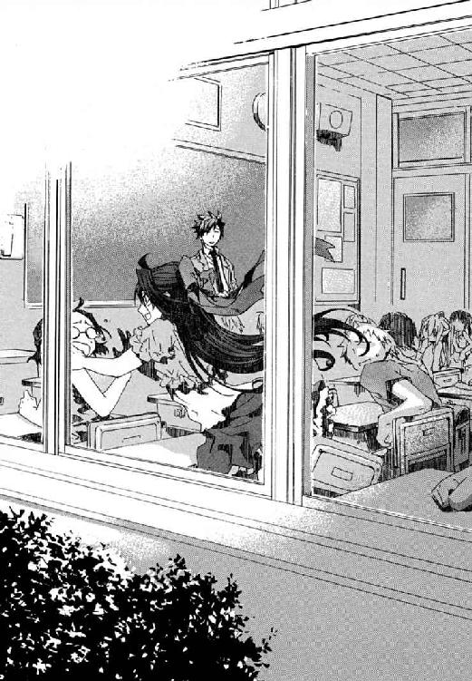
はじめはこの世界に彼しか頼るものがなかった魔女に、人のつながりができていた。寒川紀子が、いつの間にか、対等の友だちどうしみたいにメイゼルに抵抗するようになった。
「鴉木さんのことなんてさそってません！ ナニするんですか教室で!? やっ...やっ！ やーめーてーくーだーさーいー！」
問題だらけだが、そんなものをいっさいがっさい積んで人間関係は広がるように思えた。だが、その甘い見方を、教壇の真ん前の席の女子生徒のつぶやきが粉砕した。
「二学期早々、三角関係ですね」
仁の心臓が一瞬凍りついた。小学生ふたりのもつれ合いが教室中からどう見えているのかと、不安になった。
「それだけは絶対ないぞ！ おまえら教師をなんだと思ってるんだ？」
子どものころそばにいてほしかったようなおとなに、仁はなってやりたかった。そのはずが、どこか目算が致命的にズレている気がした。暑くてたまらないのに、二学期一日目から冷や汗がとまらない。夏休みの宿題の日記をしあげていた天瑞岬が、顔をあげた。
「先生は、自分が人生墜落中だって気づいていますか？」
幾万の魔法世界のうちに、ただひとつ魔法に見捨てられた世界がある。ここは地獄──誰もが残酷な問いにさらされる場所。
〈ＦＩＮ〉
あとがき
皆様、おひさしぶりです。長谷敏司です。
あとがきが四巻は二ページ、五巻は一ページと圧縮状態だったので、今回は六ページ書いていいと言われて舞い上がっております。
六巻、いかがでしたでしょうか？ 今回、いろいろ書きたいことがあって長めにスペースをいただいたのですが、こまったことにネタバレになる話題ばかりです。あとがきから読まれているかたは、よろしければ小説本文のほうを先に見てやっていただけますとさいわいです。
以下、六巻のネタバレあるので一行あけます。
四巻五巻と続いてきた流れが、ひとまず今巻で一段落がつきました。
メイゼルときずなと仁の関係、京香や魔導師公館との関係も、これまでどおりではありません。
『円環少女』は現在おおきなまとまりとして、一巻が第一話《バベル編》、二巻と三巻が第二話《グレン編》、四巻からこの六巻までが第三話《東京地下戦争編》という感じになっております。はじめからの予定ではなく、三巻で終わるはずだった物語に六巻かかっているのですが。
元々、第三話は、「魔法使いの物語を現実世界に近い方向へ広げてみよう」とスタートした話でした。ご存じの通り、この円環少女は、「この世界に魔法使いが本当はたくさん訪れている」という物語です。なのに、三巻まで閉鎖空間だったり南の海だったりで、意外と〝現実の風景〟を描かなかったなあと気づいたのです。だから、ちょっと現実に近づけてみようと思ったのですよ。それがこんなことになろうとは、もう。
今にして思うと、〝現実の風景〟ということばがくせものでした。取りかかってみると、歴史なのか文化なのか景色としてなのかで、〝風景〟の描き方は別物だったからです。
かくして現実世界に物語を広げるどころか、世界の広さを思い知ることになったわけで。
歴史風景で現代日本に魔法使いの歴史をからめて描こうとすると、一九四五年に終戦した戦争が視野にはいる。いろいろアレなのであらためて並べはしませんが、魔法使いが神話の末裔だという『円環少女』の設定ならそうだろうという戦前のビジョンはあるわけです。
けれど、現在から戦後史を振り返ったとき、今度は視界にちらつく一九六〇年から七〇年代はじめの安保闘争や学生運動を無視するのはアンフェアに思えてきたわけです。何を書いても正しくならないとは悩みました。けれど四巻あたりを執筆してる最中に、よけるとかえって変だと思い直して、五巻六巻と直進してしまいました。
あくまでも娯楽作品なので、政治については極力触れないつもりでした。けれど国城田の背景がああいう人なので、必然的に残る部分もありました。このあたりの選択は、いまだにベストだったのかはよくわかりません。
自国の、しかも関係された方々が大勢ご存命の近い歴史をファンタジーにというのもどうかと迷いました。が、『円環少女』は、表舞台からはじき出された魔法使いを追う物語（ファンタジー）なので、よけようとすると背中がむずむずしたというのがおおきいです。
内容や記述などお気に障られたかたには、どうもすみません。
そういう意味でも、「この小説は実在の歴史事件、人物、団体、地名などとは関係がありません」と、この六巻でもつけさせてやってください。四巻から六巻まで、同じことを書いているのもなんですが。
実在のものと関係がないファンタジー小説なのに固有名詞や社会事件の名前をそのまま書いているのは、背景設定の性質からです。『円環少女』は、神話や伝説を、魔法使いたちにかかわる実在した事件としてあつかっています。もしも魔法使いが勝った場合には同じように神話になるだろうものもあるので、作中で、神話と現実は並置なのです。
いけない。あとがき長いのにかたすぎて笑いが一切ない......。
そういえば、実は、四巻から六巻の流れで書き直し回数が一番多かったのは五巻終盤です。駅前が舞台になったシーンなのですが、これはモデルになった場所がありまして、交番のすぐそばなのです。仁とメイゼルのやりとりをどう想像しても、「あそこでこんなことやってたら、仁が警官に職務質問されるなあ」と。
メイゼルが警官の前できわどいことを言うカットを仁が逮捕されそうだったので削ったり、山のように修正がかかっています。やっぱり小学生と警官は食い合わせが悪いです。
『円環少女』では、一巻からすこしずつメイゼルと仁の関係を変化させているのですが、そのせいかカットするシーンがけっこう出ています。毎回微妙に距離感をとりなおしながら物語を進めておりますので、この先メイゼルと仁、そしてきずなや京香がどんなふうに変わってゆくか、楽しみにしてやってください。
あと六巻の章タイトルは、七十一年、七十二年の有名曲のタイトルをあてています。資料でこのあたりの時代のことを読んでいると、現在でも耳にするものがかなりあったためです。連綿と流れている感じが六巻に合っている気がしたので、らしいかなと。
インタルードのサブタイトル『嵐の男』は、正しい歌のタイトルは『仮面ライダーのうた』（一九七一年）なのですが、章タイトルにそれもどうかと思ったので、こうしました。Introも内容に適切なものが見つからなかったため、歌タイトルではありません。こういうあきらめのよさが長所か短所かは自分でもよくわかりません。
おお、まだあとがきスペースがある......。
実は『円環少女』のあとがきの最長は、三巻の三ページだったので、すでにこの四ページ目が未踏領域です。なんてショボイ未踏領域だ！（気づいて愕然）
この余裕は、六巻が総ページ数四百ページという長さになって、もはや一ページや二ページ落としても価格が同じなせいなので、すこし申し訳なくもあります。実は今回、前巻までと比べて分量が二十五％増量です。でも、読みやすくなるようには最大限努力しましたので、ご容赦ください。
ざっと本を開いてみた感じ、この六巻と、一巻あたりではページの文字の詰まりかたがだいぶ変わっているんじゃないかと思います。相変わらずのまっ黒なページを開いてしまったかたは、ごめんなさい。二、三ページめくると改善しているんじゃないかとっ。
さすがに六冊目なので、あとがき恒例ぎみの「読みやすくなるよう努力しました」の表記は、今回を最後にやめようかと思っております。とはいえ、努力は続けますので、あたたかく見守ってやってください。
最後に謝辞を。
イラストの深遊さん、いつも素晴らしい絵をありがとうございます。五巻の終盤のあの絵は、私もはじめて見たときドキリとさせていただきました。担当編集者さん、いろいろお世話おかけしました。
そして、家族へ。夏場いろいろあったのに、ほとんど役立たずでした。友人のみなさま。いろいろ助けていただいております。Ｔ・Ｍくんのお姉さん、貴重な資料ありがとうございました。
次の『円環少女』七巻は、来年早々から春くらいにお目見えできる予定です。
07年秋現在、ちょうど角川書店の雑誌『ザ・スニーカー』で『円環少女』の短編を短期連載しております。雑誌は偶数月の月末発売ですので、よろしければっ。
なんかもう、読者のみなさまのおかげで、一巻が出たころは著者自身想像もできなかったほど順調にお仕事させていただいております。精いっぱいよいものを書けるよう努力しますので、今後ともよろしくお願いいたします。
カバー・口絵・本文イラスト／深遊
カバー・口絵・本文デザイン／中デザイン事務所
円環少女
⑥太陽がくだけるとき
長谷敏司
平成25年9月1日 発行
発行者 宍戸健司
発行所 株式会社角川書店
〒102-8078 東京都千代田区富士見2-13-3
http://www.kadokawa.co.jp/
(C) Satoshi HASE 2007
本電子書籍は下記にもとづいて制作しました
角川スニーカー文庫『円環少女 ⑥太陽がくだけるとき』平成19年11月1日初版発行
平成20年3月1日再版発行